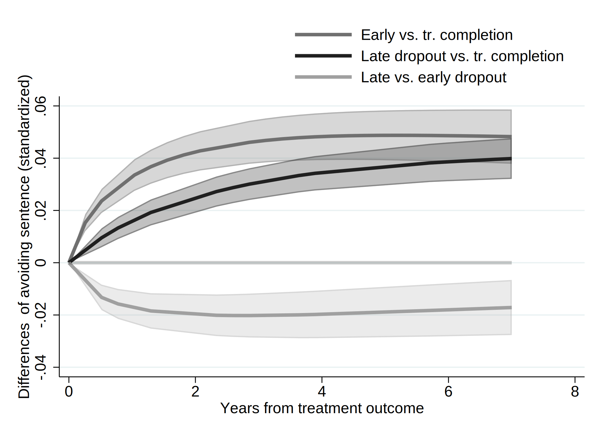
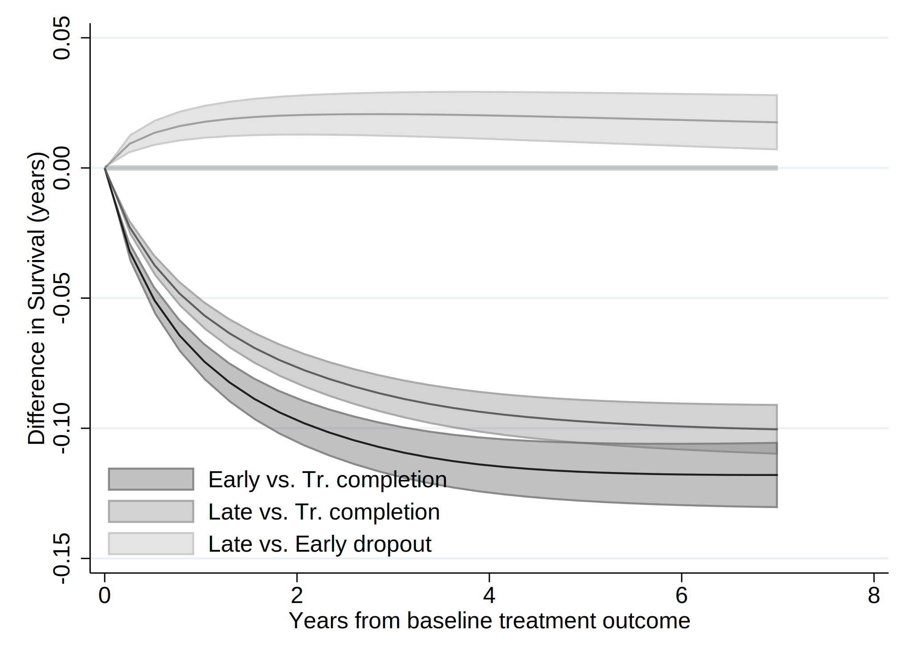
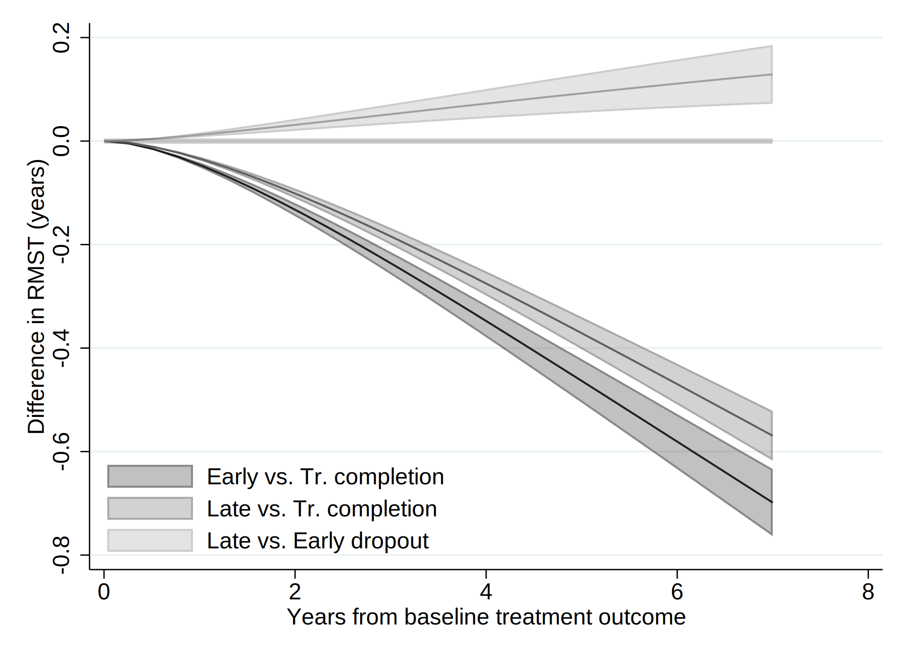

. clear all
. cap noi which tabout
c:\ado\plus\t\tabout.ado
*! 2.0.8 Ian Watson 15mar2019
*! tabout version 3 (beta) available at: http://tabout.net.au
. if _rc==111 {
. cap noi ssc install tabout
. }
. cap noi which pathutil
c:\ado\plus\p\pathutil.ado
*! version 2.2.0 19nov2020 daniel klein
. if _rc==111 {
. cap noi net install pathutil, from("http://fmwww.bc.edu/repec/bocode/p/")
. }
. cap noi which pathutil
c:\ado\plus\p\pathutil.ado
*! version 2.2.0 19nov2020 daniel klein
. if _rc==111 {
. ssc install dirtools
. }
. cap noi which project
c:\ado\plus\p\project.ado
*! version 1.3.1 22dec2013 picard@netbox.com
. if _rc==111 {
. ssc install project
. }
. cap noi which stipw
c:\ado\plus\s\stipw.ado
*! Version 1.0.0 17Jan2022
. if _rc==111 {
. ssc install stipw
. }
. cap noi which stpm2
c:\ado\plus\s\stpm2.ado
*! version 1.7.5 May2021
. if _rc==111 {
. ssc install stpm2
. }
. cap noi which rcsgen
c:\ado\plus\r\rcsgen.ado
*! version 1.5.9 13FEB2022
. if _rc==111 {
. ssc install rcsgen
. }
. cap noi which matselrc
c:\ado\plus\m\matselrc.ado
*! NJC 1.1.0 20 Apr 2000 (STB-56: dm79)
. if _rc==111 {
. cap noi net install dm79, from(http://www.stata.com/stb/stb56)
. }
. cap noi which stpm2_standsurv
c:\ado\plus\s\stpm2_standsurv.ado
*! version 1.1.2 12Jun2018
. if _rc==111 {
. cap noi net install stpm2_standsurv.pkg, from(http://fmwww.bc.edu/RePEc/bocode/s)
. }
. cap noi which fs
c:\ado\plus\f\fs.ado
*! NJC 1.0.5 23 November 2006
. if _rc==111 {
. ssc install fs
. }
. cap noi which mkspline2
c:\ado\plus\m\mkspline2.ado
*! version 1.0.0 MLB 04Apr2009
. if _rc==111 {
. ssc install postrcspline
. }
. cap noi which estwrite
c:\ado\plus\e\estwrite.ado
*! version 1.2.4 04sep2009
*! version 1.0.1 15may2007 (renamed from -eststo- to -estwrite-; -append- added)
*! version 1.0.0 29apr2005 Ben Jann (ETH Zurich)
. if _rc==111 {
. ssc install estwrite
. }
.
. cap noi ssc install moremata
checking moremata consistency and verifying not already installed...
the following files already exist and are different:
c:\ado\plus\l\lmoremata.mlib
c:\ado\plus\l\lmoremata10.mlib
c:\ado\plus\l\lmoremata11.mlib
c:\ado\plus\l\lmoremata14.mlib
c:\ado\plus\m\moremata.hlp
c:\ado\plus\m\moremata_source.hlp
c:\ado\plus\m\moremata11_source.hlp
c:\ado\plus\m\mf_mm_quantile.hlp
c:\ado\plus\m\mf_mm_ipolate.hlp
c:\ado\plus\m\mf_mm_collapse.hlp
c:\ado\plus\m\mf_mm_ebal.sthlp
c:\ado\plus\m\mf_mm_density.sthlp
c:\ado\plus\m\mf_mm_hl.hlp
c:\ado\plus\m\mf_mm_mloc.hlp
c:\ado\plus\m\mf_mm_ls.hlp
c:\ado\plus\m\mf_mm_qr.sthlp
no files installed or copied
(no action taken)
.
. cap noi which esttab
c:\ado\plus\e\esttab.ado
*! version 2.0.9 06feb2016 Ben Jann
*! wrapper for estout
. if _rc==111 {
. ssc install estout
. }
Date created: 12:01:04 5 Apr 2023.
Get the folder
E:\Mi unidad\Alvacast\SISTRAT 2022 (github)
Fecha: 5 Apr 2023, considerando un SO Windows para el usuario: andre
Path data= ;
Tiempo: 5 Apr 2023, considerando un SO Windows
The file is located and named as: E:\Mi unidad\Alvacast\SISTRAT 2022 (github)fiscalia_mariel_feb_2023_match_SENDA_miss.dta
=============================================================================
=============================================================================
We open the files
. use "fiscalia_mariel_feb_2023_match_SENDA_miss.dta", clear
.
. **What Mariel requested
.
. frame create original
. frame original: use "fiscalia_mariel_jan_2023_match_SENDA.dta", clear
. frame original:
.
. frlink 1:1 hash_key, frame(original)
(all observations in frame default matched)
. frget origen_ingreso_mod, from(original)
(1 variable copied from linked frame)
.
. drop if origen_ingreso_mod ==4
(6,712 observations deleted)
.
. *b) select 10% of the data
. /*
> set seed 2125
> sample 10
> */
.
.
. fs mariel_ags_*.do
mariel_ags_b.do mariel_ags_b_m2.do mariel_ags_b_m1.do mariel_ags_b_m3.do
. di "`r(dofile)'"
.
. *tostring tr_modality, gen(tr_modality_str)
.
. cap noi encode tr_modality_str, gen(newtr_modality)
variable tr_modality_str not found
. cap confirm variable newtr_modality
. if !_rc {
. cap noi drop tr_modality
. cap noi rename newtr_modality tr_modality
. }
.
. cap noi encode condicion_ocupacional_cor, gen(newcondicion_ocupacional_cor)
not possible with numeric variable
. cap confirm variable newcondicion_ocupacional_cor
. if !_rc {
. cap noi drop condicion_ocupacional_cor
. cap noi rename newcondicion_ocupacional_cor condicion_ocupacional_cor
. }
.
. cap noi encode tipo_centro, gen(newtipo_centro)
variable tipo_centro not found
. cap confirm variable newtipo_centro
. if !_rc {
. cap noi drop tipo_centro
. cap noi rename newtipo_centro tipo_centro
. }
.
. cap noi encode sus_ini_mod_mvv, gen(newsus_ini_mod_mvv)
. cap confirm variable newsus_ini_mod_mvv
. if !_rc {
. cap noi drop sus_ini_mod_mvv
. cap noi rename newsus_ini_mod_mvv sus_ini_mod_mvv
. }
.
. cap noi encode dg_trs_cons_sus_or, gen(newdg_trs_cons_sus_or)
. cap confirm variable newdg_trs_cons_sus_or
. if !_rc {
. cap noi drop dg_trs_cons_sus_or
. cap noi rename newdg_trs_cons_sus_or dg_trs_cons_sus_or
. }
.
. cap noi encode con_quien_vive_joel, gen(newcon_quien_vive_joel)
. cap confirm variable newcon_quien_vive_joel
. if !_rc {
. cap noi drop con_quien_vive_joel
. cap noi rename newcon_quien_vive_joel con_quien_vive_joel
. }
.
.
. *order and encode
. cap noi decode freq_cons_sus_prin, gen(str_freq_cons_sus_prin)
. cap confirm variable str_freq_cons_sus_prin
. if !_rc {
. cap noi drop freq_cons_sus_prin
. label def freq_cons_sus_prin2 1 "Less than 1 day a week" 2 "1 day a week or more" 3 "2 to 3 days a week" 4 "4 to 6 days a week" 5 "Daily"
. encode str_freq_cons_sus_prin, gen(freq_cons_sus_prin) label (freq_cons_sus_prin2)
. }
. cap noi decode dg_trs_cons_sus_or, gen(str_dg_trs_cons_sus_or)
. cap confirm variable str_dg_trs_cons_sus_or
. if !_rc {
. cap noi drop dg_trs_cons_sus_or
. cap label def dg_trs_cons_sus_or2 1 "Hazardous consumption" 2 "Drug dependence"
. encode str_dg_trs_cons_sus_or, gen(dg_trs_cons_sus_or) label (dg_trs_cons_sus_or2)
. }
.
.
. cap noi encode escolaridad_rec, gen(esc_rec)
not possible with numeric variable
. cap noi encode sex, generate(sex_enc)
. cap noi encode sus_principal_mod, gen(sus_prin_mod)
not possible with numeric variable
. cap noi encode freq_cons_sus_prin, gen(fr_sus_prin)
not possible with numeric variable
. cap noi encode compromiso_biopsicosocial, gen(comp_biosoc)
variable compromiso_biopsicosocial not found
. cap noi encode tenencia_de_la_vivienda_mod, gen(ten_viv)
not possible with numeric variable
. *encode dg_cie_10_rec, generate(dg_cie_10_mental_h) *already numeric
. cap noi encode dg_trs_cons_sus_or, gen(sud_severity_icd10)
not possible with numeric variable
. cap noi encode macrozona, gen(macrozone)
not possible with numeric variable
.
. /*
> *2023-02-28, not done in R
> cap noi recode numero_de_hijos_mod (0=0 "No children") (1/10=1 "Children"), gen(newnumero_de_hijos_mod)
> cap confirm variable newnumero_de_hijos_mod
> if !_rc {
> drop numero_de_hijos_mod
> cap noi rename newnumero_de_hijos_mod numero_de_hijos_mod
> }
> */
. mkspline2 rc_x = edad_al_ing_1, cubic nknots(4) displayknots
| knot1 knot2 knot3 knot4
-------------+--------------------------------------------
edad_al_in~1 | 21.21096 30.0137 38.92329 56.38466
.
. *not necessary: 2023-02-28
. *gen motivodeegreso_mod_imp_rec3 = 1
. *replace motivodeegreso_mod_imp_rec3 = 2 if strpos(motivodeegreso_mod_imp_rec,"Early")>0
. *replace motivodeegreso_mod_imp_rec3 = 3 if strpos(motivodeegreso_mod_imp_rec,"Late")>0
.
. *encode policonsumo, generate(policon) *already numeric
. // Generate a restricted cubic spline variable for a variable "x" with 4 knots
. *https://chat.openai.com/chat/4a9396cd-2caa-4a2e-b5f4-ed2c2d0779b3
. *https://www.stata.com/meeting/nordic-and-baltic15/abstracts/materials/sweden15_oskarsson.pdf
. *mkspline xspline = edad_al_ing_1, cubic nknots(4)
. *gen rcs_x = xspline1*xspline2 xspline3 xspline4
.
. *https://www.statalist.org/forums/forum/general-stata-discussion/general/1638622-comparing-cox-proportional-hazard-linear-and-non-linear-restricted-cubic-spline-models-using-likelihood-ratio-test
.
=============================================================================
=============================================================================
Reset-time
. *if missing offender_d (status) , means that there was a record and the time is the time of offense
.
. *set the indicator
. gen event=0
. replace event=1 if !missing(offender_d)
(20,171 real changes made)
. *replace event=1 if !missing(sex)
.
. *correct time to event if _st=0
. gen diff= age_offending_imp-edad_al_egres_imp
. gen diffc= cond(diff<0.001, 0.001, diff)
. drop diff
. rename diffc diff
. lab var diff "Time to offense leading to condemnatory sentence"
.
. *age time
. *stset age_offending_imp, fail(event ==1) enter(edad_al_egres_imp)
. *reset time
. stset diff, failure(event ==1)
failure event: event == 1
obs. time interval: (0, diff]
exit on or before: failure
------------------------------------------------------------------------------
64,151 total observations
0 exclusions
------------------------------------------------------------------------------
64,151 observations remaining, representing
20,171 failures in single-record/single-failure data
208,892.99 total analysis time at risk and under observation
at risk from t = 0
earliest observed entry t = 0
last observed exit t = 10.75828
.
. stdescribe, weight
failure _d: event == 1
analysis time _t: diff
|-------------- per subject --------------|
Category total mean min median max
------------------------------------------------------------------------------
no. of subjects 64151
no. of records 64151 1 1 1 1
(first) entry time 0 0 0 0
(final) exit time 3.25627 .001 2.6968 10.75828
subjects with gap 0
time on gap if gap 0
time at risk 208892.99 3.25627 .001 2.6968 10.75828
failures 20171 .31443 0 0 1
------------------------------------------------------------------------------
We calculate the incidence rate.
. stsum, by (motivodeegreso_mod_imp_rec)
failure _d: event == 1
analysis time _t: diff
| Incidence Number of |------ Survival time -----|
motivo~c | Time at risk rate subjects 25% 50% 75%
---------+---------------------------------------------------------------------
Treatmen | 56,786.6651 .0588695 16995 4.875341 . .
Treatmen | 43,690.369 .1300973 14679 1.477086 6.910761 .
Treatmen | 108,415.96 .1027893 32477 2.07332 . .
---------+---------------------------------------------------------------------
Total | 208,892.994 .0965614 64151 2.306523 . .
. *Micki Hill & Paul C Lambert & Michael J Crowther, 2021. "Introducing stipw: inverse probability weighted parametric survival models," London Stata Conference 2021 15, Stata Users Group.
. *https://view.officeapps.live.com/op/view.aspx?src=http%3A%2F%2Ffmwww.bc.edu%2Frepec%2Fusug2021%2Fusug21_hill.pptx&wdOrigin=BROWSELINK
.
. *Treatment variable should be a binary variable with values 0 and 1.
. gen motivodeegreso_mod_imp_rec2 = 0
. replace motivodeegreso_mod_imp_rec2 = 1 if motivodeegreso_mod_imp_rec==2
(14,679 real changes made)
. replace motivodeegreso_mod_imp_rec2 = 1 if motivodeegreso_mod_imp_rec==3
(32,477 real changes made)
.
. recode motivodeegreso_mod_imp_rec2 (0=1 "Tr Completion") (1=0 "Tr Non-completion (Late & Early)"), gen(caus_disch_mod_imp_rec)
(64151 differences between motivodeegreso_mod_imp_rec2 and caus_disch_mod_imp_rec)
.
. cap noi gen motegr_dum3= motivodeegreso_mod_imp_rec2
. replace motegr_dum3 = 0 if motivodeegreso_mod_imp_rec==2
(14,679 real changes made)
. cap noi gen motegr_dum2= motivodeegreso_mod_imp_rec2
. replace motegr_dum2 = 0 if motivodeegreso_mod_imp_rec==3
(32,477 real changes made)
. lab var motegr_dum3 "Baseline treatment outcome(dich, 1= Late Dropout)"
. lab var motegr_dum2 "Baseline treatment outcome(dich, 1= Early Dropout)"
. lab var caus_disch_mod_imp_rec "Baseline treatment outcome(dich)"
.
.
. *Factor variables not allowed for tvc() option. Create your own dummy varibles.
. gen motivodeegreso_mod_imp_rec_earl = 1
. replace motivodeegreso_mod_imp_rec_earl = 0 if motivodeegreso_mod_imp_rec==1
(16,995 real changes made)
. replace motivodeegreso_mod_imp_rec_earl = 0 if motivodeegreso_mod_imp_rec==3
(32,477 real changes made)
.
. gen motivodeegreso_mod_imp_rec_late = 1
. replace motivodeegreso_mod_imp_rec_late = 0 if motivodeegreso_mod_imp_rec==1
(16,995 real changes made)
. replace motivodeegreso_mod_imp_rec_late = 0 if motivodeegreso_mod_imp_rec==2
(14,679 real changes made)
.
. *recode motivodeegreso_mod_imp_rec_earl (1=1 "Early dropout") (0=0 "Tr. comp & Late dropout"), gen(newmotivodeegreso_mod_imp_rec_e)
. *recode motivodeegreso_mod_imp_rec_late (1=1 "Late dropout") (0=0 "Tr. comp & Early dropout"), gen(newmotivodeegreso_mod_imp_rec_l)
.
. lab var motivodeegreso_mod_imp_rec_earl "Baseline treatment outcome- Early dropout(dich)"
. lab var motivodeegreso_mod_imp_rec_late "Baseline treatment outcome- Late dropout(dich)"
.
. cap noi rename motivodeegreso_mod_imp_rec_late mot_egr_late
. cap noi rename motivodeegreso_mod_imp_rec_earl mot_egr_early
=============================================================================
=============================================================================
We generated a graph with every type of treatment and the Nelson-Aalen estimate.
. sts graph, na by (motivodeegreso_mod_imp_rec) ci ///
> title("Comission of an offense (cond. sentence)") ///
> subtitle("Nelson-Aalen Cum Hazards w/ Confidence Intervals 95%") ///
> risktable(, size(*.5) order(1 "Tr Completion" 2 "Early Disch" 3 "Late Disch")) ///
> ytitle("Cum. Hazards") ylabel(#8) ///
> xtitle("Years since tr. outcome") xlabel(#8) ///
> note("Source: nDP, SENDA's SUD Treatments & POs Office Data period 2010-2019 ") ///
> legend(rows(3)) ///
> legend(cols(4)) ///
> graphregion(color(white) lwidth(large)) bgcolor(white) ///
> plotregion(fcolor(white)) graphregion(fcolor(white) ) /// //text(.5 1 "IR = <0.001") ///
> legend(order(1 "95CI Tr Completion" 2 "Tr Completion" 3 "95CI Early Tr Disch" 4 "Early Tr Disch " 5 "95CI Late Tr Disch" 6 "Late Tr Disch" )size(*.5)region(lstyle(none)) region(c(none)) nobox)
failure _d: event == 1
analysis time _t: diff
(note: named style large not found in class linewidth, default attributes used)
(note: linewidth not found in scheme, default attributes used)
(note: named style large not found in class linewidth, default attributes used)
(note: linewidth not found in scheme, default attributes used)
. graph save "`c(pwd)'\_figs\tto_2023_m3.gph", replace
(note: file E:\Mi unidad\Alvacast\SISTRAT 2022 (github)\_figs\tto_2023_m3.gph not found)
(file E:\Mi unidad\Alvacast\SISTRAT 2022 (github)\_figs\tto_2023_m3.gph saved)
=============================================================================
=============================================================================
. /*
> vars_cov<-c("motivodeegreso_mod_imp_rec", "tr_modality", "edad_al_ing_1", "sex", "edad_ini_cons", "escolaridad_rec", "sus_principal_mod", "freq_cons_sus_prin", "condicion_ocupacional_corr", "policonsumo", "num_hij
> os_mod_joel_bin", "tenencia_de_la_vivienda_mod", "macrozona", "n_off_vio", "n_off_acq", "n_off_sud", "n_off_oth", "dg_cie_10_rec", "dg_trs_cons_sus_or", "clas_r", "porc_pobr", "sus_ini_mod_mvv", "ano_nac_corr", "
> con_quien_vive_joel", "fis_comorbidity_icd_10")
> */
.
. global covs "i.motivodeegreso_mod_imp_rec i.tr_modality i.sex_enc edad_ini_cons i.escolaridad_rec i.sus_principal_mod i.freq_cons_sus_prin i.condicion_ocupacional_cor i.policonsumo i.num_hijos_mod_joel_bin i.tenen
> cia_de_la_vivienda_mod i.macrozona i.n_off_vio i.n_off_acq i.n_off_sud i.n_off_oth i.dg_cie_10_rec i.dg_trs_cons_sus_or i.clas_r porc_pobr i.sus_ini_mod_mvv ano_nac_corr i.con_quien_vive_joel i.fis_comorbidity_icd
> _10"
.
.
. // VERIFY FIRST SPLINE VARIABLE IS THE ORIGINAL VARIABLE
. assert float(edad_al_ing_1) == float(rc_x1)
.
. // MODEL WITH FULL SPLINE
. qui noi stcox $covs rc*
failure _d: event == 1
analysis time _t: diff
Iteration 0: log likelihood = -213707.36
Iteration 1: log likelihood = -208544.96
Iteration 2: log likelihood = -208120.23
Iteration 3: log likelihood = -208116.01
Iteration 4: log likelihood = -208116
Iteration 5: log likelihood = -208116
Refining estimates:
Iteration 0: log likelihood = -208116
Cox regression -- Breslow method for ties
No. of subjects = 64,151 Number of obs = 64,151
No. of failures = 20,171
Time at risk = 208892.9941
LR chi2(51) = 11182.73
Log likelihood = -208116 Prob > chi2 = 0.0000
-------------------------------------------------------------------------------------------------------------
_t | Haz. Ratio Std. Err. z P>|z| [95% Conf. Interval]
--------------------------------------------+----------------------------------------------------------------
motivodeegreso_mod_imp_rec |
Treatment non-completion (Early) | 1.695711 .0430293 20.81 0.000 1.613438 1.782179
Treatment non-completion (Late) | 1.55242 .0316146 21.60 0.000 1.491677 1.615637
|
tr_modality |
Residential | 1.22234 .0240984 10.18 0.000 1.176009 1.270496
|
sex_enc |
Women | .7238718 .0148333 -15.77 0.000 .6953752 .7535362
edad_ini_cons | .988408 .0017837 -6.46 0.000 .9849183 .9919101
|
escolaridad_rec |
2-Completed high school or less | .9554057 .0157525 -2.77 0.006 .9250248 .9867844
1-More than high school | .8637675 .0210699 -6.00 0.000 .8234429 .9060668
|
sus_principal_mod |
Cocaine hydrochloride | 1.075015 .027884 2.79 0.005 1.021729 1.131079
Cocaine paste | 1.40302 .0308144 15.42 0.000 1.343907 1.464734
Marijuana | 1.040234 .0347608 1.18 0.238 .9742875 1.110645
Other | 1.023028 .0681694 0.34 0.733 .897775 1.165755
|
freq_cons_sus_prin |
1 day a week or more | .9117451 .043374 -1.94 0.052 .8305765 1.000846
2 to 3 days a week | .9937608 .0380582 -0.16 0.870 .9218988 1.071224
4 to 6 days a week | 1.009522 .0402823 0.24 0.812 .9335786 1.091643
Daily | 1.046518 .0399409 1.19 0.234 .9710917 1.127803
|
condicion_ocupacional_corr |
Inactive | 1.030627 .0305432 1.02 0.309 .9724692 1.092264
Looking for a job for the first time | .9769928 .1351483 -0.17 0.866 .7449788 1.281265
No activity | 1.122463 .0384654 3.37 0.001 1.049548 1.200443
Not seeking for work | 1.24044 .0716078 3.73 0.000 1.10774 1.389037
Unemployed | 1.161915 .0199914 8.72 0.000 1.123386 1.201765
|
1.policonsumo | 1.027529 .0212893 1.31 0.190 .9866387 1.070114
1.num_hijos_mod_joel_bin | 1.171286 .0210116 8.81 0.000 1.13082 1.213201
|
tenencia_de_la_vivienda_mod |
Others | .9954847 .0722616 -0.06 0.950 .8634682 1.147685
Owner/Transferred dwellings/Pays Dividends | .9234078 .0583268 -1.26 0.207 .8158824 1.045104
Renting | .9750004 .0619353 -0.40 0.690 .8608622 1.104272
Stays temporarily with a relative | .9334084 .0590636 -1.09 0.276 .8245366 1.056656
|
macrozona |
North | 1.29197 .0252824 13.09 0.000 1.243355 1.342485
South | 1.406706 .0393109 12.21 0.000 1.33173 1.485903
|
n_off_vio |
1 | 1.365421 .0260782 16.31 0.000 1.315253 1.417502
|
n_off_acq |
1 | 1.817435 .031366 34.62 0.000 1.756987 1.879963
|
n_off_sud |
1 | 1.240868 .0226192 11.84 0.000 1.197317 1.286002
|
n_off_oth |
1 | 1.368852 .0255928 16.79 0.000 1.319599 1.419943
|
dg_cie_10_rec |
Diagnosis unknown (under study) | 1.042611 .0231245 1.88 0.060 .998259 1.088934
With psychiatric comorbidity | 1.044766 .0174039 2.63 0.009 1.011206 1.07944
|
dg_trs_cons_sus_or |
Drug dependence | 1.029755 .0187546 1.61 0.107 .9936447 1.067177
|
clas_r |
Mixta | 1.014998 .0274908 0.55 0.583 .9625222 1.070335
Rural | 1.02952 .0310912 0.96 0.335 .9703511 1.092298
|
porc_pobr | 1.278288 .1398412 2.24 0.025 1.031596 1.583973
|
sus_ini_mod_mvv |
Cocaine hydrochloride | 1.044703 .0325657 1.40 0.161 .9827866 1.110521
Cocaine paste | 1.134141 .0361221 3.95 0.000 1.065508 1.207196
Marijuana | 1.08534 .018253 4.87 0.000 1.050148 1.121711
Other | 1.116431 .0544228 2.26 0.024 1.014702 1.22836
|
ano_nac_corr | .879421 .0033435 -33.80 0.000 .8728922 .8859987
|
con_quien_vive_joel |
Family of origin | .9474328 .0266736 -1.92 0.055 .8965697 1.001181
Others | .9960245 .0338692 -0.12 0.907 .9318059 1.064669
With couple/children | .9164043 .0254488 -3.14 0.002 .8678587 .9676654
|
fis_comorbidity_icd_10 |
Diagnosis unknown (under study) | 1.030399 .0157178 1.96 0.050 1.000048 1.06167
One or more | .8880435 .0307813 -3.43 0.001 .829717 .9504703
|
rc_x1 | .8602375 .0043918 -29.49 0.000 .8516726 .8688885
rc_x2 | 1.00696 .0171097 0.41 0.683 .9739774 1.041059
rc_x3 | .9367016 .0408571 -1.50 0.134 .8599506 1.020303
-------------------------------------------------------------------------------------------------------------
. estat ic
Akaike's information criterion and Bayesian information criterion
-----------------------------------------------------------------------------
Model | N ll(null) ll(model) df AIC BIC
-------------+---------------------------------------------------------------
. | 64,151 -213707.4 -208116 51 416334 416796.5
-----------------------------------------------------------------------------
Note: BIC uses N = number of observations. See [R] BIC note.
. estimates store full_spline
. scalar ll_1= e(ll)
. // MODEL WITH ONLY LINEAR TERM
. qui noi stcox $covs rc_x1
failure _d: event == 1
analysis time _t: diff
Iteration 0: log likelihood = -213707.36
Iteration 1: log likelihood = -208483.96
Iteration 2: log likelihood = -208141.27
Iteration 3: log likelihood = -208140.7
Iteration 4: log likelihood = -208140.7
Refining estimates:
Iteration 0: log likelihood = -208140.7
Cox regression -- Breslow method for ties
No. of subjects = 64,151 Number of obs = 64,151
No. of failures = 20,171
Time at risk = 208892.9941
LR chi2(49) = 11133.32
Log likelihood = -208140.7 Prob > chi2 = 0.0000
-------------------------------------------------------------------------------------------------------------
_t | Haz. Ratio Std. Err. z P>|z| [95% Conf. Interval]
--------------------------------------------+----------------------------------------------------------------
motivodeegreso_mod_imp_rec |
Treatment non-completion (Early) | 1.696189 .0430501 20.82 0.000 1.613876 1.782699
Treatment non-completion (Late) | 1.554176 .0316539 21.65 0.000 1.493358 1.617472
|
tr_modality |
Residential | 1.222412 .0240895 10.19 0.000 1.176097 1.27055
|
sex_enc |
Women | .7239027 .0148177 -15.78 0.000 .6954353 .7535353
edad_ini_cons | .9882303 .0017688 -6.61 0.000 .9847696 .9917031
|
escolaridad_rec |
2-Completed high school or less | .9613103 .0158049 -2.40 0.016 .9308271 .9927917
1-More than high school | .876764 .0212492 -5.43 0.000 .8360901 .9194167
|
sus_principal_mod |
Cocaine hydrochloride | 1.086478 .0281923 3.20 0.001 1.032604 1.143163
Cocaine paste | 1.421079 .03116 16.03 0.000 1.3613 1.483483
Marijuana | 1.040764 .0348231 1.19 0.232 .9747015 1.111304
Other | 1.016564 .0678332 0.25 0.806 .8919399 1.1586
|
freq_cons_sus_prin |
1 day a week or more | .9127662 .0434228 -1.92 0.055 .8315063 1.001967
2 to 3 days a week | .9942113 .0380754 -0.15 0.880 .922317 1.07171
4 to 6 days a week | 1.009462 .0402797 0.24 0.813 .9335233 1.091578
Daily | 1.046669 .039944 1.20 0.232 .9712364 1.12796
|
condicion_ocupacional_corr |
Inactive | 1.012193 .0298545 0.41 0.681 .9553387 1.072431
Looking for a job for the first time | .9598316 .132726 -0.30 0.767 .7319653 1.258635
No activity | 1.112256 .0380617 3.11 0.002 1.040103 1.189415
Not seeking for work | 1.234111 .0712162 3.65 0.000 1.102134 1.381892
Unemployed | 1.15698 .0198914 8.48 0.000 1.118643 1.196631
|
1.policonsumo | 1.038024 .0215084 1.80 0.072 .9967125 1.081047
1.num_hijos_mod_joel_bin | 1.186468 .0210878 9.62 0.000 1.145848 1.228528
|
tenencia_de_la_vivienda_mod |
Others | .9931329 .0720926 -0.09 0.924 .8614255 1.144978
Owner/Transferred dwellings/Pays Dividends | .9174712 .0579409 -1.36 0.173 .8106561 1.038361
Renting | .975364 .0619571 -0.39 0.695 .8611853 1.104681
Stays temporarily with a relative | .9319362 .0589652 -1.11 0.265 .8232453 1.054977
|
macrozona |
North | 1.28941 .0252161 13.00 0.000 1.240923 1.339792
South | 1.404518 .0392456 12.16 0.000 1.329666 1.483583
|
n_off_vio |
1 | 1.363633 .0260518 16.23 0.000 1.313516 1.415661
|
n_off_acq |
1 | 1.817491 .0313883 34.59 0.000 1.757 1.880064
|
n_off_sud |
1 | 1.243598 .0226588 11.97 0.000 1.199971 1.288811
|
n_off_oth |
1 | 1.371747 .0256457 16.91 0.000 1.322392 1.422944
|
dg_cie_10_rec |
Diagnosis unknown (under study) | 1.044311 .02316 1.96 0.051 .9998909 1.090705
With psychiatric comorbidity | 1.047305 .0174429 2.78 0.006 1.013669 1.082056
|
dg_trs_cons_sus_or |
Drug dependence | 1.030057 .0187523 1.63 0.104 .9939506 1.067474
|
clas_r |
Mixta | 1.014184 .0274647 0.52 0.603 .961758 1.069468
Rural | 1.030206 .0311143 0.99 0.324 .9709932 1.09303
|
porc_pobr | 1.273652 .1392742 2.21 0.027 1.027949 1.578083
|
sus_ini_mod_mvv |
Cocaine hydrochloride | 1.048978 .032682 1.53 0.125 .9868392 1.11503
Cocaine paste | 1.139916 .0362846 4.11 0.000 1.070972 1.213298
Marijuana | 1.080513 .0181663 4.61 0.000 1.045487 1.116711
Other | 1.120044 .0546475 2.32 0.020 1.017898 1.232439
|
ano_nac_corr | .879041 .0033417 -33.91 0.000 .8725157 .8856151
|
con_quien_vive_joel |
Family of origin | .9470802 .0266862 -1.93 0.054 .8961942 1.000856
Others | .9978333 .033938 -0.06 0.949 .9334847 1.066618
With couple/children | .920211 .025543 -3.00 0.003 .8714852 .9716612
|
fis_comorbidity_icd_10 |
Diagnosis unknown (under study) | 1.029072 .0156959 1.88 0.060 .9987639 1.0603
One or more | .8809799 .0305377 -3.66 0.000 .823115 .9429127
|
rc_x1 | .8545758 .0033102 -40.57 0.000 .8481125 .8610884
-------------------------------------------------------------------------------------------------------------
. estat ic
Akaike's information criterion and Bayesian information criterion
-----------------------------------------------------------------------------
Model | N ll(null) ll(model) df AIC BIC
-------------+---------------------------------------------------------------
. | 64,151 -213707.4 -208140.7 49 416379.4 416823.8
-----------------------------------------------------------------------------
Note: BIC uses N = number of observations. See [R] BIC note.
. scalar ll_2= e(ll)
. estimates store linear_term
.
. lrtest full_spline linear_term
Likelihood-ratio test LR chi2(2) = 49.41
(Assumption: linear_term nested in full_spline) Prob > chi2 = 0.0000
.
. scalar ll_diff= round(`=scalar(ll_1)'-`=scalar(ll_2)',.01)
. di "Log-likelihood difference (spline - linear): `=scalar(ll_diff)'"
Log-likelihood difference (spline - linear): 24.7
.
. * the presence of censored observations makes it difficult to decide further among them. (This is partly due to the fact that both the Cox model and the parametric survival models assume that censoring is orthogon
> al to survival time, a mathematically handy assumption that is often demonstrably and seriously in error, and the actual data generation process for survival is often too unknown or too messy to simulate.) So in t
> his context, reliance on LR tests or IC statistics is a fallback position.
Log-likelihood difference (spline - linear): 24.7
=============================================================================
=============================================================================
In view of nonproportional hazards, we explored different shapes of time-dependent effects and baseline hazards.
. *______________________________________________
. *______________________________________________
. * ADJUSTED ROYSTON PARMAR - NO STAGGERED ENTRY, BINARY TREATMENT (1-DROPOUT VS. 0-COMPLETION)
.
. /*
> vars_cov<-c("motivodeegreso_mod_imp_rec", "tr_modality", "edad_al_ing_1", "sex", "edad_ini_cons", "escolaridad_rec", "sus_principal_mod", "freq_cons_sus_prin", "condicion_ocupacional_corr", "policonsumo", "num_hij
> os_mod_joel_bin", "tenencia_de_la_vivienda_mod", "macrozona", "n_off_vio", "n_off_acq", "n_off_sud", "n_off_oth", "dg_cie_10_rec", "dg_trs_cons_sus_or", "clas_r", "porc_pobr", "sus_ini_mod_mvv", "ano_nac_corr", "
> con_quien_vive_joel", "fis_comorbidity_icd_10")
> */
.
. cap noi tab tr_modality, gen(tr_mod)
Treatment |
Modality | Freq. Percent Cum.
------------+-----------------------------------
Ambulatory | 54,439 84.86 84.86
Residential | 9,712 15.14 100.00
------------+-----------------------------------
Total | 64,151 100.00
. cap noi tab sex_enc, gen(sex_dum)
Sex | Freq. Percent Cum.
------------+-----------------------------------
Men | 49,362 76.95 76.95
Women | 14,789 23.05 100.00
------------+-----------------------------------
Total | 64,151 100.00
. cap noi tab escolaridad_rec, gen(esc)
Educational Attainment | Freq. Percent Cum.
-----------------------------------+-----------------------------------
3-Completed primary school or less | 17,702 27.59 27.59
2-Completed high school or less | 35,707 55.66 83.26
1-More than high school | 10,742 16.74 100.00
-----------------------------------+-----------------------------------
Total | 64,151 100.00
. cap noi tab sus_principal_mod, gen(sus_prin)
Primary Substance |
(admission to |
treatment) | Freq. Percent Cum.
----------------------+-----------------------------------
Alcohol | 20,825 32.46 32.46
Cocaine hydrochloride | 12,445 19.40 51.86
Cocaine paste | 25,794 40.21 92.07
Marijuana | 3,930 6.13 98.20
Other | 1,157 1.80 100.00
----------------------+-----------------------------------
Total | 64,151 100.00
. cap noi tab freq_cons_sus_prin, gen(fr_cons_sus_prin)
Frequency of Substance |
Use (Primary |
Substance) | Freq. Percent Cum.
-----------------------+-----------------------------------
Less than 1 day a week | 2,889 4.50 4.50
1 day a week or more | 4,002 6.24 10.74
2 to 3 days a week | 17,851 27.83 38.57
4 to 6 days a week | 10,842 16.90 55.47
Daily | 28,567 44.53 100.00
-----------------------+-----------------------------------
Total | 64,151 100.00
. cap noi tab condicion_ocupacional_cor, gen(cond_ocu)
Corrected Occupational Status (f) | Freq. Percent Cum.
-------------------------------------+-----------------------------------
Employed | 31,351 48.87 48.87
Inactive | 6,383 9.95 58.82
Looking for a job for the first time | 139 0.22 59.04
No activity | 3,339 5.20 64.24
Not seeking for work | 680 1.06 65.30
Unemployed | 22,259 34.70 100.00
-------------------------------------+-----------------------------------
Total | 64,151 100.00
. cap noi tab num_hijos_mod_joel_bin, gen(num_hij)
Number of |
Children |
(dichotomiz |
ed) | Freq. Percent Cum.
------------+-----------------------------------
0 | 15,542 24.23 24.23
1 | 48,609 75.77 100.00
------------+-----------------------------------
Total | 64,151 100.00
. cap noi tab tenencia_de_la_vivienda_mod, gen(tenviv)
Housing Situation (Tenure Status) | Freq. Percent Cum.
----------------------------------------+-----------------------------------
Illegal Settlement | 700 1.09 1.09
Others | 1,848 2.88 3.97
Owner/Transferred dwellings/Pays Divide | 24,055 37.50 41.47
Renting | 12,286 19.15 60.62
Stays temporarily with a relative | 25,262 39.38 100.00
----------------------------------------+-----------------------------------
Total | 64,151 100.00
. cap noi tab macrozona, gen(mzone)
Macro |
Administrat |
ive Zone in |
Chile | Freq. Percent Cum.
------------+-----------------------------------
Center | 48,810 76.09 76.09
North | 9,437 14.71 90.80
South | 5,904 9.20 100.00
------------+-----------------------------------
Total | 64,151 100.00
. cap noi tab clas_r, gen(rural)
Socioeconom |
ic |
Classificat |
ion | Freq. Percent Cum.
------------+-----------------------------------
Urbana | 52,995 82.61 82.61
Mixta | 6,132 9.56 92.17
Rural | 5,024 7.83 100.00
------------+-----------------------------------
Total | 64,151 100.00
. cap noi tab sus_ini_mod_mvv, gen(susini)
sus_ini_mod_mvv | Freq. Percent Cum.
----------------------+-----------------------------------
Alcohol | 37,978 59.20 59.20
Cocaine hydrochloride | 3,727 5.81 65.01
Cocaine paste | 2,992 4.66 69.67
Marijuana | 17,928 27.95 97.62
Other | 1,526 2.38 100.00
----------------------+-----------------------------------
Total | 64,151 100.00
. cap noi tab con_quien_vive_joel, gen(cohab)
con_quien_vive_joel | Freq. Percent Cum.
---------------------+-----------------------------------
Alone | 6,088 9.49 9.49
Family of origin | 26,931 41.98 51.47
Others | 5,587 8.71 60.18
With couple/children | 25,545 39.82 100.00
---------------------+-----------------------------------
Total | 64,151 100.00
. cap noi tab fis_comorbidity_icd_10, gen(fis_com)
Physical Comorbidity (ICD-10) | Freq. Percent Cum.
--------------------------------+-----------------------------------
Without physical comorbidity | 25,241 39.35 39.35
Diagnosis unknown (under study) | 34,795 54.24 93.59
One or more | 4,115 6.41 100.00
--------------------------------+-----------------------------------
Total | 64,151 100.00
. cap noi tab dg_cie_10_rec, gen(psy_com)
Psychiatric Comorbidity |
(ICD-10) | Freq. Percent Cum.
--------------------------------+-----------------------------------
Without psychiatric comorbidity | 24,912 38.83 38.83
Diagnosis unknown (under study) | 12,304 19.18 58.01
With psychiatric comorbidity | 26,935 41.99 100.00
--------------------------------+-----------------------------------
Total | 64,151 100.00
. cap noi tab dg_trs_cons_sus_or, gen(dep)
dg_trs_cons_sus_or | Freq. Percent Cum.
----------------------+-----------------------------------
Hazardous consumption | 17,065 26.60 26.60
Drug dependence | 47,086 73.40 100.00
----------------------+-----------------------------------
Total | 64,151 100.00
.
. /*
> *NO LONGER USEFUL
> local varslab "dg_fis_anemia dg_fis_card dg_fis_in_study dg_fis_enf_som dg_fis_ets dg_fis_hep_alc dg_fis_hep_b dg_fis_hep_cro dg_fis_inf dg_fis_otr_cond_fis_ries_vit dg_fis_otr_cond_fis dg_fis_pat_buc dg_fis_pat_g
> es_intrau dg_fis_trau_sec"
> forvalues i = 1/14 {
> local v : word `i' of `varslab'
> di "`v'"
> gen `v'2= 0
> replace `v'2 =1 if `v'==2
> }
> */
.
. global covs_3b "mot_egr_early mot_egr_late i.tr_modality i.sex_enc edad_ini_cons i.escolaridad_rec i.sus_principal_mod i.freq_cons_sus_prin i.condicion_ocupacional_cor i.policonsumo i.num_hijos_mod_joel_bin i.tene
> ncia_de_la_vivienda_mod i.macrozona i.n_off_vio i.n_off_acq i.n_off_sud i.n_off_oth i.dg_cie_10_rec i.dg_trs_cons_sus_or i.clas_r porc_pobr i.sus_ini_mod_mvv ano_nac_corr i.con_quien_vive_joel i.fis_comorbidity_ic
> d_10 rc_x1 rc_x2 rc_x3"
.
. *REALLY NEEDS DUMMY VARS
. global covs_3b_pre_dum "mot_egr_early mot_egr_late tr_mod2 sex_dum2 edad_ini_cons esc1 esc2 sus_prin2 sus_prin3 sus_prin4 sus_prin5 fr_cons_sus_prin2 fr_cons_sus_prin3 fr_cons_sus_prin4 fr_cons_sus_prin5 cond_ocu2
> cond_ocu3 cond_ocu4 cond_ocu5 cond_ocu6 policonsumo num_hij2 tenviv1 tenviv2 tenviv4 tenviv5 mzone2 mzone3 n_off_vio n_off_acq n_off_sud n_off_oth psy_com2 psy_com3 dep2 rural2 rural3 porc_pobr susini2 susini3 su
> sini4 susini5 ano_nac_corr cohab2 cohab3 cohab4 fis_com2 fis_com3 rc_x1 rc_x2 rc_x3"
.
. forvalues i=1/10 {
2. forvalues j=1/7 {
3. qui noi stpm2 $covs_3b_pre_dum , scale(hazard) df(`i') eform tvc(mot_egr_early mot_egr_late) dftvc(`j')
4. estimates store m_nostag_rp`i'_tvc_`j'
5. }
6. }
Iteration 0: log likelihood = -62178.198
Iteration 1: log likelihood = -61578.286
Iteration 2: log likelihood = -61570.167
Iteration 3: log likelihood = -61570.164
Log likelihood = -61570.164 Number of obs = 64,151
---------------------------------------------------------------------------------------
| exp(b) Std. Err. z P>|z| [95% Conf. Interval]
----------------------+----------------------------------------------------------------
xb |
mot_egr_early | 1.736375 .0469581 20.40 0.000 1.646735 1.830894
mot_egr_late | 1.589625 .0355309 20.74 0.000 1.521489 1.660812
tr_mod2 | 1.225164 .0241538 10.30 0.000 1.178727 1.273431
sex_dum2 | .7175803 .0147079 -16.19 0.000 .6893247 .746994
edad_ini_cons | .988303 .0017827 -6.52 0.000 .9848151 .9918033
esc1 | 1.163927 .0283952 6.22 0.000 1.109583 1.220933
esc2 | 1.109789 .0242676 4.76 0.000 1.06323 1.158386
sus_prin2 | 1.07092 .0277618 2.64 0.008 1.017867 1.126738
sus_prin3 | 1.406839 .0308699 15.56 0.000 1.347618 1.468663
sus_prin4 | 1.033511 .0345233 0.99 0.324 .9680136 1.103439
sus_prin5 | 1.010054 .0673021 0.15 0.881 .8863945 1.150965
fr_cons_sus_prin2 | .9112883 .0433535 -1.95 0.051 .8301582 1.000347
fr_cons_sus_prin3 | .9925891 .0380145 -0.19 0.846 .9208097 1.069964
fr_cons_sus_prin4 | 1.008892 .0402592 0.22 0.824 .9329918 1.090966
fr_cons_sus_prin5 | 1.046187 .0399333 1.18 0.237 .9707751 1.127457
cond_ocu2 | 1.032438 .0306017 1.08 0.281 .9741689 1.094193
cond_ocu3 | .9533054 .1318856 -0.35 0.730 .7268956 1.250236
cond_ocu4 | 1.125508 .0385836 3.45 0.001 1.05237 1.203729
cond_ocu5 | 1.250172 .0721457 3.87 0.000 1.116473 1.399882
cond_ocu6 | 1.165938 .0200615 8.92 0.000 1.127274 1.205928
policonsumo | 1.021718 .0211553 1.04 0.299 .9810842 1.064034
num_hij2 | 1.176912 .021113 9.08 0.000 1.13625 1.219028
tenviv1 | 1.081181 .0682741 1.24 0.216 .955316 1.223629
tenviv2 | 1.074074 .0436591 1.76 0.079 .9918235 1.163145
tenviv4 | 1.054548 .0218977 2.56 0.011 1.012491 1.098352
tenviv5 | 1.00903 .017022 0.53 0.594 .9762125 1.04295
mzone2 | 1.296839 .0253697 13.29 0.000 1.248056 1.347528
mzone3 | 1.41583 .0395448 12.45 0.000 1.340407 1.495497
n_off_vio | 1.369236 .0261957 16.43 0.000 1.318844 1.421553
n_off_acq | 1.826314 .0316035 34.81 0.000 1.765411 1.889318
n_off_sud | 1.244472 .0227142 11.98 0.000 1.20074 1.289797
n_off_oth | 1.374571 .0257561 16.98 0.000 1.325005 1.42599
psy_com2 | 1.03753 .0230081 1.66 0.097 .9934014 1.08362
psy_com3 | 1.044861 .0174084 2.63 0.008 1.011293 1.079544
dep2 | 1.030379 .0187608 1.64 0.100 .9942572 1.067814
rural2 | 1.016121 .0275168 0.59 0.555 .9635949 1.071509
rural3 | 1.031619 .0311468 1.03 0.303 .9723439 1.094508
porc_pobr | 1.237305 .1353152 1.95 0.052 .9985893 1.533086
susini2 | 1.03456 .0322303 1.09 0.275 .9732798 1.099699
susini3 | 1.136942 .0362143 4.03 0.000 1.068133 1.210183
susini4 | 1.090019 .0183332 5.12 0.000 1.054672 1.12655
susini5 | 1.11937 .0545627 2.31 0.021 1.017378 1.231586
ano_nac_corr | .8999368 .0033872 -28.01 0.000 .8933224 .9066002
cohab2 | .9477392 .0266834 -1.91 0.057 .8968575 1.001508
cohab3 | .9958767 .0338652 -0.12 0.903 .9316657 1.064513
cohab4 | .9154944 .0254199 -3.18 0.001 .8670037 .9666972
fis_com2 | 1.036145 .0158083 2.33 0.020 1.00562 1.067597
fis_com3 | .8888722 .030808 -3.40 0.001 .830495 .9513529
rc_x1 | .8799434 .0044675 -25.19 0.000 .8712307 .8887432
rc_x2 | 1.005548 .0170857 0.33 0.745 .9726122 1.039599
rc_x3 | .9406344 .0410343 -1.40 0.161 .863551 1.024599
_rcs1 | 2.482257 .0345694 65.28 0.000 2.415419 2.550945
_rcs_mot_egr_early1 | .9391318 .0157824 -3.74 0.000 .9087027 .9705799
_rcs_mot_egr_late1 | .9585319 .0148974 -2.73 0.006 .9297737 .9881796
_cons | 6.29e+90 4.76e+91 27.60 0.000 2.24e+84 1.77e+97
---------------------------------------------------------------------------------------
Note: Estimates are transformed only in the first equation.
Iteration 0: log likelihood = -61440.836
Iteration 1: log likelihood = -61226.563
Iteration 2: log likelihood = -61225.006
Iteration 3: log likelihood = -61225.006
Log likelihood = -61225.006 Number of obs = 64,151
---------------------------------------------------------------------------------------
| exp(b) Std. Err. z P>|z| [95% Conf. Interval]
----------------------+----------------------------------------------------------------
xb |
mot_egr_early | 1.764711 .0477851 20.98 0.000 1.673496 1.860898
mot_egr_late | 1.597383 .0357516 20.93 0.000 1.528825 1.669014
tr_mod2 | 1.220495 .0240576 10.11 0.000 1.174243 1.26857
sex_dum2 | .7217929 .0147917 -15.91 0.000 .6933763 .7513742
edad_ini_cons | .9883961 .0017828 -6.47 0.000 .9849081 .9918965
esc1 | 1.160961 .0283236 6.12 0.000 1.106754 1.217823
esc2 | 1.108314 .0242357 4.70 0.000 1.061816 1.156847
sus_prin2 | 1.069224 .0277151 2.58 0.010 1.01626 1.124948
sus_prin3 | 1.398385 .0306898 15.28 0.000 1.339509 1.459848
sus_prin4 | 1.032642 .0344932 0.96 0.336 .9672021 1.10251
sus_prin5 | 1.00694 .0671001 0.10 0.917 .8836527 1.147429
fr_cons_sus_prin2 | .9113944 .043358 -1.95 0.051 .8302558 1.000462
fr_cons_sus_prin3 | .9928406 .0380239 -0.19 0.851 .9210434 1.070234
fr_cons_sus_prin4 | 1.009233 .0402723 0.23 0.818 .9333083 1.091334
fr_cons_sus_prin5 | 1.045866 .0399183 1.17 0.240 .9704829 1.127106
cond_ocu2 | 1.031821 .0305808 1.06 0.291 .9735917 1.093534
cond_ocu3 | .9569589 .1323794 -0.32 0.750 .7296988 1.254998
cond_ocu4 | 1.126936 .0386239 3.49 0.000 1.053721 1.205238
cond_ocu5 | 1.242184 .071696 3.76 0.000 1.109319 1.390962
cond_ocu6 | 1.162841 .0200085 8.77 0.000 1.124279 1.202726
policonsumo | 1.023076 .0211849 1.10 0.271 .9823855 1.065452
num_hij2 | 1.173276 .0210446 8.91 0.000 1.132746 1.215256
tenviv1 | 1.077817 .0680744 1.19 0.235 .9523216 1.21985
tenviv2 | 1.072411 .0435918 1.72 0.085 .9902872 1.161345
tenviv4 | 1.055011 .0219054 2.58 0.010 1.012939 1.098831
tenviv5 | 1.009665 .0170334 0.57 0.569 .9768264 1.043608
mzone2 | 1.291257 .0252666 13.06 0.000 1.242673 1.34174
mzone3 | 1.409943 .039372 12.30 0.000 1.334849 1.489262
n_off_vio | 1.364902 .0261028 16.27 0.000 1.314688 1.417033
n_off_acq | 1.81496 .031385 34.47 0.000 1.754478 1.877528
n_off_sud | 1.242857 .0226754 11.92 0.000 1.1992 1.288105
n_off_oth | 1.368095 .0256192 16.74 0.000 1.318792 1.41924
psy_com2 | 1.039818 .023061 1.76 0.078 .9955872 1.086013
psy_com3 | 1.044319 .0173975 2.60 0.009 1.010771 1.07898
dep2 | 1.029541 .0187487 1.60 0.110 .9934425 1.066952
rural2 | 1.013828 .027454 0.51 0.612 .9614218 1.06909
rural3 | 1.029099 .0310743 0.95 0.342 .9699612 1.091841
porc_pobr | 1.265471 .1383958 2.15 0.031 1.021321 1.567986
susini2 | 1.033757 .0322063 1.07 0.287 .9725226 1.098847
susini3 | 1.13751 .0362268 4.05 0.000 1.068678 1.210776
susini4 | 1.088967 .0183151 5.07 0.000 1.053655 1.125462
susini5 | 1.117878 .0544909 2.29 0.022 1.016021 1.229946
ano_nac_corr | .8882638 .0033548 -31.37 0.000 .8817128 .8948635
cohab2 | .9481109 .0266943 -1.89 0.058 .8972084 1.001901
cohab3 | .996479 .0338877 -0.10 0.917 .9322255 1.065161
cohab4 | .9165159 .0254512 -3.14 0.002 .8679657 .9677818
fis_com2 | 1.035778 .0158058 2.30 0.021 1.005258 1.067225
fis_com3 | .8889793 .0308114 -3.40 0.001 .8305955 .951467
rc_x1 | .8689856 .0044196 -27.61 0.000 .8603663 .8776912
rc_x2 | 1.005636 .0170892 0.33 0.741 .9726938 1.039695
rc_x3 | .9398427 .0409992 -1.42 0.155 .8628252 1.023735
_rcs1 | 2.460259 .0340169 65.11 0.000 2.394482 2.527842
_rcs_mot_egr_early1 | .9819028 .0170276 -1.05 0.292 .94909 1.01585
_rcs_mot_egr_early2 | 1.130789 .0098997 14.04 0.000 1.111552 1.150359
_rcs_mot_egr_late1 | 1.02987 .0166108 1.82 0.068 .9978231 1.062947
_rcs_mot_egr_late2 | 1.154425 .0080273 20.65 0.000 1.138799 1.170266
_cons | 1.6e+102 1.2e+103 30.96 0.000 5.53e+95 4.8e+108
---------------------------------------------------------------------------------------
Note: Estimates are transformed only in the first equation.
Iteration 0: log likelihood = -61246.508
Iteration 1: log likelihood = -61162.412
Iteration 2: log likelihood = -61162.017
Iteration 3: log likelihood = -61162.017
Log likelihood = -61162.017 Number of obs = 64,151
---------------------------------------------------------------------------------------
| exp(b) Std. Err. z P>|z| [95% Conf. Interval]
----------------------+----------------------------------------------------------------
xb |
mot_egr_early | 1.772674 .0480321 21.13 0.000 1.680989 1.86936
mot_egr_late | 1.600886 .0358515 21.01 0.000 1.532138 1.672719
tr_mod2 | 1.220609 .0240596 10.11 0.000 1.174353 1.268688
sex_dum2 | .7226604 .0148087 -15.85 0.000 .694211 .7522757
edad_ini_cons | .9883924 .0017831 -6.47 0.000 .9849037 .9918934
esc1 | 1.159838 .0282962 6.08 0.000 1.105683 1.216645
esc2 | 1.10753 .024219 4.67 0.000 1.061065 1.156031
sus_prin2 | 1.07028 .0277455 2.62 0.009 1.017258 1.126065
sus_prin3 | 1.398497 .0306962 15.28 0.000 1.33961 1.459974
sus_prin4 | 1.034251 .0345491 1.01 0.313 .9687055 1.104232
sus_prin5 | 1.008323 .0672016 0.12 0.901 .8848499 1.149025
fr_cons_sus_prin2 | .9110881 .0433434 -1.96 0.050 .8299768 1.000126
fr_cons_sus_prin3 | .9929783 .0380292 -0.18 0.854 .9211713 1.070383
fr_cons_sus_prin4 | 1.009493 .0402825 0.24 0.813 .9335497 1.091615
fr_cons_sus_prin5 | 1.046274 .0399336 1.19 0.236 .9708614 1.127545
cond_ocu2 | 1.031604 .0305727 1.05 0.294 .9733901 1.0933
cond_ocu3 | .9632516 .1332497 -0.27 0.787 .7344976 1.26325
cond_ocu4 | 1.125767 .0385823 3.46 0.001 1.052631 1.203985
cond_ocu5 | 1.240475 .0716011 3.73 0.000 1.107786 1.389057
cond_ocu6 | 1.162851 .0200075 8.77 0.000 1.124291 1.202734
policonsumo | 1.023994 .021206 1.14 0.252 .9832637 1.066412
num_hij2 | 1.172412 .0210288 8.87 0.000 1.131913 1.214361
tenviv1 | 1.077688 .0680699 1.18 0.236 .9522015 1.219713
tenviv2 | 1.073225 .043627 1.74 0.082 .9910354 1.162231
tenviv4 | 1.055703 .0219194 2.61 0.009 1.013604 1.099551
tenviv5 | 1.010174 .0170422 0.60 0.548 .9773182 1.044135
mzone2 | 1.291509 .0252731 13.07 0.000 1.242913 1.342006
mzone3 | 1.410314 .0393909 12.31 0.000 1.335185 1.489671
n_off_vio | 1.365045 .0260942 16.28 0.000 1.314847 1.417159
n_off_acq | 1.815909 .031386 34.52 0.000 1.755423 1.878478
n_off_sud | 1.242352 .0226609 11.90 0.000 1.198722 1.28757
n_off_oth | 1.367855 .0256023 16.74 0.000 1.318585 1.418967
psy_com2 | 1.040476 .0230781 1.79 0.074 .9962125 1.086705
psy_com3 | 1.044462 .017399 2.61 0.009 1.010911 1.079126
dep2 | 1.029677 .018752 1.61 0.108 .9935719 1.067094
rural2 | 1.012949 .0274325 0.48 0.635 .9605843 1.068168
rural3 | 1.028334 .0310547 0.93 0.355 .9692341 1.091037
porc_pobr | 1.286501 .1406808 2.30 0.021 1.038318 1.594008
susini2 | 1.035502 .0322635 1.12 0.263 .9741586 1.100708
susini3 | 1.136516 .0361943 4.02 0.000 1.067745 1.209716
susini4 | 1.088191 .0183015 5.03 0.000 1.052905 1.124659
susini5 | 1.117725 .0544889 2.28 0.022 1.015872 1.22979
ano_nac_corr | .8849645 .0033532 -32.25 0.000 .8784167 .8915611
cohab2 | .9482717 .0267005 -1.89 0.059 .8973574 1.002075
cohab3 | .9967862 .0338981 -0.09 0.925 .9325129 1.06549
cohab4 | .916896 .0254633 -3.12 0.002 .8683228 .9681864
fis_com2 | 1.034772 .0157918 2.24 0.025 1.004279 1.066191
fis_com3 | .8883189 .030789 -3.42 0.001 .8299775 .9507612
rc_x1 | .8657575 .0044116 -28.29 0.000 .857154 .8744474
rc_x2 | 1.006011 .0170958 0.35 0.724 .9730558 1.040082
rc_x3 | .9389773 .0409611 -1.44 0.149 .8620313 1.022792
_rcs1 | 2.454204 .0338647 65.06 0.000 2.388719 2.521483
_rcs_mot_egr_early1 | .9815061 .016958 -1.08 0.280 .9488255 1.015312
_rcs_mot_egr_early2 | 1.109114 .0096062 11.96 0.000 1.090446 1.128103
_rcs_mot_egr_early3 | 1.044932 .0058469 7.85 0.000 1.033535 1.056454
_rcs_mot_egr_late1 | 1.026836 .0164794 1.65 0.099 .9950391 1.059648
_rcs_mot_egr_late2 | 1.122247 .0080663 16.05 0.000 1.106548 1.138169
_rcs_mot_egr_late3 | 1.046869 .0044347 10.81 0.000 1.038213 1.055597
_cons | 2.9e+105 2.2e+106 31.84 0.000 9.40e+98 9.0e+111
---------------------------------------------------------------------------------------
Note: Estimates are transformed only in the first equation.
Iteration 0: log likelihood = -61235.545
Iteration 1: log likelihood = -61148.71
Iteration 2: log likelihood = -61148.249
Iteration 3: log likelihood = -61148.249
Log likelihood = -61148.249 Number of obs = 64,151
---------------------------------------------------------------------------------------
| exp(b) Std. Err. z P>|z| [95% Conf. Interval]
----------------------+----------------------------------------------------------------
xb |
mot_egr_early | 1.77468 .0480923 21.17 0.000 1.682881 1.871488
mot_egr_late | 1.601697 .0358733 21.03 0.000 1.532908 1.673574
tr_mod2 | 1.220723 .0240622 10.12 0.000 1.174461 1.268807
sex_dum2 | .7230181 .0148158 -15.83 0.000 .6945551 .7526475
edad_ini_cons | .988399 .0017832 -6.47 0.000 .9849102 .9919002
esc1 | 1.159442 .0282869 6.06 0.000 1.105306 1.21623
esc2 | 1.107219 .0242123 4.66 0.000 1.060767 1.155706
sus_prin2 | 1.070922 .0277645 2.64 0.008 1.017864 1.126746
sus_prin3 | 1.399196 .0307152 15.30 0.000 1.340272 1.46071
sus_prin4 | 1.035321 .0345869 1.04 0.299 .9697036 1.105379
sus_prin5 | 1.009633 .0672927 0.14 0.886 .8859936 1.150527
fr_cons_sus_prin2 | .9108108 .0433301 -1.96 0.050 .8297243 .9998216
fr_cons_sus_prin3 | .9929013 .0380261 -0.19 0.852 .9211 1.0703
fr_cons_sus_prin4 | 1.00929 .0402743 0.23 0.817 .9333621 1.091395
fr_cons_sus_prin5 | 1.046168 .0399295 1.18 0.237 .970763 1.12743
cond_ocu2 | 1.031461 .0305676 1.05 0.296 .9732563 1.093147
cond_ocu3 | .9658597 .1336102 -0.25 0.802 .7364867 1.266669
cond_ocu4 | 1.124995 .0385555 3.44 0.001 1.05191 1.203158
cond_ocu5 | 1.240546 .0716058 3.73 0.000 1.107849 1.389138
cond_ocu6 | 1.162883 .0200078 8.77 0.000 1.124322 1.202766
policonsumo | 1.024515 .0212173 1.17 0.242 .9837625 1.066956
num_hij2 | 1.172345 .0210278 8.86 0.000 1.131847 1.214291
tenviv1 | 1.078278 .0681085 1.19 0.233 .9527198 1.220383
tenviv2 | 1.073613 .043644 1.75 0.081 .9913917 1.162654
tenviv4 | 1.05593 .0219245 2.62 0.009 1.013821 1.099788
tenviv5 | 1.010369 .0170454 0.61 0.541 .9775068 1.044336
mzone2 | 1.291757 .0252787 13.08 0.000 1.243149 1.342264
mzone3 | 1.41071 .0394069 12.32 0.000 1.33555 1.4901
n_off_vio | 1.365178 .0260929 16.29 0.000 1.314983 1.417289
n_off_acq | 1.815859 .0313808 34.52 0.000 1.755383 1.878417
n_off_sud | 1.242058 .0226539 11.88 0.000 1.198441 1.287262
n_off_oth | 1.368016 .0256012 16.74 0.000 1.318747 1.419125
psy_com2 | 1.040601 .0230821 1.79 0.073 .9963305 1.086839
psy_com3 | 1.044447 .0173986 2.61 0.009 1.010897 1.07911
dep2 | 1.029786 .0187541 1.61 0.107 .9936767 1.067207
rural2 | 1.013004 .0274348 0.48 0.633 .9606347 1.068228
rural3 | 1.028444 .031059 0.93 0.353 .9693364 1.091156
porc_pobr | 1.290632 .1411204 2.33 0.020 1.04167 1.599096
susini2 | 1.036563 .0322983 1.15 0.249 .9751536 1.101839
susini3 | 1.135696 .0361686 4.00 0.000 1.066974 1.208844
susini4 | 1.087843 .0182956 5.01 0.000 1.052568 1.124299
susini5 | 1.117426 .0544763 2.28 0.023 1.015597 1.229465
ano_nac_corr | .8843128 .0033531 -32.42 0.000 .8777652 .8909094
cohab2 | .9483484 .0267037 -1.88 0.060 .897428 1.002158
cohab3 | .9966119 .0338925 -0.10 0.921 .9323493 1.065304
cohab4 | .9169035 .025464 -3.12 0.002 .8683288 .9681953
fis_com2 | 1.03434 .0157854 2.21 0.027 1.003859 1.065746
fis_com3 | .8881778 .0307843 -3.42 0.001 .8298454 .9506106
rc_x1 | .8651001 .0044101 -28.43 0.000 .8564996 .8737869
rc_x2 | 1.006154 .0170982 0.36 0.718 .9731939 1.04023
rc_x3 | .9386628 .0409474 -1.45 0.147 .8617425 1.022449
_rcs1 | 2.452945 .033833 65.05 0.000 2.387522 2.520161
_rcs_mot_egr_early1 | .9820591 .0169659 -1.05 0.295 .9493632 1.015881
_rcs_mot_egr_early2 | 1.108917 .0098654 11.62 0.000 1.089749 1.128422
_rcs_mot_egr_early3 | 1.044199 .0062077 7.27 0.000 1.032102 1.056437
_rcs_mot_egr_early4 | 1.016773 .0039264 4.31 0.000 1.009106 1.024497
_rcs_mot_egr_late1 | 1.028154 .0165087 1.73 0.084 .9963011 1.061025
_rcs_mot_egr_late2 | 1.125145 .008507 15.60 0.000 1.108595 1.141943
_rcs_mot_egr_late3 | 1.04214 .0049116 8.76 0.000 1.032557 1.051811
_rcs_mot_egr_late4 | 1.019885 .0029041 6.91 0.000 1.014209 1.025592
_cons | 1.3e+106 9.8e+106 32.01 0.000 4.09e+99 4.0e+112
---------------------------------------------------------------------------------------
Note: Estimates are transformed only in the first equation.
Iteration 0: log likelihood = -61216.065
Iteration 1: log likelihood = -61140.818
Iteration 2: log likelihood = -61140.46
Iteration 3: log likelihood = -61140.46
Log likelihood = -61140.46 Number of obs = 64,151
---------------------------------------------------------------------------------------
| exp(b) Std. Err. z P>|z| [95% Conf. Interval]
----------------------+----------------------------------------------------------------
xb |
mot_egr_early | 1.77565 .0481216 21.19 0.000 1.683795 1.872517
mot_egr_late | 1.601973 .0358814 21.04 0.000 1.533168 1.673866
tr_mod2 | 1.220921 .0240663 10.13 0.000 1.174651 1.269013
sex_dum2 | .723269 .0148209 -15.81 0.000 .6947962 .7529087
edad_ini_cons | .9884046 .0017832 -6.46 0.000 .9849157 .9919058
esc1 | 1.159263 .0282827 6.06 0.000 1.105135 1.216043
esc2 | 1.107031 .0242082 4.65 0.000 1.060586 1.15551
sus_prin2 | 1.071225 .0277735 2.65 0.008 1.01815 1.127067
sus_prin3 | 1.39949 .0307237 15.31 0.000 1.34055 1.461022
sus_prin4 | 1.035909 .0346074 1.06 0.291 .9702525 1.106008
sus_prin5 | 1.010392 .0673461 0.16 0.877 .8866549 1.151398
fr_cons_sus_prin2 | .9105857 .0433194 -1.97 0.049 .8295193 .9995745
fr_cons_sus_prin3 | .9928294 .0380234 -0.19 0.851 .9210333 1.070222
fr_cons_sus_prin4 | 1.009125 .0402676 0.23 0.820 .9332097 1.091217
fr_cons_sus_prin5 | 1.045994 .0399228 1.18 0.239 .9706014 1.127242
cond_ocu2 | 1.031377 .030565 1.04 0.297 .9731776 1.093057
cond_ocu3 | .9666646 .1337208 -0.25 0.806 .7371015 1.267723
cond_ocu4 | 1.124475 .0385376 3.42 0.001 1.051423 1.202602
cond_ocu5 | 1.240654 .0716132 3.74 0.000 1.107943 1.389261
cond_ocu6 | 1.162849 .0200072 8.77 0.000 1.124289 1.202731
policonsumo | 1.024695 .0212212 1.18 0.239 .9839355 1.067144
num_hij2 | 1.17231 .0210275 8.86 0.000 1.131813 1.214256
tenviv1 | 1.078975 .0681544 1.20 0.229 .9533331 1.221176
tenviv2 | 1.073879 .0436554 1.75 0.080 .9916363 1.162943
tenviv4 | 1.056183 .0219299 2.63 0.008 1.014064 1.100052
tenviv5 | 1.010514 .0170477 0.62 0.535 .9776474 1.044485
mzone2 | 1.291936 .0252827 13.09 0.000 1.243321 1.342451
mzone3 | 1.410781 .0394116 12.32 0.000 1.335612 1.49018
n_off_vio | 1.365246 .0260922 16.29 0.000 1.315053 1.417356
n_off_acq | 1.815829 .031377 34.52 0.000 1.755361 1.87838
n_off_sud | 1.241999 .0226515 11.88 0.000 1.198387 1.287198
n_off_oth | 1.368044 .0255989 16.75 0.000 1.31878 1.419149
psy_com2 | 1.040495 .023081 1.79 0.074 .9962261 1.08673
psy_com3 | 1.044381 .0173975 2.61 0.009 1.010833 1.079042
dep2 | 1.029823 .018755 1.61 0.107 .9937126 1.067247
rural2 | 1.013091 .0274376 0.48 0.631 .960717 1.068321
rural3 | 1.028647 .0310658 0.94 0.350 .9695259 1.091373
porc_pobr | 1.292432 .1413095 2.35 0.019 1.043136 1.601308
susini2 | 1.037231 .0323202 1.17 0.241 .9757804 1.102552
susini3 | 1.135244 .0361547 3.98 0.000 1.066548 1.208364
susini4 | 1.087544 .0182908 4.99 0.000 1.052279 1.12399
susini5 | 1.117398 .0544765 2.28 0.023 1.015569 1.229438
ano_nac_corr | .8840259 .0033529 -32.50 0.000 .8774787 .890622
cohab2 | .9483359 .0267037 -1.88 0.060 .8974156 1.002145
cohab3 | .9963692 .0338845 -0.11 0.915 .9321218 1.065045
cohab4 | .9167838 .0254608 -3.13 0.002 .8682154 .9680693
fis_com2 | 1.034103 .0157817 2.20 0.028 1.003629 1.065502
fis_com3 | .8881344 .0307829 -3.42 0.001 .8298047 .9505643
rc_x1 | .8648131 .0044092 -28.49 0.000 .8562142 .8734984
rc_x2 | 1.006194 .0170992 0.36 0.716 .9732326 1.040272
rc_x3 | .9385741 .040944 -1.45 0.146 .8616603 1.022353
_rcs1 | 2.452377 .0338185 65.05 0.000 2.386982 2.519564
_rcs_mot_egr_early1 | .982202 .0169642 -1.04 0.298 .9495093 1.01602
_rcs_mot_egr_early2 | 1.106023 .0097991 11.37 0.000 1.086983 1.125396
_rcs_mot_egr_early3 | 1.047641 .0064004 7.62 0.000 1.035172 1.060262
_rcs_mot_egr_early4 | 1.016993 .004099 4.18 0.000 1.00899 1.025058
_rcs_mot_egr_early5 | 1.011803 .0029035 4.09 0.000 1.006128 1.01751
_rcs_mot_egr_late1 | 1.028115 .0165046 1.73 0.084 .9962708 1.060978
_rcs_mot_egr_late2 | 1.122807 .0086015 15.12 0.000 1.106074 1.139793
_rcs_mot_egr_late3 | 1.043673 .005212 8.56 0.000 1.033507 1.053938
_rcs_mot_egr_late4 | 1.021999 .0031093 7.15 0.000 1.015923 1.028111
_rcs_mot_egr_late5 | 1.01085 .0020811 5.24 0.000 1.006779 1.014937
_cons | 2.5e+106 1.9e+107 32.09 0.000 7.83e+99 7.8e+112
---------------------------------------------------------------------------------------
Note: Estimates are transformed only in the first equation.
Iteration 0: log likelihood = -61212.554
Iteration 1: log likelihood = -61137.389
Iteration 2: log likelihood = -61137.031
Iteration 3: log likelihood = -61137.031
Log likelihood = -61137.031 Number of obs = 64,151
---------------------------------------------------------------------------------------
| exp(b) Std. Err. z P>|z| [95% Conf. Interval]
----------------------+----------------------------------------------------------------
xb |
mot_egr_early | 1.775876 .0481291 21.19 0.000 1.684006 1.872758
mot_egr_late | 1.602051 .0358841 21.04 0.000 1.53324 1.673949
tr_mod2 | 1.221004 .0240682 10.13 0.000 1.174731 1.2691
sex_dum2 | .7233958 .0148236 -15.80 0.000 .6949178 .7530409
edad_ini_cons | .9884027 .0017832 -6.47 0.000 .9849138 .991904
esc1 | 1.159097 .0282787 6.05 0.000 1.104976 1.215869
esc2 | 1.106888 .0242051 4.64 0.000 1.060449 1.15536
sus_prin2 | 1.07141 .0277789 2.66 0.008 1.018325 1.127263
sus_prin3 | 1.399721 .0307296 15.32 0.000 1.340769 1.461264
sus_prin4 | 1.036211 .0346179 1.06 0.287 .9705349 1.106331
sus_prin5 | 1.010948 .0673845 0.16 0.870 .8871399 1.152034
fr_cons_sus_prin2 | .9105165 .0433161 -1.97 0.049 .8294563 .9994985
fr_cons_sus_prin3 | .9928701 .0380249 -0.19 0.852 .9210711 1.070266
fr_cons_sus_prin4 | 1.009076 .0402656 0.23 0.821 .9331641 1.091163
fr_cons_sus_prin5 | 1.045967 .0399217 1.18 0.239 .9705769 1.127213
cond_ocu2 | 1.031301 .0305628 1.04 0.298 .9731058 1.092977
cond_ocu3 | .9671627 .1337892 -0.24 0.809 .737482 1.268375
cond_ocu4 | 1.12429 .0385312 3.42 0.001 1.051251 1.202404
cond_ocu5 | 1.240877 .0716265 3.74 0.000 1.108141 1.389512
cond_ocu6 | 1.162794 .0200064 8.77 0.000 1.124236 1.202675
policonsumo | 1.024724 .0212218 1.18 0.238 .9839631 1.067174
num_hij2 | 1.172248 .0210264 8.86 0.000 1.131753 1.214192
tenviv1 | 1.079268 .0681736 1.21 0.227 .9535907 1.221509
tenviv2 | 1.074088 .0436643 1.76 0.079 .9918284 1.163171
tenviv4 | 1.05628 .021932 2.64 0.008 1.014157 1.100152
tenviv5 | 1.010627 .0170496 0.63 0.531 .9777566 1.044602
mzone2 | 1.292064 .0252854 13.09 0.000 1.243444 1.342585
mzone3 | 1.41087 .039415 12.32 0.000 1.335695 1.490276
n_off_vio | 1.365257 .0260915 16.29 0.000 1.315065 1.417365
n_off_acq | 1.815784 .0313751 34.52 0.000 1.755319 1.878331
n_off_sud | 1.24195 .0226502 11.88 0.000 1.198341 1.287147
n_off_oth | 1.368013 .0255971 16.75 0.000 1.318752 1.419113
psy_com2 | 1.040591 .0230834 1.79 0.073 .9963178 1.086831
psy_com3 | 1.044356 .017397 2.61 0.009 1.010809 1.079017
dep2 | 1.029844 .0187554 1.61 0.106 .9937326 1.067268
rural2 | 1.013139 .027439 0.48 0.630 .9607621 1.068371
rural3 | 1.028725 .0310685 0.94 0.348 .9695989 1.091456
porc_pobr | 1.292685 .141336 2.35 0.019 1.043342 1.601619
susini2 | 1.037594 .0323322 1.18 0.236 .9761207 1.102939
susini3 | 1.135105 .0361504 3.98 0.000 1.066417 1.208217
susini4 | 1.087332 .0182874 4.98 0.000 1.052074 1.123772
susini5 | 1.117168 .0544663 2.27 0.023 1.015358 1.229187
ano_nac_corr | .8838974 .0033527 -32.54 0.000 .8773505 .8904932
cohab2 | .94831 .0267033 -1.88 0.059 .8973906 1.002119
cohab3 | .996257 .0338809 -0.11 0.912 .9320164 1.064926
cohab4 | .9167498 .0254601 -3.13 0.002 .8681828 .9680338
fis_com2 | 1.033954 .0157793 2.19 0.029 1.003485 1.065348
fis_com3 | .8881122 .0307822 -3.42 0.001 .8297837 .9505407
rc_x1 | .8646869 .0044089 -28.51 0.000 .8560887 .8733715
rc_x2 | 1.006208 .0170995 0.36 0.716 .9732459 1.040287
rc_x3 | .9385412 .0409428 -1.45 0.146 .8616296 1.022318
_rcs1 | 2.45212 .033812 65.05 0.000 2.386737 2.519293
_rcs_mot_egr_early1 | .9823072 .0169652 -1.03 0.301 .9496125 1.016128
_rcs_mot_egr_early2 | 1.105061 .0098199 11.24 0.000 1.085981 1.124477
_rcs_mot_egr_early3 | 1.048305 .006557 7.54 0.000 1.035532 1.061235
_rcs_mot_egr_early4 | 1.018274 .00426 4.33 0.000 1.009958 1.026657
_rcs_mot_egr_early5 | 1.014166 .0030095 4.74 0.000 1.008285 1.020082
_rcs_mot_egr_early6 | 1.005515 .0023234 2.38 0.017 1.000972 1.010079
_rcs_mot_egr_late1 | 1.028341 .0165101 1.74 0.082 .9964862 1.061215
_rcs_mot_egr_late2 | 1.12274 .008748 14.86 0.000 1.105725 1.140017
_rcs_mot_egr_late3 | 1.042458 .0054576 7.94 0.000 1.031816 1.05321
_rcs_mot_egr_late4 | 1.024444 .0032446 7.63 0.000 1.018105 1.030823
_rcs_mot_egr_late5 | 1.012907 .0021882 5.94 0.000 1.008627 1.017204
_rcs_mot_egr_late6 | 1.007936 .0016488 4.83 0.000 1.00471 1.011173
_cons | 3.3e+106 2.5e+107 32.13 0.000 1.0e+100 1.0e+113
---------------------------------------------------------------------------------------
Note: Estimates are transformed only in the first equation.
Iteration 0: log likelihood = -61209.528
Iteration 1: log likelihood = -61135.406
Iteration 2: log likelihood = -61135.049
Iteration 3: log likelihood = -61135.049
Log likelihood = -61135.049 Number of obs = 64,151
---------------------------------------------------------------------------------------
| exp(b) Std. Err. z P>|z| [95% Conf. Interval]
----------------------+----------------------------------------------------------------
xb |
mot_egr_early | 1.776077 .0481351 21.19 0.000 1.684196 1.87297
mot_egr_late | 1.60213 .0358865 21.04 0.000 1.533315 1.674033
tr_mod2 | 1.221059 .0240694 10.13 0.000 1.174784 1.269158
sex_dum2 | .7234879 .0148255 -15.80 0.000 .6950062 .7531368
edad_ini_cons | .9884006 .0017832 -6.47 0.000 .9849117 .9919019
esc1 | 1.159013 .0282767 6.05 0.000 1.104896 1.215781
esc2 | 1.106811 .0242035 4.64 0.000 1.060375 1.15528
sus_prin2 | 1.071565 .0277832 2.67 0.008 1.018471 1.127426
sus_prin3 | 1.399905 .0307343 15.32 0.000 1.340945 1.461458
sus_prin4 | 1.036422 .0346252 1.07 0.284 .9707318 1.106557
sus_prin5 | 1.011247 .0674055 0.17 0.867 .8874005 1.152377
fr_cons_sus_prin2 | .9105095 .0433158 -1.97 0.049 .8294499 .9994907
fr_cons_sus_prin3 | .9928993 .038026 -0.19 0.852 .9210981 1.070297
fr_cons_sus_prin4 | 1.009048 .0402645 0.23 0.821 .9331386 1.091133
fr_cons_sus_prin5 | 1.045946 .039921 1.18 0.239 .9705568 1.12719
cond_ocu2 | 1.031233 .0305607 1.04 0.299 .9730417 1.092905
cond_ocu3 | .9673881 .1338201 -0.24 0.811 .7376543 1.26867
cond_ocu4 | 1.12416 .0385267 3.41 0.001 1.051129 1.202265
cond_ocu5 | 1.240844 .071625 3.74 0.000 1.108111 1.389475
cond_ocu6 | 1.162761 .0200059 8.76 0.000 1.124204 1.20264
policonsumo | 1.024681 .0212208 1.18 0.239 .9839215 1.067129
num_hij2 | 1.172222 .021026 8.86 0.000 1.131728 1.214165
tenviv1 | 1.079451 .0681854 1.21 0.226 .9537512 1.221717
tenviv2 | 1.074244 .043671 1.76 0.078 .9919718 1.16334
tenviv4 | 1.05635 .0219336 2.64 0.008 1.014224 1.100226
tenviv5 | 1.010711 .017051 0.63 0.528 .9778378 1.044689
mzone2 | 1.292138 .025287 13.10 0.000 1.243515 1.342663
mzone3 | 1.410965 .0394186 12.32 0.000 1.335783 1.490378
n_off_vio | 1.365233 .0260904 16.29 0.000 1.315042 1.417339
n_off_acq | 1.815747 .0313736 34.52 0.000 1.755285 1.878291
n_off_sud | 1.241893 .0226488 11.88 0.000 1.198286 1.287087
n_off_oth | 1.368002 .0255961 16.75 0.000 1.318743 1.419101
psy_com2 | 1.040652 .0230848 1.80 0.072 .9963764 1.086896
psy_com3 | 1.044354 .017397 2.61 0.009 1.010807 1.079014
dep2 | 1.029859 .0187557 1.62 0.106 .9937467 1.067283
rural2 | 1.013191 .0274404 0.48 0.628 .9608112 1.068426
rural3 | 1.028755 .0310697 0.94 0.348 .9696267 1.091489
porc_pobr | 1.292713 .1413382 2.35 0.019 1.043366 1.601651
susini2 | 1.037883 .0323417 1.19 0.233 .976391 1.103247
susini3 | 1.135025 .036148 3.98 0.000 1.066342 1.208132
susini4 | 1.087173 .0182849 4.97 0.000 1.051919 1.123608
susini5 | 1.117015 .0544596 2.27 0.023 1.015218 1.22902
ano_nac_corr | .8838191 .0033527 -32.56 0.000 .8772723 .8904147
cohab2 | .9482653 .0267022 -1.89 0.059 .8973479 1.002072
cohab3 | .9961908 .0338787 -0.11 0.911 .9319543 1.064855
cohab4 | .9167137 .0254592 -3.13 0.002 .8681484 .9679958
fis_com2 | 1.033873 .0157779 2.18 0.029 1.003407 1.065265
fis_com3 | .8880811 .0307812 -3.42 0.001 .8297546 .9505076
rc_x1 | .8646087 .0044087 -28.53 0.000 .8560108 .8732929
rc_x2 | 1.006211 .0170995 0.36 0.716 .9732481 1.040289
rc_x3 | .9385446 .040943 -1.45 0.146 .8616326 1.022322
_rcs1 | 2.451964 .033808 65.05 0.000 2.386588 2.51913
_rcs_mot_egr_early1 | .9823284 .016965 -1.03 0.302 .9496341 1.016148
_rcs_mot_egr_early2 | 1.104384 .0098797 11.10 0.000 1.085189 1.123919
_rcs_mot_egr_early3 | 1.048165 .006688 7.37 0.000 1.035139 1.061356
_rcs_mot_egr_early4 | 1.020434 .0043871 4.71 0.000 1.011872 1.029069
_rcs_mot_egr_early5 | 1.01359 .0030635 4.47 0.000 1.007603 1.019612
_rcs_mot_egr_early6 | 1.009943 .0024456 4.09 0.000 1.005161 1.014747
_rcs_mot_egr_early7 | 1.0029 .0020135 1.44 0.149 .9989609 1.006854
_rcs_mot_egr_late1 | 1.028237 .0165071 1.73 0.083 .9963872 1.061104
_rcs_mot_egr_late2 | 1.121207 .0088015 14.57 0.000 1.104089 1.138591
_rcs_mot_egr_late3 | 1.043867 .0056139 7.98 0.000 1.032922 1.054928
_rcs_mot_egr_late4 | 1.024429 .0033676 7.34 0.000 1.01785 1.031051
_rcs_mot_egr_late5 | 1.014579 .0022326 6.58 0.000 1.010213 1.018964
_rcs_mot_egr_late6 | 1.009618 .0017494 5.52 0.000 1.006195 1.013053
_rcs_mot_egr_late7 | 1.006199 .0014311 4.35 0.000 1.003398 1.009008
_cons | 3.9e+106 3.0e+107 32.15 0.000 1.3e+100 1.2e+113
---------------------------------------------------------------------------------------
Note: Estimates are transformed only in the first equation.
Iteration 0: log likelihood = -61329.941
Iteration 1: log likelihood = -61167.517
Iteration 2: log likelihood = -61166.454
Iteration 3: log likelihood = -61166.453
Log likelihood = -61166.453 Number of obs = 64,151
---------------------------------------------------------------------------------------
| exp(b) Std. Err. z P>|z| [95% Conf. Interval]
----------------------+----------------------------------------------------------------
xb |
mot_egr_early | 1.773643 .0478716 21.23 0.000 1.682255 1.869996
mot_egr_late | 1.604687 .0357645 21.22 0.000 1.536099 1.676338
tr_mod2 | 1.220808 .0240651 10.12 0.000 1.174541 1.268898
sex_dum2 | .7219149 .0147939 -15.90 0.000 .6934939 .7515006
edad_ini_cons | .9884245 .0017829 -6.45 0.000 .9849363 .9919251
esc1 | 1.160275 .0283054 6.09 0.000 1.106102 1.2171
esc2 | 1.107875 .0242257 4.68 0.000 1.061397 1.156389
sus_prin2 | 1.070021 .027739 2.61 0.009 1.017012 1.125794
sus_prin3 | 1.398493 .0306975 15.28 0.000 1.339603 1.459972
sus_prin4 | 1.033538 .0345263 0.99 0.323 .9680354 1.103473
sus_prin5 | 1.010554 .0673263 0.16 0.875 .8868491 1.151514
fr_cons_sus_prin2 | .9119058 .0433819 -1.94 0.053 .8307225 1.001023
fr_cons_sus_prin3 | .9934133 .0380451 -0.17 0.863 .9215762 1.07085
fr_cons_sus_prin4 | 1.009434 .0402795 0.24 0.814 .9334958 1.09155
fr_cons_sus_prin5 | 1.046242 .0399312 1.18 0.236 .9708338 1.127507
cond_ocu2 | 1.032005 .0305857 1.06 0.288 .9737661 1.093727
cond_ocu3 | .9601794 .132826 -0.29 0.769 .7321529 1.259224
cond_ocu4 | 1.126801 .0386184 3.48 0.000 1.053597 1.205092
cond_ocu5 | 1.240118 .0715804 3.73 0.000 1.107468 1.388657
cond_ocu6 | 1.162086 .0199963 8.73 0.000 1.123547 1.201947
policonsumo | 1.024567 .021221 1.17 0.241 .9838075 1.067015
num_hij2 | 1.172497 .0210312 8.87 0.000 1.131993 1.214451
tenviv1 | 1.077624 .0680624 1.18 0.237 .9521508 1.219633
tenviv2 | 1.073498 .0436374 1.74 0.081 .9912885 1.162525
tenviv4 | 1.05446 .0218935 2.55 0.011 1.012411 1.098255
tenviv5 | 1.009624 .0170325 0.57 0.570 .976787 1.043565
mzone2 | 1.290067 .025244 13.02 0.000 1.241527 1.340505
mzone3 | 1.406895 .0392888 12.22 0.000 1.33196 1.486046
n_off_vio | 1.364452 .02609 16.25 0.000 1.314263 1.416558
n_off_acq | 1.81425 .0313614 34.46 0.000 1.753812 1.876771
n_off_sud | 1.242531 .0226666 11.90 0.000 1.198891 1.287761
n_off_oth | 1.367941 .0256115 16.73 0.000 1.318653 1.419071
psy_com2 | 1.040323 .0230697 1.78 0.075 .9960756 1.086535
psy_com3 | 1.044705 .0174039 2.63 0.009 1.011145 1.079379
dep2 | 1.02939 .0187461 1.59 0.112 .9932963 1.066795
rural2 | 1.014368 .0274684 0.53 0.598 .9619349 1.06966
rural3 | 1.029065 .0310705 0.95 0.343 .9699345 1.0918
porc_pobr | 1.265383 .1384084 2.15 0.031 1.021215 1.567931
susini2 | 1.035006 .0322477 1.10 0.269 .9736929 1.10018
susini3 | 1.137309 .0362204 4.04 0.000 1.068488 1.210562
susini4 | 1.088522 .0183076 5.04 0.000 1.053225 1.125002
susini5 | 1.117695 .0544732 2.28 0.022 1.01587 1.229726
ano_nac_corr | .8857394 .0033497 -32.08 0.000 .8791984 .8923291
cohab2 | .9482036 .0266939 -1.89 0.059 .8973018 1.001993
cohab3 | .997044 .0339055 -0.09 0.931 .9327567 1.065762
cohab4 | .9168861 .0254609 -3.12 0.002 .8683173 .9681715
fis_com2 | 1.034884 .01579 2.25 0.025 1.004395 1.066299
fis_com3 | .889399 .0308266 -3.38 0.001 .8309865 .9519175
rc_x1 | .8665911 .0044104 -28.13 0.000 .8579898 .8752787
rc_x2 | 1.005742 .0170897 0.34 0.736 .972798 1.039801
rc_x3 | .9393705 .0409752 -1.43 0.152 .8623978 1.023213
_rcs1 | 2.667876 .0382358 68.47 0.000 2.593978 2.743879
_rcs2 | 1.14761 .0058778 26.88 0.000 1.136147 1.159188
_rcs_mot_egr_early1 | .9113786 .0153429 -5.51 0.000 .8817978 .9419518
_rcs_mot_egr_late1 | .944891 .014679 -3.65 0.000 .9165544 .9741038
_cons | 5.0e+104 3.8e+105 31.67 0.000 1.66e+98 1.5e+111
---------------------------------------------------------------------------------------
Note: Estimates are transformed only in the first equation.
Iteration 0: log likelihood = -61331.502
Iteration 1: log likelihood = -61165.798
Iteration 2: log likelihood = -61164.564
Iteration 3: log likelihood = -61164.564
Log likelihood = -61164.564 Number of obs = 64,151
---------------------------------------------------------------------------------------
| exp(b) Std. Err. z P>|z| [95% Conf. Interval]
----------------------+----------------------------------------------------------------
xb |
mot_egr_early | 1.776591 .0480609 21.24 0.000 1.684847 1.873331
mot_egr_late | 1.605175 .0358962 21.16 0.000 1.53634 1.677095
tr_mod2 | 1.22074 .0240638 10.12 0.000 1.174475 1.268827
sex_dum2 | .7219657 .0147951 -15.90 0.000 .6935426 .7515538
edad_ini_cons | .9884309 .0017829 -6.45 0.000 .9849426 .9919315
esc1 | 1.160222 .0283038 6.09 0.000 1.106053 1.217044
esc2 | 1.107874 .0242255 4.68 0.000 1.061396 1.156387
sus_prin2 | 1.070224 .0277449 2.62 0.009 1.017204 1.126009
sus_prin3 | 1.398616 .0307003 15.28 0.000 1.339721 1.460101
sus_prin4 | 1.033704 .0345326 0.99 0.321 .9681896 1.103652
sus_prin5 | 1.011306 .0673773 0.17 0.866 .8875072 1.152373
fr_cons_sus_prin2 | .9118512 .0433794 -1.94 0.052 .8306726 1.000963
fr_cons_sus_prin3 | .9933697 .0380435 -0.17 0.862 .9215355 1.070803
fr_cons_sus_prin4 | 1.009337 .0402758 0.23 0.816 .9334055 1.091445
fr_cons_sus_prin5 | 1.046213 .0399298 1.18 0.237 .9708075 1.127476
cond_ocu2 | 1.031801 .0305801 1.06 0.291 .973573 1.093512
cond_ocu3 | .9607882 .1329103 -0.29 0.772 .7326169 1.260023
cond_ocu4 | 1.1269 .0386208 3.49 0.000 1.053691 1.205196
cond_ocu5 | 1.240546 .0716053 3.73 0.000 1.10785 1.389137
cond_ocu6 | 1.162039 .0199955 8.73 0.000 1.123502 1.201898
policonsumo | 1.024709 .0212248 1.18 0.239 .9839425 1.067165
num_hij2 | 1.172535 .021032 8.87 0.000 1.132029 1.21449
tenviv1 | 1.077993 .0680855 1.19 0.234 .9524769 1.220049
tenviv2 | 1.073399 .043634 1.74 0.081 .9911962 1.16242
tenviv4 | 1.054511 .0218945 2.56 0.011 1.01246 1.098308
tenviv5 | 1.009667 .0170331 0.57 0.568 .9768284 1.043609
mzone2 | 1.290296 .0252483 13.03 0.000 1.241747 1.340743
mzone3 | 1.406958 .039291 12.23 0.000 1.332019 1.486114
n_off_vio | 1.364614 .0260928 16.26 0.000 1.31442 1.416726
n_off_acq | 1.814477 .0313644 34.47 0.000 1.754034 1.877003
n_off_sud | 1.242495 .0226657 11.90 0.000 1.198856 1.287723
n_off_oth | 1.367961 .0256111 16.74 0.000 1.318674 1.41909
psy_com2 | 1.040696 .0230783 1.80 0.072 .9964323 1.086926
psy_com3 | 1.044691 .0174037 2.62 0.009 1.011131 1.079364
dep2 | 1.029362 .0187456 1.59 0.112 .9932694 1.066766
rural2 | 1.014233 .0274652 0.52 0.602 .9618056 1.069518
rural3 | 1.028972 .0310682 0.95 0.344 .9698461 1.091702
porc_pobr | 1.264301 .1382964 2.14 0.032 1.020331 1.566606
susini2 | 1.035132 .032252 1.11 0.268 .9738105 1.100315
susini3 | 1.137356 .0362222 4.04 0.000 1.068532 1.210613
susini4 | 1.088533 .0183079 5.04 0.000 1.053235 1.125013
susini5 | 1.117535 .0544654 2.28 0.023 1.015725 1.22955
ano_nac_corr | .8856858 .0033501 -32.09 0.000 .879144 .8922763
cohab2 | .9479386 .0266867 -1.90 0.058 .8970504 1.001713
cohab3 | .9968081 .0338976 -0.09 0.925 .9325357 1.06551
cohab4 | .9166876 .0254556 -3.13 0.002 .8681289 .9679624
fis_com2 | 1.034673 .0157868 2.23 0.025 1.00419 1.066082
fis_com3 | .8893071 .0308234 -3.38 0.001 .8309006 .951819
rc_x1 | .8665248 .0044105 -28.15 0.000 .8579234 .8752124
rc_x2 | 1.005803 .0170907 0.34 0.733 .9728576 1.039864
rc_x3 | .9392292 .0409691 -1.44 0.151 .8622679 1.02306
_rcs1 | 2.682457 .0466924 56.69 0.000 2.592485 2.775552
_rcs2 | 1.156043 .0162666 10.31 0.000 1.124597 1.188369
_rcs_mot_egr_early1 | .8998087 .0183048 -5.19 0.000 .8646377 .9364104
_rcs_mot_egr_early2 | .9789577 .0161693 -1.29 0.198 .947774 1.011167
_rcs_mot_egr_late1 | .9438659 .0182327 -2.99 0.003 .9087984 .9802865
_rcs_mot_egr_late2 | .9994642 .015626 -0.03 0.973 .9693022 1.030565
_cons | 5.6e+104 4.3e+105 31.68 0.000 1.87e+98 1.7e+111
---------------------------------------------------------------------------------------
Note: Estimates are transformed only in the first equation.
Iteration 0: log likelihood = -61139.57
Iteration 1: log likelihood = -61102.587
Iteration 2: log likelihood = -61102.433
Iteration 3: log likelihood = -61102.433
Log likelihood = -61102.433 Number of obs = 64,151
---------------------------------------------------------------------------------------
| exp(b) Std. Err. z P>|z| [95% Conf. Interval]
----------------------+----------------------------------------------------------------
xb |
mot_egr_early | 1.783428 .0482678 21.38 0.000 1.69129 1.880585
mot_egr_late | 1.607706 .0359652 21.22 0.000 1.538738 1.679764
tr_mod2 | 1.220837 .0240655 10.12 0.000 1.174569 1.268927
sex_dum2 | .7228177 .0148118 -15.84 0.000 .6943623 .7524392
edad_ini_cons | .9884265 .0017832 -6.45 0.000 .9849376 .9919278
esc1 | 1.159126 .028277 6.05 0.000 1.105009 1.215895
esc2 | 1.107107 .0242091 4.65 0.000 1.060661 1.155588
sus_prin2 | 1.071227 .0277737 2.65 0.008 1.018152 1.12707
sus_prin3 | 1.398672 .0307051 15.28 0.000 1.339767 1.460166
sus_prin4 | 1.035234 .0345856 1.04 0.300 .9696188 1.105289
sus_prin5 | 1.012576 .0674713 0.19 0.851 .8886062 1.153841
fr_cons_sus_prin2 | .9115638 .0433657 -1.95 0.052 .8304108 1.000648
fr_cons_sus_prin3 | .9935173 .0380492 -0.17 0.865 .9216725 1.070963
fr_cons_sus_prin4 | 1.009615 .0402867 0.24 0.810 .9336631 1.091745
fr_cons_sus_prin5 | 1.046627 .0399455 1.19 0.232 .971192 1.127921
cond_ocu2 | 1.031588 .0305721 1.05 0.294 .9733751 1.093283
cond_ocu3 | .9669496 .1337624 -0.24 0.808 .7373155 1.268102
cond_ocu4 | 1.12578 .0385809 3.46 0.001 1.052646 1.203994
cond_ocu5 | 1.238839 .0715106 3.71 0.000 1.106319 1.387233
cond_ocu6 | 1.162048 .0199945 8.73 0.000 1.123513 1.201905
policonsumo | 1.025563 .0212444 1.22 0.223 .9847592 1.068059
num_hij2 | 1.171675 .0210163 8.83 0.000 1.1312 1.213599
tenviv1 | 1.077823 .0680784 1.19 0.235 .9523209 1.219866
tenviv2 | 1.074209 .0436691 1.76 0.078 .9919404 1.163301
tenviv4 | 1.055192 .0219083 2.59 0.010 1.013115 1.099017
tenviv5 | 1.010167 .0170418 0.60 0.549 .977312 1.044127
mzone2 | 1.290524 .0252544 13.03 0.000 1.241964 1.340983
mzone3 | 1.407328 .0393096 12.23 0.000 1.332353 1.486521
n_off_vio | 1.36475 .0260843 16.27 0.000 1.314571 1.416844
n_off_acq | 1.815473 .0313665 34.52 0.000 1.755025 1.878003
n_off_sud | 1.242024 .0226518 11.88 0.000 1.198412 1.287224
n_off_oth | 1.367717 .0255944 16.73 0.000 1.318461 1.418812
psy_com2 | 1.041345 .0230952 1.83 0.068 .9970493 1.087609
psy_com3 | 1.04483 .0174051 2.63 0.008 1.011267 1.079506
dep2 | 1.029492 .0187488 1.60 0.110 .9933928 1.066902
rural2 | 1.013356 .0274437 0.49 0.624 .9609695 1.068597
rural3 | 1.028216 .0310488 0.92 0.357 .9691268 1.090907
porc_pobr | 1.284814 .1405259 2.29 0.022 1.036908 1.591988
susini2 | 1.036832 .0323077 1.16 0.246 .9754046 1.102127
susini3 | 1.13643 .0361918 4.02 0.000 1.067663 1.209625
susini4 | 1.087767 .0182944 5.00 0.000 1.052496 1.124221
susini5 | 1.117424 .0544655 2.28 0.023 1.015614 1.22944
ano_nac_corr | .8824562 .0033483 -32.96 0.000 .8759181 .8890432
cohab2 | .9480825 .0266924 -1.89 0.058 .8971836 1.001869
cohab3 | .9971075 .0339078 -0.09 0.932 .9328158 1.06583
cohab4 | .9170537 .0254673 -3.12 0.002 .8684728 .9683521
fis_com2 | 1.033697 .0157732 2.17 0.030 1.00324 1.065079
fis_com3 | .8886473 .030801 -3.41 0.001 .8302833 .951114
rc_x1 | .8633652 .0044024 -28.81 0.000 .8547796 .8720371
rc_x2 | 1.006168 .0170971 0.36 0.717 .9732098 1.040241
rc_x3 | .9383929 .0409323 -1.46 0.145 .8615008 1.022148
_rcs1 | 2.672477 .0463127 56.72 0.000 2.58323 2.764807
_rcs2 | 1.154029 .016148 10.24 0.000 1.12281 1.186117
_rcs_mot_egr_early1 | .9006536 .018226 -5.17 0.000 .8656304 .9370939
_rcs_mot_egr_early2 | .9615396 .0157817 -2.39 0.017 .9311002 .9929741
_rcs_mot_egr_early3 | 1.036981 .0058491 6.44 0.000 1.02558 1.048508
_rcs_mot_egr_late1 | .942268 .0180905 -3.10 0.002 .90747 .9784003
_rcs_mot_egr_late2 | .9727284 .0152773 -1.76 0.078 .9432416 1.003137
_rcs_mot_egr_late3 | 1.039096 .0044627 8.93 0.000 1.030386 1.04788
_cons | 8.8e+107 6.7e+108 32.55 0.000 2.8e+101 2.8e+114
---------------------------------------------------------------------------------------
Note: Estimates are transformed only in the first equation.
Iteration 0: log likelihood = -61125.655
Iteration 1: log likelihood = -61086.336
Iteration 2: log likelihood = -61086.117
Iteration 3: log likelihood = -61086.117
Log likelihood = -61086.117 Number of obs = 64,151
---------------------------------------------------------------------------------------
| exp(b) Std. Err. z P>|z| [95% Conf. Interval]
----------------------+----------------------------------------------------------------
xb |
mot_egr_early | 1.786485 .048362 21.43 0.000 1.694168 1.883832
mot_egr_late | 1.609309 .03601 21.26 0.000 1.540256 1.681458
tr_mod2 | 1.22095 .0240682 10.13 0.000 1.174677 1.269046
sex_dum2 | .7232147 .0148196 -15.81 0.000 .6947442 .7528518
edad_ini_cons | .9884345 .0017833 -6.45 0.000 .9849454 .991936
esc1 | 1.158682 .0282665 6.04 0.000 1.104584 1.215429
esc2 | 1.106761 .0242017 4.64 0.000 1.060329 1.155227
sus_prin2 | 1.071946 .027795 2.68 0.007 1.01883 1.127831
sus_prin3 | 1.399436 .030726 15.31 0.000 1.340492 1.460972
sus_prin4 | 1.036426 .0346277 1.07 0.284 .9707312 1.106566
sus_prin5 | 1.014105 .0675769 0.21 0.834 .8899414 1.155592
fr_cons_sus_prin2 | .9112762 .0433519 -1.95 0.051 .830149 1.000332
fr_cons_sus_prin3 | .9934452 .0380463 -0.17 0.864 .9216058 1.070885
fr_cons_sus_prin4 | 1.009396 .0402778 0.23 0.815 .9334611 1.091508
fr_cons_sus_prin5 | 1.046519 .0399412 1.19 0.234 .9710919 1.127805
cond_ocu2 | 1.031433 .0305666 1.04 0.296 .9732305 1.093117
cond_ocu3 | .9698926 .1341692 -0.22 0.825 .7395601 1.271961
cond_ocu4 | 1.124934 .0385515 3.44 0.001 1.051857 1.203089
cond_ocu5 | 1.238869 .071513 3.71 0.000 1.106344 1.387268
cond_ocu6 | 1.162067 .0199945 8.73 0.000 1.123531 1.201923
policonsumo | 1.026167 .0212576 1.25 0.212 .9853375 1.068688
num_hij2 | 1.171589 .021015 8.83 0.000 1.131116 1.21351
tenviv1 | 1.078452 .0681196 1.20 0.232 .9528736 1.22058
tenviv2 | 1.07465 .0436883 1.77 0.077 .9923446 1.163781
tenviv4 | 1.055425 .0219135 2.60 0.009 1.013338 1.099261
tenviv5 | 1.010377 .0170453 0.61 0.541 .9775147 1.044343
mzone2 | 1.290765 .0252598 13.04 0.000 1.242194 1.341235
mzone3 | 1.40769 .0393251 12.24 0.000 1.332686 1.486915
n_off_vio | 1.36488 .0260825 16.28 0.000 1.314705 1.41697
n_off_acq | 1.815395 .0313603 34.52 0.000 1.754959 1.877912
n_off_sud | 1.24169 .0226439 11.87 0.000 1.198092 1.286873
n_off_oth | 1.367883 .0255929 16.74 0.000 1.31863 1.418975
psy_com2 | 1.0415 .0230999 1.83 0.067 .9971946 1.087773
psy_com3 | 1.044819 .0174048 2.63 0.008 1.011258 1.079495
dep2 | 1.029607 .018751 1.60 0.109 .9935041 1.067022
rural2 | 1.013431 .0274466 0.49 0.622 .9610397 1.068679
rural3 | 1.028333 .0310534 0.93 0.355 .969236 1.091034
porc_pobr | 1.28922 .1409946 2.32 0.020 1.040485 1.597416
susini2 | 1.038029 .032347 1.20 0.231 .9765274 1.103404
susini3 | 1.135523 .0361634 3.99 0.000 1.066811 1.208661
susini4 | 1.08738 .0182879 4.98 0.000 1.052121 1.123821
susini5 | 1.117073 .0544503 2.27 0.023 1.015291 1.229058
ano_nac_corr | .8816962 .0033481 -33.16 0.000 .8751584 .8882828
cohab2 | .9481652 .0266958 -1.89 0.059 .8972599 1.001959
cohab3 | .9969275 .033902 -0.09 0.928 .9326468 1.065639
cohab4 | .917066 .0254682 -3.12 0.002 .8684835 .9683663
fis_com2 | 1.03321 .0157659 2.14 0.032 1.002767 1.064578
fis_com3 | .8885032 .0307962 -3.41 0.001 .8301483 .9509602
rc_x1 | .8626015 .0044005 -28.97 0.000 .8540196 .8712696
rc_x2 | 1.006326 .0170998 0.37 0.711 .9733633 1.040406
rc_x3 | .938038 .0409167 -1.47 0.143 .8611751 1.021761
_rcs1 | 2.678136 .0466148 56.60 0.000 2.588313 2.771075
_rcs2 | 1.158178 .0162904 10.44 0.000 1.126686 1.190551
_rcs_mot_egr_early1 | .8987377 .0182515 -5.26 0.000 .863668 .9352315
_rcs_mot_egr_early2 | .9585743 .0158704 -2.56 0.011 .9279681 .9901899
_rcs_mot_egr_early3 | 1.030225 .0062636 4.90 0.000 1.018022 1.042575
_rcs_mot_egr_early4 | 1.016934 .0039201 4.36 0.000 1.00928 1.024647
_rcs_mot_egr_late1 | .9409845 .0181424 -3.15 0.002 .9060895 .9772233
_rcs_mot_egr_late2 | .9725766 .0154458 -1.75 0.080 .9427698 1.003326
_rcs_mot_egr_late3 | 1.028175 .0050234 5.69 0.000 1.018376 1.038068
_rcs_mot_egr_late4 | 1.020065 .0029001 6.99 0.000 1.014397 1.025765
_cons | 5.0e+108 3.8e+109 32.75 0.000 1.6e+102 1.6e+115
---------------------------------------------------------------------------------------
Note: Estimates are transformed only in the first equation.
Iteration 0: log likelihood = -61106.549
Iteration 1: log likelihood = -61078.24
Iteration 2: log likelihood = -61078.102
Iteration 3: log likelihood = -61078.102
Log likelihood = -61078.102 Number of obs = 64,151
---------------------------------------------------------------------------------------
| exp(b) Std. Err. z P>|z| [95% Conf. Interval]
----------------------+----------------------------------------------------------------
xb |
mot_egr_early | 1.787483 .0483919 21.45 0.000 1.695109 1.884891
mot_egr_late | 1.6096 .0360184 21.27 0.000 1.540531 1.681765
tr_mod2 | 1.221152 .0240724 10.14 0.000 1.174871 1.269257
sex_dum2 | .7234708 .0148249 -15.80 0.000 .6949903 .7531184
edad_ini_cons | .9884401 .0017833 -6.44 0.000 .984951 .9919415
esc1 | 1.158497 .0282621 6.03 0.000 1.104408 1.215236
esc2 | 1.106568 .0241975 4.63 0.000 1.060144 1.155025
sus_prin2 | 1.072255 .0278042 2.69 0.007 1.019122 1.128159
sus_prin3 | 1.399737 .0307346 15.32 0.000 1.340776 1.461291
sus_prin4 | 1.037025 .0346486 1.09 0.277 .9712906 1.107208
sus_prin5 | 1.014893 .0676323 0.22 0.824 .8906285 1.156497
fr_cons_sus_prin2 | .9110498 .0433411 -1.96 0.050 .8299427 1.000083
fr_cons_sus_prin3 | .993375 .0380436 -0.17 0.862 .9215407 1.070809
fr_cons_sus_prin4 | 1.00923 .0402711 0.23 0.818 .9333078 1.091329
fr_cons_sus_prin5 | 1.046344 .0399345 1.19 0.235 .9709295 1.127616
cond_ocu2 | 1.031348 .0305639 1.04 0.298 .9731499 1.093026
cond_ocu3 | .9707184 .1342827 -0.21 0.830 .7401909 1.273042
cond_ocu4 | 1.124408 .0385334 3.42 0.001 1.051365 1.202526
cond_ocu5 | 1.238966 .0715198 3.71 0.000 1.106429 1.38738
cond_ocu6 | 1.162029 .0199939 8.73 0.000 1.123495 1.201885
policonsumo | 1.026348 .0212614 1.26 0.209 .9855111 1.068877
num_hij2 | 1.171552 .0210146 8.83 0.000 1.13108 1.213473
tenviv1 | 1.079166 .0681665 1.21 0.228 .9535012 1.221392
tenviv2 | 1.074924 .0437001 1.78 0.076 .9925971 1.16408
tenviv4 | 1.055681 .021919 2.61 0.009 1.013583 1.099528
tenviv5 | 1.010525 .0170476 0.62 0.535 .977659 1.044497
mzone2 | 1.290943 .0252639 13.05 0.000 1.242364 1.341421
mzone3 | 1.407758 .0393297 12.24 0.000 1.332746 1.486993
n_off_vio | 1.36495 .0260818 16.28 0.000 1.314776 1.417039
n_off_acq | 1.815365 .0313564 34.52 0.000 1.754936 1.877874
n_off_sud | 1.24163 .0226415 11.87 0.000 1.198037 1.286809
n_off_oth | 1.367911 .0255905 16.75 0.000 1.318663 1.418998
psy_com2 | 1.041395 .0230988 1.83 0.067 .997092 1.087666
psy_com3 | 1.044752 .0174036 2.63 0.009 1.011193 1.079426
dep2 | 1.029645 .018752 1.60 0.109 .9935404 1.067062
rural2 | 1.013523 .0274495 0.50 0.620 .9611262 1.068777
rural3 | 1.02854 .0310603 0.93 0.351 .9694295 1.091255
porc_pobr | 1.290998 .1411813 2.34 0.020 1.041933 1.599601
susini2 | 1.038716 .0323695 1.22 0.223 .9771718 1.104137
susini3 | 1.135064 .0361492 3.98 0.000 1.066379 1.208173
susini4 | 1.087074 .0182829 4.96 0.000 1.051824 1.123505
susini5 | 1.117044 .0544504 2.27 0.023 1.015262 1.229029
ano_nac_corr | .8814027 .0033478 -33.24 0.000 .8748655 .8879887
cohab2 | .9481509 .0266958 -1.89 0.059 .8972456 1.001944
cohab3 | .9966801 .0338938 -0.10 0.922 .9324149 1.065375
cohab4 | .9169448 .0254649 -3.12 0.002 .8683684 .9682385
fis_com2 | 1.032967 .0157622 2.13 0.034 1.002531 1.064326
fis_com3 | .8884604 .0307948 -3.41 0.001 .8301082 .9509145
rc_x1 | .8623081 .0043997 -29.03 0.000 .8537279 .8709746
rc_x2 | 1.006367 .0171007 0.37 0.709 .9734027 1.040449
rc_x3 | .9379479 .0409133 -1.47 0.142 .8610915 1.021664
_rcs1 | 2.67804 .046619 56.59 0.000 2.58821 2.770988
_rcs2 | 1.158485 .0162959 10.46 0.000 1.126982 1.190868
_rcs_mot_egr_early1 | .8986959 .0182504 -5.26 0.000 .8636282 .9351875
_rcs_mot_egr_early2 | .9561687 .0157849 -2.72 0.007 .9257261 .9876124
_rcs_mot_egr_early3 | 1.029989 .0065094 4.68 0.000 1.01731 1.042827
_rcs_mot_egr_early4 | 1.015689 .0040884 3.87 0.000 1.007708 1.023734
_rcs_mot_egr_early5 | 1.012035 .0028988 4.18 0.000 1.006369 1.017733
_rcs_mot_egr_late1 | .9407628 .0181391 -3.17 0.002 .9058742 .9769952
_rcs_mot_egr_late2 | .9706667 .0154321 -1.87 0.061 .9408866 1.001389
_rcs_mot_egr_late3 | 1.026061 .0053894 4.90 0.000 1.015552 1.036679
_rcs_mot_egr_late4 | 1.020696 .0031033 6.74 0.000 1.014632 1.026797
_rcs_mot_egr_late5 | 1.011101 .0020784 5.37 0.000 1.007035 1.015183
_cons | 9.7e+108 7.4e+109 32.83 0.000 3.0e+102 3.1e+115
---------------------------------------------------------------------------------------
Note: Estimates are transformed only in the first equation.
Iteration 0: log likelihood = -61103.194
Iteration 1: log likelihood = -61074.843
Iteration 2: log likelihood = -61074.703
Iteration 3: log likelihood = -61074.703
Log likelihood = -61074.703 Number of obs = 64,151
---------------------------------------------------------------------------------------
| exp(b) Std. Err. z P>|z| [95% Conf. Interval]
----------------------+----------------------------------------------------------------
xb |
mot_egr_early | 1.787664 .0483979 21.46 0.000 1.695278 1.885084
mot_egr_late | 1.609638 .0360199 21.27 0.000 1.540566 1.681807
tr_mod2 | 1.221232 .0240742 10.14 0.000 1.174947 1.26934
sex_dum2 | .7235962 .0148275 -15.79 0.000 .6951106 .7532492
edad_ini_cons | .9884382 .0017833 -6.45 0.000 .9849491 .9919397
esc1 | 1.158334 .0282582 6.02 0.000 1.104252 1.215064
esc2 | 1.106427 .0241945 4.63 0.000 1.060009 1.154878
sus_prin2 | 1.072438 .0278095 2.70 0.007 1.019294 1.128352
sus_prin3 | 1.399965 .0307404 15.32 0.000 1.340993 1.461531
sus_prin4 | 1.037324 .034659 1.10 0.273 .9715697 1.107528
sus_prin5 | 1.015448 .0676706 0.23 0.818 .8911124 1.157131
fr_cons_sus_prin2 | .9109834 .043338 -1.96 0.050 .8298823 1.00001
fr_cons_sus_prin3 | .9934157 .0380451 -0.17 0.863 .9215785 1.070853
fr_cons_sus_prin4 | 1.009181 .0402691 0.23 0.819 .9332629 1.091276
fr_cons_sus_prin5 | 1.046318 .0399335 1.19 0.235 .9709053 1.127588
cond_ocu2 | 1.031273 .0305617 1.04 0.299 .9730798 1.092947
cond_ocu3 | .9712143 .1343508 -0.21 0.833 .7405698 1.273691
cond_ocu4 | 1.124226 .038527 3.42 0.001 1.051195 1.202332
cond_ocu5 | 1.23919 .0715331 3.72 0.000 1.106628 1.387631
cond_ocu6 | 1.161976 .0199931 8.72 0.000 1.123443 1.20183
policonsumo | 1.026375 .021262 1.26 0.209 .9855373 1.068906
num_hij2 | 1.171491 .0210135 8.82 0.000 1.131021 1.213409
tenviv1 | 1.079449 .0681851 1.21 0.226 .9537503 1.221714
tenviv2 | 1.075129 .0437088 1.78 0.075 .9927853 1.164302
tenviv4 | 1.055775 .0219211 2.61 0.009 1.013673 1.099626
tenviv5 | 1.010636 .0170495 0.63 0.531 .9777658 1.044611
mzone2 | 1.29107 .0252665 13.05 0.000 1.242486 1.341553
mzone3 | 1.407847 .0393332 12.24 0.000 1.332829 1.487089
n_off_vio | 1.36496 .0260811 16.28 0.000 1.314787 1.417047
n_off_acq | 1.815319 .0313546 34.52 0.000 1.754894 1.877825
n_off_sud | 1.241582 .0226401 11.87 0.000 1.197992 1.286758
n_off_oth | 1.36788 .0255888 16.75 0.000 1.318635 1.418964
psy_com2 | 1.041493 .0231013 1.83 0.067 .997185 1.087769
psy_com3 | 1.044728 .0174032 2.63 0.009 1.011169 1.0794
dep2 | 1.029666 .0187524 1.61 0.108 .9935603 1.067084
rural2 | 1.013572 .0274509 0.50 0.619 .9611723 1.068828
rural3 | 1.028617 .0310629 0.93 0.350 .9695013 1.091337
porc_pobr | 1.291216 .1412041 2.34 0.019 1.04211 1.599868
susini2 | 1.039076 .0323814 1.23 0.219 .9775094 1.104521
susini3 | 1.134927 .0361451 3.97 0.000 1.06625 1.208028
susini4 | 1.086865 .0182795 4.95 0.000 1.051622 1.123289
susini5 | 1.116811 .0544401 2.27 0.023 1.015049 1.228775
ano_nac_corr | .881277 .0033476 -33.27 0.000 .8747401 .8878627
cohab2 | .9481257 .0266953 -1.89 0.059 .8972213 1.001918
cohab3 | .9965711 .0338903 -0.10 0.920 .9323125 1.065259
cohab4 | .9169115 .0254642 -3.12 0.002 .8683366 .9682038
fis_com2 | 1.03282 .0157598 2.12 0.034 1.002389 1.064175
fis_com3 | .888437 .0307941 -3.41 0.001 .8300861 .9508897
rc_x1 | .8621847 .0043993 -29.06 0.000 .8536051 .8708504
rc_x2 | 1.006381 .017101 0.37 0.708 .9734158 1.040463
rc_x3 | .9379158 .0409121 -1.47 0.142 .8610616 1.02163
_rcs1 | 2.677659 .0466064 56.59 0.000 2.587852 2.770581
_rcs2 | 1.158424 .0162932 10.46 0.000 1.126926 1.190802
_rcs_mot_egr_early1 | .8988251 .0182516 -5.25 0.000 .8637551 .9353189
_rcs_mot_egr_early2 | .9556896 .0157643 -2.75 0.006 .9252864 .9870919
_rcs_mot_egr_early3 | 1.028166 .006706 4.26 0.000 1.015106 1.041394
_rcs_mot_egr_early4 | 1.015415 .0042518 3.65 0.000 1.007116 1.023783
_rcs_mot_egr_early5 | 1.014261 .0030039 4.78 0.000 1.008391 1.020166
_rcs_mot_egr_early6 | 1.005561 .0023181 2.41 0.016 1.001028 1.010114
_rcs_mot_egr_late1 | .9410082 .0181441 -3.15 0.002 .90611 .9772505
_rcs_mot_egr_late2 | .9709454 .0154723 -1.85 0.064 .941089 1.001749
_rcs_mot_egr_late3 | 1.022414 .0056794 3.99 0.000 1.011343 1.033607
_rcs_mot_egr_late4 | 1.021567 .0032443 6.72 0.000 1.015228 1.027945
_rcs_mot_egr_late5 | 1.013014 .0021849 6.00 0.000 1.008741 1.017306
_rcs_mot_egr_late6 | 1.007996 .0016455 4.88 0.000 1.004776 1.011226
_cons | 1.3e+109 9.9e+109 32.86 0.000 4.0e+102 4.2e+115
---------------------------------------------------------------------------------------
Note: Estimates are transformed only in the first equation.
Iteration 0: log likelihood = -61100.294
Iteration 1: log likelihood = -61072.84
Iteration 2: log likelihood = -61072.699
Iteration 3: log likelihood = -61072.699
Log likelihood = -61072.699 Number of obs = 64,151
---------------------------------------------------------------------------------------
| exp(b) Std. Err. z P>|z| [95% Conf. Interval]
----------------------+----------------------------------------------------------------
xb |
mot_egr_early | 1.787854 .0484035 21.46 0.000 1.695458 1.885285
mot_egr_late | 1.609709 .036022 21.27 0.000 1.540633 1.681882
tr_mod2 | 1.221286 .0240754 10.14 0.000 1.174999 1.269396
sex_dum2 | .7236887 .0148295 -15.78 0.000 .6951993 .7533455
edad_ini_cons | .9884361 .0017834 -6.45 0.000 .984947 .9919376
esc1 | 1.158249 .0282562 6.02 0.000 1.104171 1.214976
esc2 | 1.10635 .0241928 4.62 0.000 1.059935 1.154798
sus_prin2 | 1.072593 .0278138 2.70 0.007 1.019441 1.128516
sus_prin3 | 1.40015 .0307452 15.33 0.000 1.341169 1.461725
sus_prin4 | 1.037535 .0346664 1.10 0.270 .9717673 1.107754
sus_prin5 | 1.01575 .0676918 0.23 0.815 .8913759 1.157478
fr_cons_sus_prin2 | .910977 .0433376 -1.96 0.050 .8298765 1.000003
fr_cons_sus_prin3 | .9934456 .0380463 -0.17 0.864 .9216061 1.070885
fr_cons_sus_prin4 | 1.009154 .040268 0.23 0.819 .9332377 1.091246
fr_cons_sus_prin5 | 1.046297 .0399327 1.19 0.236 .9708857 1.127565
cond_ocu2 | 1.031206 .0305597 1.04 0.300 .9730161 1.092875
cond_ocu3 | .9714434 .1343822 -0.21 0.834 .7407449 1.273991
cond_ocu4 | 1.124097 .0385226 3.41 0.001 1.051074 1.202193
cond_ocu5 | 1.239156 .0715316 3.71 0.000 1.106597 1.387594
cond_ocu6 | 1.161942 .0199925 8.72 0.000 1.123411 1.201795
policonsumo | 1.026332 .021261 1.25 0.210 .9854953 1.06886
num_hij2 | 1.171465 .0210131 8.82 0.000 1.130995 1.213382
tenviv1 | 1.079634 .0681971 1.21 0.225 .9539127 1.221924
tenviv2 | 1.075286 .0437156 1.79 0.074 .9929299 1.164473
tenviv4 | 1.055846 .0219226 2.62 0.009 1.013741 1.099699
tenviv5 | 1.01072 .0170509 0.63 0.527 .9778472 1.044698
mzone2 | 1.291143 .0252682 13.06 0.000 1.242556 1.34163
mzone3 | 1.407942 .0393368 12.25 0.000 1.332917 1.487191
n_off_vio | 1.364936 .02608 16.28 0.000 1.314765 1.417021
n_off_acq | 1.815282 .0313531 34.52 0.000 1.75486 1.877785
n_off_sud | 1.241525 .0226388 11.86 0.000 1.197938 1.286699
n_off_oth | 1.367869 .0255878 16.75 0.000 1.318627 1.418951
psy_com2 | 1.041554 .0231027 1.84 0.066 .9972435 1.087833
psy_com3 | 1.044725 .0174031 2.63 0.009 1.011166 1.079398
dep2 | 1.029681 .0187527 1.61 0.108 .9935746 1.067099
rural2 | 1.013625 .0274524 0.50 0.617 .9612225 1.068884
rural3 | 1.028648 .0310642 0.94 0.350 .9695302 1.091371
porc_pobr | 1.291225 .1412041 2.34 0.019 1.042119 1.599876
susini2 | 1.039368 .032391 1.24 0.215 .9777826 1.104832
susini3 | 1.134846 .0361426 3.97 0.000 1.066174 1.207942
susini4 | 1.086705 .018277 4.94 0.000 1.051467 1.123124
susini5 | 1.116658 .0544334 2.26 0.024 1.014908 1.228608
ano_nac_corr | .8811984 .0033476 -33.29 0.000 .8746616 .887784
cohab2 | .9480812 .0266943 -1.89 0.058 .8971788 1.001872
cohab3 | .9965045 .0338882 -0.10 0.918 .9322501 1.065188
cohab4 | .9168756 .0254633 -3.12 0.002 .8683024 .968166
fis_com2 | 1.032739 .0157584 2.11 0.035 1.00231 1.064091
fis_com3 | .8884058 .0307931 -3.41 0.001 .8300569 .9508565
rc_x1 | .8621061 .0043992 -29.08 0.000 .8535269 .8707716
rc_x2 | 1.006384 .0171011 0.37 0.708 .9734181 1.040466
rc_x3 | .9379187 .0409123 -1.47 0.142 .8610642 1.021633
_rcs1 | 2.677529 .0466029 56.59 0.000 2.587729 2.770445
_rcs2 | 1.158447 .0162929 10.46 0.000 1.12695 1.190825
_rcs_mot_egr_early1 | .8988331 .0182513 -5.25 0.000 .8637637 .9353263
_rcs_mot_egr_early2 | .9554441 .0157615 -2.76 0.006 .9250462 .9868408
_rcs_mot_egr_early3 | 1.025496 .006884 3.75 0.000 1.012092 1.039077
_rcs_mot_egr_early4 | 1.016355 .004383 3.76 0.000 1.007801 1.024982
_rcs_mot_egr_early5 | 1.013301 .0030572 4.38 0.000 1.007327 1.019311
_rcs_mot_egr_early6 | 1.01005 .0024402 4.14 0.000 1.005278 1.014844
_rcs_mot_egr_early7 | 1.002921 .0020082 1.46 0.145 .9989924 1.006865
_rcs_mot_egr_late1 | .9408975 .0181411 -3.16 0.002 .9060051 .9771337
_rcs_mot_egr_late2 | .9699609 .0154536 -1.91 0.056 .9401404 1.000727
_rcs_mot_egr_late3 | 1.021274 .0058936 3.65 0.000 1.009788 1.032891
_rcs_mot_egr_late4 | 1.020327 .0033749 6.08 0.000 1.013734 1.026963
_rcs_mot_egr_late5 | 1.014295 .0022287 6.46 0.000 1.009936 1.018672
_rcs_mot_egr_late6 | 1.009737 .0017462 5.60 0.000 1.00632 1.013166
_rcs_mot_egr_late7 | 1.006227 .0014278 4.37 0.000 1.003432 1.009029
_cons | 1.5e+109 1.2e+110 32.88 0.000 4.8e+102 5.0e+115
---------------------------------------------------------------------------------------
Note: Estimates are transformed only in the first equation.
Iteration 0: log likelihood = -61107.766
Iteration 1: log likelihood = -61078.938
Iteration 2: log likelihood = -61078.853
Iteration 3: log likelihood = -61078.853
Log likelihood = -61078.853 Number of obs = 64,151
---------------------------------------------------------------------------------------
| exp(b) Std. Err. z P>|z| [95% Conf. Interval]
----------------------+----------------------------------------------------------------
xb |
mot_egr_early | 1.781723 .048093 21.40 0.000 1.689912 1.878522
mot_egr_late | 1.606626 .0358001 21.28 0.000 1.53797 1.678348
tr_mod2 | 1.220924 .0240677 10.13 0.000 1.174652 1.269019
sex_dum2 | .7228954 .0148127 -15.84 0.000 .6944383 .7525186
edad_ini_cons | .9884266 .0017833 -6.45 0.000 .9849375 .9919281
esc1 | 1.158999 .0282735 6.05 0.000 1.104888 1.215761
esc2 | 1.107018 .024207 4.65 0.000 1.060576 1.155494
sus_prin2 | 1.071846 .0277921 2.68 0.007 1.018736 1.127726
sus_prin3 | 1.399203 .0307206 15.30 0.000 1.340269 1.460729
sus_prin4 | 1.036059 .0346147 1.06 0.289 .9703887 1.106173
sus_prin5 | 1.014476 .0675964 0.22 0.829 .8902765 1.156003
fr_cons_sus_prin2 | .9117351 .0433736 -1.94 0.052 .8305673 1.000835
fr_cons_sus_prin3 | .9937244 .0380568 -0.16 0.869 .9218652 1.071185
fr_cons_sus_prin4 | 1.009823 .0402946 0.24 0.806 .9338566 1.09197
fr_cons_sus_prin5 | 1.046807 .039952 1.20 0.231 .9713592 1.128114
cond_ocu2 | 1.031538 .0305691 1.05 0.295 .97333 1.093226
cond_ocu3 | .9687023 .1340047 -0.23 0.818 .7386522 1.270401
cond_ocu4 | 1.12489 .0385508 3.43 0.001 1.051814 1.203044
cond_ocu5 | 1.238806 .0715087 3.71 0.000 1.106289 1.387196
cond_ocu6 | 1.161896 .0199922 8.72 0.000 1.123365 1.201748
policonsumo | 1.026319 .0212616 1.25 0.210 .9854814 1.068848
num_hij2 | 1.171397 .0210112 8.82 0.000 1.130931 1.213311
tenviv1 | 1.077884 .0680828 1.19 0.235 .9523731 1.219935
tenviv2 | 1.075314 .0437143 1.79 0.074 .9929596 1.164498
tenviv4 | 1.055163 .0219075 2.59 0.010 1.013087 1.098986
tenviv5 | 1.010246 .017043 0.60 0.546 .9773882 1.044208
mzone2 | 1.290356 .0252513 13.03 0.000 1.241801 1.340809
mzone3 | 1.40648 .0392864 12.21 0.000 1.33155 1.485627
n_off_vio | 1.364686 .0260794 16.27 0.000 1.314517 1.41677
n_off_acq | 1.815621 .0313632 34.53 0.000 1.755179 1.878144
n_off_sud | 1.241677 .0226436 11.87 0.000 1.19808 1.286861
n_off_oth | 1.367823 .0255928 16.74 0.000 1.31857 1.418915
psy_com2 | 1.041561 .0230989 1.84 0.066 .9972578 1.087832
psy_com3 | 1.044952 .0174069 2.64 0.008 1.011386 1.079632
dep2 | 1.029437 .0187481 1.59 0.111 .9933392 1.066846
rural2 | 1.013733 .0274535 0.50 0.615 .9613283 1.068995
rural3 | 1.028393 .0310534 0.93 0.354 .969295 1.091093
porc_pobr | 1.285843 .1406333 2.30 0.022 1.037747 1.593251
susini2 | 1.038106 .0323494 1.20 0.230 .9765997 1.103486
susini3 | 1.136263 .0361863 4.01 0.000 1.067508 1.209448
susini4 | 1.087407 .018288 4.98 0.000 1.052147 1.123848
susini5 | 1.117467 .0544674 2.28 0.023 1.015654 1.229487
ano_nac_corr | .8814489 .0033463 -33.24 0.000 .8749146 .8880321
cohab2 | .948278 .0266962 -1.89 0.059 .8973718 1.002072
cohab3 | .997366 .0339158 -0.08 0.938 .9330591 1.066105
cohab4 | .9172305 .0254717 -3.11 0.002 .8686412 .9685378
fis_com2 | 1.03301 .0157616 2.13 0.033 1.002575 1.064369
fis_com3 | .8886754 .0308022 -3.41 0.001 .8303092 .9511444
rc_x1 | .8623781 .0043989 -29.03 0.000 .8537994 .871043
rc_x2 | 1.006307 .0170992 0.37 0.711 .9733452 1.040385
rc_x3 | .9379849 .0409136 -1.47 0.142 .8611278 1.021702
_rcs1 | 2.658319 .0379306 68.52 0.000 2.585007 2.733711
_rcs2 | 1.11576 .0057612 21.21 0.000 1.104525 1.127109
_rcs3 | 1.049731 .0032744 15.56 0.000 1.043333 1.056169
_rcs_mot_egr_early1 | .9089902 .015261 -5.68 0.000 .879566 .9393987
_rcs_mot_egr_late1 | .9441631 .014627 -3.71 0.000 .9159257 .9732711
_cons | 8.7e+108 6.7e+109 32.83 0.000 2.7e+102 2.8e+115
---------------------------------------------------------------------------------------
Note: Estimates are transformed only in the first equation.
Iteration 0: log likelihood = -61108.012
Iteration 1: log likelihood = -61078.281
Iteration 2: log likelihood = -61078.191
Iteration 3: log likelihood = -61078.191
Log likelihood = -61078.191 Number of obs = 64,151
---------------------------------------------------------------------------------------
| exp(b) Std. Err. z P>|z| [95% Conf. Interval]
----------------------+----------------------------------------------------------------
xb |
mot_egr_early | 1.783057 .0482561 21.37 0.000 1.690941 1.88019
mot_egr_late | 1.606367 .0359365 21.19 0.000 1.537455 1.678369
tr_mod2 | 1.220872 .0240667 10.12 0.000 1.174602 1.268965
sex_dum2 | .722927 .0148134 -15.83 0.000 .6944685 .7525517
edad_ini_cons | .98843 .0017834 -6.45 0.000 .9849409 .9919315
esc1 | 1.158979 .0282728 6.05 0.000 1.104869 1.215739
esc2 | 1.107022 .0242071 4.65 0.000 1.06058 1.155499
sus_prin2 | 1.071934 .0277946 2.68 0.007 1.018819 1.127819
sus_prin3 | 1.399247 .0307215 15.30 0.000 1.340312 1.460775
sus_prin4 | 1.036124 .0346173 1.06 0.288 .9704492 1.106243
sus_prin5 | 1.014808 .0676195 0.22 0.825 .8905658 1.156384
fr_cons_sus_prin2 | .9116969 .0433718 -1.94 0.052 .8305324 1.000793
fr_cons_sus_prin3 | .9936916 .0380556 -0.17 0.869 .9218346 1.07115
fr_cons_sus_prin4 | 1.009766 .0402924 0.24 0.808 .9338034 1.091908
fr_cons_sus_prin5 | 1.04678 .0399509 1.20 0.231 .971335 1.128086
cond_ocu2 | 1.031426 .0305661 1.04 0.296 .9732238 1.093108
cond_ocu3 | .9689632 .1340409 -0.23 0.820 .738851 1.270743
cond_ocu4 | 1.124955 .0385525 3.44 0.001 1.051875 1.203112
cond_ocu5 | 1.239048 .0715229 3.71 0.000 1.106504 1.387467
cond_ocu6 | 1.161876 .0199919 8.72 0.000 1.123346 1.201727
policonsumo | 1.026371 .0212631 1.26 0.209 .9855309 1.068904
num_hij2 | 1.171425 .0210118 8.82 0.000 1.130958 1.21334
tenviv1 | 1.078071 .0680946 1.19 0.234 .952539 1.220147
tenviv2 | 1.075233 .0437114 1.78 0.074 .992885 1.164412
tenviv4 | 1.055195 .0219082 2.59 0.010 1.013117 1.099019
tenviv5 | 1.010268 .0170434 0.61 0.545 .9774099 1.044231
mzone2 | 1.290478 .0252537 13.03 0.000 1.241919 1.340936
mzone3 | 1.406541 .0392884 12.21 0.000 1.331607 1.485692
n_off_vio | 1.364771 .0260809 16.27 0.000 1.314598 1.416858
n_off_acq | 1.815719 .0313646 34.53 0.000 1.755275 1.878245
n_off_sud | 1.241664 .0226433 11.87 0.000 1.198068 1.286847
n_off_oth | 1.367819 .0255924 16.74 0.000 1.318567 1.41891
psy_com2 | 1.041751 .0231034 1.84 0.065 .9974387 1.088031
psy_com3 | 1.044938 .0174067 2.64 0.008 1.011372 1.079617
dep2 | 1.029421 .0187478 1.59 0.111 .9933238 1.06683
rural2 | 1.013651 .0274516 0.50 0.617 .96125 1.068909
rural3 | 1.02834 .0310522 0.93 0.355 .9692453 1.091039
porc_pobr | 1.285224 .1405699 2.29 0.022 1.037241 1.592495
susini2 | 1.038142 .0323507 1.20 0.230 .9766333 1.103525
susini3 | 1.136291 .0361873 4.01 0.000 1.067533 1.209477
susini4 | 1.087421 .0182883 4.98 0.000 1.052161 1.123862
susini5 | 1.117383 .0544634 2.28 0.023 1.015577 1.229394
ano_nac_corr | .8814457 .0033467 -33.24 0.000 .8749107 .8880296
cohab2 | .9481348 .0266925 -1.89 0.059 .8972357 1.001921
cohab3 | .9972309 .0339113 -0.08 0.935 .9329324 1.065961
cohab4 | .9171197 .0254688 -3.12 0.002 .8685359 .9684212
fis_com2 | 1.032917 .0157603 2.12 0.034 1.002485 1.064274
fis_com3 | .8886253 .0308004 -3.41 0.001 .8302624 .9510908
rc_x1 | .8623678 .004399 -29.03 0.000 .8537888 .871033
rc_x2 | 1.006336 .0170997 0.37 0.710 .9733729 1.040415
rc_x3 | .9379215 .0409109 -1.47 0.142 .8610694 1.021633
_rcs1 | 2.662345 .0456168 57.15 0.000 2.574423 2.753271
_rcs2 | 1.118139 .0149691 8.34 0.000 1.089182 1.147866
_rcs3 | 1.049616 .0033259 15.28 0.000 1.043118 1.056155
_rcs_mot_egr_early1 | .9039275 .0181363 -5.03 0.000 .8690708 .9401822
_rcs_mot_egr_early2 | .9905199 .0152592 -0.62 0.536 .9610595 1.020883
_rcs_mot_egr_late1 | .9453804 .0179772 -2.95 0.003 .9107943 .9812798
_rcs_mot_egr_late2 | 1.002241 .0146021 0.15 0.878 .9740262 1.031273
_cons | 8.8e+108 6.7e+109 32.83 0.000 2.8e+102 2.8e+115
---------------------------------------------------------------------------------------
Note: Estimates are transformed only in the first equation.
Iteration 0: log likelihood = -61107.809
Iteration 1: log likelihood = -61076.076
Iteration 2: log likelihood = -61075.943
Iteration 3: log likelihood = -61075.943
Log likelihood = -61075.943 Number of obs = 64,151
---------------------------------------------------------------------------------------
| exp(b) Std. Err. z P>|z| [95% Conf. Interval]
----------------------+----------------------------------------------------------------
xb |
mot_egr_early | 1.7846 .0483105 21.40 0.000 1.692381 1.881844
mot_egr_late | 1.607736 .0359825 21.22 0.000 1.538736 1.67983
tr_mod2 | 1.220815 .0240659 10.12 0.000 1.174546 1.268906
sex_dum2 | .7229014 .0148128 -15.84 0.000 .6944442 .7525247
edad_ini_cons | .9884318 .0017834 -6.45 0.000 .9849426 .9919333
esc1 | 1.15905 .0282745 6.05 0.000 1.104937 1.215813
esc2 | 1.107086 .0242084 4.65 0.000 1.060641 1.155565
sus_prin2 | 1.072051 .0277982 2.68 0.007 1.018929 1.127943
sus_prin3 | 1.399391 .0307256 15.30 0.000 1.340447 1.460927
sus_prin4 | 1.036239 .0346215 1.07 0.287 .9705566 1.106367
sus_prin5 | 1.015369 .0676571 0.23 0.819 .8910576 1.157023
fr_cons_sus_prin2 | .9117501 .0433744 -1.94 0.052 .8305807 1.000852
fr_cons_sus_prin3 | .9937278 .0380569 -0.16 0.870 .9218683 1.071189
fr_cons_sus_prin4 | 1.009792 .0402935 0.24 0.807 .9338273 1.091936
fr_cons_sus_prin5 | 1.046786 .039951 1.20 0.231 .9713401 1.128091
cond_ocu2 | 1.031359 .030564 1.04 0.297 .9731614 1.093038
cond_ocu3 | .9689747 .1340428 -0.23 0.820 .7388594 1.270759
cond_ocu4 | 1.124778 .0385466 3.43 0.001 1.051709 1.202923
cond_ocu5 | 1.239383 .0715431 3.72 0.000 1.106802 1.387845
cond_ocu6 | 1.161809 .019991 8.72 0.000 1.123281 1.201659
policonsumo | 1.026529 .0212669 1.26 0.206 .985682 1.06907
num_hij2 | 1.171427 .0210118 8.82 0.000 1.130961 1.213342
tenviv1 | 1.078133 .0680984 1.19 0.234 .952594 1.220217
tenviv2 | 1.07547 .0437212 1.79 0.073 .9931033 1.164669
tenviv4 | 1.055141 .0219071 2.59 0.010 1.013066 1.098964
tenviv5 | 1.010265 .0170433 0.61 0.545 .977407 1.044228
mzone2 | 1.290441 .025253 13.03 0.000 1.241883 1.340897
mzone3 | 1.406318 .039282 12.21 0.000 1.331396 1.485456
n_off_vio | 1.364762 .0260808 16.27 0.000 1.31459 1.416848
n_off_acq | 1.815664 .0313634 34.53 0.000 1.755222 1.878187
n_off_sud | 1.241588 .0226419 11.87 0.000 1.197995 1.286768
n_off_oth | 1.367841 .0255927 16.74 0.000 1.318589 1.418933
psy_com2 | 1.041872 .0231067 1.85 0.064 .9975534 1.088159
psy_com3 | 1.044952 .017407 2.64 0.008 1.011386 1.079633
dep2 | 1.029363 .0187469 1.59 0.112 .9932681 1.06677
rural2 | 1.013805 .0274557 0.51 0.613 .9613965 1.069071
rural3 | 1.028453 .0310552 0.93 0.353 .9693521 1.091157
porc_pobr | 1.283141 .1403536 2.28 0.023 1.035542 1.589942
susini2 | 1.038376 .0323584 1.21 0.227 .9768522 1.103774
susini3 | 1.136359 .0361896 4.01 0.000 1.067597 1.20955
susini4 | 1.087379 .0182876 4.98 0.000 1.05212 1.123819
susini5 | 1.11737 .0544626 2.28 0.023 1.015565 1.22938
ano_nac_corr | .8814303 .0033465 -33.24 0.000 .8748955 .8880138
cohab2 | .9481081 .0266917 -1.89 0.058 .8972104 1.001893
cohab3 | .9972102 .0339109 -0.08 0.935 .9329125 1.065939
cohab4 | .9170795 .0254678 -3.12 0.002 .8684976 .968379
fis_com2 | 1.032748 .0157577 2.11 0.035 1.002321 1.064099
fis_com3 | .8886629 .0308018 -3.41 0.001 .8302975 .9511311
rc_x1 | .8623495 .0043989 -29.03 0.000 .8537709 .8710144
rc_x2 | 1.006356 .0171 0.37 0.709 .9733923 1.040435
rc_x3 | .9378462 .0409075 -1.47 0.141 .8610005 1.02155
_rcs1 | 2.658577 .0450111 57.75 0.000 2.571804 2.748277
_rcs2 | 1.100436 .0156768 6.72 0.000 1.070135 1.131595
_rcs3 | 1.066213 .0086265 7.92 0.000 1.049438 1.083255
_rcs_mot_egr_early1 | .9050463 .0180069 -5.01 0.000 .8704327 .9410364
_rcs_mot_egr_early2 | 1.008576 .0167944 0.51 0.608 .9761908 1.042035
_rcs_mot_egr_early3 | .9805773 .009624 -2.00 0.046 .9618948 .9996227
_rcs_mot_egr_late1 | .9469165 .0178387 -2.90 0.004 .912591 .9825332
_rcs_mot_egr_late2 | 1.020456 .0162643 1.27 0.204 .9890717 1.052837
_rcs_mot_egr_late3 | .982417 .0089504 -1.95 0.052 .9650301 1.000117
_cons | 9.1e+108 7.0e+109 32.83 0.000 2.9e+102 2.9e+115
---------------------------------------------------------------------------------------
Note: Estimates are transformed only in the first equation.
Iteration 0: log likelihood = -61103.322
Iteration 1: log likelihood = -61067.015
Iteration 2: log likelihood = -61066.817
Iteration 3: log likelihood = -61066.817
Log likelihood = -61066.817 Number of obs = 64,151
---------------------------------------------------------------------------------------
| exp(b) Std. Err. z P>|z| [95% Conf. Interval]
----------------------+----------------------------------------------------------------
xb |
mot_egr_early | 1.784758 .0483072 21.40 0.000 1.692545 1.881995
mot_egr_late | 1.607157 .0359602 21.21 0.000 1.538199 1.679206
tr_mod2 | 1.22089 .0240676 10.12 0.000 1.174618 1.268984
sex_dum2 | .7231858 .0148185 -15.82 0.000 .6947177 .7528206
edad_ini_cons | .988436 .0017835 -6.45 0.000 .9849467 .9919377
esc1 | 1.158693 .0282661 6.04 0.000 1.104596 1.215439
esc2 | 1.106815 .0242027 4.64 0.000 1.060381 1.155283
sus_prin2 | 1.072542 .0278127 2.70 0.007 1.019392 1.128463
sus_prin3 | 1.399965 .0307409 15.32 0.000 1.340992 1.461531
sus_prin4 | 1.037067 .0346508 1.09 0.276 .9713282 1.107254
sus_prin5 | 1.016208 .0677162 0.24 0.809 .8917886 1.157987
fr_cons_sus_prin2 | .9115081 .0433629 -1.95 0.051 .8303603 1.000586
fr_cons_sus_prin3 | .9936512 .038054 -0.17 0.868 .9217972 1.071106
fr_cons_sus_prin4 | 1.009616 .0402864 0.24 0.810 .9336651 1.091746
fr_cons_sus_prin5 | 1.046714 .0399482 1.20 0.232 .9712738 1.128014
cond_ocu2 | 1.031259 .0305605 1.04 0.299 .9730682 1.092931
cond_ocu3 | .9712523 .1343578 -0.21 0.833 .7405961 1.273746
cond_ocu4 | 1.124242 .0385279 3.42 0.001 1.051209 1.202349
cond_ocu5 | 1.239352 .0715415 3.72 0.000 1.106774 1.38781
cond_ocu6 | 1.161888 .019992 8.72 0.000 1.123358 1.20174
policonsumo | 1.026899 .0212748 1.28 0.200 .9860364 1.069455
num_hij2 | 1.171398 .0210115 8.82 0.000 1.130932 1.213312
tenviv1 | 1.078515 .0681234 1.20 0.231 .9529293 1.220651
tenviv2 | 1.075674 .0437305 1.79 0.073 .9932898 1.164892
tenviv4 | 1.055306 .0219109 2.59 0.010 1.013224 1.099137
tenviv5 | 1.010421 .0170459 0.61 0.539 .9775582 1.044389
mzone2 | 1.29066 .0252578 13.04 0.000 1.242093 1.341126
mzone3 | 1.406821 .0393004 12.22 0.000 1.331865 1.485996
n_off_vio | 1.364878 .02608 16.28 0.000 1.314708 1.416963
n_off_acq | 1.815643 .0313602 34.53 0.000 1.755207 1.87816
n_off_sud | 1.24136 .0226366 11.86 0.000 1.197776 1.286529
n_off_oth | 1.367988 .0255924 16.75 0.000 1.318736 1.419079
psy_com2 | 1.041968 .0231099 1.85 0.064 .9976438 1.088262
psy_com3 | 1.044944 .0174067 2.64 0.008 1.011379 1.079624
dep2 | 1.029478 .018749 1.60 0.111 .9933787 1.066889
rural2 | 1.013789 .027456 0.51 0.613 .9613796 1.069056
rural3 | 1.028472 .0310567 0.93 0.353 .9693681 1.091179
porc_pobr | 1.287049 .14077 2.31 0.021 1.038713 1.594757
susini2 | 1.039142 .0323836 1.23 0.218 .9775705 1.104591
susini3 | 1.135639 .036167 3.99 0.000 1.06692 1.208784
susini4 | 1.087141 .0182836 4.97 0.000 1.05189 1.123574
susini5 | 1.117085 .0544504 2.27 0.023 1.015303 1.22907
ano_nac_corr | .8809558 .0033468 -33.36 0.000 .8744206 .8875399
cohab2 | .9481719 .0266947 -1.89 0.059 .8972687 1.001963
cohab3 | .9970795 .0339067 -0.09 0.931 .9327898 1.0658
cohab4 | .9171134 .0254693 -3.12 0.002 .8685287 .9684158
fis_com2 | 1.032481 .0157539 2.09 0.036 1.002061 1.063824
fis_com3 | .8885297 .0307973 -3.41 0.001 .8301727 .9509889
rc_x1 | .8618673 .0043979 -29.13 0.000 .8532904 .8705303
rc_x2 | 1.006469 .0171019 0.38 0.704 .9735015 1.040552
rc_x3 | .9376168 .0408974 -1.48 0.140 .8607901 1.0213
_rcs1 | 2.656274 .0451165 57.52 0.000 2.569303 2.746189
_rcs2 | 1.106767 .016014 7.01 0.000 1.075822 1.138603
_rcs3 | 1.058893 .0084271 7.19 0.000 1.042504 1.075539
_rcs_mot_egr_early1 | .906185 .0180731 -4.94 0.000 .8714457 .9423091
_rcs_mot_egr_early2 | 1.004996 .0171814 0.29 0.771 .9718789 1.039241
_rcs_mot_egr_early3 | .9837957 .0095689 -1.68 0.093 .9652187 1.00273
_rcs_mot_egr_early4 | 1.005755 .0042001 1.37 0.169 .9975568 1.014021
_rcs_mot_egr_late1 | .9488731 .0179316 -2.78 0.005 .9143706 .9846774
_rcs_mot_egr_late2 | 1.020089 .0168037 1.21 0.227 .9876805 1.053561
_rcs_mot_egr_late3 | .9814862 .0089068 -2.06 0.039 .9641835 .9990993
_rcs_mot_egr_late4 | 1.009092 .0032753 2.79 0.005 1.002693 1.015532
_cons | 2.7e+109 2.1e+110 32.95 0.000 8.4e+102 8.7e+115
---------------------------------------------------------------------------------------
Note: Estimates are transformed only in the first equation.
Iteration 0: log likelihood = -61078.076
Iteration 1: log likelihood = -61054.413
Iteration 2: log likelihood = -61054.309
Iteration 3: log likelihood = -61054.309
Log likelihood = -61054.309 Number of obs = 64,151
---------------------------------------------------------------------------------------
| exp(b) Std. Err. z P>|z| [95% Conf. Interval]
----------------------+----------------------------------------------------------------
xb |
mot_egr_early | 1.787324 .0483904 21.45 0.000 1.694953 1.884729
mot_egr_late | 1.608567 .0360039 21.24 0.000 1.539527 1.680704
tr_mod2 | 1.221118 .0240725 10.13 0.000 1.174836 1.269222
sex_dum2 | .7235039 .0148248 -15.80 0.000 .6950234 .7531514
edad_ini_cons | .9884442 .0017835 -6.44 0.000 .9849548 .9919459
esc1 | 1.158481 .0282611 6.03 0.000 1.104394 1.215217
esc2 | 1.106595 .0241978 4.63 0.000 1.06017 1.155053
sus_prin2 | 1.072981 .0278258 2.72 0.007 1.019806 1.128928
sus_prin3 | 1.400365 .0307526 15.33 0.000 1.341369 1.461955
sus_prin4 | 1.037884 .0346793 1.11 0.266 .9720921 1.10813
sus_prin5 | 1.017436 .0678014 0.26 0.795 .8928607 1.159394
fr_cons_sus_prin2 | .9112525 .0433507 -1.95 0.051 .8301276 1.000305
fr_cons_sus_prin3 | .9935785 .0380511 -0.17 0.866 .9217299 1.071028
fr_cons_sus_prin4 | 1.009425 .0402786 0.24 0.814 .9334884 1.091539
fr_cons_sus_prin5 | 1.046508 .0399402 1.19 0.234 .9710832 1.127792
cond_ocu2 | 1.031139 .0305566 1.03 0.301 .9729549 1.092802
cond_ocu3 | .9724195 .1345183 -0.20 0.840 .7414877 1.275274
cond_ocu4 | 1.123496 .0385023 3.40 0.001 1.050511 1.201551
cond_ocu5 | 1.239525 .071553 3.72 0.000 1.106926 1.388008
cond_ocu6 | 1.161806 .0199907 8.72 0.000 1.123279 1.201656
policonsumo | 1.027218 .0212818 1.30 0.195 .9863418 1.069788
num_hij2 | 1.171337 .0210107 8.82 0.000 1.130872 1.213249
tenviv1 | 1.079424 .0681831 1.21 0.226 .9537285 1.221684
tenviv2 | 1.076099 .0437486 1.80 0.071 .9936809 1.165354
tenviv4 | 1.055608 .0219173 2.61 0.009 1.013513 1.099452
tenviv5 | 1.010596 .0170486 0.62 0.532 .9777274 1.044569
mzone2 | 1.290843 .0252621 13.05 0.000 1.242268 1.341318
mzone3 | 1.406787 .0393027 12.22 0.000 1.331826 1.485967
n_off_vio | 1.364956 .0260787 16.28 0.000 1.314788 1.417039
n_off_acq | 1.815599 .0313547 34.54 0.000 1.755173 1.878105
n_off_sud | 1.241243 .0226326 11.85 0.000 1.197667 1.286404
n_off_oth | 1.368039 .0255896 16.75 0.000 1.318792 1.419124
psy_com2 | 1.0419 .0231098 1.85 0.064 .9975763 1.088194
psy_com3 | 1.044872 .0174055 2.64 0.008 1.011309 1.079549
dep2 | 1.029508 .0187499 1.60 0.110 .9934073 1.066921
rural2 | 1.013954 .0274609 0.51 0.609 .9615353 1.069231
rural3 | 1.028767 .0310663 0.94 0.348 .9696452 1.091494
porc_pobr | 1.288871 .1409605 2.32 0.020 1.040198 1.596994
susini2 | 1.040099 .032415 1.26 0.207 .9784686 1.105612
susini3 | 1.135092 .0361501 3.98 0.000 1.066405 1.208203
susini4 | 1.086742 .0182771 4.95 0.000 1.051503 1.123161
susini5 | 1.117052 .0544507 2.27 0.023 1.015271 1.229038
ano_nac_corr | .8805022 .0033462 -33.49 0.000 .8739682 .8870851
cohab2 | .9481655 .0266948 -1.89 0.059 .8972621 1.001957
cohab3 | .9967966 .0338974 -0.09 0.925 .9325247 1.065498
cohab4 | .9169585 .0254651 -3.12 0.002 .8683818 .9682525
fis_com2 | 1.032085 .0157477 2.07 0.038 1.001677 1.063417
fis_com3 | .8884786 .0307956 -3.41 0.001 .8301248 .9509343
rc_x1 | .8614156 .0043965 -29.23 0.000 .8528416 .8700758
rc_x2 | 1.006537 .0171033 0.38 0.701 .9735671 1.040623
rc_x3 | .9374499 .0408907 -1.48 0.139 .8606358 1.02112
_rcs1 | 2.656997 .04498 57.72 0.000 2.570285 2.746635
_rcs2 | 1.101026 .0156937 6.75 0.000 1.070692 1.132219
_rcs3 | 1.065797 .0086007 7.90 0.000 1.049072 1.082788
_rcs_mot_egr_early1 | .9055723 .0180163 -4.99 0.000 .8709405 .9415811
_rcs_mot_egr_early2 | 1.008935 .0170507 0.53 0.599 .9760634 1.042913
_rcs_mot_egr_early3 | .9816907 .0093257 -1.95 0.052 .9635818 1.00014
_rcs_mot_egr_early4 | .995306 .0048812 -0.96 0.337 .9857848 1.004919
_rcs_mot_egr_early5 | 1.010509 .0028954 3.65 0.000 1.00485 1.0162
_rcs_mot_egr_late1 | .9480408 .0178671 -2.83 0.005 .9136607 .9837145
_rcs_mot_egr_late2 | 1.024288 .0167109 1.47 0.141 .992053 1.05757
_rcs_mot_egr_late3 | .9778774 .0086414 -2.53 0.011 .9610864 .9949617
_rcs_mot_egr_late4 | 1.000257 .0041311 0.06 0.950 .9921928 1.008387
_rcs_mot_egr_late5 | 1.009614 .0020784 4.65 0.000 1.005549 1.013696
_cons | 7.6e+109 5.8e+110 33.08 0.000 2.3e+103 2.5e+116
---------------------------------------------------------------------------------------
Note: Estimates are transformed only in the first equation.
Iteration 0: log likelihood = -61074.184
Iteration 1: log likelihood = -61050.386
Iteration 2: log likelihood = -61050.278
Iteration 3: log likelihood = -61050.278
Log likelihood = -61050.278 Number of obs = 64,151
---------------------------------------------------------------------------------------
| exp(b) Std. Err. z P>|z| [95% Conf. Interval]
----------------------+----------------------------------------------------------------
xb |
mot_egr_early | 1.787743 .0484046 21.46 0.000 1.695345 1.885176
mot_egr_late | 1.608815 .0360119 21.24 0.000 1.539758 1.680968
tr_mod2 | 1.221208 .0240745 10.14 0.000 1.174923 1.269316
sex_dum2 | .7236485 .0148279 -15.79 0.000 .6951622 .753302
edad_ini_cons | .9884423 .0017835 -6.44 0.000 .9849529 .991944
esc1 | 1.1583 .0282568 6.02 0.000 1.104221 1.215028
esc2 | 1.106437 .0241944 4.63 0.000 1.060018 1.154888
sus_prin2 | 1.073193 .027832 2.72 0.006 1.020006 1.129153
sus_prin3 | 1.400628 .0307593 15.34 0.000 1.34162 1.462231
sus_prin4 | 1.038226 .0346912 1.12 0.262 .9724108 1.108495
sus_prin5 | 1.018076 .0678456 0.27 0.788 .8934197 1.160126
fr_cons_sus_prin2 | .9111824 .0433473 -1.96 0.051 .8300638 1.000228
fr_cons_sus_prin3 | .9936267 .0380529 -0.17 0.867 .9217747 1.07108
fr_cons_sus_prin4 | 1.009375 .0402766 0.23 0.815 .9334423 1.091484
fr_cons_sus_prin5 | 1.046479 .0399391 1.19 0.234 .9710555 1.12776
cond_ocu2 | 1.031054 .0305541 1.03 0.302 .9728748 1.092712
cond_ocu3 | .9729685 .1345937 -0.20 0.843 .741907 1.275992
cond_ocu4 | 1.123291 .0384951 3.39 0.001 1.05032 1.201331
cond_ocu5 | 1.239768 .0715676 3.72 0.000 1.107142 1.388281
cond_ocu6 | 1.161745 .0199898 8.71 0.000 1.12322 1.201593
policonsumo | 1.027262 .0212827 1.30 0.194 .9863839 1.069833
num_hij2 | 1.171262 .0210094 8.81 0.000 1.130799 1.213172
tenviv1 | 1.079728 .0682031 1.21 0.225 .9539964 1.222031
tenviv2 | 1.076352 .0437593 1.81 0.070 .9939133 1.165628
tenviv4 | 1.055717 .0219197 2.61 0.009 1.013617 1.099565
tenviv5 | 1.010721 .0170507 0.63 0.527 .9778486 1.044698
mzone2 | 1.290985 .025265 13.05 0.000 1.242405 1.341466
mzone3 | 1.406867 .039306 12.22 0.000 1.3319 1.486054
n_off_vio | 1.364974 .026078 16.29 0.000 1.314808 1.417055
n_off_acq | 1.815541 .0313525 34.53 0.000 1.755119 1.878042
n_off_sud | 1.241187 .0226311 11.85 0.000 1.197614 1.286345
n_off_oth | 1.368002 .0255875 16.75 0.000 1.318759 1.419083
psy_com2 | 1.041998 .0231123 1.85 0.064 .9976694 1.088297
psy_com3 | 1.044843 .017405 2.63 0.008 1.011281 1.079519
dep2 | 1.02953 .0187503 1.60 0.110 .9934283 1.066944
rural2 | 1.014015 .0274627 0.51 0.607 .9615926 1.069295
rural3 | 1.028855 .0310693 0.94 0.346 .969727 1.091588
porc_pobr | 1.289129 .1409875 2.32 0.020 1.040407 1.59731
susini2 | 1.040526 .032429 1.27 0.202 .9788683 1.106067
susini3 | 1.134931 .0361452 3.97 0.000 1.066254 1.208032
susini4 | 1.086506 .0182733 4.93 0.000 1.051275 1.122917
susini5 | 1.116799 .0544394 2.27 0.023 1.015038 1.228762
ano_nac_corr | .8803482 .003346 -33.53 0.000 .8738147 .8869307
cohab2 | .9481406 .0266944 -1.89 0.059 .8972379 1.001931
cohab3 | .9966736 .0338934 -0.10 0.922 .9324091 1.065367
cohab4 | .9169265 .0254644 -3.12 0.002 .8683512 .9682192
fis_com2 | 1.031919 .015745 2.06 0.039 1.001516 1.063244
fis_com3 | .8884567 .030795 -3.41 0.001 .8301041 .9509111
rc_x1 | .8612643 .004396 -29.26 0.000 .8526911 .8699236
rc_x2 | 1.006554 .0171037 0.38 0.701 .9735838 1.040641
rc_x3 | .9374084 .0408891 -1.48 0.138 .8605973 1.021075
_rcs1 | 2.657279 .0449822 57.73 0.000 2.570562 2.746922
_rcs2 | 1.100733 .0156779 6.74 0.000 1.07043 1.131894
_rcs3 | 1.066434 .0086224 7.96 0.000 1.049668 1.083468
_rcs_mot_egr_early1 | .9054735 .0180138 -4.99 0.000 .8708466 .9414772
_rcs_mot_egr_early2 | 1.009412 .017084 0.55 0.580 .9764769 1.043457
_rcs_mot_egr_early3 | .9827736 .0091215 -1.87 0.061 .9650574 1.000815
_rcs_mot_egr_early4 | .9904882 .005397 -1.75 0.079 .9799666 1.001123
_rcs_mot_egr_early5 | 1.008407 .0030734 2.75 0.006 1.002401 1.014449
_rcs_mot_egr_early6 | 1.005578 .0023162 2.41 0.016 1.001048 1.010128
_rcs_mot_egr_late1 | .947984 .0178678 -2.83 0.005 .9136027 .9836591
_rcs_mot_egr_late2 | 1.025516 .0167968 1.54 0.124 .9931173 1.058971
_rcs_mot_egr_late3 | .9772723 .0084336 -2.66 0.008 .9608817 .9939425
_rcs_mot_egr_late4 | .996491 .0047001 -0.75 0.456 .9873214 1.005746
_rcs_mot_egr_late5 | 1.007173 .0022911 3.14 0.002 1.002692 1.011673
_rcs_mot_egr_late6 | 1.008019 .0016444 4.90 0.000 1.004801 1.011247
_cons | 1.1e+110 8.3e+110 33.12 0.000 3.3e+103 3.5e+116
---------------------------------------------------------------------------------------
Note: Estimates are transformed only in the first equation.
Iteration 0: log likelihood = -61071.148
Iteration 1: log likelihood = -61048.163
Iteration 2: log likelihood = -61048.053
Iteration 3: log likelihood = -61048.053
Log likelihood = -61048.053 Number of obs = 64,151
---------------------------------------------------------------------------------------
| exp(b) Std. Err. z P>|z| [95% Conf. Interval]
----------------------+----------------------------------------------------------------
xb |
mot_egr_early | 1.787985 .0484119 21.46 0.000 1.695573 1.885433
mot_egr_late | 1.608933 .0360154 21.25 0.000 1.53987 1.681093
tr_mod2 | 1.22126 .0240756 10.14 0.000 1.174973 1.269371
sex_dum2 | .723745 .0148299 -15.78 0.000 .6952549 .7534026
edad_ini_cons | .98844 .0017835 -6.44 0.000 .9849506 .9919417
esc1 | 1.158214 .0282547 6.02 0.000 1.104139 1.214937
esc2 | 1.106358 .0241927 4.62 0.000 1.059943 1.154806
sus_prin2 | 1.073355 .0278365 2.73 0.006 1.02016 1.129324
sus_prin3 | 1.400822 .0307643 15.35 0.000 1.341804 1.462435
sus_prin4 | 1.038446 .0346989 1.13 0.259 .9726163 1.108731
sus_prin5 | 1.018401 .0678682 0.27 0.784 .8937026 1.160498
fr_cons_sus_prin2 | .9111752 .0433469 -1.96 0.051 .8300573 1.000221
fr_cons_sus_prin3 | .9936542 .038054 -0.17 0.868 .9218002 1.071109
fr_cons_sus_prin4 | 1.009345 .0402754 0.23 0.816 .9334149 1.091453
fr_cons_sus_prin5 | 1.046454 .0399382 1.19 0.234 .9710329 1.127734
cond_ocu2 | 1.030982 .0305519 1.03 0.303 .9728076 1.092636
cond_ocu3 | .9732173 .1346278 -0.20 0.844 .7420973 1.276318
cond_ocu4 | 1.123151 .0384903 3.39 0.001 1.050189 1.201182
cond_ocu5 | 1.239743 .0715666 3.72 0.000 1.107119 1.388254
cond_ocu6 | 1.161711 .0199892 8.71 0.000 1.123186 1.201558
policonsumo | 1.027221 .0212818 1.30 0.195 .9863447 1.069791
num_hij2 | 1.171232 .0210089 8.81 0.000 1.130771 1.213141
tenviv1 | 1.079921 .0682156 1.22 0.224 .954166 1.22225
tenviv2 | 1.076522 .0437666 1.81 0.070 .99407 1.165813
tenviv4 | 1.055788 .0219212 2.61 0.009 1.013686 1.099639
tenviv5 | 1.010808 .0170522 0.64 0.524 .9779331 1.044789
mzone2 | 1.291057 .0252666 13.05 0.000 1.242473 1.341541
mzone3 | 1.406959 .0393096 12.22 0.000 1.331985 1.486153
n_off_vio | 1.364944 .0260768 16.28 0.000 1.31478 1.417023
n_off_acq | 1.815501 .0313509 34.53 0.000 1.755082 1.877999
n_off_sud | 1.241126 .0226297 11.85 0.000 1.197555 1.286281
n_off_oth | 1.367987 .0255864 16.75 0.000 1.318746 1.419066
psy_com2 | 1.042062 .0231138 1.86 0.063 .9977304 1.088364
psy_com3 | 1.04484 .0174049 2.63 0.008 1.011277 1.079516
dep2 | 1.029543 .0187506 1.60 0.110 .9934411 1.066958
rural2 | 1.014072 .0274642 0.52 0.606 .9616464 1.069355
rural3 | 1.028886 .0310706 0.94 0.346 .9697554 1.091621
porc_pobr | 1.28914 .1409878 2.32 0.020 1.040418 1.597322
susini2 | 1.040834 .0324392 1.28 0.199 .9791571 1.106395
susini3 | 1.134849 .0361427 3.97 0.000 1.066176 1.207945
susini4 | 1.086339 .0182706 4.92 0.000 1.051113 1.122745
susini5 | 1.116634 .0544321 2.26 0.024 1.014887 1.228582
ano_nac_corr | .8802638 .0033459 -33.55 0.000 .8737303 .8868461
cohab2 | .9480949 .0266933 -1.89 0.058 .8971944 1.001883
cohab3 | .9966059 .0338912 -0.10 0.920 .9323456 1.065295
cohab4 | .9168898 .0254635 -3.12 0.002 .8683163 .9681806
fis_com2 | 1.031834 .0157435 2.05 0.040 1.001434 1.063157
fis_com3 | .8884242 .0307939 -3.41 0.001 .8300736 .9508765
rc_x1 | .86118 .0043958 -29.28 0.000 .8526073 .869839
rc_x2 | 1.006557 .0171038 0.38 0.701 .9735865 1.040644
rc_x3 | .9374104 .0408893 -1.48 0.138 .8605991 1.021077
_rcs1 | 2.657246 .0449774 57.74 0.000 2.570538 2.746878
_rcs2 | 1.100587 .0156655 6.73 0.000 1.070308 1.131723
_rcs3 | 1.066662 .0086201 7.99 0.000 1.0499 1.083691
_rcs_mot_egr_early1 | .9054467 .018012 -4.99 0.000 .8708231 .9414469
_rcs_mot_egr_early2 | 1.010073 .0171412 0.59 0.555 .9770296 1.044234
_rcs_mot_egr_early3 | .9830416 .0089537 -1.88 0.060 .9656485 1.000748
_rcs_mot_egr_early4 | .9889496 .0057241 -1.92 0.055 .977794 1.000233
_rcs_mot_egr_early5 | 1.003769 .0032726 1.15 0.249 .9973748 1.010203
_rcs_mot_egr_early6 | 1.008378 .0024407 3.45 0.001 1.003606 1.013173
_rcs_mot_egr_early7 | 1.003086 .0020076 1.54 0.124 .9991587 1.007028
_rcs_mot_egr_late1 | .9478207 .0178629 -2.84 0.004 .9134489 .9834859
_rcs_mot_egr_late2 | 1.025385 .0168358 1.53 0.127 .9929128 1.058919
_rcs_mot_egr_late3 | .9790007 .0082601 -2.52 0.012 .9629442 .9953248
_rcs_mot_egr_late4 | .9928067 .0050484 -1.42 0.156 .982961 1.002751
_rcs_mot_egr_late5 | 1.004754 .002534 1.88 0.060 .9997993 1.009732
_rcs_mot_egr_late6 | 1.008075 .0017522 4.63 0.000 1.004646 1.011515
_rcs_mot_egr_late7 | 1.006396 .0014275 4.49 0.000 1.003602 1.009198
_cons | 1.3e+110 1.0e+111 33.14 0.000 4.0e+103 4.3e+116
---------------------------------------------------------------------------------------
Note: Estimates are transformed only in the first equation.
Iteration 0: log likelihood = -61094.002
Iteration 1: log likelihood = -61061.235
Iteration 2: log likelihood = -61061.096
Iteration 3: log likelihood = -61061.096
Log likelihood = -61061.096 Number of obs = 64,151
---------------------------------------------------------------------------------------
| exp(b) Std. Err. z P>|z| [95% Conf. Interval]
----------------------+----------------------------------------------------------------
xb |
mot_egr_early | 1.782615 .0481147 21.42 0.000 1.690763 1.879457
mot_egr_late | 1.606218 .0357874 21.27 0.000 1.537586 1.677914
tr_mod2 | 1.220984 .0240697 10.13 0.000 1.174708 1.269083
sex_dum2 | .7233026 .0148206 -15.81 0.000 .6948303 .7529415
edad_ini_cons | .9884321 .0017835 -6.45 0.000 .9849427 .9919338
esc1 | 1.158629 .0282646 6.04 0.000 1.104535 1.215373
esc2 | 1.106719 .0242006 4.64 0.000 1.060289 1.155182
sus_prin2 | 1.072678 .027817 2.71 0.007 1.01952 1.128608
sus_prin3 | 1.40012 .0307458 15.33 0.000 1.341137 1.461696
sus_prin4 | 1.037478 .0346647 1.10 0.271 .971713 1.107693
sus_prin5 | 1.016332 .0677247 0.24 0.808 .8918971 1.158129
fr_cons_sus_prin2 | .9114448 .0433597 -1.95 0.051 .830303 1.000516
fr_cons_sus_prin3 | .9936357 .0380532 -0.17 0.868 .9217831 1.071089
fr_cons_sus_prin4 | 1.009653 .0402877 0.24 0.810 .9336991 1.091785
fr_cons_sus_prin5 | 1.046635 .0399454 1.19 0.232 .9711997 1.127929
cond_ocu2 | 1.031272 .0305603 1.04 0.299 .9730809 1.092943
cond_ocu3 | .9714746 .1343876 -0.21 0.834 .7407671 1.274035
cond_ocu4 | 1.123752 .0385118 3.40 0.001 1.050749 1.201826
cond_ocu5 | 1.239432 .0715453 3.72 0.000 1.106847 1.387899
cond_ocu6 | 1.161901 .0199922 8.72 0.000 1.12337 1.201753
policonsumo | 1.027032 .0212772 1.29 0.198 .9861652 1.069593
num_hij2 | 1.171336 .0210103 8.82 0.000 1.130872 1.213248
tenviv1 | 1.078587 .0681284 1.20 0.231 .9529921 1.220733
tenviv2 | 1.076126 .0437486 1.80 0.071 .9937073 1.16538
tenviv4 | 1.055432 .0219135 2.60 0.009 1.013344 1.099267
tenviv5 | 1.010444 .0170462 0.62 0.538 .97758 1.044412
mzone2 | 1.290648 .025258 13.04 0.000 1.242081 1.341114
mzone3 | 1.40658 .0392944 12.21 0.000 1.331635 1.485743
n_off_vio | 1.364848 .0260777 16.28 0.000 1.314682 1.416929
n_off_acq | 1.815573 .0313568 34.53 0.000 1.755143 1.878083
n_off_sud | 1.241235 .0226334 11.85 0.000 1.197658 1.286398
n_off_oth | 1.367969 .0255904 16.75 0.000 1.318721 1.419056
psy_com2 | 1.041759 .0231044 1.84 0.065 .9974456 1.088042
psy_com3 | 1.044916 .0174062 2.64 0.008 1.011352 1.079595
dep2 | 1.029552 .0187505 1.60 0.110 .99345 1.066966
rural2 | 1.013976 .0274608 0.51 0.608 .9615579 1.069253
rural3 | 1.028629 .0310616 0.93 0.350 .9695164 1.091347
porc_pobr | 1.288912 .1409546 2.32 0.020 1.040247 1.59702
susini2 | 1.039694 .0324017 1.25 0.212 .9780881 1.105179
susini3 | 1.135414 .0361597 3.99 0.000 1.066709 1.208544
susini4 | 1.08689 .0182794 4.95 0.000 1.051647 1.123314
susini5 | 1.117246 .0544593 2.27 0.023 1.015448 1.229249
ano_nac_corr | .8806559 .0033461 -33.45 0.000 .8741221 .8872386
cohab2 | .9484207 .026701 -1.88 0.060 .8975054 1.002224
cohab3 | .9971613 .0339089 -0.08 0.933 .9328675 1.065886
cohab4 | .9172294 .0254721 -3.11 0.002 .8686395 .9685374
fis_com2 | 1.032301 .0157507 2.08 0.037 1.001887 1.063638
fis_com3 | .888519 .030797 -3.41 0.001 .8301626 .9509776
rc_x1 | .8615755 .0043968 -29.20 0.000 .8530008 .8702364
rc_x2 | 1.006471 .017102 0.38 0.704 .9735038 1.040555
rc_x3 | .9376164 .0408973 -1.48 0.140 .86079 1.0213
_rcs1 | 2.659078 .0379086 68.60 0.000 2.585807 2.734425
_rcs2 | 1.117149 .0060137 20.58 0.000 1.105424 1.128998
_rcs3 | 1.046013 .0035811 13.14 0.000 1.039018 1.053056
_rcs4 | 1.01985 .0021476 9.33 0.000 1.01565 1.024068
_rcs_mot_egr_early1 | .9089765 .0152382 -5.69 0.000 .8795954 .9393389
_rcs_mot_egr_late1 | .9442751 .014609 -3.71 0.000 .9160717 .9733468
_cons | 5.4e+109 4.1e+110 33.04 0.000 1.7e+103 1.7e+116
---------------------------------------------------------------------------------------
Note: Estimates are transformed only in the first equation.
Iteration 0: log likelihood = -61094.184
Iteration 1: log likelihood = -61060.55
Iteration 2: log likelihood = -61060.41
Iteration 3: log likelihood = -61060.41
Log likelihood = -61060.41 Number of obs = 64,151
---------------------------------------------------------------------------------------
| exp(b) Std. Err. z P>|z| [95% Conf. Interval]
----------------------+----------------------------------------------------------------
xb |
mot_egr_early | 1.783257 .0482572 21.38 0.000 1.691139 1.880393
mot_egr_late | 1.605261 .0359069 21.16 0.000 1.536405 1.677203
tr_mod2 | 1.220919 .0240684 10.13 0.000 1.174645 1.269015
sex_dum2 | .7233425 .0148215 -15.81 0.000 .6948686 .7529833
edad_ini_cons | .9884352 .0017835 -6.45 0.000 .9849459 .991937
esc1 | 1.158611 .028264 6.03 0.000 1.104518 1.215353
esc2 | 1.106724 .0242006 4.64 0.000 1.060294 1.155187
sus_prin2 | 1.072751 .0278191 2.71 0.007 1.019589 1.128685
sus_prin3 | 1.400144 .0307463 15.33 0.000 1.341161 1.461721
sus_prin4 | 1.03753 .0346667 1.10 0.270 .971761 1.107749
sus_prin5 | 1.0166 .0677438 0.25 0.805 .8921297 1.158436
fr_cons_sus_prin2 | .911398 .0433575 -1.95 0.051 .8302602 1.000465
fr_cons_sus_prin3 | .9935943 .0380518 -0.17 0.867 .9217446 1.071045
fr_cons_sus_prin4 | 1.009594 .0402854 0.24 0.811 .9336444 1.091721
fr_cons_sus_prin5 | 1.046602 .0399441 1.19 0.233 .9711694 1.127893
cond_ocu2 | 1.031156 .0305572 1.04 0.301 .9729715 1.092821
cond_ocu3 | .9717037 .1344193 -0.21 0.836 .7409417 1.274335
cond_ocu4 | 1.123821 .0385136 3.41 0.001 1.050815 1.201899
cond_ocu5 | 1.239683 .07156 3.72 0.000 1.107071 1.38818
cond_ocu6 | 1.161886 .0199919 8.72 0.000 1.123356 1.201738
policonsumo | 1.027067 .0212783 1.29 0.197 .9861976 1.06963
num_hij2 | 1.171366 .0210109 8.82 0.000 1.130901 1.213279
tenviv1 | 1.078766 .0681397 1.20 0.230 .9531505 1.220936
tenviv2 | 1.076028 .043745 1.80 0.071 .993616 1.165275
tenviv4 | 1.055473 .0219143 2.60 0.009 1.013384 1.09931
tenviv5 | 1.010468 .0170466 0.62 0.537 .9776035 1.044437
mzone2 | 1.290774 .0252604 13.04 0.000 1.242202 1.341246
mzone3 | 1.406674 .0392972 12.21 0.000 1.331723 1.485843
n_off_vio | 1.364933 .0260792 16.28 0.000 1.314764 1.417016
n_off_acq | 1.81566 .0313581 34.53 0.000 1.755228 1.878172
n_off_sud | 1.241223 .0226331 11.85 0.000 1.197646 1.286385
n_off_oth | 1.367955 .0255898 16.75 0.000 1.318708 1.41904
psy_com2 | 1.041944 .0231088 1.85 0.064 .997622 1.088236
psy_com3 | 1.044896 .0174059 2.64 0.008 1.011332 1.079574
dep2 | 1.029537 .0187502 1.60 0.110 .9934356 1.066951
rural2 | 1.013881 .0274585 0.51 0.611 .9614665 1.069152
rural3 | 1.028571 .0310602 0.93 0.351 .9694605 1.091285
porc_pobr | 1.288402 .1409026 2.32 0.020 1.03983 1.596397
susini2 | 1.039711 .0324024 1.25 0.211 .978104 1.105198
susini3 | 1.135442 .0361607 3.99 0.000 1.066735 1.208574
susini4 | 1.086906 .0182797 4.96 0.000 1.051662 1.12333
susini5 | 1.117161 .0544554 2.27 0.023 1.01537 1.229157
ano_nac_corr | .880659 .0033464 -33.44 0.000 .8741245 .8872424
cohab2 | .9482784 .0266973 -1.89 0.059 .8973701 1.002075
cohab3 | .9970204 .0339043 -0.09 0.930 .9327353 1.065736
cohab4 | .9171173 .0254691 -3.12 0.002 .8685329 .9684194
fis_com2 | 1.03222 .0157496 2.08 0.038 1.001809 1.063555
fis_com3 | .8884633 .0307951 -3.41 0.001 .8301106 .9509179
rc_x1 | .8615713 .004397 -29.20 0.000 .8529963 .8702325
rc_x2 | 1.006498 .0171024 0.38 0.703 .9735299 1.040583
rc_x3 | .9375595 .0408949 -1.48 0.139 .8607375 1.021238
_rcs1 | 2.65775 .0453816 57.25 0.000 2.570276 2.748202
_rcs2 | 1.116621 .0149251 8.25 0.000 1.087748 1.14626
_rcs3 | 1.045738 .0037346 12.52 0.000 1.038444 1.053084
_rcs4 | 1.019838 .0021477 9.33 0.000 1.015638 1.024056
_rcs_mot_egr_early1 | .9057985 .0181245 -4.94 0.000 .8709628 .9420276
_rcs_mot_egr_early2 | .9932675 .0152636 -0.44 0.660 .9637976 1.023639
_rcs_mot_egr_late1 | .9477384 .0179692 -2.83 0.005 .9131658 .9836198
_rcs_mot_egr_late2 | 1.005367 .0145961 0.37 0.712 .9771624 1.034386
_cons | 5.3e+109 4.1e+110 33.03 0.000 1.6e+103 1.7e+116
---------------------------------------------------------------------------------------
Note: Estimates are transformed only in the first equation.
Iteration 0: log likelihood = -61094.275
Iteration 1: log likelihood = -61057.165
Iteration 2: log likelihood = -61056.974
Iteration 3: log likelihood = -61056.974
Log likelihood = -61056.974 Number of obs = 64,151
---------------------------------------------------------------------------------------
| exp(b) Std. Err. z P>|z| [95% Conf. Interval]
----------------------+----------------------------------------------------------------
xb |
mot_egr_early | 1.786531 .0483733 21.43 0.000 1.694193 1.883902
mot_egr_late | 1.608238 .0360022 21.22 0.000 1.5392 1.680372
tr_mod2 | 1.220888 .0240681 10.12 0.000 1.174616 1.268984
sex_dum2 | .7233269 .014821 -15.81 0.000 .6948539 .7529666
edad_ini_cons | .9884372 .0017835 -6.45 0.000 .9849478 .991939
esc1 | 1.158692 .0282659 6.04 0.000 1.104596 1.215438
esc2 | 1.106791 .024202 4.64 0.000 1.060358 1.155257
sus_prin2 | 1.072912 .0278241 2.71 0.007 1.01974 1.128855
sus_prin3 | 1.400331 .0307517 15.33 0.000 1.341337 1.461919
sus_prin4 | 1.037719 .0346735 1.11 0.268 .9719372 1.107952
sus_prin5 | 1.017327 .0677923 0.26 0.797 .8927678 1.159265
fr_cons_sus_prin2 | .9114651 .0433607 -1.95 0.051 .8303213 1.000539
fr_cons_sus_prin3 | .9936366 .0380533 -0.17 0.868 .9217839 1.07109
fr_cons_sus_prin4 | 1.009616 .0402863 0.24 0.810 .9336651 1.091745
fr_cons_sus_prin5 | 1.046592 .0399436 1.19 0.233 .9711606 1.127883
cond_ocu2 | 1.031085 .0305549 1.03 0.302 .9729046 1.092745
cond_ocu3 | .9717031 .1344194 -0.21 0.836 .740941 1.274335
cond_ocu4 | 1.123543 .0385043 3.40 0.001 1.050554 1.201602
cond_ocu5 | 1.240037 .0715814 3.73 0.000 1.107385 1.388578
cond_ocu6 | 1.161793 .0199907 8.72 0.000 1.123265 1.201642
policonsumo | 1.027272 .0212831 1.30 0.194 .9863939 1.069845
num_hij2 | 1.171354 .0210107 8.82 0.000 1.130889 1.213267
tenviv1 | 1.078906 .0681486 1.20 0.229 .9532739 1.221094
tenviv2 | 1.076372 .0437592 1.81 0.070 .9939333 1.165648
tenviv4 | 1.055426 .0219133 2.60 0.009 1.013339 1.099261
tenviv5 | 1.010464 .0170464 0.62 0.537 .9775997 1.044433
mzone2 | 1.29072 .0252594 13.04 0.000 1.24215 1.341189
mzone3 | 1.406329 .0392874 12.21 0.000 1.331397 1.485478
n_off_vio | 1.364906 .0260786 16.28 0.000 1.314738 1.416988
n_off_acq | 1.815556 .0313556 34.53 0.000 1.755128 1.878064
n_off_sud | 1.241119 .022631 11.85 0.000 1.197547 1.286277
n_off_oth | 1.367973 .0255899 16.75 0.000 1.318726 1.419059
psy_com2 | 1.042043 .0231116 1.86 0.063 .997715 1.088339
psy_com3 | 1.044904 .017406 2.64 0.008 1.011339 1.079582
dep2 | 1.029482 .0187494 1.60 0.111 .9933818 1.066894
rural2 | 1.014107 .0274645 0.52 0.605 .9616814 1.069391
rural3 | 1.028748 .0310651 0.94 0.348 .9696281 1.091472
porc_pobr | 1.286072 .1406594 2.30 0.021 1.03793 1.593538
susini2 | 1.040064 .032414 1.26 0.208 .9784348 1.105574
susini3 | 1.135506 .0361628 3.99 0.000 1.066795 1.208643
susini4 | 1.086828 .0182784 4.95 0.000 1.051587 1.12325
susini5 | 1.11717 .0544557 2.27 0.023 1.015379 1.229166
ano_nac_corr | .8806169 .0033461 -33.46 0.000 .874083 .8871997
cohab2 | .9482856 .0266973 -1.89 0.059 .8973772 1.002082
cohab3 | .9970118 .0339042 -0.09 0.930 .9327269 1.065727
cohab4 | .9170846 .0254683 -3.12 0.002 .8685018 .968385
fis_com2 | 1.032001 .0157461 2.06 0.039 1.001596 1.063329
fis_com3 | .8885162 .0307969 -3.41 0.001 .8301599 .9509746
rc_x1 | .8615271 .0043967 -29.21 0.000 .8529527 .8701877
rc_x2 | 1.006524 .0171028 0.38 0.702 .9735551 1.040609
rc_x3 | .9374614 .0408905 -1.48 0.139 .8606476 1.021131
_rcs1 | 2.659043 .044956 57.84 0.000 2.572375 2.748632
_rcs2 | 1.096638 .0158445 6.38 0.000 1.066019 1.128137
_rcs3 | 1.065239 .008365 8.05 0.000 1.048969 1.081761
_rcs4 | 1.023563 .0025821 9.23 0.000 1.018514 1.028636
_rcs_mot_egr_early1 | .9049999 .0179881 -5.02 0.000 .8704218 .9409516
_rcs_mot_egr_early2 | 1.012187 .0169502 0.72 0.469 .9795046 1.04596
_rcs_mot_egr_early3 | .9778295 .0093561 -2.34 0.019 .9596628 .9963401
_rcs_mot_egr_late1 | .9471485 .0178277 -2.88 0.004 .9128435 .9827426
_rcs_mot_egr_late2 | 1.025459 .0164041 1.57 0.116 .9938065 1.05812
_rcs_mot_egr_late3 | .9781917 .0086359 -2.50 0.013 .9614112 .9952651
_cons | 5.9e+109 4.5e+110 33.05 0.000 1.8e+103 1.9e+116
---------------------------------------------------------------------------------------
Note: Estimates are transformed only in the first equation.
Iteration 0: log likelihood = -61093.975
Iteration 1: log likelihood = -61058.313
Iteration 2: log likelihood = -61058.106
Iteration 3: log likelihood = -61058.105
Log likelihood = -61058.105 Number of obs = 64,151
---------------------------------------------------------------------------------------
| exp(b) Std. Err. z P>|z| [95% Conf. Interval]
----------------------+----------------------------------------------------------------
xb |
mot_egr_early | 1.785305 .0483327 21.41 0.000 1.693044 1.882594
mot_egr_late | 1.607251 .0359731 21.20 0.000 1.538269 1.679326
tr_mod2 | 1.22088 .0240679 10.12 0.000 1.174608 1.268976
sex_dum2 | .7233069 .0148206 -15.81 0.000 .6948347 .7529459
edad_ini_cons | .9884365 .0017835 -6.45 0.000 .9849471 .9919383
esc1 | 1.158677 .0282656 6.04 0.000 1.104581 1.215422
esc2 | 1.1068 .0242022 4.64 0.000 1.060366 1.155266
sus_prin2 | 1.072876 .027823 2.71 0.007 1.019706 1.128817
sus_prin3 | 1.400304 .0307509 15.33 0.000 1.341312 1.461891
sus_prin4 | 1.037626 .0346703 1.11 0.269 .9718506 1.107853
sus_prin5 | 1.017166 .0677818 0.26 0.798 .8926263 1.159082
fr_cons_sus_prin2 | .9114678 .0433609 -1.95 0.051 .8303237 1.000542
fr_cons_sus_prin3 | .9936454 .0380536 -0.17 0.868 .921792 1.0711
fr_cons_sus_prin4 | 1.009628 .0402868 0.24 0.810 .9336763 1.091759
fr_cons_sus_prin5 | 1.046612 .0399444 1.19 0.233 .9711789 1.127904
cond_ocu2 | 1.031075 .0305547 1.03 0.302 .9728945 1.092734
cond_ocu3 | .9717756 .1344299 -0.21 0.836 .7409956 1.274431
cond_ocu4 | 1.123627 .0385073 3.40 0.001 1.050633 1.201692
cond_ocu5 | 1.240069 .0715837 3.73 0.000 1.107413 1.388615
cond_ocu6 | 1.161797 .0199908 8.72 0.000 1.123269 1.201646
policonsumo | 1.027217 .0212818 1.30 0.195 .9863405 1.069787
num_hij2 | 1.171356 .0210107 8.82 0.000 1.130891 1.213269
tenviv1 | 1.078817 .0681431 1.20 0.230 .9531952 1.220994
tenviv2 | 1.076337 .0437579 1.81 0.070 .9939008 1.16561
tenviv4 | 1.055381 .0219124 2.60 0.009 1.013296 1.099214
tenviv5 | 1.010461 .0170464 0.62 0.537 .977597 1.04443
mzone2 | 1.290695 .0252589 13.04 0.000 1.242126 1.341163
mzone3 | 1.406451 .0392912 12.21 0.000 1.331513 1.485608
n_off_vio | 1.36492 .0260789 16.28 0.000 1.314751 1.417002
n_off_acq | 1.815584 .0313566 34.53 0.000 1.755155 1.878094
n_off_sud | 1.241158 .0226318 11.85 0.000 1.197584 1.286318
n_off_oth | 1.368 .0255907 16.75 0.000 1.318751 1.419088
psy_com2 | 1.042106 .0231132 1.86 0.063 .9977752 1.088406
psy_com3 | 1.044914 .0174062 2.64 0.008 1.011349 1.079593
dep2 | 1.029473 .0187492 1.59 0.111 .993373 1.066884
rural2 | 1.014066 .0274634 0.52 0.606 .9616422 1.069348
rural3 | 1.028706 .0310638 0.94 0.349 .9695884 1.091428
porc_pobr | 1.285862 .1406413 2.30 0.022 1.037753 1.593289
susini2 | 1.039963 .0324108 1.26 0.209 .97834 1.105467
susini3 | 1.135578 .0361653 3.99 0.000 1.066862 1.20872
susini4 | 1.08686 .0182789 4.95 0.000 1.051618 1.123283
susini5 | 1.117232 .054459 2.27 0.023 1.015435 1.229235
ano_nac_corr | .8806387 .0033463 -33.45 0.000 .8741044 .8872217
cohab2 | .9482527 .0266966 -1.89 0.059 .8973458 1.002048
cohab3 | .9970136 .0339043 -0.09 0.930 .9327284 1.065729
cohab4 | .9170875 .0254685 -3.12 0.002 .8685043 .9683883
fis_com2 | 1.032023 .0157467 2.07 0.039 1.001617 1.063352
fis_com3 | .8884927 .0307961 -3.41 0.001 .830138 .9509495
rc_x1 | .8615469 .0043969 -29.20 0.000 .8529721 .8702078
rc_x2 | 1.006521 .0171027 0.38 0.702 .9735526 1.040607
rc_x3 | .9374801 .0408912 -1.48 0.139 .8606651 1.021151
_rcs1 | 2.658066 .0450497 57.68 0.000 2.57122 2.747844
_rcs2 | 1.101018 .0164084 6.46 0.000 1.069323 1.133652
_rcs3 | 1.060053 .0097516 6.34 0.000 1.041112 1.07934
_rcs4 | 1.023816 .0055254 4.36 0.000 1.013044 1.034703
_rcs_mot_egr_early1 | .9052431 .0180265 -5.00 0.000 .8705924 .941273
_rcs_mot_egr_early2 | 1.007883 .0174744 0.45 0.651 .9742091 1.042721
_rcs_mot_egr_early3 | .9855124 .010781 -1.33 0.182 .964607 1.006871
_rcs_mot_egr_early4 | .9933447 .0065831 -1.01 0.314 .9805255 1.006331
_rcs_mot_egr_late1 | .947813 .0178806 -2.84 0.004 .9134076 .9835143
_rcs_mot_egr_late2 | 1.022599 .0170714 1.34 0.181 .9896815 1.056612
_rcs_mot_egr_late3 | .9835474 .0101546 -1.61 0.108 .9638447 1.003653
_rcs_mot_egr_late4 | .9964137 .0060727 -0.59 0.556 .9845823 1.008387
_cons | 5.6e+109 4.3e+110 33.04 0.000 1.7e+103 1.8e+116
---------------------------------------------------------------------------------------
Note: Estimates are transformed only in the first equation.
Iteration 0: log likelihood = -61076.181
Iteration 1: log likelihood = -61052.206
Iteration 2: log likelihood = -61052.105
Iteration 3: log likelihood = -61052.105
Log likelihood = -61052.105 Number of obs = 64,151
---------------------------------------------------------------------------------------
| exp(b) Std. Err. z P>|z| [95% Conf. Interval]
----------------------+----------------------------------------------------------------
xb |
mot_egr_early | 1.786187 .0483609 21.43 0.000 1.693872 1.883532
mot_egr_late | 1.60748 .0359818 21.21 0.000 1.538482 1.679573
tr_mod2 | 1.221072 .0240719 10.13 0.000 1.174792 1.269176
sex_dum2 | .7235106 .0148248 -15.79 0.000 .6950302 .7531581
edad_ini_cons | .9884432 .0017835 -6.44 0.000 .9849538 .9919449
esc1 | 1.158519 .028262 6.03 0.000 1.104429 1.215257
esc2 | 1.106632 .0241986 4.63 0.000 1.060205 1.155091
sus_prin2 | 1.073076 .0278289 2.72 0.007 1.019895 1.129029
sus_prin3 | 1.400478 .0307561 15.34 0.000 1.341476 1.462075
sus_prin4 | 1.038047 .034685 1.12 0.264 .972244 1.108304
sus_prin5 | 1.017679 .0678179 0.26 0.793 .8930728 1.159671
fr_cons_sus_prin2 | .9112654 .0433513 -1.95 0.051 .8301393 1.00032
fr_cons_sus_prin3 | .9935764 .038051 -0.17 0.866 .921728 1.071025
fr_cons_sus_prin4 | 1.009458 .04028 0.24 0.813 .9335193 1.091575
fr_cons_sus_prin5 | 1.046471 .0399389 1.19 0.234 .9710486 1.127752
cond_ocu2 | 1.031056 .030554 1.03 0.302 .9728773 1.092714
cond_ocu3 | .9724994 .1345294 -0.20 0.840 .7415485 1.275379
cond_ocu4 | 1.123283 .0384953 3.39 0.001 1.050311 1.201324
cond_ocu5 | 1.239946 .0715775 3.73 0.000 1.107302 1.38848
cond_ocu6 | 1.161779 .0199904 8.71 0.000 1.123251 1.201627
policonsumo | 1.027331 .0212843 1.30 0.193 .9864502 1.069906
num_hij2 | 1.171339 .0210107 8.82 0.000 1.130874 1.213252
tenviv1 | 1.079407 .068182 1.21 0.226 .9537142 1.221666
tenviv2 | 1.076367 .0437596 1.81 0.070 .9939275 1.165643
tenviv4 | 1.055592 .021917 2.61 0.009 1.013498 1.099434
tenviv5 | 1.010571 .0170482 0.62 0.533 .9777037 1.044544
mzone2 | 1.290834 .025262 13.04 0.000 1.242259 1.341308
mzone3 | 1.406585 .0392973 12.21 0.000 1.331634 1.485754
n_off_vio | 1.364972 .0260785 16.29 0.000 1.314804 1.417054
n_off_acq | 1.815589 .031354 34.54 0.000 1.755164 1.878093
n_off_sud | 1.241157 .0226308 11.85 0.000 1.197584 1.286314
n_off_oth | 1.368046 .0255894 16.75 0.000 1.3188 1.419131
psy_com2 | 1.041973 .0231114 1.85 0.064 .997646 1.08827
psy_com3 | 1.044867 .0174054 2.63 0.008 1.011304 1.079544
dep2 | 1.02951 .0187501 1.60 0.110 .9934092 1.066924
rural2 | 1.014082 .0274643 0.52 0.606 .9616569 1.069366
rural3 | 1.028848 .0310687 0.94 0.346 .9697216 1.09158
porc_pobr | 1.287824 .1408489 2.31 0.021 1.039348 1.595703
susini2 | 1.040376 .0324242 1.27 0.204 .9787274 1.105907
susini3 | 1.13515 .0361521 3.98 0.000 1.066459 1.208265
susini4 | 1.086664 .0182758 4.94 0.000 1.051428 1.123081
susini5 | 1.117171 .0544569 2.27 0.023 1.015377 1.229169
ano_nac_corr | .880425 .0033461 -33.51 0.000 .8738911 .8870077
cohab2 | .9482198 .0266961 -1.89 0.059 .8973138 1.002014
cohab3 | .9968151 .0338979 -0.09 0.925 .9325422 1.065518
cohab4 | .9169705 .0254654 -3.12 0.002 .8683934 .968265
fis_com2 | 1.031908 .015745 2.06 0.040 1.001506 1.063234
fis_com3 | .8884602 .030795 -3.41 0.001 .8301076 .9509147
rc_x1 | .8613352 .0043962 -29.25 0.000 .8527616 .8699949
rc_x2 | 1.006549 .0171034 0.38 0.701 .9735787 1.040635
rc_x3 | .9374226 .0408892 -1.48 0.138 .8606114 1.021089
_rcs1 | 2.656703 .0449911 57.70 0.000 2.56997 2.746364
_rcs2 | 1.099873 .0161735 6.47 0.000 1.068626 1.132034
_rcs3 | 1.063512 .0095584 6.85 0.000 1.044942 1.082412
_rcs4 | 1.019287 .0050812 3.83 0.000 1.009376 1.029294
_rcs_mot_egr_early1 | .9056598 .0180224 -4.98 0.000 .8710165 .941681
_rcs_mot_egr_early2 | 1.007647 .0173612 0.44 0.658 .9741882 1.042256
_rcs_mot_egr_early3 | .9862434 .010739 -1.27 0.203 .9654184 1.007518
_rcs_mot_egr_early4 | .9911311 .0060948 -1.45 0.147 .9792572 1.003149
_rcs_mot_egr_early5 | 1.005898 .0034337 1.72 0.085 .9991901 1.01265
_rcs_mot_egr_late1 | .9481376 .0178738 -2.83 0.005 .9137449 .9838249
_rcs_mot_egr_late2 | 1.022813 .017054 1.35 0.176 .9899282 1.056791
_rcs_mot_egr_late3 | .9825359 .010184 -1.70 0.089 .962777 1.0027
_rcs_mot_egr_late4 | .996035 .0055396 -0.71 0.475 .9852365 1.006952
_rcs_mot_egr_late5 | 1.005054 .0027606 1.84 0.066 .9996577 1.010479
_cons | 9.1e+109 6.9e+110 33.10 0.000 2.8e+103 2.9e+116
---------------------------------------------------------------------------------------
Note: Estimates are transformed only in the first equation.
Iteration 0: log likelihood = -61072.295
Iteration 1: log likelihood = -61047.597
Iteration 2: log likelihood = -61047.481
Iteration 3: log likelihood = -61047.481
Log likelihood = -61047.481 Number of obs = 64,151
---------------------------------------------------------------------------------------
| exp(b) Std. Err. z P>|z| [95% Conf. Interval]
----------------------+----------------------------------------------------------------
xb |
mot_egr_early | 1.786276 .048362 21.43 0.000 1.69396 1.883624
mot_egr_late | 1.607411 .035978 21.21 0.000 1.53842 1.679497
tr_mod2 | 1.221163 .0240739 10.14 0.000 1.174879 1.26927
sex_dum2 | .7236642 .014828 -15.78 0.000 .6951777 .753318
edad_ini_cons | .9884412 .0017835 -6.44 0.000 .9849518 .991943
esc1 | 1.158345 .0282578 6.03 0.000 1.104264 1.215075
esc2 | 1.106477 .0241953 4.63 0.000 1.060057 1.15493
sus_prin2 | 1.07332 .0278361 2.73 0.006 1.020126 1.129289
sus_prin3 | 1.400776 .0307639 15.35 0.000 1.341759 1.462389
sus_prin4 | 1.038461 .0346994 1.13 0.259 .9726306 1.108747
sus_prin5 | 1.018401 .067868 0.27 0.784 .8937031 1.160498
fr_cons_sus_prin2 | .9111786 .0433471 -1.96 0.051 .8300603 1.000224
fr_cons_sus_prin3 | .9936183 .0380526 -0.17 0.867 .921767 1.07107
fr_cons_sus_prin4 | 1.009417 .0402783 0.23 0.814 .9334815 1.09153
fr_cons_sus_prin5 | 1.046425 .0399372 1.19 0.234 .9710059 1.127703
cond_ocu2 | 1.030941 .0305506 1.03 0.304 .9727682 1.092592
cond_ocu3 | .9730423 .1346039 -0.20 0.843 .7419633 1.276089
cond_ocu4 | 1.122987 .0384851 3.38 0.001 1.050035 1.201007
cond_ocu5 | 1.240324 .0715999 3.73 0.000 1.107638 1.388904
cond_ocu6 | 1.161714 .0199895 8.71 0.000 1.123188 1.20156
policonsumo | 1.027405 .0212858 1.30 0.192 .9865211 1.069983
num_hij2 | 1.171273 .0210096 8.81 0.000 1.13081 1.213183
tenviv1 | 1.079796 .0682073 1.22 0.224 .9540565 1.222108
tenviv2 | 1.076729 .0437748 1.82 0.069 .9942608 1.166037
tenviv4 | 1.055715 .0219197 2.61 0.009 1.013616 1.099563
tenviv5 | 1.0107 .0170503 0.63 0.528 .9778283 1.044676
mzone2 | 1.290982 .0252651 13.05 0.000 1.242401 1.341463
mzone3 | 1.40663 .0392997 12.21 0.000 1.331675 1.485804
n_off_vio | 1.365002 .0260778 16.29 0.000 1.314836 1.417083
n_off_acq | 1.815533 .0313516 34.54 0.000 1.755113 1.878032
n_off_sud | 1.241078 .0226287 11.85 0.000 1.19751 1.286231
n_off_oth | 1.368017 .0255872 16.75 0.000 1.318775 1.419097
psy_com2 | 1.042089 .0231143 1.86 0.063 .9977565 1.088392
psy_com3 | 1.044829 .0174047 2.63 0.008 1.011267 1.079504
dep2 | 1.029535 .0187506 1.60 0.110 .9934324 1.066949
rural2 | 1.014184 .0274672 0.52 0.603 .9617536 1.069474
rural3 | 1.028981 .0310731 0.95 0.344 .9698463 1.091722
porc_pobr | 1.287797 .1408444 2.31 0.021 1.039329 1.595667
susini2 | 1.040909 .0324418 1.29 0.198 .9792277 1.106476
susini3 | 1.13499 .0361472 3.98 0.000 1.066309 1.208095
susini4 | 1.086391 .0182714 4.93 0.000 1.051164 1.122799
susini5 | 1.117005 .0544503 2.27 0.023 1.015224 1.22899
ano_nac_corr | .8802519 .0033459 -33.56 0.000 .8737184 .8868342
cohab2 | .9482125 .0266961 -1.89 0.059 .8973065 1.002006
cohab3 | .9966737 .0338933 -0.10 0.922 .9324095 1.065367
cohab4 | .916933 .0254645 -3.12 0.002 .8683575 .9682259
fis_com2 | 1.031664 .0157411 2.04 0.041 1.001269 1.062982
fis_com3 | .8884301 .0307941 -3.41 0.001 .8300792 .9508828
rc_x1 | .8611627 .0043957 -29.28 0.000 .8525902 .8698215
rc_x2 | 1.006571 .0171039 0.39 0.700 .9736 1.040658
rc_x3 | .9373699 .0408871 -1.48 0.138 .8605626 1.021032
_rcs1 | 2.657143 .0450325 57.66 0.000 2.57033 2.746887
_rcs2 | 1.101338 .0163875 6.49 0.000 1.069683 1.13393
_rcs3 | 1.060321 .0097078 6.40 0.000 1.041464 1.07952
_rcs4 | 1.022804 .005459 4.22 0.000 1.01216 1.03356
_rcs_mot_egr_early1 | .9055058 .0180291 -4.99 0.000 .8708501 .9415407
_rcs_mot_egr_early2 | 1.006316 .0175525 0.36 0.718 .9724951 1.041313
_rcs_mot_egr_early3 | .9911921 .0108412 -0.81 0.419 .9701698 1.01267
_rcs_mot_egr_early4 | .9867587 .0058491 -2.25 0.025 .9753611 .9982895
_rcs_mot_egr_early5 | 1.000932 .0043868 0.21 0.832 .9923714 1.009567
_rcs_mot_egr_early6 | 1.003588 .0023517 1.53 0.126 .9989892 1.008208
_rcs_mot_egr_late1 | .9480565 .0178861 -2.83 0.005 .9136405 .9837689
_rcs_mot_egr_late2 | 1.022399 .017311 1.31 0.191 .9890263 1.056897
_rcs_mot_egr_late3 | .9856312 .0102635 -1.39 0.165 .9657191 1.005954
_rcs_mot_egr_late4 | .9927627 .0052238 -1.38 0.167 .9825769 1.003054
_rcs_mot_egr_late5 | .9997149 .0038767 -0.07 0.941 .9921454 1.007342
_rcs_mot_egr_late6 | 1.006039 .0016981 3.57 0.000 1.002717 1.009373
_cons | 1.3e+110 1.0e+111 33.15 0.000 4.1e+103 4.4e+116
---------------------------------------------------------------------------------------
Note: Estimates are transformed only in the first equation.
Iteration 0: log likelihood = -61068.969
Iteration 1: log likelihood = -61045.042
Iteration 2: log likelihood = -61044.919
Iteration 3: log likelihood = -61044.919
Log likelihood = -61044.919 Number of obs = 64,151
---------------------------------------------------------------------------------------
| exp(b) Std. Err. z P>|z| [95% Conf. Interval]
----------------------+----------------------------------------------------------------
xb |
mot_egr_early | 1.786576 .0483711 21.43 0.000 1.694242 1.883942
mot_egr_late | 1.607577 .0359828 21.21 0.000 1.538576 1.679671
tr_mod2 | 1.221222 .0240752 10.14 0.000 1.174936 1.269332
sex_dum2 | .7237737 .0148303 -15.78 0.000 .6952828 .7534321
edad_ini_cons | .9884386 .0017835 -6.44 0.000 .9849491 .9919404
esc1 | 1.158246 .0282554 6.02 0.000 1.10417 1.214971
esc2 | 1.10639 .0241934 4.62 0.000 1.059973 1.154839
sus_prin2 | 1.073506 .0278414 2.73 0.006 1.020302 1.129485
sus_prin3 | 1.401001 .0307697 15.35 0.000 1.341973 1.462625
sus_prin4 | 1.038718 .0347084 1.14 0.256 .972871 1.109023
sus_prin5 | 1.018791 .0678952 0.28 0.780 .894043 1.160945
fr_cons_sus_prin2 | .91117 .0433467 -1.96 0.051 .8300525 1.000215
fr_cons_sus_prin3 | .9936488 .0380538 -0.17 0.868 .9217952 1.071103
fr_cons_sus_prin4 | 1.009389 .0402771 0.23 0.815 .933455 1.0915
fr_cons_sus_prin5 | 1.046394 .0399361 1.19 0.235 .9709767 1.127669
cond_ocu2 | 1.030856 .030548 1.03 0.305 .9726889 1.092502
cond_ocu3 | .9732997 .1346392 -0.20 0.845 .7421601 1.276426
cond_ocu4 | 1.122815 .0384792 3.38 0.001 1.049874 1.200823
cond_ocu5 | 1.240336 .0716011 3.73 0.000 1.107649 1.388919
cond_ocu6 | 1.161672 .0199888 8.71 0.000 1.123148 1.201517
policonsumo | 1.027377 .0212852 1.30 0.192 .986494 1.069953
num_hij2 | 1.171234 .0210089 8.81 0.000 1.130772 1.213143
tenviv1 | 1.079991 .06822 1.22 0.223 .9542275 1.222329
tenviv2 | 1.076949 .0437841 1.82 0.068 .9944633 1.166276
tenviv4 | 1.055799 .0219214 2.62 0.009 1.013696 1.09965
tenviv5 | 1.010798 .0170519 0.64 0.524 .9779236 1.044778
mzone2 | 1.291072 .0252671 13.05 0.000 1.242487 1.341557
mzone3 | 1.406706 .0393029 12.21 0.000 1.331745 1.485887
n_off_vio | 1.364983 .0260766 16.29 0.000 1.314819 1.417061
n_off_acq | 1.815481 .0313496 34.54 0.000 1.755065 1.877977
n_off_sud | 1.241004 .022627 11.84 0.000 1.197439 1.286154
n_off_oth | 1.367998 .0255859 16.75 0.000 1.318759 1.419076
psy_com2 | 1.04216 .023116 1.86 0.063 .9978236 1.088465
psy_com3 | 1.044818 .0174045 2.63 0.008 1.011257 1.079493
dep2 | 1.029549 .0187509 1.60 0.110 .9934461 1.066964
rural2 | 1.014256 .0274692 0.52 0.601 .9618215 1.069549
rural3 | 1.029022 .0310747 0.95 0.343 .9698842 1.091766
porc_pobr | 1.287824 .1408463 2.31 0.021 1.039352 1.595697
susini2 | 1.041273 .0324538 1.30 0.194 .9795689 1.106865
susini3 | 1.134903 .0361446 3.97 0.000 1.066227 1.208003
susini4 | 1.086201 .0182683 4.92 0.000 1.050979 1.122603
susini5 | 1.116825 .0544424 2.27 0.023 1.015059 1.228794
ano_nac_corr | .8801503 .0033458 -33.58 0.000 .8736171 .8867325
cohab2 | .9481691 .0266951 -1.89 0.059 .8972651 1.001961
cohab3 | .996595 .0338907 -0.10 0.920 .9323357 1.065283
cohab4 | .9168986 .0254636 -3.12 0.002 .8683247 .9681897
fis_com2 | 1.031561 .0157393 2.04 0.042 1.001169 1.062875
fis_com3 | .888396 .030793 -3.41 0.001 .8300472 .9508465
rc_x1 | .8610611 .0043955 -29.30 0.000 .852489 .8697193
rc_x2 | 1.006577 .017104 0.39 0.700 .9736062 1.040665
rc_x3 | .9373638 .0408869 -1.48 0.138 .8605569 1.021026
_rcs1 | 2.657289 .0450343 57.67 0.000 2.570473 2.747037
_rcs2 | 1.101266 .0164064 6.47 0.000 1.069575 1.133896
_rcs3 | 1.060145 .0097363 6.36 0.000 1.041233 1.079401
_rcs4 | 1.023502 .0054985 4.32 0.000 1.012782 1.034336
_rcs_mot_egr_early1 | .9054153 .0180272 -4.99 0.000 .8707632 .9414464
_rcs_mot_egr_early2 | 1.006706 .0176486 0.38 0.703 .9727027 1.041898
_rcs_mot_egr_early3 | .9919809 .0107341 -0.74 0.457 .971164 1.013244
_rcs_mot_egr_early4 | .9868399 .0057629 -2.27 0.023 .9756092 .9981999
_rcs_mot_egr_early5 | .9963026 .0047058 -0.78 0.433 .9871219 1.005569
_rcs_mot_egr_early6 | 1.003902 .0028231 1.38 0.166 .9983837 1.00945
_rcs_mot_egr_early7 | 1.002436 .0020067 1.22 0.224 .9985103 1.006376
_rcs_mot_egr_late1 | .9478074 .0178807 -2.84 0.004 .9134018 .9835089
_rcs_mot_egr_late2 | 1.022011 .0173821 1.28 0.200 .9885044 1.056654
_rcs_mot_egr_late3 | .9878926 .0101468 -1.19 0.236 .968204 1.007981
_rcs_mot_egr_late4 | .9907076 .0050948 -1.82 0.069 .9807721 1.000744
_rcs_mot_egr_late5 | .9972834 .0042334 -0.64 0.522 .9890204 1.005615
_rcs_mot_egr_late6 | 1.00359 .0022593 1.59 0.111 .9991717 1.008028
_rcs_mot_egr_late7 | 1.005743 .0014288 4.03 0.000 1.002947 1.008548
_cons | 1.7e+110 1.3e+111 33.17 0.000 5.2e+103 5.5e+116
---------------------------------------------------------------------------------------
Note: Estimates are transformed only in the first equation.
Iteration 0: log likelihood = -61071.419
Iteration 1: log likelihood = -61050.781
Iteration 2: log likelihood = -61050.721
Iteration 3: log likelihood = -61050.721
Log likelihood = -61050.721 Number of obs = 64,151
---------------------------------------------------------------------------------------
| exp(b) Std. Err. z P>|z| [95% Conf. Interval]
----------------------+----------------------------------------------------------------
xb |
mot_egr_early | 1.783176 .048128 21.43 0.000 1.691299 1.880045
mot_egr_late | 1.605964 .0357788 21.26 0.000 1.537348 1.677643
tr_mod2 | 1.221216 .0240746 10.14 0.000 1.17493 1.269325
sex_dum2 | .7236111 .0148268 -15.79 0.000 .6951269 .7532624
edad_ini_cons | .988436 .0017835 -6.45 0.000 .9849467 .9919378
esc1 | 1.158425 .0282596 6.03 0.000 1.10434 1.215158
esc2 | 1.106508 .0241959 4.63 0.000 1.060086 1.154962
sus_prin2 | 1.073128 .0278305 2.72 0.006 1.019945 1.129085
sus_prin3 | 1.400595 .0307593 15.34 0.000 1.341587 1.462198
sus_prin4 | 1.038304 .0346934 1.12 0.261 .9724846 1.108577
sus_prin5 | 1.017453 .0678026 0.26 0.795 .8928752 1.159413
fr_cons_sus_prin2 | .9112043 .0433482 -1.95 0.051 .830084 1.000252
fr_cons_sus_prin3 | .9935489 .0380499 -0.17 0.866 .9217027 1.070995
fr_cons_sus_prin4 | 1.009466 .0402801 0.24 0.813 .9335261 1.091582
fr_cons_sus_prin5 | 1.046402 .0399367 1.19 0.235 .9709836 1.127679
cond_ocu2 | 1.031062 .0305539 1.03 0.302 .9728828 1.092719
cond_ocu3 | .972494 .1345275 -0.20 0.840 .741546 1.275369
cond_ocu4 | 1.122975 .0384853 3.38 0.001 1.050023 1.200996
cond_ocu5 | 1.239865 .0715717 3.72 0.000 1.107232 1.388386
cond_ocu6 | 1.161796 .0199906 8.72 0.000 1.123269 1.201645
policonsumo | 1.027268 .0212821 1.30 0.194 .9863916 1.069839
num_hij2 | 1.171272 .0210094 8.81 0.000 1.13081 1.213182
tenviv1 | 1.079402 .068182 1.21 0.226 .9537094 1.221661
tenviv2 | 1.076654 .0437709 1.82 0.069 .9941935 1.165954
tenviv4 | 1.055683 .0219188 2.61 0.009 1.013585 1.099529
tenviv5 | 1.010587 .0170484 0.62 0.532 .9777191 1.04456
mzone2 | 1.290809 .0252618 13.04 0.000 1.242235 1.341283
mzone3 | 1.406472 .0392949 12.21 0.000 1.331527 1.485637
n_off_vio | 1.364972 .0260772 16.29 0.000 1.314806 1.417051
n_off_acq | 1.815523 .0313518 34.53 0.000 1.755103 1.878024
n_off_sud | 1.241106 .0226292 11.85 0.000 1.197536 1.28626
n_off_oth | 1.367996 .0255874 16.75 0.000 1.318754 1.419077
psy_com2 | 1.041757 .0231052 1.84 0.065 .9974421 1.088041
psy_com3 | 1.044832 .0174048 2.63 0.008 1.01127 1.079508
dep2 | 1.02962 .0187521 1.60 0.109 .9935146 1.067037
rural2 | 1.014201 .0274672 0.52 0.603 .9617703 1.06949
rural3 | 1.028984 .031073 0.95 0.344 .9698489 1.091724
porc_pobr | 1.28964 .1410268 2.33 0.020 1.040846 1.597903
susini2 | 1.04068 .032434 1.28 0.201 .9790135 1.106231
susini3 | 1.134987 .0361466 3.98 0.000 1.066307 1.208091
susini4 | 1.086445 .018272 4.93 0.000 1.051216 1.122854
susini5 | 1.117213 .0544597 2.27 0.023 1.015415 1.229218
ano_nac_corr | .8802821 .0033456 -33.55 0.000 .8737492 .8868638
cohab2 | .9484351 .0267017 -1.88 0.060 .8975183 1.00224
cohab3 | .9968693 .0338992 -0.09 0.927 .932594 1.065575
cohab4 | .9171059 .0254688 -3.12 0.002 .8685222 .9684073
fis_com2 | 1.031866 .0157438 2.06 0.040 1.001466 1.06319
fis_com3 | .8884419 .0307945 -3.41 0.001 .8300903 .9508953
rc_x1 | .8611974 .0043957 -29.28 0.000 .852625 .8698559
rc_x2 | 1.006531 .0171031 0.38 0.702 .9735617 1.040617
rc_x3 | .9374924 .040892 -1.48 0.139 .860676 1.021165
_rcs1 | 2.658633 .0378724 68.64 0.000 2.585431 2.733907
_rcs2 | 1.114146 .0060201 20.00 0.000 1.102409 1.126008
_rcs3 | 1.048476 .0037579 13.21 0.000 1.041136 1.055867
_rcs4 | 1.021091 .0022857 9.32 0.000 1.016621 1.025581
_rcs5 | 1.012022 .0015527 7.79 0.000 1.008983 1.01507
_rcs_mot_egr_early1 | .9088834 .0152238 -5.70 0.000 .8795298 .9392166
_rcs_mot_egr_late1 | .9441866 .0145965 -3.72 0.000 .9160071 .9732329
_cons | 1.3e+110 9.6e+110 33.14 0.000 3.9e+103 4.1e+116
---------------------------------------------------------------------------------------
Note: Estimates are transformed only in the first equation.
Iteration 0: log likelihood = -61071.548
Iteration 1: log likelihood = -61050.115
Iteration 2: log likelihood = -61050.056
Iteration 3: log likelihood = -61050.056
Log likelihood = -61050.056 Number of obs = 64,151
---------------------------------------------------------------------------------------
| exp(b) Std. Err. z P>|z| [95% Conf. Interval]
----------------------+----------------------------------------------------------------
xb |
mot_egr_early | 1.783768 .048271 21.39 0.000 1.691624 1.880931
mot_egr_late | 1.604964 .0358991 21.15 0.000 1.536123 1.676889
tr_mod2 | 1.221151 .0240733 10.13 0.000 1.174868 1.269257
sex_dum2 | .7236505 .0148276 -15.79 0.000 .6951647 .7533036
edad_ini_cons | .9884391 .0017835 -6.44 0.000 .9849497 .9919408
esc1 | 1.158406 .0282591 6.03 0.000 1.104323 1.215139
esc2 | 1.106512 .0241959 4.63 0.000 1.060091 1.154966
sus_prin2 | 1.073198 .0278326 2.72 0.006 1.020011 1.129159
sus_prin3 | 1.400617 .0307597 15.34 0.000 1.341608 1.462221
sus_prin4 | 1.038353 .0346953 1.13 0.260 .9725299 1.10863
sus_prin5 | 1.017709 .0678209 0.26 0.792 .8930974 1.159707
fr_cons_sus_prin2 | .9111581 .0433461 -1.96 0.050 .8300418 1.000202
fr_cons_sus_prin3 | .993508 .0380484 -0.17 0.865 .9216646 1.070952
fr_cons_sus_prin4 | 1.009408 .040278 0.23 0.814 .933473 1.091521
fr_cons_sus_prin5 | 1.04637 .0399354 1.19 0.235 .9709538 1.127644
cond_ocu2 | 1.030949 .0305509 1.03 0.304 .9727764 1.092601
cond_ocu3 | .972715 .1345581 -0.20 0.841 .7417144 1.275659
cond_ocu4 | 1.123043 .0384871 3.39 0.001 1.050087 1.201067
cond_ocu5 | 1.24011 .071586 3.73 0.000 1.10745 1.388662
cond_ocu6 | 1.161783 .0199903 8.72 0.000 1.123256 1.201631
policonsumo | 1.027301 .0212832 1.30 0.194 .9864221 1.069874
num_hij2 | 1.171301 .02101 8.81 0.000 1.130837 1.213212
tenviv1 | 1.079575 .0681928 1.21 0.225 .9538618 1.221856
tenviv2 | 1.076557 .0437673 1.81 0.070 .9941032 1.165849
tenviv4 | 1.055723 .0219196 2.61 0.009 1.013624 1.099571
tenviv5 | 1.010611 .0170488 0.63 0.532 .977742 1.044584
mzone2 | 1.290933 .0252642 13.05 0.000 1.242353 1.341411
mzone3 | 1.406565 .0392977 12.21 0.000 1.331614 1.485735
n_off_vio | 1.365054 .0260787 16.29 0.000 1.314885 1.417136
n_off_acq | 1.815606 .0313531 34.54 0.000 1.755184 1.878109
n_off_sud | 1.241094 .0226289 11.85 0.000 1.197525 1.286248
n_off_oth | 1.36798 .0255868 16.75 0.000 1.318739 1.41906
psy_com2 | 1.041937 .0231095 1.85 0.064 .9976132 1.088229
psy_com3 | 1.044812 .0174045 2.63 0.008 1.011251 1.079487
dep2 | 1.029605 .0187518 1.60 0.109 .9935005 1.067022
rural2 | 1.014107 .027465 0.52 0.605 .9616802 1.069391
rural3 | 1.028926 .0310716 0.94 0.345 .9697936 1.091663
porc_pobr | 1.289156 .1409775 2.32 0.020 1.04045 1.597312
susini2 | 1.040695 .0324346 1.28 0.201 .9790269 1.106247
susini3 | 1.135015 .0361476 3.98 0.000 1.066333 1.208121
susini4 | 1.08646 .0182723 4.93 0.000 1.051231 1.12287
susini5 | 1.11713 .0544559 2.27 0.023 1.015339 1.229127
ano_nac_corr | .8802854 .0033459 -33.55 0.000 .8737519 .8868678
cohab2 | .948297 .0266982 -1.89 0.059 .8973871 1.002095
cohab3 | .996732 .0338947 -0.10 0.923 .9324652 1.065428
cohab4 | .9169972 .025466 -3.12 0.002 .8684189 .9682929
fis_com2 | 1.031789 .0157427 2.05 0.040 1.001391 1.06311
fis_com3 | .8883877 .0307926 -3.41 0.001 .8300397 .9508372
rc_x1 | .8611937 .0043958 -29.28 0.000 .852621 .8698526
rc_x2 | 1.006557 .0171035 0.38 0.701 .9735869 1.040644
rc_x3 | .9374374 .0408897 -1.48 0.139 .8606252 1.021105
_rcs1 | 2.65693 .0453351 57.27 0.000 2.569544 2.747288
_rcs2 | 1.113434 .0148264 8.07 0.000 1.084751 1.142876
_rcs3 | 1.048157 .0039982 12.33 0.000 1.04035 1.056022
_rcs4 | 1.02106 .0022873 9.30 0.000 1.016587 1.025553
_rcs5 | 1.012014 .0015529 7.78 0.000 1.008974 1.015062
_rcs_mot_egr_early1 | .9059019 .018116 -4.94 0.000 .8710821 .9421135
_rcs_mot_egr_early2 | .9936243 .015222 -0.42 0.676 .9642331 1.023911
_rcs_mot_egr_late1 | .9477579 .0179588 -2.83 0.005 .913205 .9836182
_rcs_mot_egr_late2 | 1.00549 .0145577 0.38 0.705 .9773585 1.034431
_cons | 1.3e+110 9.6e+110 33.14 0.000 3.8e+103 4.1e+116
---------------------------------------------------------------------------------------
Note: Estimates are transformed only in the first equation.
Iteration 0: log likelihood = -61071.425
Iteration 1: log likelihood = -61048.241
Iteration 2: log likelihood = -61048.149
Iteration 3: log likelihood = -61048.149
Log likelihood = -61048.149 Number of obs = 64,151
---------------------------------------------------------------------------------------
| exp(b) Std. Err. z P>|z| [95% Conf. Interval]
----------------------+----------------------------------------------------------------
xb |
mot_egr_early | 1.785988 .0483509 21.42 0.000 1.693692 1.883313
mot_egr_late | 1.607031 .0359675 21.20 0.000 1.53806 1.679095
tr_mod2 | 1.221112 .0240728 10.13 0.000 1.17483 1.269217
sex_dum2 | .7236208 .0148269 -15.79 0.000 .6951363 .7532724
edad_ini_cons | .9884402 .0017835 -6.44 0.000 .9849508 .9919419
esc1 | 1.158475 .0282607 6.03 0.000 1.104388 1.21521
esc2 | 1.106572 .0241972 4.63 0.000 1.060148 1.155028
sus_prin2 | 1.073298 .0278356 2.73 0.006 1.020104 1.129265
sus_prin3 | 1.400741 .0307632 15.34 0.000 1.341725 1.462352
sus_prin4 | 1.038448 .0346988 1.13 0.259 .9726189 1.108733
sus_prin5 | 1.018204 .0678538 0.27 0.787 .8935318 1.160271
fr_cons_sus_prin2 | .9112242 .0433493 -1.95 0.051 .8301019 1.000274
fr_cons_sus_prin3 | .9935485 .0380499 -0.17 0.866 .9217023 1.070995
fr_cons_sus_prin4 | 1.00944 .0402792 0.24 0.814 .9335024 1.091555
fr_cons_sus_prin5 | 1.046381 .0399357 1.19 0.235 .9709643 1.127655
cond_ocu2 | 1.030904 .0305494 1.03 0.304 .972734 1.092553
cond_ocu3 | .9726734 .1345526 -0.20 0.841 .7416823 1.275605
cond_ocu4 | 1.122884 .0384818 3.38 0.001 1.049938 1.200898
cond_ocu5 | 1.240361 .0716013 3.73 0.000 1.107673 1.388944
cond_ocu6 | 1.161721 .0199895 8.71 0.000 1.123195 1.201568
policonsumo | 1.027442 .0212865 1.31 0.191 .9865568 1.070021
num_hij2 | 1.171294 .0210098 8.81 0.000 1.130831 1.213205
tenviv1 | 1.079619 .0681955 1.21 0.225 .9539014 1.221906
tenviv2 | 1.07679 .0437769 1.82 0.069 .9943183 1.166102
tenviv4 | 1.055671 .0219186 2.61 0.009 1.013574 1.099517
tenviv5 | 1.010604 .0170486 0.63 0.532 .9777352 1.044577
mzone2 | 1.290886 .0252632 13.05 0.000 1.242309 1.341363
mzone3 | 1.406322 .0392906 12.20 0.000 1.331384 1.485478
n_off_vio | 1.365031 .0260784 16.29 0.000 1.314863 1.417112
n_off_acq | 1.815537 .0313517 34.54 0.000 1.755117 1.878037
n_off_sud | 1.241023 .0226276 11.84 0.000 1.197457 1.286174
n_off_oth | 1.367993 .025587 16.75 0.000 1.318751 1.419073
psy_com2 | 1.042019 .0231118 1.86 0.063 .9976906 1.088316
psy_com3 | 1.044824 .0174047 2.63 0.008 1.011263 1.0795
dep2 | 1.029558 .0187511 1.60 0.110 .9934548 1.066973
rural2 | 1.014261 .027469 0.52 0.601 .9618264 1.069554
rural3 | 1.029032 .0310745 0.95 0.343 .969894 1.091775
porc_pobr | 1.287351 .140791 2.31 0.021 1.038976 1.595102
susini2 | 1.040909 .0324417 1.29 0.198 .979228 1.106476
susini3 | 1.135087 .0361499 3.98 0.000 1.066401 1.208198
susini4 | 1.086426 .0182718 4.93 0.000 1.051198 1.122835
susini5 | 1.117127 .0544555 2.27 0.023 1.015336 1.229123
ano_nac_corr | .8802736 .0033458 -33.55 0.000 .8737403 .8868556
cohab2 | .9482933 .026698 -1.89 0.059 .8973837 1.002091
cohab3 | .9967372 .033895 -0.10 0.923 .9324696 1.065434
cohab4 | .9169791 .0254655 -3.12 0.002 .8684016 .968274
fis_com2 | 1.031649 .0157405 2.04 0.041 1.001255 1.062966
fis_com3 | .8884312 .0307941 -3.41 0.001 .8300803 .9508839
rc_x1 | .8611801 .0043957 -29.28 0.000 .8526077 .8698387
rc_x2 | 1.006574 .0171038 0.39 0.700 .9736038 1.040662
rc_x3 | .9373687 .0408866 -1.48 0.138 .8605624 1.02103
_rcs1 | 2.657505 .0449956 57.73 0.000 2.570763 2.747174
_rcs2 | 1.098276 .0160954 6.40 0.000 1.067179 1.13028
_rcs3 | 1.061605 .0079759 7.96 0.000 1.046087 1.077353
_rcs4 | 1.02605 .0034484 7.65 0.000 1.019314 1.032831
_rcs5 | 1.012241 .0015571 7.91 0.000 1.009193 1.015297
_rcs_mot_egr_early1 | .9054786 .0180124 -4.99 0.000 .8708544 .9414794
_rcs_mot_egr_early2 | 1.007861 .0169989 0.46 0.642 .9750888 1.041736
_rcs_mot_egr_early3 | .9831516 .0094069 -1.78 0.076 .9648861 1.001763
_rcs_mot_egr_late1 | .9475002 .0178509 -2.86 0.004 .9131512 .9831413
_rcs_mot_egr_late2 | 1.020478 .0164846 1.25 0.210 .9886751 1.053304
_rcs_mot_egr_late3 | .9837756 .0087375 -1.84 0.066 .9667986 1.001051
_cons | 1.3e+110 9.8e+110 33.14 0.000 4.0e+103 4.2e+116
---------------------------------------------------------------------------------------
Note: Estimates are transformed only in the first equation.
Iteration 0: log likelihood = -61071.45
Iteration 1: log likelihood = -61047.577
Iteration 2: log likelihood = -61047.471
Iteration 3: log likelihood = -61047.471
Log likelihood = -61047.471 Number of obs = 64,151
---------------------------------------------------------------------------------------
| exp(b) Std. Err. z P>|z| [95% Conf. Interval]
----------------------+----------------------------------------------------------------
xb |
mot_egr_early | 1.786043 .0483543 21.42 0.000 1.693741 1.883375
mot_egr_late | 1.607165 .0359715 21.20 0.000 1.538186 1.679237
tr_mod2 | 1.221103 .0240727 10.13 0.000 1.174821 1.269208
sex_dum2 | .7236251 .0148269 -15.79 0.000 .6951406 .7532768
edad_ini_cons | .9884393 .0017835 -6.44 0.000 .9849499 .9919411
esc1 | 1.158484 .0282609 6.03 0.000 1.104397 1.215219
esc2 | 1.106592 .0241976 4.63 0.000 1.060168 1.15505
sus_prin2 | 1.073338 .0278369 2.73 0.006 1.020142 1.129308
sus_prin3 | 1.400799 .0307649 15.35 0.000 1.34178 1.462413
sus_prin4 | 1.038489 .0347002 1.13 0.258 .9726574 1.108777
sus_prin5 | 1.018319 .067862 0.27 0.785 .893632 1.160403
fr_cons_sus_prin2 | .9112291 .0433495 -1.95 0.051 .8301064 1.00028
fr_cons_sus_prin3 | .9935586 .0380503 -0.17 0.866 .9217116 1.071006
fr_cons_sus_prin4 | 1.009459 .04028 0.24 0.813 .9335197 1.091575
fr_cons_sus_prin5 | 1.046367 .0399352 1.19 0.235 .9709511 1.12764
cond_ocu2 | 1.030841 .0305475 1.03 0.305 .972674 1.092486
cond_ocu3 | .9726743 .1345531 -0.20 0.841 .7416825 1.275607
cond_ocu4 | 1.122781 .0384785 3.38 0.001 1.049842 1.200788
cond_ocu5 | 1.240602 .0716158 3.73 0.000 1.107887 1.389215
cond_ocu6 | 1.161686 .0199891 8.71 0.000 1.123161 1.201532
policonsumo | 1.027452 .0212867 1.31 0.191 .9865668 1.070032
num_hij2 | 1.171288 .0210097 8.81 0.000 1.130825 1.213198
tenviv1 | 1.079639 .068197 1.21 0.225 .9539187 1.221929
tenviv2 | 1.076957 .0437839 1.82 0.068 .9944724 1.166284
tenviv4 | 1.055646 .0219181 2.61 0.009 1.01355 1.099491
tenviv5 | 1.01061 .0170487 0.63 0.532 .9777416 1.044583
mzone2 | 1.290857 .0252627 13.05 0.000 1.242281 1.341333
mzone3 | 1.406282 .0392898 12.20 0.000 1.331346 1.485436
n_off_vio | 1.36504 .0260783 16.29 0.000 1.314872 1.417121
n_off_acq | 1.815509 .0313511 34.53 0.000 1.75509 1.878008
n_off_sud | 1.241008 .0226272 11.84 0.000 1.197443 1.286159
n_off_oth | 1.368001 .0255871 16.75 0.000 1.318759 1.419081
psy_com2 | 1.042097 .0231138 1.86 0.063 .9977652 1.088398
psy_com3 | 1.044819 .0174046 2.63 0.008 1.011258 1.079494
dep2 | 1.029539 .0187508 1.60 0.110 .993436 1.066953
rural2 | 1.01433 .0274709 0.53 0.599 .9618918 1.069626
rural3 | 1.029093 .0310763 0.95 0.342 .9699522 1.09184
porc_pobr | 1.286351 .1406869 2.30 0.021 1.038161 1.593876
susini2 | 1.041032 .0324458 1.29 0.197 .9793426 1.106607
susini3 | 1.135171 .0361528 3.98 0.000 1.066479 1.208287
susini4 | 1.086377 .018271 4.93 0.000 1.05115 1.122784
susini5 | 1.117228 .0544609 2.27 0.023 1.015427 1.229235
ano_nac_corr | .8802603 .0033458 -33.55 0.000 .8737271 .8868423
cohab2 | .9482812 .0266977 -1.89 0.059 .8973723 1.002078
cohab3 | .9967095 .0338941 -0.10 0.923 .9324437 1.065405
cohab4 | .9169656 .0254652 -3.12 0.002 .8683887 .9682598
fis_com2 | 1.031554 .0157391 2.04 0.042 1.001162 1.062868
fis_com3 | .8884192 .0307937 -3.41 0.001 .830069 .950871
rc_x1 | .8611637 .0043956 -29.28 0.000 .8525913 .8698223
rc_x2 | 1.00658 .0171038 0.39 0.700 .9736095 1.040668
rc_x3 | .9373578 .0408859 -1.48 0.138 .8605527 1.021018
_rcs1 | 2.658385 .0450299 57.72 0.000 2.571577 2.748123
_rcs2 | 1.098633 .0164225 6.29 0.000 1.066912 1.131297
_rcs3 | 1.058779 .0096216 6.29 0.000 1.040088 1.077805
_rcs4 | 1.028788 .0049574 5.89 0.000 1.019117 1.03855
_rcs5 | 1.014035 .0022905 6.17 0.000 1.009556 1.018534
_rcs_mot_egr_early1 | .9049789 .0180104 -5.02 0.000 .8703587 .9409762
_rcs_mot_egr_early2 | 1.007641 .0173684 0.44 0.659 .9741676 1.042264
_rcs_mot_egr_early3 | .9874981 .0105339 -1.18 0.238 .9670665 1.008361
_rcs_mot_egr_early4 | .9910139 .0061519 -1.45 0.146 .9790294 1.003145
_rcs_mot_egr_late1 | .947249 .0178574 -2.87 0.004 .9128878 .9829035
_rcs_mot_egr_late2 | 1.021411 .016928 1.28 0.201 .9887655 1.055134
_rcs_mot_egr_late3 | .9863273 .0098559 -1.38 0.168 .9671981 1.005835
_rcs_mot_egr_late4 | .9933936 .0056015 -1.18 0.240 .9824753 1.004433
_cons | 1.3e+110 1.0e+111 33.14 0.000 4.1e+103 4.3e+116
---------------------------------------------------------------------------------------
Note: Estimates are transformed only in the first equation.
Iteration 0: log likelihood = -61071.377
Iteration 1: log likelihood = -61047.304
Iteration 2: log likelihood = -61047.205
Iteration 3: log likelihood = -61047.205
Log likelihood = -61047.205 Number of obs = 64,151
---------------------------------------------------------------------------------------
| exp(b) Std. Err. z P>|z| [95% Conf. Interval]
----------------------+----------------------------------------------------------------
xb |
mot_egr_early | 1.786068 .0483564 21.42 0.000 1.693761 1.883404
mot_egr_late | 1.607288 .0359759 21.20 0.000 1.538301 1.679369
tr_mod2 | 1.221112 .0240729 10.13 0.000 1.17483 1.269217
sex_dum2 | .7236068 .0148266 -15.79 0.000 .695123 .7532577
edad_ini_cons | .9884396 .0017835 -6.44 0.000 .9849502 .9919414
esc1 | 1.158497 .0282613 6.03 0.000 1.104409 1.215233
esc2 | 1.10661 .024198 4.63 0.000 1.060184 1.155068
sus_prin2 | 1.073307 .027836 2.73 0.006 1.020113 1.129275
sus_prin3 | 1.400755 .030764 15.34 0.000 1.341738 1.462368
sus_prin4 | 1.038435 .0346984 1.13 0.259 .9726062 1.108718
sus_prin5 | 1.018155 .0678508 0.27 0.787 .8934887 1.160216
fr_cons_sus_prin2 | .9112222 .0433492 -1.95 0.051 .8301 1.000272
fr_cons_sus_prin3 | .9935585 .0380503 -0.17 0.866 .9217115 1.071006
fr_cons_sus_prin4 | 1.009463 .0402802 0.24 0.813 .9335234 1.09158
fr_cons_sus_prin5 | 1.046374 .0399355 1.19 0.235 .9709574 1.127648
cond_ocu2 | 1.030846 .0305477 1.03 0.305 .9726791 1.092491
cond_ocu3 | .9726826 .1345546 -0.20 0.841 .7416883 1.275619
cond_ocu4 | 1.122777 .0384785 3.38 0.001 1.049838 1.200784
cond_ocu5 | 1.240554 .0716131 3.73 0.000 1.107844 1.389162
cond_ocu6 | 1.161704 .0199894 8.71 0.000 1.123179 1.201551
policonsumo | 1.027427 .0212862 1.31 0.192 .9865427 1.070006
num_hij2 | 1.171301 .0210099 8.81 0.000 1.130838 1.213212
tenviv1 | 1.079573 .0681927 1.21 0.225 .9538597 1.221854
tenviv2 | 1.076889 .043781 1.82 0.068 .9944092 1.166209
tenviv4 | 1.05563 .0219177 2.61 0.009 1.013534 1.099474
tenviv5 | 1.010597 .0170485 0.62 0.532 .977729 1.04457
mzone2 | 1.290845 .0252625 13.04 0.000 1.242269 1.341321
mzone3 | 1.406272 .0392897 12.20 0.000 1.331336 1.485425
n_off_vio | 1.36502 .0260781 16.29 0.000 1.314854 1.417102
n_off_acq | 1.815565 .0313522 34.54 0.000 1.755144 1.878066
n_off_sud | 1.241031 .0226277 11.84 0.000 1.197465 1.286182
n_off_oth | 1.367994 .0255871 16.75 0.000 1.318752 1.419075
psy_com2 | 1.042066 .0231135 1.86 0.063 .9977345 1.088366
psy_com3 | 1.044833 .0174048 2.63 0.008 1.011271 1.079509
dep2 | 1.02954 .0187508 1.60 0.110 .9934369 1.066954
rural2 | 1.014309 .0274704 0.52 0.600 .9618726 1.069605
rural3 | 1.029073 .0310756 0.95 0.343 .9699335 1.091819
porc_pobr | 1.286392 .1406942 2.30 0.021 1.038189 1.593934
susini2 | 1.04098 .032444 1.29 0.198 .9792944 1.106552
susini3 | 1.135152 .0361523 3.98 0.000 1.066461 1.208267
susini4 | 1.086411 .0182716 4.93 0.000 1.051183 1.122819
susini5 | 1.117299 .0544642 2.28 0.023 1.015491 1.229312
ano_nac_corr | .8802772 .0033459 -33.55 0.000 .8737437 .8868596
cohab2 | .9482628 .0266972 -1.89 0.059 .8973547 1.002059
cohab3 | .996725 .0338947 -0.10 0.923 .9324582 1.065421
cohab4 | .916962 .0254651 -3.12 0.002 .8683854 .9682559
fis_com2 | 1.031593 .0157398 2.04 0.041 1.0012 1.062908
fis_com3 | .8884137 .0307935 -3.41 0.001 .830064 .9508651
rc_x1 | .8611805 .0043958 -29.28 0.000 .8526078 .8698393
rc_x2 | 1.006571 .0171036 0.39 0.700 .9736005 1.040658
rc_x3 | .9373864 .040887 -1.48 0.138 .8605793 1.021049
_rcs1 | 2.658336 .0450086 57.75 0.000 2.571568 2.748031
_rcs2 | 1.097011 .0162722 6.24 0.000 1.065577 1.129372
_rcs3 | 1.062902 .0102669 6.32 0.000 1.042969 1.083217
_rcs4 | 1.02435 .0060208 4.09 0.000 1.012617 1.036218
_rcs5 | 1.015378 .0039704 3.90 0.000 1.007626 1.02319
_rcs_mot_egr_early1 | .9050586 .0180077 -5.01 0.000 .8704434 .9410503
_rcs_mot_egr_early2 | 1.008907 .0174139 0.51 0.607 .9753473 1.043622
_rcs_mot_egr_early3 | .9861087 .011258 -1.23 0.220 .9642884 1.008423
_rcs_mot_egr_early4 | .9930514 .0070699 -0.98 0.327 .9792908 1.007005
_rcs_mot_egr_early5 | .9965839 .0048277 -0.71 0.480 .9871666 1.006091
_rcs_mot_egr_late1 | .9474424 .017858 -2.86 0.004 .9130799 .983098
_rcs_mot_egr_late2 | 1.02417 .0170821 1.43 0.152 .9912312 1.058204
_rcs_mot_egr_late3 | .9823652 .0106711 -1.64 0.101 .9616713 1.003504
_rcs_mot_egr_late4 | .9979506 .006599 -0.31 0.756 .9851003 1.010969
_rcs_mot_egr_late5 | .9956839 .0043959 -0.98 0.327 .9871054 1.004337
_cons | 1.3e+110 9.7e+110 33.14 0.000 3.9e+103 4.1e+116
---------------------------------------------------------------------------------------
Note: Estimates are transformed only in the first equation.
Iteration 0: log likelihood = -61070.234
Iteration 1: log likelihood = -61045.653
Iteration 2: log likelihood = -61045.55
Iteration 3: log likelihood = -61045.55
Log likelihood = -61045.55 Number of obs = 64,151
---------------------------------------------------------------------------------------
| exp(b) Std. Err. z P>|z| [95% Conf. Interval]
----------------------+----------------------------------------------------------------
xb |
mot_egr_early | 1.785906 .0483515 21.42 0.000 1.693609 1.883233
mot_egr_late | 1.607001 .0359686 21.19 0.000 1.538028 1.679068
tr_mod2 | 1.221182 .0240744 10.14 0.000 1.174897 1.26929
sex_dum2 | .7236805 .0148282 -15.78 0.000 .6951935 .7533348
edad_ini_cons | .9884401 .0017835 -6.44 0.000 .9849507 .9919419
esc1 | 1.158355 .028258 6.03 0.000 1.104274 1.215085
esc2 | 1.106487 .0241955 4.63 0.000 1.060067 1.15494
sus_prin2 | 1.073393 .0278384 2.73 0.006 1.020194 1.129366
sus_prin3 | 1.400859 .0307665 15.35 0.000 1.341838 1.462477
sus_prin4 | 1.038592 .0347039 1.13 0.257 .9727533 1.108887
sus_prin5 | 1.018535 .0678772 0.28 0.783 .8938205 1.160651
fr_cons_sus_prin2 | .9111672 .0433466 -1.96 0.051 .8300499 1.000212
fr_cons_sus_prin3 | .9936043 .038052 -0.17 0.867 .921754 1.071055
fr_cons_sus_prin4 | 1.009418 .0402783 0.23 0.814 .9334821 1.091531
fr_cons_sus_prin5 | 1.046388 .0399359 1.19 0.235 .9709708 1.127662
cond_ocu2 | 1.030852 .030548 1.03 0.305 .9726843 1.092497
cond_ocu3 | .973087 .1346102 -0.20 0.844 .7419973 1.276148
cond_ocu4 | 1.122766 .0384778 3.38 0.001 1.049828 1.200772
cond_ocu5 | 1.240558 .0716135 3.73 0.000 1.107847 1.389166
cond_ocu6 | 1.161674 .0199889 8.71 0.000 1.12315 1.20152
policonsumo | 1.027435 .0212864 1.31 0.191 .9865499 1.070014
num_hij2 | 1.171267 .0210094 8.81 0.000 1.130804 1.213177
tenviv1 | 1.079836 .0682098 1.22 0.224 .954092 1.222153
tenviv2 | 1.076893 .0437815 1.82 0.068 .9944124 1.166214
tenviv4 | 1.055702 .0219194 2.61 0.009 1.013603 1.09955
tenviv5 | 1.010683 .01705 0.63 0.529 .9778124 1.044659
mzone2 | 1.29095 .0252646 13.05 0.000 1.24237 1.34143
mzone3 | 1.406446 .0392951 12.21 0.000 1.3315 1.485611
n_off_vio | 1.365022 .0260777 16.29 0.000 1.314856 1.417102
n_off_acq | 1.815561 .0313516 34.54 0.000 1.755141 1.878061
n_off_sud | 1.241037 .0226276 11.84 0.000 1.197471 1.286189
n_off_oth | 1.368005 .0255867 16.75 0.000 1.318764 1.419084
psy_com2 | 1.042139 .0231154 1.86 0.063 .9978039 1.088443
psy_com3 | 1.044823 .0174046 2.63 0.008 1.011262 1.079499
dep2 | 1.029552 .018751 1.60 0.110 .9934487 1.066967
rural2 | 1.014286 .0274699 0.52 0.600 .96185 1.069581
rural3 | 1.02909 .0310763 0.95 0.342 .9699491 1.091837
porc_pobr | 1.286904 .140749 2.31 0.021 1.038604 1.594565
susini2 | 1.041107 .0324482 1.29 0.196 .9794132 1.106687
susini3 | 1.135024 .0361484 3.98 0.000 1.06634 1.208132
susini4 | 1.08631 .01827 4.92 0.000 1.051085 1.122715
susini5 | 1.117095 .0544549 2.27 0.023 1.015305 1.229089
ano_nac_corr | .8802041 .0033458 -33.57 0.000 .8736707 .8867863
cohab2 | .9482215 .0266963 -1.89 0.059 .8973151 1.002016
cohab3 | .9966452 .0338922 -0.10 0.921 .9323831 1.065336
cohab4 | .9169227 .0254642 -3.12 0.002 .8683478 .9682149
fis_com2 | 1.031532 .0157389 2.03 0.042 1.001141 1.062846
fis_com3 | .888408 .0307934 -3.41 0.001 .8300585 .9508592
rc_x1 | .8611113 .0043956 -29.29 0.000 .852539 .8697697
rc_x2 | 1.00658 .0171039 0.39 0.700 .9736093 1.040668
rc_x3 | .9373564 .0408861 -1.48 0.138 .8605509 1.021017
_rcs1 | 2.657045 .0449906 57.71 0.000 2.570312 2.746705
_rcs2 | 1.098093 .0163652 6.28 0.000 1.066482 1.130642
_rcs3 | 1.061633 .0101335 6.27 0.000 1.041956 1.081681
_rcs4 | 1.026214 .0057426 4.62 0.000 1.01502 1.037531
_rcs5 | 1.011917 .0035029 3.42 0.001 1.005075 1.018806
_rcs_mot_egr_early1 | .9055148 .0180177 -4.99 0.000 .8708805 .9415264
_rcs_mot_egr_early2 | 1.008086 .0175397 0.46 0.643 .9742885 1.043056
_rcs_mot_egr_early3 | .9884801 .0113332 -1.01 0.312 .9665151 1.010944
_rcs_mot_egr_early4 | .9900372 .0067224 -1.47 0.140 .9769489 1.003301
_rcs_mot_egr_early5 | .9983355 .0045051 -0.37 0.712 .9895445 1.007204
_rcs_mot_egr_early6 | 1.00012 .0029425 0.04 0.967 .9943698 1.005904
_rcs_mot_egr_late1 | .9481632 .0178748 -2.82 0.005 .9137686 .9838524
_rcs_mot_egr_late2 | 1.02433 .0173037 1.42 0.155 .9909706 1.058812
_rcs_mot_egr_late3 | .982865 .0107934 -1.57 0.116 .9619363 1.004249
_rcs_mot_egr_late4 | .9961003 .0062209 -0.63 0.532 .9839819 1.008368
_rcs_mot_egr_late5 | .9971094 .0040162 -0.72 0.472 .9892688 1.005012
_rcs_mot_egr_late6 | 1.002587 .002441 1.06 0.289 .9978146 1.007383
_cons | 1.5e+110 1.2e+111 33.16 0.000 4.6e+103 4.9e+116
---------------------------------------------------------------------------------------
Note: Estimates are transformed only in the first equation.
Iteration 0: log likelihood = -61066.525
Iteration 1: log likelihood = -61043.403
Iteration 2: log likelihood = -61043.303
Iteration 3: log likelihood = -61043.303
Log likelihood = -61043.303 Number of obs = 64,151
---------------------------------------------------------------------------------------
| exp(b) Std. Err. z P>|z| [95% Conf. Interval]
----------------------+----------------------------------------------------------------
xb |
mot_egr_early | 1.786123 .0483577 21.42 0.000 1.693814 1.883462
mot_egr_late | 1.607125 .0359714 21.20 0.000 1.538146 1.679197
tr_mod2 | 1.221257 .024076 10.14 0.000 1.174969 1.269368
sex_dum2 | .7237853 .0148304 -15.78 0.000 .6952941 .7534439
edad_ini_cons | .988438 .0017835 -6.45 0.000 .9849486 .9919398
esc1 | 1.158257 .0282556 6.02 0.000 1.10418 1.214982
esc2 | 1.106394 .0241934 4.62 0.000 1.059977 1.154843
sus_prin2 | 1.073569 .0278434 2.74 0.006 1.02036 1.129552
sus_prin3 | 1.401076 .030772 15.35 0.000 1.342044 1.462705
sus_prin4 | 1.038838 .0347125 1.14 0.254 .9729829 1.109151
sus_prin5 | 1.018884 .0679014 0.28 0.779 .8941244 1.161051
fr_cons_sus_prin2 | .911152 .0433458 -1.96 0.050 .8300362 1.000195
fr_cons_sus_prin3 | .9936403 .0380534 -0.17 0.868 .9217873 1.071094
fr_cons_sus_prin4 | 1.00939 .0402772 0.23 0.815 .9334562 1.091501
fr_cons_sus_prin5 | 1.046357 .0399348 1.19 0.235 .9709421 1.12763
cond_ocu2 | 1.030767 .0305454 1.02 0.307 .9726044 1.092408
cond_ocu3 | .9732903 .134638 -0.20 0.845 .7421527 1.276414
cond_ocu4 | 1.122614 .0384726 3.37 0.001 1.049686 1.200609
cond_ocu5 | 1.240583 .0716155 3.73 0.000 1.107868 1.389195
cond_ocu6 | 1.161629 .0199882 8.71 0.000 1.123106 1.201473
policonsumo | 1.027404 .0212858 1.30 0.192 .98652 1.069982
num_hij2 | 1.171226 .0210087 8.81 0.000 1.130765 1.213134
tenviv1 | 1.080021 .0682219 1.22 0.223 .9542539 1.222363
tenviv2 | 1.077107 .0437906 1.83 0.068 .9946092 1.166447
tenviv4 | 1.055784 .0219211 2.61 0.009 1.013682 1.099635
tenviv5 | 1.010774 .0170515 0.64 0.525 .9778998 1.044753
mzone2 | 1.291047 .0252667 13.05 0.000 1.242463 1.341531
mzone3 | 1.406508 .0392978 12.21 0.000 1.331557 1.485679
n_off_vio | 1.365027 .026077 16.29 0.000 1.314862 1.417106
n_off_acq | 1.815523 .0313499 34.54 0.000 1.755107 1.87802
n_off_sud | 1.240981 .0226262 11.84 0.000 1.197417 1.286129
n_off_oth | 1.36799 .0255855 16.75 0.000 1.318751 1.419067
psy_com2 | 1.042196 .0231168 1.86 0.062 .9978583 1.088503
psy_com3 | 1.04481 .0174044 2.63 0.009 1.011248 1.079484
dep2 | 1.029578 .0187515 1.60 0.109 .9934735 1.066994
rural2 | 1.014358 .0274719 0.53 0.599 .9619184 1.069657
rural3 | 1.029141 .0310783 0.95 0.341 .9699967 1.091892
porc_pobr | 1.286848 .1407422 2.31 0.021 1.03856 1.594494
susini2 | 1.041451 .0324596 1.30 0.193 .9797351 1.107053
susini3 | 1.134936 .0361457 3.97 0.000 1.066257 1.208038
susini4 | 1.086128 .0182671 4.91 0.000 1.050909 1.122528
susini5 | 1.116948 .0544486 2.27 0.023 1.01517 1.228929
ano_nac_corr | .8801129 .0033458 -33.59 0.000 .8735797 .8866949
cohab2 | .9481872 .0266955 -1.89 0.059 .8972823 1.00198
cohab3 | .9965644 .0338895 -0.10 0.919 .9323073 1.06525
cohab4 | .9168982 .0254636 -3.12 0.002 .8683244 .9681892
fis_com2 | 1.031428 .0157372 2.03 0.043 1.001041 1.062739
fis_com3 | .8883744 .0307923 -3.41 0.001 .830027 .9508234
rc_x1 | .8610197 .0043954 -29.31 0.000 .8524478 .8696777
rc_x2 | 1.006584 .0171039 0.39 0.699 .9736129 1.040672
rc_x3 | .9373585 .0408861 -1.48 0.138 .860553 1.021019
_rcs1 | 2.657118 .0449879 57.72 0.000 2.57039 2.746772
_rcs2 | 1.097795 .0163189 6.28 0.000 1.066272 1.13025
_rcs3 | 1.062326 .0101693 6.32 0.000 1.04258 1.082445
_rcs4 | 1.025144 .0059192 4.30 0.000 1.013608 1.036812
_rcs5 | 1.013014 .0038366 3.41 0.001 1.005522 1.020561
_rcs_mot_egr_early1 | .905487 .0180157 -4.99 0.000 .8708564 .9414947
_rcs_mot_egr_early2 | 1.008762 .0175959 0.50 0.617 .9748571 1.043845
_rcs_mot_egr_early3 | .9879289 .011345 -1.06 0.290 .9659415 1.010417
_rcs_mot_egr_early4 | .9912986 .0066225 -1.31 0.191 .9784033 1.004364
_rcs_mot_egr_early5 | .9961813 .0044636 -0.85 0.393 .9874711 1.004968
_rcs_mot_egr_early6 | .9993996 .0038363 -0.16 0.876 .9919089 1.006947
_rcs_mot_egr_early7 | 1.000404 .0021411 0.19 0.850 .9962162 1.004609
_rcs_mot_egr_late1 | .9479338 .0178682 -2.84 0.005 .9135518 .9836097
_rcs_mot_egr_late2 | 1.024196 .0173397 1.41 0.158 .990768 1.058751
_rcs_mot_egr_late3 | .983832 .0108113 -1.48 0.138 .9628688 1.005252
_rcs_mot_egr_late4 | .9952043 .0060635 -0.79 0.430 .9833908 1.00716
_rcs_mot_egr_late5 | .9971653 .0039604 -0.71 0.475 .9894331 1.004958
_rcs_mot_egr_late6 | .9990847 .0034461 -0.27 0.791 .9923532 1.005862
_rcs_mot_egr_late7 | 1.003711 .001615 2.30 0.021 1.000551 1.006881
_cons | 1.9e+110 1.4e+111 33.18 0.000 5.7e+103 6.0e+116
---------------------------------------------------------------------------------------
Note: Estimates are transformed only in the first equation.
Iteration 0: log likelihood = -61067.526
Iteration 1: log likelihood = -61047.331
Iteration 2: log likelihood = -61047.27
Iteration 3: log likelihood = -61047.27
Log likelihood = -61047.27 Number of obs = 64,151
---------------------------------------------------------------------------------------
| exp(b) Std. Err. z P>|z| [95% Conf. Interval]
----------------------+----------------------------------------------------------------
xb |
mot_egr_early | 1.783251 .0481295 21.43 0.000 1.69137 1.880122
mot_egr_late | 1.60593 .035777 21.26 0.000 1.537318 1.677606
tr_mod2 | 1.221345 .0240772 10.14 0.000 1.175055 1.269459
sex_dum2 | .7237514 .0148297 -15.78 0.000 .6952617 .7534085
edad_ini_cons | .9884336 .0017835 -6.45 0.000 .9849442 .9919354
esc1 | 1.158292 .0282563 6.02 0.000 1.104214 1.215019
esc2 | 1.10638 .0241931 4.62 0.000 1.059965 1.154829
sus_prin2 | 1.073357 .0278373 2.73 0.006 1.020161 1.129328
sus_prin3 | 1.400891 .0307669 15.35 0.000 1.341868 1.46251
sus_prin4 | 1.038665 .0347059 1.14 0.256 .9728218 1.108964
sus_prin5 | 1.017981 .0678395 0.27 0.789 .8933359 1.160019
fr_cons_sus_prin2 | .9111437 .0433453 -1.96 0.050 .8300289 1.000186
fr_cons_sus_prin3 | .9935582 .0380502 -0.17 0.866 .9217114 1.071006
fr_cons_sus_prin4 | 1.009438 .040279 0.24 0.814 .9335006 1.091553
fr_cons_sus_prin5 | 1.046354 .039935 1.19 0.235 .9709385 1.127627
cond_ocu2 | 1.030932 .03055 1.03 0.304 .9727603 1.092582
cond_ocu3 | .9728275 .1345734 -0.20 0.842 .7418007 1.275805
cond_ocu4 | 1.122641 .0384737 3.38 0.001 1.049711 1.200639
cond_ocu5 | 1.239985 .0715795 3.73 0.000 1.107337 1.388522
cond_ocu6 | 1.161754 .0199899 8.71 0.000 1.123228 1.201601
policonsumo | 1.027292 .0212825 1.30 0.194 .9864144 1.069863
num_hij2 | 1.171217 .0210085 8.81 0.000 1.130757 1.213125
tenviv1 | 1.079695 .0682011 1.21 0.225 .9539664 1.221993
tenviv2 | 1.076983 .0437846 1.82 0.068 .9944971 1.166311
tenviv4 | 1.055792 .0219211 2.61 0.009 1.01369 1.099643
tenviv5 | 1.010706 .0170504 0.63 0.528 .9778341 1.044683
mzone2 | 1.290902 .0252638 13.05 0.000 1.242323 1.34138
mzone3 | 1.406465 .039296 12.21 0.000 1.331517 1.485631
n_off_vio | 1.365028 .026077 16.29 0.000 1.314863 1.417107
n_off_acq | 1.815504 .0313498 34.54 0.000 1.755088 1.878001
n_off_sud | 1.241048 .0226274 11.84 0.000 1.197482 1.286199
n_off_oth | 1.367972 .0255854 16.75 0.000 1.318734 1.419049
psy_com2 | 1.04178 .023106 1.85 0.065 .9974629 1.088065
psy_com3 | 1.044798 .0174042 2.63 0.009 1.011237 1.079472
dep2 | 1.029636 .0187525 1.60 0.109 .9935304 1.067055
rural2 | 1.014306 .0274702 0.52 0.600 .9618694 1.069601
rural3 | 1.029138 .0310781 0.95 0.342 .9699937 1.091889
porc_pobr | 1.289782 .1410401 2.33 0.020 1.040965 1.598074
susini2 | 1.04119 .0324508 1.30 0.195 .9794916 1.106776
susini3 | 1.13482 .0361414 3.97 0.000 1.06615 1.207913
susini4 | 1.086203 .0182681 4.92 0.000 1.050982 1.122605
susini5 | 1.117112 .0544558 2.27 0.023 1.01532 1.229108
ano_nac_corr | .8801437 .0033454 -33.59 0.000 .8736111 .8867251
cohab2 | .9483798 .0267004 -1.88 0.060 .8974657 1.002182
cohab3 | .9966847 .0338929 -0.10 0.922 .9324212 1.065377
cohab4 | .9170571 .0254675 -3.12 0.002 .8684759 .9683559
fis_com2 | 1.031696 .0157409 2.05 0.041 1.001302 1.063014
fis_com3 | .8884285 .0307941 -3.41 0.001 .8300777 .9508812
rc_x1 | .861054 .0043953 -29.31 0.000 .8524823 .8697118
rc_x2 | 1.006562 .0171036 0.38 0.700 .973592 1.040649
rc_x3 | .9374333 .0408893 -1.48 0.139 .8606218 1.0211
_rcs1 | 2.658738 .0378634 68.66 0.000 2.585554 2.733995
_rcs2 | 1.113415 .0060765 19.68 0.000 1.101569 1.125389
_rcs3 | 1.047952 .0039013 12.58 0.000 1.040333 1.055626
_rcs4 | 1.023182 .0023866 9.83 0.000 1.018515 1.02787
_rcs5 | 1.014264 .0016259 8.83 0.000 1.011082 1.017455
_rcs6 | 1.007529 .0012324 6.13 0.000 1.005116 1.009947
_rcs_mot_egr_early1 | .908968 .0152191 -5.70 0.000 .8796231 .9392918
_rcs_mot_egr_late1 | .9440636 .0145896 -3.72 0.000 .9158973 .9730961
_cons | 1.7e+110 1.3e+111 33.18 0.000 5.3e+103 5.6e+116
---------------------------------------------------------------------------------------
Note: Estimates are transformed only in the first equation.
Iteration 0: log likelihood = -61067.65
Iteration 1: log likelihood = -61046.657
Iteration 2: log likelihood = -61046.598
Iteration 3: log likelihood = -61046.598
Log likelihood = -61046.598 Number of obs = 64,151
---------------------------------------------------------------------------------------
| exp(b) Std. Err. z P>|z| [95% Conf. Interval]
----------------------+----------------------------------------------------------------
xb |
mot_egr_early | 1.783884 .0482748 21.39 0.000 1.691733 1.881055
mot_egr_late | 1.604949 .0358989 21.15 0.000 1.536108 1.676875
tr_mod2 | 1.22128 .024076 10.14 0.000 1.174992 1.269392
sex_dum2 | .7237909 .0148305 -15.78 0.000 .6952995 .7534498
edad_ini_cons | .9884367 .0017835 -6.45 0.000 .9849473 .9919384
esc1 | 1.158273 .0282557 6.02 0.000 1.104196 1.214999
esc2 | 1.106385 .0241931 4.62 0.000 1.059969 1.154833
sus_prin2 | 1.073429 .0278394 2.73 0.006 1.020228 1.129403
sus_prin3 | 1.400915 .0307674 15.35 0.000 1.341891 1.462535
sus_prin4 | 1.038715 .0347079 1.14 0.256 .9728687 1.109018
sus_prin5 | 1.018242 .0678581 0.27 0.786 .8935626 1.160318
fr_cons_sus_prin2 | .9110974 .0433432 -1.96 0.050 .8299865 1.000135
fr_cons_sus_prin3 | .9935176 .0380488 -0.17 0.865 .9216735 1.070962
fr_cons_sus_prin4 | 1.009381 .0402769 0.23 0.815 .9334473 1.091491
fr_cons_sus_prin5 | 1.046321 .0399336 1.19 0.235 .9709087 1.127592
cond_ocu2 | 1.030819 .030547 1.02 0.306 .9726533 1.092462
cond_ocu3 | .9730512 .1346044 -0.20 0.843 .7419712 1.276099
cond_ocu4 | 1.122708 .0384755 3.38 0.001 1.049774 1.200709
cond_ocu5 | 1.240231 .0715938 3.73 0.000 1.107556 1.388798
cond_ocu6 | 1.16174 .0199896 8.71 0.000 1.123214 1.201587
policonsumo | 1.027325 .0212836 1.30 0.193 .9864459 1.069899
num_hij2 | 1.171246 .021009 8.81 0.000 1.130784 1.213155
tenviv1 | 1.079869 .0682121 1.22 0.224 .9541202 1.22219
tenviv2 | 1.076887 .0437811 1.82 0.068 .9944075 1.166208
tenviv4 | 1.055832 .0219219 2.62 0.009 1.013728 1.099685
tenviv5 | 1.01073 .0170507 0.63 0.527 .9778573 1.044707
mzone2 | 1.291025 .0252662 13.05 0.000 1.242442 1.341508
mzone3 | 1.406556 .0392988 12.21 0.000 1.331603 1.485729
n_off_vio | 1.365111 .0260785 16.29 0.000 1.314943 1.417193
n_off_acq | 1.815588 .0313511 34.54 0.000 1.755169 1.878087
n_off_sud | 1.241036 .0226271 11.84 0.000 1.197471 1.286186
n_off_oth | 1.367957 .0255848 16.75 0.000 1.318719 1.419032
psy_com2 | 1.04196 .0231104 1.85 0.064 .9976349 1.088254
psy_com3 | 1.044778 .0174039 2.63 0.009 1.011218 1.079452
dep2 | 1.029622 .0187523 1.60 0.109 .9935163 1.06704
rural2 | 1.014212 .0274679 0.52 0.602 .9617796 1.069502
rural3 | 1.02908 .0310767 0.95 0.342 .9699386 1.091828
porc_pobr | 1.289295 .1409905 2.32 0.020 1.040566 1.59748
susini2 | 1.041207 .0324515 1.30 0.195 .9795066 1.106793
susini3 | 1.134847 .0361425 3.97 0.000 1.066175 1.207943
susini4 | 1.086218 .0182684 4.92 0.000 1.050997 1.122621
susini5 | 1.117028 .054452 2.27 0.023 1.015244 1.229017
ano_nac_corr | .8801465 .0033458 -33.58 0.000 .8736133 .8867286
cohab2 | .9482409 .0266968 -1.89 0.059 .8973336 1.002036
cohab3 | .9965467 .0338884 -0.10 0.919 .9322917 1.06523
cohab4 | .9169478 .0254646 -3.12 0.002 .868372 .9682409
fis_com2 | 1.031618 .0157399 2.04 0.041 1.001225 1.062934
fis_com3 | .8883745 .0307922 -3.41 0.001 .8300272 .9508233
rc_x1 | .8610497 .0043955 -29.31 0.000 .8524777 .8697079
rc_x2 | 1.006589 .017104 0.39 0.699 .9736174 1.040676
rc_x3 | .9373778 .040887 -1.48 0.138 .8605706 1.02104
_rcs1 | 2.657269 .0453507 57.26 0.000 2.569853 2.747658
_rcs2 | 1.112844 .0148171 8.03 0.000 1.084179 1.142268
_rcs3 | 1.047625 .0042084 11.58 0.000 1.039409 1.055906
_rcs4 | 1.023137 .0023951 9.77 0.000 1.018453 1.027842
_rcs5 | 1.014245 .0016262 8.82 0.000 1.011063 1.017437
_rcs6 | 1.007531 .0012325 6.13 0.000 1.005119 1.00995
_rcs_mot_egr_early1 | .9058688 .018118 -4.94 0.000 .8710451 .9420846
_rcs_mot_egr_early2 | .9934509 .0152164 -0.43 0.668 .9640704 1.023727
_rcs_mot_egr_late1 | .9475626 .0179585 -2.84 0.004 .9130103 .9834225
_rcs_mot_egr_late2 | 1.005386 .0145526 0.37 0.711 .9772639 1.034317
_cons | 1.7e+110 1.3e+111 33.17 0.000 5.3e+103 5.6e+116
---------------------------------------------------------------------------------------
Note: Estimates are transformed only in the first equation.
Iteration 0: log likelihood = -61067.517
Iteration 1: log likelihood = -61044.836
Iteration 2: log likelihood = -61044.747
Iteration 3: log likelihood = -61044.747
Log likelihood = -61044.747 Number of obs = 64,151
---------------------------------------------------------------------------------------
| exp(b) Std. Err. z P>|z| [95% Conf. Interval]
----------------------+----------------------------------------------------------------
xb |
mot_egr_early | 1.785992 .0483511 21.42 0.000 1.693696 1.883318
mot_egr_late | 1.606918 .0359644 21.19 0.000 1.537953 1.678976
tr_mod2 | 1.22124 .0240754 10.14 0.000 1.174953 1.269351
sex_dum2 | .7237593 .0148298 -15.78 0.000 .6952694 .7534167
edad_ini_cons | .9884377 .0017835 -6.45 0.000 .9849483 .9919395
esc1 | 1.158343 .0282574 6.03 0.000 1.104263 1.215072
esc2 | 1.106446 .0241944 4.63 0.000 1.060028 1.154897
sus_prin2 | 1.073519 .0278422 2.74 0.006 1.020314 1.1295
sus_prin3 | 1.401027 .0307706 15.35 0.000 1.341997 1.462653
sus_prin4 | 1.038801 .0347111 1.14 0.255 .9729487 1.109111
sus_prin5 | 1.018707 .067889 0.28 0.781 .8939707 1.160848
fr_cons_sus_prin2 | .9111625 .0433463 -1.96 0.051 .8300458 1.000206
fr_cons_sus_prin3 | .9935553 .0380501 -0.17 0.866 .9217086 1.071002
fr_cons_sus_prin4 | 1.009412 .0402781 0.23 0.814 .9334766 1.091525
fr_cons_sus_prin5 | 1.046333 .039934 1.19 0.235 .9709196 1.127604
cond_ocu2 | 1.030777 .0305456 1.02 0.306 .9726145 1.092419
cond_ocu3 | .9729944 .1345968 -0.20 0.843 .7419275 1.276025
cond_ocu4 | 1.122554 .0384704 3.37 0.001 1.04963 1.200545
cond_ocu5 | 1.240467 .0716083 3.73 0.000 1.107766 1.389064
cond_ocu6 | 1.161681 .0199888 8.71 0.000 1.123157 1.201526
policonsumo | 1.027459 .0212868 1.31 0.191 .9865738 1.070039
num_hij2 | 1.171241 .0210089 8.81 0.000 1.130779 1.21315
tenviv1 | 1.079914 .0682148 1.22 0.224 .9541601 1.222241
tenviv2 | 1.077109 .0437902 1.83 0.068 .9946118 1.166448
tenviv4 | 1.055781 .0219209 2.61 0.009 1.013679 1.099631
tenviv5 | 1.010721 .0170505 0.63 0.527 .9778485 1.044698
mzone2 | 1.290976 .0252653 13.05 0.000 1.242395 1.341457
mzone3 | 1.406319 .0392919 12.20 0.000 1.331379 1.485477
n_off_vio | 1.365085 .0260781 16.29 0.000 1.314918 1.417166
n_off_acq | 1.815519 .0313497 34.54 0.000 1.755103 1.878015
n_off_sud | 1.240967 .0226258 11.84 0.000 1.197404 1.286115
n_off_oth | 1.367967 .025585 16.75 0.000 1.31873 1.419044
psy_com2 | 1.042038 .0231126 1.86 0.063 .9977086 1.088337
psy_com3 | 1.04479 .0174041 2.63 0.009 1.01123 1.079465
dep2 | 1.029576 .0187516 1.60 0.110 .9934715 1.066992
rural2 | 1.01436 .0274718 0.53 0.599 .9619204 1.069659
rural3 | 1.029183 .0310795 0.95 0.341 .9700362 1.091937
porc_pobr | 1.287557 .140811 2.31 0.021 1.039146 1.595351
susini2 | 1.041405 .032458 1.30 0.193 .9796929 1.107005
susini3 | 1.134922 .0361449 3.97 0.000 1.066245 1.208023
susini4 | 1.086189 .0182679 4.92 0.000 1.050969 1.122591
susini5 | 1.117031 .0544519 2.27 0.023 1.015247 1.22902
ano_nac_corr | .8801384 .0033457 -33.59 0.000 .8736054 .8867203
cohab2 | .9482408 .0266967 -1.89 0.059 .8973336 1.002036
cohab3 | .9965566 .033889 -0.10 0.919 .9323006 1.065241
cohab4 | .9169318 .0254643 -3.12 0.002 .8683567 .9682242
fis_com2 | 1.031485 .0157377 2.03 0.042 1.001096 1.062797
fis_com3 | .8884168 .0307937 -3.41 0.001 .8300667 .9508687
rc_x1 | .8610401 .0043953 -29.31 0.000 .8524683 .869698
rc_x2 | 1.006605 .0171043 0.39 0.698 .9736334 1.040693
rc_x3 | .9373112 .040884 -1.48 0.138 .8605097 1.020967
_rcs1 | 2.657182 .0449858 57.72 0.000 2.570459 2.746832
_rcs2 | 1.097363 .0161497 6.31 0.000 1.066162 1.129477
_rcs3 | 1.059891 .0076658 8.04 0.000 1.044972 1.075023
_rcs4 | 1.029318 .0040322 7.38 0.000 1.021445 1.037252
_rcs5 | 1.015458 .0017441 8.93 0.000 1.012046 1.018882
_rcs6 | 1.007511 .0012328 6.12 0.000 1.005098 1.009931
_rcs_mot_egr_early1 | .9057001 .0180153 -4.98 0.000 .8710702 .9417068
_rcs_mot_egr_early2 | 1.007812 .0170212 0.46 0.645 .9749968 1.041731
_rcs_mot_egr_early3 | .9834851 .009409 -1.74 0.082 .9652156 1.0021
_rcs_mot_egr_late1 | .9475819 .017851 -2.86 0.004 .9132326 .9832232
_rcs_mot_egr_late2 | 1.020592 .0165151 1.26 0.208 .988731 1.05348
_rcs_mot_egr_late3 | .9839874 .0087428 -1.82 0.069 .9670002 1.001273
_cons | 1.7e+110 1.3e+111 33.18 0.000 5.4e+103 5.7e+116
---------------------------------------------------------------------------------------
Note: Estimates are transformed only in the first equation.
Iteration 0: log likelihood = -61067.544
Iteration 1: log likelihood = -61044.404
Iteration 2: log likelihood = -61044.308
Iteration 3: log likelihood = -61044.308
Log likelihood = -61044.308 Number of obs = 64,151
---------------------------------------------------------------------------------------
| exp(b) Std. Err. z P>|z| [95% Conf. Interval]
----------------------+----------------------------------------------------------------
xb |
mot_egr_early | 1.786117 .0483569 21.42 0.000 1.69381 1.883454
mot_egr_late | 1.6071 .0359704 21.20 0.000 1.538123 1.67917
tr_mod2 | 1.221233 .0240753 10.14 0.000 1.174946 1.269343
sex_dum2 | .7237584 .0148297 -15.78 0.000 .6952686 .7534156
edad_ini_cons | .9884373 .0017835 -6.45 0.000 .9849479 .9919391
esc1 | 1.158346 .0282575 6.03 0.000 1.104265 1.215075
esc2 | 1.106462 .0241948 4.63 0.000 1.060042 1.154913
sus_prin2 | 1.073546 .027843 2.74 0.006 1.020338 1.129528
sus_prin3 | 1.401068 .0307718 15.35 0.000 1.342036 1.462696
sus_prin4 | 1.038813 .0347115 1.14 0.254 .9729598 1.109124
sus_prin5 | 1.018783 .0678943 0.28 0.780 .8940368 1.160935
fr_cons_sus_prin2 | .9111714 .0433467 -1.96 0.051 .8300539 1.000216
fr_cons_sus_prin3 | .9935665 .0380506 -0.17 0.866 .9217189 1.071015
fr_cons_sus_prin4 | 1.009422 .0402785 0.24 0.814 .9334857 1.091536
fr_cons_sus_prin5 | 1.046329 .0399338 1.19 0.235 .9709157 1.127599
cond_ocu2 | 1.030739 .0305445 1.02 0.307 .9725781 1.092378
cond_ocu3 | .9730514 .134605 -0.20 0.843 .7419705 1.276101
cond_ocu4 | 1.122504 .0384688 3.37 0.001 1.049583 1.200491
cond_ocu5 | 1.240615 .0716173 3.73 0.000 1.107897 1.389231
cond_ocu6 | 1.161656 .0199885 8.71 0.000 1.123132 1.201501
policonsumo | 1.027468 .0212869 1.31 0.191 .9865822 1.070048
num_hij2 | 1.171234 .0210088 8.81 0.000 1.130773 1.213143
tenviv1 | 1.079904 .0682144 1.22 0.224 .9541512 1.22223
tenviv2 | 1.077207 .0437944 1.83 0.067 .9947025 1.166555
tenviv4 | 1.055749 .0219203 2.61 0.009 1.013649 1.099599
tenviv5 | 1.010723 .0170505 0.63 0.527 .9778508 1.0447
mzone2 | 1.290948 .0252647 13.05 0.000 1.242368 1.341428
mzone3 | 1.406311 .039292 12.20 0.000 1.331371 1.485469
n_off_vio | 1.365088 .026078 16.29 0.000 1.314921 1.417169
n_off_acq | 1.815497 .0313494 34.54 0.000 1.755081 1.877992
n_off_sud | 1.240962 .0226257 11.84 0.000 1.197399 1.286109
n_off_oth | 1.367982 .0255853 16.75 0.000 1.318744 1.419059
psy_com2 | 1.042101 .0231142 1.86 0.063 .9977684 1.088403
psy_com3 | 1.044792 .0174041 2.63 0.009 1.011232 1.079467
dep2 | 1.02956 .0187513 1.60 0.110 .993456 1.066975
rural2 | 1.014403 .027473 0.53 0.597 .9619607 1.069703
rural3 | 1.029215 .0310804 0.95 0.340 .9700661 1.09197
porc_pobr | 1.28685 .1407387 2.31 0.021 1.038567 1.594487
susini2 | 1.041469 .0324602 1.30 0.192 .9797527 1.107073
susini3 | 1.134981 .0361469 3.98 0.000 1.0663 1.208086
susini4 | 1.086167 .0182676 4.91 0.000 1.050947 1.122567
susini5 | 1.117088 .054455 2.27 0.023 1.015299 1.229083
ano_nac_corr | .8801292 .0033456 -33.59 0.000 .8735962 .886711
cohab2 | .948227 .0266964 -1.89 0.059 .8973205 1.002022
cohab3 | .9965449 .0338886 -0.10 0.919 .9322896 1.065229
cohab4 | .9169248 .0254641 -3.12 0.002 .86835 .9682168
fis_com2 | 1.03143 .015737 2.03 0.043 1.001043 1.06274
fis_com3 | .8884074 .0307934 -3.41 0.001 .8300579 .9508586
rc_x1 | .8610288 .0043953 -29.31 0.000 .8524571 .8696868
rc_x2 | 1.006609 .0171043 0.39 0.698 .9736376 1.040698
rc_x3 | .9373038 .0408835 -1.48 0.138 .8605032 1.020959
_rcs1 | 2.65781 .0449989 57.74 0.000 2.571061 2.747486
_rcs2 | 1.096893 .0163914 6.19 0.000 1.065232 1.129495
_rcs3 | 1.05939 .0096726 6.32 0.000 1.040601 1.078519
_rcs4 | 1.029982 .0045915 6.63 0.000 1.021022 1.039021
_rcs5 | 1.016758 .0033909 4.98 0.000 1.010134 1.023426
_rcs6 | 1.007886 .001289 6.14 0.000 1.005363 1.010415
_rcs_mot_egr_early1 | .9053127 .0180114 -5.00 0.000 .8706905 .9413117
_rcs_mot_egr_early2 | 1.008263 .0173362 0.48 0.632 .9748505 1.04282
_rcs_mot_egr_early3 | .985772 .0106762 -1.32 0.186 .9650676 1.006921
_rcs_mot_egr_early4 | .993363 .0064462 -1.03 0.305 .9808088 1.006078
_rcs_mot_egr_late1 | .9474464 .0178552 -2.86 0.004 .9130893 .9830962
_rcs_mot_egr_late2 | 1.02224 .0169085 1.33 0.184 .9896314 1.055923
_rcs_mot_egr_late3 | .9844419 .0100488 -1.54 0.125 .9649423 1.004335
_rcs_mot_egr_late4 | .9956451 .0059356 -0.73 0.464 .9840792 1.007347
_cons | 1.8e+110 1.4e+111 33.18 0.000 5.5e+103 5.8e+116
---------------------------------------------------------------------------------------
Note: Estimates are transformed only in the first equation.
Iteration 0: log likelihood = -61067.342
Iteration 1: log likelihood = -61043.546
Iteration 2: log likelihood = -61043.449
Iteration 3: log likelihood = -61043.449
Log likelihood = -61043.449 Number of obs = 64,151
---------------------------------------------------------------------------------------
| exp(b) Std. Err. z P>|z| [95% Conf. Interval]
----------------------+----------------------------------------------------------------
xb |
mot_egr_early | 1.786252 .048362 21.43 0.000 1.693935 1.8836
mot_egr_late | 1.607391 .0359783 21.20 0.000 1.538399 1.679477
tr_mod2 | 1.221239 .0240755 10.14 0.000 1.174952 1.269349
sex_dum2 | .7237632 .0148298 -15.78 0.000 .6952733 .7534206
edad_ini_cons | .9884361 .0017835 -6.45 0.000 .9849467 .9919379
esc1 | 1.15836 .0282578 6.03 0.000 1.104279 1.21509
esc2 | 1.106477 .0241951 4.63 0.000 1.060058 1.15493
sus_prin2 | 1.073558 .0278435 2.74 0.006 1.02035 1.129541
sus_prin3 | 1.401089 .0307726 15.36 0.000 1.342056 1.462719
sus_prin4 | 1.038831 .0347121 1.14 0.254 .9729762 1.109142
sus_prin5 | 1.018729 .0678908 0.28 0.781 .893989 1.160873
fr_cons_sus_prin2 | .9111684 .0433466 -1.96 0.051 .8300511 1.000213
fr_cons_sus_prin3 | .9935723 .0380508 -0.17 0.866 .9217242 1.071021
fr_cons_sus_prin4 | 1.009447 .0402796 0.24 0.814 .9335086 1.091563
fr_cons_sus_prin5 | 1.046318 .0399336 1.19 0.235 .9709051 1.127588
cond_ocu2 | 1.030692 .0305432 1.02 0.308 .972534 1.092328
cond_ocu3 | .9729867 .1345963 -0.20 0.843 .7419207 1.276017
cond_ocu4 | 1.122396 .0384653 3.37 0.001 1.049482 1.200377
cond_ocu5 | 1.240739 .0716248 3.74 0.000 1.108008 1.389371
cond_ocu6 | 1.161658 .0199887 8.71 0.000 1.123134 1.201503
policonsumo | 1.02745 .0212865 1.31 0.191 .9865647 1.070029
num_hij2 | 1.171239 .0210089 8.81 0.000 1.130778 1.213148
tenviv1 | 1.079861 .0682116 1.22 0.224 .9541133 1.222182
tenviv2 | 1.077291 .0437978 1.83 0.067 .9947803 1.166646
tenviv4 | 1.055749 .0219203 2.61 0.009 1.013649 1.099598
tenviv5 | 1.010728 .0170506 0.63 0.527 .9778558 1.044705
mzone2 | 1.290947 .0252648 13.05 0.000 1.242367 1.341428
mzone3 | 1.406234 .03929 12.20 0.000 1.331298 1.485389
n_off_vio | 1.365074 .0260776 16.29 0.000 1.314908 1.417154
n_off_acq | 1.815524 .0313497 34.54 0.000 1.755108 1.87802
n_off_sud | 1.240956 .0226255 11.84 0.000 1.197394 1.286103
n_off_oth | 1.367951 .0255846 16.75 0.000 1.318714 1.419027
psy_com2 | 1.042084 .0231143 1.86 0.063 .9977511 1.088386
psy_com3 | 1.044792 .0174041 2.63 0.009 1.011231 1.079466
dep2 | 1.029556 .0187513 1.60 0.110 .9934523 1.066972
rural2 | 1.014443 .027474 0.53 0.596 .9619986 1.069745
rural3 | 1.029245 .0310813 0.95 0.340 .9700947 1.092002
porc_pobr | 1.286406 .1406929 2.30 0.021 1.038205 1.593944
susini2 | 1.041576 .0324637 1.31 0.191 .9798525 1.107187
susini3 | 1.134984 .0361472 3.98 0.000 1.066302 1.208089
susini4 | 1.086137 .0182672 4.91 0.000 1.050918 1.122537
susini5 | 1.117189 .0544601 2.27 0.023 1.01539 1.229194
ano_nac_corr | .8801295 .0033457 -33.59 0.000 .8735964 .8867115
cohab2 | .9482066 .0266957 -1.89 0.059 .8973013 1.002
cohab3 | .9965229 .0338878 -0.10 0.918 .932269 1.065205
cohab4 | .9169133 .0254637 -3.12 0.002 .8683392 .9682046
fis_com2 | 1.031403 .0157366 2.03 0.043 1.001017 1.062712
fis_com3 | .8884011 .0307932 -3.41 0.001 .830052 .9508519
rc_x1 | .8610269 .0043954 -29.31 0.000 .8524551 .8696849
rc_x2 | 1.006603 .0171041 0.39 0.699 .9736319 1.040691
rc_x3 | .9373271 .0408843 -1.48 0.138 .860525 1.020984
_rcs1 | 2.65862 .0450087 57.76 0.000 2.571852 2.748316
_rcs2 | 1.096012 .0163776 6.14 0.000 1.064378 1.128586
_rcs3 | 1.060905 .0102562 6.12 0.000 1.040992 1.081198
_rcs4 | 1.027541 .0055919 4.99 0.000 1.016639 1.03856
_rcs5 | 1.018327 .0035579 5.20 0.000 1.011377 1.025324
_rcs6 | 1.009448 .0020751 4.57 0.000 1.005389 1.013523
_rcs_mot_egr_early1 | .9050643 .0180051 -5.01 0.000 .8704541 .9410507
_rcs_mot_egr_early2 | 1.008738 .0174392 0.50 0.615 .9751305 1.043504
_rcs_mot_egr_early3 | .9871657 .0111419 -1.14 0.252 .9655678 1.009247
_rcs_mot_egr_early4 | .9922499 .0067488 -1.14 0.253 .9791103 1.005566
_rcs_mot_egr_early5 | .9961681 .0043865 -0.87 0.383 .9876078 1.004803
_rcs_mot_egr_late1 | .947213 .0178539 -2.88 0.004 .9128586 .9828604
_rcs_mot_egr_late2 | 1.02419 .0170935 1.43 0.152 .9912299 1.058247
_rcs_mot_egr_late3 | .9833557 .0105064 -1.57 0.116 .9629777 1.004165
_rcs_mot_egr_late4 | .9970978 .0062305 -0.47 0.642 .9849607 1.009384
_rcs_mot_egr_late5 | .9950545 .0039244 -1.26 0.209 .9873924 1.002776
_cons | 1.8e+110 1.4e+111 33.18 0.000 5.5e+103 5.8e+116
---------------------------------------------------------------------------------------
Note: Estimates are transformed only in the first equation.
Iteration 0: log likelihood = -61067.428
Iteration 1: log likelihood = -61043.178
Iteration 2: log likelihood = -61043.079
Iteration 3: log likelihood = -61043.079
Log likelihood = -61043.079 Number of obs = 64,151
---------------------------------------------------------------------------------------
| exp(b) Std. Err. z P>|z| [95% Conf. Interval]
----------------------+----------------------------------------------------------------
xb |
mot_egr_early | 1.786098 .0483587 21.42 0.000 1.693787 1.883439
mot_egr_late | 1.607181 .0359744 21.20 0.000 1.538196 1.679259
tr_mod2 | 1.221216 .0240751 10.14 0.000 1.17493 1.269326
sex_dum2 | .7237534 .0148296 -15.78 0.000 .6952637 .7534104
edad_ini_cons | .9884366 .0017835 -6.45 0.000 .9849471 .9919384
esc1 | 1.158319 .0282569 6.02 0.000 1.10424 1.215047
esc2 | 1.106454 .0241947 4.63 0.000 1.060035 1.154905
sus_prin2 | 1.073541 .0278429 2.74 0.006 1.020333 1.129522
sus_prin3 | 1.40107 .0307721 15.35 0.000 1.342038 1.4627
sus_prin4 | 1.038827 .0347119 1.14 0.254 .9729724 1.109138
sus_prin5 | 1.018821 .0678969 0.28 0.780 .8940702 1.160979
fr_cons_sus_prin2 | .9111673 .0433466 -1.96 0.051 .83005 1.000212
fr_cons_sus_prin3 | .9936076 .0380522 -0.17 0.867 .921757 1.071059
fr_cons_sus_prin4 | 1.009431 .0402789 0.24 0.814 .9334937 1.091545
fr_cons_sus_prin5 | 1.046344 .0399344 1.19 0.235 .9709296 1.127616
cond_ocu2 | 1.030712 .0305439 1.02 0.307 .9725527 1.09235
cond_ocu3 | .9732064 .1346266 -0.20 0.844 .7420884 1.276304
cond_ocu4 | 1.122453 .0384674 3.37 0.001 1.049534 1.200437
cond_ocu5 | 1.240849 .0716307 3.74 0.000 1.108106 1.389493
cond_ocu6 | 1.161626 .0199882 8.71 0.000 1.123103 1.201471
policonsumo | 1.027449 .0212866 1.31 0.191 .9865639 1.070029
num_hij2 | 1.171237 .0210088 8.81 0.000 1.130776 1.213145
tenviv1 | 1.07987 .0682122 1.22 0.224 .9541212 1.222192
tenviv2 | 1.077173 .043793 1.83 0.067 .9946712 1.166519
tenviv4 | 1.055718 .0219196 2.61 0.009 1.013618 1.099565
tenviv5 | 1.010717 .0170505 0.63 0.527 .9778448 1.044694
mzone2 | 1.290952 .0252648 13.05 0.000 1.242371 1.341432
mzone3 | 1.406283 .0392914 12.20 0.000 1.331344 1.48544
n_off_vio | 1.365043 .0260773 16.29 0.000 1.314878 1.417123
n_off_acq | 1.815534 .0313503 34.54 0.000 1.755116 1.878031
n_off_sud | 1.240966 .0226258 11.84 0.000 1.197403 1.286114
n_off_oth | 1.367966 .0255852 16.75 0.000 1.318728 1.419043
psy_com2 | 1.042186 .0231165 1.86 0.062 .9978491 1.088493
psy_com3 | 1.044806 .0174043 2.63 0.009 1.011245 1.07948
dep2 | 1.029566 .0187514 1.60 0.110 .9934625 1.066982
rural2 | 1.014431 .0274738 0.53 0.597 .961988 1.069734
rural3 | 1.029238 .031081 0.95 0.340 .9700881 1.091995
porc_pobr | 1.285977 .1406493 2.30 0.021 1.037854 1.593421
susini2 | 1.041502 .0324612 1.30 0.192 .9797831 1.107108
susini3 | 1.135002 .0361478 3.98 0.000 1.06632 1.208109
susini4 | 1.086146 .0182673 4.91 0.000 1.050926 1.122545
susini5 | 1.117069 .0544543 2.27 0.023 1.01528 1.229062
ano_nac_corr | .8801251 .0033457 -33.59 0.000 .873592 .8867071
cohab2 | .948198 .0266956 -1.89 0.059 .8972929 1.001991
cohab3 | .9965486 .0338889 -0.10 0.919 .9322928 1.065233
cohab4 | .9169014 .0254635 -3.12 0.002 .8683277 .9681922
fis_com2 | 1.03138 .0157363 2.03 0.043 1.000994 1.062688
fis_com3 | .88839 .0307928 -3.41 0.001 .8300416 .9508401
rc_x1 | .8610263 .0043954 -29.31 0.000 .8524545 .8696843
rc_x2 | 1.006599 .0171041 0.39 0.699 .9736274 1.040687
rc_x3 | .9373305 .0408846 -1.48 0.138 .8605278 1.020988
_rcs1 | 2.658238 .0450074 57.74 0.000 2.571472 2.747931
_rcs2 | 1.095988 .0163969 6.13 0.000 1.064318 1.128602
_rcs3 | 1.061531 .0106848 5.93 0.000 1.040795 1.082681
_rcs4 | 1.02733 .0063761 4.34 0.000 1.014909 1.039904
_rcs5 | 1.01745 .0041878 4.20 0.000 1.009275 1.025691
_rcs6 | 1.009205 .0031357 2.95 0.003 1.003078 1.01537
_rcs_mot_egr_early1 | .9050902 .0180086 -5.01 0.000 .8704734 .9410837
_rcs_mot_egr_early2 | 1.008965 .0175399 0.51 0.608 .9751661 1.043934
_rcs_mot_egr_early3 | .9879949 .0116972 -1.02 0.308 .9653327 1.011189
_rcs_mot_egr_early4 | .991437 .0074134 -1.15 0.250 .977013 1.006074
_rcs_mot_egr_early5 | .9969101 .0050523 -0.61 0.541 .9870568 1.006862
_rcs_mot_egr_early6 | .9964105 .0038532 -0.93 0.352 .9888869 1.003991
_rcs_mot_egr_late1 | .9475846 .0178631 -2.86 0.004 .9132124 .9832504
_rcs_mot_egr_late2 | 1.025061 .0172755 1.47 0.142 .9917543 1.059485
_rcs_mot_egr_late3 | .9824646 .0111371 -1.56 0.119 .960877 1.004537
_rcs_mot_egr_late4 | .9974474 .0069443 -0.37 0.714 .9839293 1.011151
_rcs_mot_egr_late5 | .9956923 .0046242 -0.93 0.353 .9866702 1.004797
_rcs_mot_egr_late6 | .9988316 .0035043 -0.33 0.739 .9919869 1.005724
_cons | 1.8e+110 1.4e+111 33.18 0.000 5.5e+103 5.9e+116
---------------------------------------------------------------------------------------
Note: Estimates are transformed only in the first equation.
Iteration 0: log likelihood = -61065.887
Iteration 1: log likelihood = -61042.605
Iteration 2: log likelihood = -61042.503
Iteration 3: log likelihood = -61042.503
Log likelihood = -61042.503 Number of obs = 64,151
---------------------------------------------------------------------------------------
| exp(b) Std. Err. z P>|z| [95% Conf. Interval]
----------------------+----------------------------------------------------------------
xb |
mot_egr_early | 1.786094 .0483581 21.42 0.000 1.693785 1.883434
mot_egr_late | 1.607082 .0359713 21.20 0.000 1.538104 1.679154
tr_mod2 | 1.221261 .0240761 10.14 0.000 1.174973 1.269373
sex_dum2 | .7238021 .0148307 -15.78 0.000 .6953103 .7534613
edad_ini_cons | .9884371 .0017835 -6.45 0.000 .9849476 .9919389
esc1 | 1.158251 .0282554 6.02 0.000 1.104174 1.214976
esc2 | 1.10639 .0241933 4.62 0.000 1.059974 1.154839
sus_prin2 | 1.073611 .0278447 2.74 0.006 1.020401 1.129597
sus_prin3 | 1.401141 .0307738 15.36 0.000 1.342105 1.462773
sus_prin4 | 1.038909 .0347149 1.14 0.253 .9730494 1.109227
sus_prin5 | 1.018986 .0679086 0.28 0.778 .8942142 1.161168
fr_cons_sus_prin2 | .9111633 .0433464 -1.96 0.051 .8300465 1.000207
fr_cons_sus_prin3 | .9936438 .0380536 -0.17 0.868 .9217906 1.071098
fr_cons_sus_prin4 | 1.009403 .0402777 0.23 0.815 .9334677 1.091514
fr_cons_sus_prin5 | 1.046349 .0399345 1.19 0.235 .9709342 1.127621
cond_ocu2 | 1.030723 .0305441 1.02 0.307 .972563 1.092361
cond_ocu3 | .9733263 .134643 -0.20 0.845 .7421802 1.276461
cond_ocu4 | 1.122509 .0384691 3.37 0.001 1.049587 1.200497
cond_ocu5 | 1.240661 .0716201 3.74 0.000 1.107938 1.389283
cond_ocu6 | 1.161612 .019988 8.71 0.000 1.123089 1.201455
policonsumo | 1.027415 .021286 1.31 0.192 .9865312 1.069994
num_hij2 | 1.171223 .0210086 8.81 0.000 1.130762 1.213131
tenviv1 | 1.080034 .0682228 1.22 0.223 .9542659 1.222378
tenviv2 | 1.077192 .0437941 1.83 0.067 .9946881 1.16654
tenviv4 | 1.055781 .021921 2.61 0.009 1.013679 1.099632
tenviv5 | 1.010781 .0170516 0.64 0.525 .9779066 1.04476
mzone2 | 1.291037 .0252666 13.05 0.000 1.242453 1.341521
mzone3 | 1.406445 .0392963 12.21 0.000 1.331497 1.485613
n_off_vio | 1.365027 .0260768 16.29 0.000 1.314863 1.417106
n_off_acq | 1.815519 .0313496 34.54 0.000 1.755103 1.878014
n_off_sud | 1.240957 .0226257 11.84 0.000 1.197394 1.286104
n_off_oth | 1.367988 .0255852 16.75 0.000 1.31875 1.419065
psy_com2 | 1.042217 .0231173 1.86 0.062 .9978791 1.088526
psy_com3 | 1.044807 .0174043 2.63 0.009 1.011246 1.079482
dep2 | 1.029577 .0187516 1.60 0.110 .9934733 1.066994
rural2 | 1.014415 .0274734 0.53 0.597 .9619725 1.069717
rural3 | 1.029191 .0310798 0.95 0.341 .9700434 1.091945
porc_pobr | 1.286444 .1406992 2.30 0.021 1.038232 1.593997
susini2 | 1.041579 .0324638 1.31 0.191 .9798557 1.107191
susini3 | 1.134931 .0361456 3.97 0.000 1.066253 1.208033
susini4 | 1.086082 .0182664 4.91 0.000 1.050865 1.12248
susini5 | 1.116948 .0544488 2.27 0.023 1.015169 1.22893
ano_nac_corr | .8800856 .0033457 -33.60 0.000 .8735525 .8866676
cohab2 | .9481697 .026695 -1.89 0.059 .8972659 1.001961
cohab3 | .9965267 .0338882 -0.10 0.919 .9322721 1.06521
cohab4 | .916883 .0254631 -3.12 0.002 .8683101 .968173
fis_com2 | 1.031373 .0157363 2.02 0.043 1.000987 1.062682
fis_com3 | .8883727 .0307922 -3.41 0.001 .8300254 .9508216
rc_x1 | .8609903 .0043953 -29.32 0.000 .8524186 .8696481
rc_x2 | 1.006592 .017104 0.39 0.699 .9736203 1.040679
rc_x3 | .9373452 .0408855 -1.48 0.138 .860541 1.021004
_rcs1 | 2.657443 .0449949 57.72 0.000 2.570702 2.747111
_rcs2 | 1.096601 .0164296 6.15 0.000 1.064868 1.12928
_rcs3 | 1.061101 .010513 5.99 0.000 1.040695 1.081908
_rcs4 | 1.028185 .0061415 4.65 0.000 1.016218 1.040293
_rcs5 | 1.017102 .0039564 4.36 0.000 1.009377 1.024886
_rcs6 | 1.006771 .0027305 2.49 0.013 1.001434 1.012137
_rcs_mot_egr_early1 | .9053589 .0180142 -5.00 0.000 .8707312 .9413636
_rcs_mot_egr_early2 | 1.00882 .0176494 0.50 0.616 .9748138 1.044012
_rcs_mot_egr_early3 | .9884134 .0116965 -0.98 0.325 .9657525 1.011606
_rcs_mot_egr_early4 | .9911895 .0071962 -1.22 0.223 .9771851 1.005395
_rcs_mot_egr_early5 | .9953649 .0047686 -0.97 0.332 .9860624 1.004755
_rcs_mot_egr_early6 | .999222 .0037172 -0.21 0.834 .9919629 1.006534
_rcs_mot_egr_early7 | .9992111 .0026631 -0.30 0.767 .9940052 1.004444
_rcs_mot_egr_late1 | .9477928 .0178658 -2.84 0.004 .9134155 .9834639
_rcs_mot_egr_late2 | 1.024234 .0173951 1.41 0.159 .9907013 1.058901
_rcs_mot_egr_late3 | .9843166 .011182 -1.39 0.164 .9626424 1.006479
_rcs_mot_egr_late4 | .9950899 .0066968 -0.73 0.465 .9820505 1.008302
_rcs_mot_egr_late5 | .9963485 .0043092 -0.85 0.398 .9879383 1.00483
_rcs_mot_egr_late6 | .9989129 .0033136 -0.33 0.743 .9924395 1.005429
_rcs_mot_egr_late7 | 1.002513 .002262 1.11 0.266 .9980891 1.006956
_cons | 2.0e+110 1.5e+111 33.19 0.000 6.1e+103 6.4e+116
---------------------------------------------------------------------------------------
Note: Estimates are transformed only in the first equation.
Iteration 0: log likelihood = -61063.887
Iteration 1: log likelihood = -61044.73
Iteration 2: log likelihood = -61044.673
Iteration 3: log likelihood = -61044.673
Log likelihood = -61044.673 Number of obs = 64,151
---------------------------------------------------------------------------------------
| exp(b) Std. Err. z P>|z| [95% Conf. Interval]
----------------------+----------------------------------------------------------------
xb |
mot_egr_early | 1.783241 .0481284 21.43 0.000 1.691362 1.88011
mot_egr_late | 1.605849 .0357742 21.26 0.000 1.537242 1.677519
tr_mod2 | 1.2214 .0240784 10.15 0.000 1.175107 1.269516
sex_dum2 | .7238556 .0148318 -15.77 0.000 .6953617 .753517
edad_ini_cons | .9884302 .0017835 -6.45 0.000 .9849408 .991932
esc1 | 1.158212 .0282543 6.02 0.000 1.104138 1.214935
esc2 | 1.10631 .0241915 4.62 0.000 1.059898 1.154756
sus_prin2 | 1.073529 .0278423 2.74 0.006 1.020323 1.12951
sus_prin3 | 1.401122 .0307728 15.36 0.000 1.342088 1.462752
sus_prin4 | 1.038907 .0347143 1.14 0.253 .9730482 1.109223
sus_prin5 | 1.018344 .0678647 0.27 0.785 .8936525 1.160434
fr_cons_sus_prin2 | .9111358 .0433449 -1.96 0.050 .8300217 1.000177
fr_cons_sus_prin3 | .9935616 .0380503 -0.17 0.866 .9217144 1.071009
fr_cons_sus_prin4 | 1.009419 .0402783 0.23 0.814 .9334827 1.091532
fr_cons_sus_prin5 | 1.046314 .0399336 1.19 0.236 .9709018 1.127585
cond_ocu2 | 1.030833 .0305471 1.02 0.305 .9726668 1.092477
cond_ocu3 | .9731029 .1346113 -0.20 0.844 .742011 1.276166
cond_ocu4 | 1.122406 .0384656 3.37 0.001 1.049491 1.200387
cond_ocu5 | 1.240074 .0715852 3.73 0.000 1.107416 1.388624
cond_ocu6 | 1.161732 .0199895 8.71 0.000 1.123206 1.201578
policonsumo | 1.02729 .0212823 1.30 0.194 .9864125 1.069861
num_hij2 | 1.171181 .0210079 8.81 0.000 1.130722 1.213088
tenviv1 | 1.079819 .0682094 1.22 0.224 .9540756 1.222135
tenviv2 | 1.077221 .0437946 1.83 0.067 .9947158 1.166569
tenviv4 | 1.055852 .0219223 2.62 0.009 1.013748 1.099706
tenviv5 | 1.010789 .0170518 0.64 0.525 .9779146 1.044768
mzone2 | 1.290966 .0252653 13.05 0.000 1.242384 1.341447
mzone3 | 1.406468 .0392972 12.21 0.000 1.331518 1.485637
n_off_vio | 1.365021 .026076 16.29 0.000 1.314858 1.417098
n_off_acq | 1.815455 .0313479 34.54 0.000 1.755042 1.877947
n_off_sud | 1.240979 .0226256 11.84 0.000 1.197417 1.286126
n_off_oth | 1.367942 .0255838 16.75 0.000 1.318707 1.419016
psy_com2 | 1.041812 .0231069 1.85 0.065 .9974931 1.088099
psy_com3 | 1.044785 .0174039 2.63 0.009 1.011225 1.07946
dep2 | 1.029632 .0187526 1.60 0.109 .9935259 1.06705
rural2 | 1.014397 .0274727 0.53 0.598 .9619555 1.069697
rural3 | 1.02923 .0310812 0.95 0.340 .9700796 1.091987
porc_pobr | 1.289716 .1410315 2.33 0.020 1.040913 1.597988
susini2 | 1.041582 .0324638 1.31 0.191 .9798584 1.107193
susini3 | 1.134708 .036138 3.97 0.000 1.066044 1.207795
susini4 | 1.086023 .0182653 4.91 0.000 1.050807 1.122419
susini5 | 1.116951 .0544487 2.27 0.023 1.015173 1.228933
ano_nac_corr | .8800481 .0033454 -33.61 0.000 .8735157 .8866294
cohab2 | .9483329 .0266992 -1.88 0.060 .8974211 1.002133
cohab3 | .9965728 .0338892 -0.10 0.920 .9323164 1.065258
cohab4 | .9170191 .0254664 -3.12 0.002 .8684399 .9683158
fis_com2 | 1.0316 .0157392 2.04 0.041 1.001208 1.062914
fis_com3 | .8884167 .0307937 -3.41 0.001 .8300665 .9508687
rc_x1 | .8609551 .004395 -29.33 0.000 .8523839 .8696125
rc_x2 | 1.006581 .0171039 0.39 0.699 .9736103 1.040669
rc_x3 | .9374032 .040888 -1.48 0.138 .8605941 1.021067
_rcs1 | 2.658585 .0378529 68.67 0.000 2.58542 2.73382
_rcs2 | 1.112364 .0061119 19.38 0.000 1.100449 1.124408
_rcs3 | 1.048479 .0039983 12.41 0.000 1.040672 1.056345
_rcs4 | 1.024172 .0024754 9.88 0.000 1.019332 1.029035
_rcs5 | 1.014994 .0016629 9.08 0.000 1.01174 1.018258
_rcs6 | 1.010519 .0013035 8.11 0.000 1.007968 1.013077
_rcs7 | 1.005296 .0010636 4.99 0.000 1.003213 1.007382
_rcs_mot_egr_early1 | .9090495 .0152161 -5.70 0.000 .8797103 .9393672
_rcs_mot_egr_late1 | .9440612 .0145863 -3.73 0.000 .9159011 .9730871
_cons | 2.2e+110 1.6e+111 33.20 0.000 6.6e+103 7.0e+116
---------------------------------------------------------------------------------------
Note: Estimates are transformed only in the first equation.
Iteration 0: log likelihood = -61064.008
Iteration 1: log likelihood = -61044.054
Iteration 2: log likelihood = -61043.999
Iteration 3: log likelihood = -61043.999
Log likelihood = -61043.999 Number of obs = 64,151
---------------------------------------------------------------------------------------
| exp(b) Std. Err. z P>|z| [95% Conf. Interval]
----------------------+----------------------------------------------------------------
xb |
mot_egr_early | 1.78389 .0482748 21.39 0.000 1.691739 1.881061
mot_egr_late | 1.604872 .0358969 21.15 0.000 1.536036 1.676794
tr_mod2 | 1.221335 .0240771 10.14 0.000 1.175045 1.269449
sex_dum2 | .723895 .0148327 -15.77 0.000 .6953994 .7535582
edad_ini_cons | .9884333 .0017835 -6.45 0.000 .9849438 .991935
esc1 | 1.158193 .0282537 6.02 0.000 1.10412 1.214915
esc2 | 1.106315 .0241916 4.62 0.000 1.059902 1.15476
sus_prin2 | 1.073601 .0278444 2.74 0.006 1.020391 1.129586
sus_prin3 | 1.401146 .0307733 15.36 0.000 1.342111 1.462778
sus_prin4 | 1.038958 .0347163 1.14 0.253 .9730956 1.109278
sus_prin5 | 1.018606 .0678834 0.28 0.782 .89388 1.160735
fr_cons_sus_prin2 | .9110894 .0433427 -1.96 0.050 .8299793 1.000126
fr_cons_sus_prin3 | .993521 .0380489 -0.17 0.865 .9216766 1.070966
fr_cons_sus_prin4 | 1.009361 .0402761 0.23 0.815 .9334293 1.09147
fr_cons_sus_prin5 | 1.046282 .0399323 1.19 0.236 .970872 1.12755
cond_ocu2 | 1.03072 .030544 1.02 0.307 .9725598 1.092358
cond_ocu3 | .9733267 .1346423 -0.20 0.845 .7421816 1.27646
cond_ocu4 | 1.122472 .0384674 3.37 0.001 1.049553 1.200456
cond_ocu5 | 1.240319 .0715995 3.73 0.000 1.107634 1.388898
cond_ocu6 | 1.161718 .0199892 8.71 0.000 1.123193 1.201564
policonsumo | 1.027323 .0212834 1.30 0.193 .986444 1.069896
num_hij2 | 1.17121 .0210084 8.81 0.000 1.13075 1.213118
tenviv1 | 1.079993 .0682204 1.22 0.223 .9542296 1.222332
tenviv2 | 1.077125 .043791 1.83 0.068 .9946265 1.166466
tenviv4 | 1.055892 .0219232 2.62 0.009 1.013786 1.099747
tenviv5 | 1.010813 .0170521 0.64 0.524 .9779379 1.044793
mzone2 | 1.291089 .0252677 13.05 0.000 1.242503 1.341575
mzone3 | 1.40656 .0392999 12.21 0.000 1.331604 1.485734
n_off_vio | 1.365104 .0260775 16.29 0.000 1.314938 1.417184
n_off_acq | 1.815538 .0313492 34.54 0.000 1.755123 1.878033
n_off_sud | 1.240967 .0226253 11.84 0.000 1.197405 1.286114
n_off_oth | 1.367927 .0255832 16.75 0.000 1.318693 1.418999
psy_com2 | 1.041992 .0231113 1.85 0.064 .997665 1.088288
psy_com3 | 1.044766 .0174036 2.63 0.009 1.011206 1.07944
dep2 | 1.029617 .0187523 1.60 0.109 .9935117 1.067035
rural2 | 1.014303 .0274704 0.52 0.600 .9618661 1.069599
rural3 | 1.029172 .0310799 0.95 0.341 .9700247 1.091927
porc_pobr | 1.289231 .140982 2.32 0.020 1.040516 1.597396
susini2 | 1.041598 .0324645 1.31 0.191 .9798737 1.107211
susini3 | 1.134736 .036139 3.97 0.000 1.06607 1.207824
susini4 | 1.086038 .0182656 4.91 0.000 1.050821 1.122434
susini5 | 1.116867 .0544449 2.27 0.023 1.015096 1.228841
ano_nac_corr | .8800507 .0033457 -33.61 0.000 .8735177 .8866326
cohab2 | .9481941 .0266956 -1.89 0.059 .8972891 1.001987
cohab3 | .9964348 .0338847 -0.11 0.916 .9321869 1.065111
cohab4 | .9169098 .0254636 -3.12 0.002 .8683361 .9682007
fis_com2 | 1.031521 .0157381 2.03 0.042 1.001132 1.062833
fis_com3 | .8883629 .0307919 -3.42 0.001 .8300163 .950811
rc_x1 | .8609507 .0043952 -29.33 0.000 .8523792 .8696084
rc_x2 | 1.006607 .0171044 0.39 0.698 .9736357 1.040696
rc_x3 | .9373476 .0408857 -1.48 0.138 .8605429 1.021007
_rcs1 | 2.657192 .0453481 57.26 0.000 2.569782 2.747576
_rcs2 | 1.111851 .0147843 7.97 0.000 1.083249 1.141208
_rcs3 | 1.048134 .0043852 11.24 0.000 1.039575 1.056765
_rcs4 | 1.024124 .0024924 9.79 0.000 1.019251 1.029021
_rcs5 | 1.014962 .0016634 9.06 0.000 1.011707 1.018227
_rcs6 | 1.010519 .0013037 8.11 0.000 1.007967 1.013078
_rcs7 | 1.005298 .0010637 4.99 0.000 1.003215 1.007385
_rcs_mot_egr_early1 | .9059133 .0181182 -4.94 0.000 .8710892 .9421296
_rcs_mot_egr_early2 | .9934053 .0152083 -0.43 0.666 .9640403 1.023665
_rcs_mot_egr_late1 | .9475356 .0179581 -2.84 0.004 .912984 .9833947
_rcs_mot_egr_late2 | 1.005345 .0145456 0.37 0.713 .9772369 1.034262
_cons | 2.1e+110 1.6e+111 33.20 0.000 6.6e+103 7.0e+116
---------------------------------------------------------------------------------------
Note: Estimates are transformed only in the first equation.
Iteration 0: log likelihood = -61063.889
Iteration 1: log likelihood = -61042.296
Iteration 2: log likelihood = -61042.214
Iteration 3: log likelihood = -61042.214
Log likelihood = -61042.214 Number of obs = 64,151
---------------------------------------------------------------------------------------
| exp(b) Std. Err. z P>|z| [95% Conf. Interval]
----------------------+----------------------------------------------------------------
xb |
mot_egr_early | 1.785955 .0483496 21.42 0.000 1.693662 1.883278
mot_egr_late | 1.606798 .0359611 21.19 0.000 1.537839 1.678849
tr_mod2 | 1.221296 .0240766 10.14 0.000 1.175007 1.269409
sex_dum2 | .723864 .014832 -15.77 0.000 .6953699 .7535257
edad_ini_cons | .9884343 .0017835 -6.45 0.000 .9849448 .9919361
esc1 | 1.158262 .0282554 6.02 0.000 1.104186 1.214987
esc2 | 1.106375 .0241928 4.62 0.000 1.05996 1.154823
sus_prin2 | 1.073689 .0278471 2.74 0.006 1.020474 1.12968
sus_prin3 | 1.401254 .0307764 15.36 0.000 1.342214 1.462892
sus_prin4 | 1.039042 .0347194 1.15 0.252 .9731738 1.109369
sus_prin5 | 1.019059 .0679135 0.28 0.777 .8942778 1.161252
fr_cons_sus_prin2 | .9111533 .0433458 -1.96 0.050 .8300374 1.000196
fr_cons_sus_prin3 | .9935587 .0380503 -0.17 0.866 .9217117 1.071006
fr_cons_sus_prin4 | 1.009393 .0402774 0.23 0.815 .9334587 1.091504
fr_cons_sus_prin5 | 1.046294 .0399326 1.19 0.236 .9708833 1.127562
cond_ocu2 | 1.03068 .0305428 1.02 0.308 .9725221 1.092315
cond_ocu3 | .9732683 .1346345 -0.20 0.845 .7421367 1.276384
cond_ocu4 | 1.122322 .0384624 3.37 0.001 1.049413 1.200296
cond_ocu5 | 1.24055 .0716136 3.73 0.000 1.107839 1.389158
cond_ocu6 | 1.16166 .0199885 8.71 0.000 1.123136 1.201505
policonsumo | 1.027454 .0212865 1.31 0.191 .9865688 1.070033
num_hij2 | 1.171205 .0210083 8.81 0.000 1.130745 1.213113
tenviv1 | 1.080035 .0682229 1.22 0.223 .9542669 1.22238
tenviv2 | 1.07734 .0437999 1.83 0.067 .9948252 1.166699
tenviv4 | 1.055843 .0219222 2.62 0.009 1.013739 1.099696
tenviv5 | 1.010804 .0170519 0.64 0.524 .9779292 1.044784
mzone2 | 1.291042 .0252667 13.05 0.000 1.242458 1.341526
mzone3 | 1.406328 .0392932 12.20 0.000 1.331385 1.485489
n_off_vio | 1.36508 .0260771 16.29 0.000 1.314914 1.417159
n_off_acq | 1.815471 .0313478 34.54 0.000 1.755058 1.877963
n_off_sud | 1.2409 .0226241 11.84 0.000 1.19734 1.286044
n_off_oth | 1.367938 .0255834 16.75 0.000 1.318703 1.419011
psy_com2 | 1.042069 .0231135 1.86 0.063 .9977375 1.088369
psy_com3 | 1.044778 .0174039 2.63 0.009 1.011218 1.079452
dep2 | 1.029572 .0187516 1.60 0.110 .993468 1.066989
rural2 | 1.014447 .0274743 0.53 0.596 .9620031 1.069751
rural3 | 1.029274 .0310826 0.96 0.339 .9701206 1.092033
porc_pobr | 1.287532 .1408067 2.31 0.021 1.039128 1.595316
susini2 | 1.041792 .0324709 1.31 0.189 .9800547 1.107417
susini3 | 1.134809 .0361414 3.97 0.000 1.066139 1.207902
susini4 | 1.08601 .0182651 4.91 0.000 1.050794 1.122405
susini5 | 1.116872 .0544449 2.27 0.023 1.015101 1.228846
ano_nac_corr | .8800431 .0033456 -33.61 0.000 .8735102 .8866247
cohab2 | .9481937 .0266955 -1.89 0.059 .8972888 1.001986
cohab3 | .9964441 .0338852 -0.10 0.917 .9321953 1.065121
cohab4 | .916894 .0254632 -3.12 0.002 .8683209 .9681842
fis_com2 | 1.031391 .0157361 2.03 0.043 1.001006 1.062699
fis_com3 | .8884042 .0307933 -3.41 0.001 .8300548 .9508553
rc_x1 | .8609414 .0043951 -29.33 0.000 .8523702 .8695989
rc_x2 | 1.006624 .0171046 0.39 0.698 .9736516 1.040713
rc_x3 | .9372819 .0408827 -1.48 0.138 .8604828 1.020935
_rcs1 | 2.657013 .0449854 57.72 0.000 2.57029 2.746662
_rcs2 | 1.096422 .0161827 6.24 0.000 1.065159 1.128603
_rcs3 | 1.059356 .0074048 8.25 0.000 1.044942 1.073969
_rcs4 | 1.03087 .0043803 7.16 0.000 1.022321 1.039491
_rcs5 | 1.017038 .0019961 8.61 0.000 1.013133 1.020958
_rcs6 | 1.010826 .0013137 8.29 0.000 1.008255 1.013404
_rcs7 | 1.005266 .0010642 4.96 0.000 1.003183 1.007354
_rcs_mot_egr_early1 | .9057802 .018017 -4.98 0.000 .871147 .9417902
_rcs_mot_egr_early2 | 1.007549 .01702 0.45 0.656 .9747368 1.041466
_rcs_mot_egr_early3 | .9837969 .0093897 -1.71 0.087 .9655644 1.002374
_rcs_mot_egr_late1 | .9475945 .0178526 -2.86 0.004 .9132422 .9832391
_rcs_mot_egr_late2 | 1.020313 .0165175 1.24 0.214 .9884477 1.053206
_rcs_mot_egr_late3 | .9843165 .0087258 -1.78 0.075 .967362 1.001568
_cons | 2.2e+110 1.7e+111 33.20 0.000 6.7e+103 7.1e+116
---------------------------------------------------------------------------------------
Note: Estimates are transformed only in the first equation.
Iteration 0: log likelihood = -61063.905
Iteration 1: log likelihood = -61041.882
Iteration 2: log likelihood = -61041.793
Iteration 3: log likelihood = -61041.793
Log likelihood = -61041.793 Number of obs = 64,151
---------------------------------------------------------------------------------------
| exp(b) Std. Err. z P>|z| [95% Conf. Interval]
----------------------+----------------------------------------------------------------
xb |
mot_egr_early | 1.786098 .048356 21.42 0.000 1.693792 1.883434
mot_egr_late | 1.606988 .0359675 21.19 0.000 1.538017 1.679052
tr_mod2 | 1.221289 .0240765 10.14 0.000 1.175 1.269402
sex_dum2 | .7238605 .0148318 -15.77 0.000 .6953665 .753522
edad_ini_cons | .9884341 .0017835 -6.45 0.000 .9849446 .9919359
esc1 | 1.158266 .0282555 6.02 0.000 1.104189 1.214991
esc2 | 1.106391 .0241932 4.62 0.000 1.059975 1.15484
sus_prin2 | 1.07371 .0278477 2.74 0.006 1.020494 1.129702
sus_prin3 | 1.401287 .0307774 15.36 0.000 1.342245 1.462927
sus_prin4 | 1.039046 .0347196 1.15 0.252 .9731777 1.109373
sus_prin5 | 1.019121 .0679179 0.28 0.776 .894332 1.161323
fr_cons_sus_prin2 | .9111612 .0433462 -1.96 0.051 .8300446 1.000205
fr_cons_sus_prin3 | .9935684 .0380506 -0.17 0.866 .9217207 1.071017
fr_cons_sus_prin4 | 1.0094 .0402777 0.23 0.815 .9334655 1.091512
fr_cons_sus_prin5 | 1.046292 .0399326 1.19 0.236 .9708813 1.12756
cond_ocu2 | 1.030647 .0305418 1.02 0.308 .9724915 1.09228
cond_ocu3 | .9733306 .1346434 -0.20 0.845 .7421837 1.276466
cond_ocu4 | 1.122281 .0384611 3.37 0.001 1.049374 1.200253
cond_ocu5 | 1.240675 .0716214 3.74 0.000 1.10795 1.3893
cond_ocu6 | 1.161637 .0199882 8.71 0.000 1.123115 1.201482
policonsumo | 1.027461 .0212866 1.31 0.191 .9865761 1.070041
num_hij2 | 1.1712 .0210082 8.81 0.000 1.13074 1.213108
tenviv1 | 1.080028 .0682226 1.22 0.223 .9542601 1.222372
tenviv2 | 1.077421 .0438033 1.83 0.067 .9948999 1.166788
tenviv4 | 1.05581 .0219215 2.62 0.009 1.013707 1.099662
tenviv5 | 1.010804 .0170519 0.64 0.524 .9779294 1.044784
mzone2 | 1.291011 .0252662 13.05 0.000 1.242428 1.341493
mzone3 | 1.406325 .0392934 12.20 0.000 1.331383 1.485487
n_off_vio | 1.36508 .0260771 16.29 0.000 1.314915 1.417159
n_off_acq | 1.815452 .0313475 34.54 0.000 1.75504 1.877944
n_off_sud | 1.240897 .022624 11.84 0.000 1.197338 1.286041
n_off_oth | 1.367954 .0255838 16.75 0.000 1.318719 1.419028
psy_com2 | 1.042127 .023115 1.86 0.063 .9977934 1.088431
psy_com3 | 1.044781 .0174039 2.63 0.009 1.011221 1.079455
dep2 | 1.029557 .0187514 1.60 0.110 .9934532 1.066973
rural2 | 1.014484 .0274752 0.53 0.595 .9620373 1.069789
rural3 | 1.029301 .0310833 0.96 0.339 .9701469 1.092062
porc_pobr | 1.286883 .1407406 2.31 0.021 1.038597 1.594524
susini2 | 1.041839 .0324725 1.32 0.189 .9800991 1.107468
susini3 | 1.134863 .0361433 3.97 0.000 1.066189 1.207961
susini4 | 1.085994 .0182648 4.91 0.000 1.050779 1.122389
susini5 | 1.116927 .0544479 2.27 0.023 1.015151 1.228908
ano_nac_corr | .880036 .0033456 -33.62 0.000 .8735032 .8866177
cohab2 | .9481815 .0266952 -1.89 0.059 .8972772 1.001974
cohab3 | .9964376 .033885 -0.10 0.916 .9321891 1.065114
cohab4 | .916888 .0254631 -3.12 0.002 .8683151 .968178
fis_com2 | 1.031343 .0157354 2.02 0.043 1.000959 1.06265
fis_com3 | .8883957 .030793 -3.41 0.001 .8300469 .9508462
rc_x1 | .8609327 .0043951 -29.33 0.000 .8523614 .8695901
rc_x2 | 1.006628 .0171046 0.39 0.697 .9736552 1.040716
rc_x3 | .9372753 .0408823 -1.49 0.138 .8604769 1.020928
_rcs1 | 2.657545 .0449903 57.73 0.000 2.570813 2.747204
_rcs2 | 1.095736 .0164229 6.10 0.000 1.064015 1.128401
_rcs3 | 1.059265 .0095071 6.41 0.000 1.040794 1.078063
_rcs4 | 1.031227 .0044293 7.16 0.000 1.022583 1.039945
_rcs5 | 1.017986 .0037372 4.86 0.000 1.010688 1.025338
_rcs6 | 1.011518 .0018348 6.31 0.000 1.007928 1.01512
_rcs7 | 1.005368 .0010679 5.04 0.000 1.003277 1.007463
_rcs_mot_egr_early1 | .9054351 .018012 -4.99 0.000 .8708116 .9414352
_rcs_mot_egr_early2 | 1.008213 .0173315 0.48 0.634 .9748094 1.042761
_rcs_mot_egr_early3 | .9856237 .0106989 -1.33 0.182 .9648757 1.006818
_rcs_mot_egr_early4 | .9938697 .0064452 -0.95 0.343 .9813172 1.006583
_rcs_mot_egr_late1 | .9475021 .0178556 -2.86 0.004 .9131442 .9831528
_rcs_mot_egr_late2 | 1.022167 .0169113 1.33 0.185 .9895535 1.055856
_rcs_mot_egr_late3 | .9843247 .0100818 -1.54 0.123 .9647619 1.004284
_rcs_mot_egr_late4 | .9960964 .0059377 -0.66 0.512 .9845264 1.007802
_cons | 2.2e+110 1.7e+111 33.21 0.000 6.8e+103 7.2e+116
---------------------------------------------------------------------------------------
Note: Estimates are transformed only in the first equation.
Iteration 0: log likelihood = -61063.822
Iteration 1: log likelihood = -61040.68
Iteration 2: log likelihood = -61040.58
Iteration 3: log likelihood = -61040.58
Log likelihood = -61040.58 Number of obs = 64,151
---------------------------------------------------------------------------------------
| exp(b) Std. Err. z P>|z| [95% Conf. Interval]
----------------------+----------------------------------------------------------------
xb |
mot_egr_early | 1.786445 .0483687 21.43 0.000 1.694116 1.883807
mot_egr_late | 1.607494 .035982 21.21 0.000 1.538495 1.679587
tr_mod2 | 1.22128 .0240763 10.14 0.000 1.174992 1.269393
sex_dum2 | .7238624 .0148318 -15.77 0.000 .6953685 .7535238
edad_ini_cons | .9884321 .0017835 -6.45 0.000 .9849426 .9919339
esc1 | 1.158298 .0282563 6.02 0.000 1.10422 1.215025
esc2 | 1.106426 .024194 4.63 0.000 1.060008 1.154876
sus_prin2 | 1.073723 .0278483 2.74 0.006 1.020506 1.129716
sus_prin3 | 1.401304 .0307781 15.36 0.000 1.34226 1.462945
sus_prin4 | 1.039062 .0347201 1.15 0.251 .9731919 1.109389
sus_prin5 | 1.019047 .067913 0.28 0.777 .8942669 1.161239
fr_cons_sus_prin2 | .9111632 .0433463 -1.96 0.051 .8300464 1.000207
fr_cons_sus_prin3 | .9935662 .0380506 -0.17 0.866 .9217186 1.071014
fr_cons_sus_prin4 | 1.009428 .0402788 0.24 0.814 .9334906 1.091542
fr_cons_sus_prin5 | 1.046273 .039932 1.19 0.236 .9708636 1.12754
cond_ocu2 | 1.030582 .0305399 1.02 0.309 .9724295 1.092211
cond_ocu3 | .97324 .1346312 -0.20 0.845 .7421142 1.276348
cond_ocu4 | 1.122137 .0384564 3.36 0.001 1.04924 1.200099
cond_ocu5 | 1.240853 .0716318 3.74 0.000 1.108109 1.3895
cond_ocu6 | 1.161635 .0199883 8.71 0.000 1.123112 1.20148
policonsumo | 1.027433 .021286 1.31 0.191 .9865492 1.070012
num_hij2 | 1.171208 .0210083 8.81 0.000 1.130748 1.213116
tenviv1 | 1.079981 .0682195 1.22 0.223 .9542188 1.222318
tenviv2 | 1.07753 .0438076 1.84 0.066 .9950005 1.166905
tenviv4 | 1.055798 .0219213 2.62 0.009 1.013696 1.099649
tenviv5 | 1.0108 .0170519 0.64 0.524 .9779255 1.04478
mzone2 | 1.29099 .0252659 13.05 0.000 1.242407 1.341472
mzone3 | 1.406215 .0392904 12.20 0.000 1.331278 1.48537
n_off_vio | 1.36505 .0260764 16.29 0.000 1.314886 1.417128
n_off_acq | 1.815473 .0313479 34.54 0.000 1.755061 1.877965
n_off_sud | 1.24088 .0226236 11.84 0.000 1.197322 1.286023
n_off_oth | 1.367911 .0255829 16.75 0.000 1.318678 1.418983
psy_com2 | 1.042129 .0231154 1.86 0.063 .9977942 1.088434
psy_com3 | 1.044784 .017404 2.63 0.009 1.011223 1.079458
dep2 | 1.029549 .0187513 1.60 0.110 .9934452 1.066965
rural2 | 1.01454 .0274767 0.53 0.594 .9620911 1.069848
rural3 | 1.029347 .0310847 0.96 0.338 .9701902 1.092111
porc_pobr | 1.286174 .1406664 2.30 0.021 1.038019 1.593654
susini2 | 1.041959 .0324763 1.32 0.187 .9802118 1.107596
susini3 | 1.134893 .0361445 3.97 0.000 1.066217 1.207993
susini4 | 1.085956 .0182643 4.90 0.000 1.050742 1.12235
susini5 | 1.117046 .0544538 2.27 0.023 1.015258 1.229038
ano_nac_corr | .8800408 .0033456 -33.61 0.000 .8735078 .8866226
cohab2 | .9481671 .0266947 -1.89 0.059 .8972638 1.001958
cohab3 | .996425 .0338845 -0.11 0.916 .9321774 1.065101
cohab4 | .9168761 .0254627 -3.12 0.002 .8683041 .9681653
fis_com2 | 1.0313 .0157347 2.02 0.043 1.000917 1.062605
fis_com3 | .8883838 .0307926 -3.41 0.001 .8300358 .9508335
rc_x1 | .8609348 .0043951 -29.33 0.000 .8523635 .8695924
rc_x2 | 1.006619 .0171044 0.39 0.698 .9736471 1.040707
rc_x3 | .9373061 .0408833 -1.48 0.138 .8605058 1.020961
_rcs1 | 2.658991 .0450151 57.77 0.000 2.57221 2.748699
_rcs2 | 1.094399 .0163695 6.03 0.000 1.062781 1.126957
_rcs3 | 1.061479 .0102347 6.19 0.000 1.041607 1.081729
_rcs4 | 1.028109 .0054217 5.26 0.000 1.017537 1.03879
_rcs5 | 1.018686 .0034771 5.42 0.000 1.011894 1.025524
_rcs6 | 1.014483 .0030414 4.80 0.000 1.00854 1.020462
_rcs7 | 1.006254 .0012663 4.95 0.000 1.003775 1.008739
_rcs_mot_egr_early1 | .9049297 .0180028 -5.02 0.000 .8703239 .9409115
_rcs_mot_egr_early2 | 1.009142 .0174134 0.53 0.598 .975583 1.043855
_rcs_mot_egr_early3 | .9865369 .0111456 -1.20 0.230 .9649321 1.008625
_rcs_mot_egr_early4 | .9933212 .0068906 -0.97 0.334 .9799071 1.006919
_rcs_mot_egr_early5 | .9949306 .0046646 -1.08 0.278 .9858301 1.004115
_rcs_mot_egr_late1 | .9470319 .0178514 -2.89 0.004 .9126821 .9826744
_rcs_mot_egr_late2 | 1.02462 .0170727 1.46 0.144 .9916985 1.058634
_rcs_mot_egr_late3 | .982715 .0105287 -1.63 0.104 .9622943 1.003569
_rcs_mot_egr_late4 | .9981974 .0064069 -0.28 0.779 .9857189 1.010834
_rcs_mot_egr_late5 | .9937959 .0042162 -1.47 0.142 .9855665 1.002094
_cons | 2.2e+110 1.7e+111 33.20 0.000 6.7e+103 7.1e+116
---------------------------------------------------------------------------------------
Note: Estimates are transformed only in the first equation.
Iteration 0: log likelihood = -61063.799
Iteration 1: log likelihood = -61039.971
Iteration 2: log likelihood = -61039.869
Iteration 3: log likelihood = -61039.869
Log likelihood = -61039.869 Number of obs = 64,151
---------------------------------------------------------------------------------------
| exp(b) Std. Err. z P>|z| [95% Conf. Interval]
----------------------+----------------------------------------------------------------
xb |
mot_egr_early | 1.786429 .0483696 21.43 0.000 1.694098 1.883792
mot_egr_late | 1.607421 .0359817 21.20 0.000 1.538423 1.679513
tr_mod2 | 1.221259 .024076 10.14 0.000 1.174971 1.269371
sex_dum2 | .723871 .014832 -15.77 0.000 .6953767 .7535329
edad_ini_cons | .9884309 .0017835 -6.45 0.000 .9849414 .9919327
esc1 | 1.158249 .0282551 6.02 0.000 1.104173 1.214973
esc2 | 1.106396 .0241934 4.62 0.000 1.05998 1.154845
sus_prin2 | 1.073742 .0278488 2.74 0.006 1.020524 1.129736
sus_prin3 | 1.401349 .0307792 15.36 0.000 1.342303 1.462992
sus_prin4 | 1.039112 .0347218 1.15 0.251 .9732392 1.109443
sus_prin5 | 1.019202 .0679235 0.29 0.775 .8944022 1.161415
fr_cons_sus_prin2 | .9111779 .043347 -1.96 0.051 .8300598 1.000223
fr_cons_sus_prin3 | .9936074 .0380521 -0.17 0.867 .9217569 1.071059
fr_cons_sus_prin4 | 1.009423 .0402786 0.24 0.814 .9334869 1.091537
fr_cons_sus_prin5 | 1.046293 .0399327 1.19 0.236 .9708816 1.127561
cond_ocu2 | 1.030562 .0305394 1.02 0.310 .9724105 1.09219
cond_ocu3 | .9734554 .1346608 -0.19 0.846 .7422786 1.27663
cond_ocu4 | 1.122109 .0384557 3.36 0.001 1.049213 1.20007
cond_ocu5 | 1.241033 .0716418 3.74 0.000 1.10827 1.3897
cond_ocu6 | 1.161591 .0199876 8.71 0.000 1.123069 1.201434
policonsumo | 1.027424 .0212858 1.31 0.192 .98654 1.070002
num_hij2 | 1.171196 .0210081 8.81 0.000 1.130737 1.213104
tenviv1 | 1.079952 .0682178 1.22 0.223 .9541932 1.222286
tenviv2 | 1.077486 .043806 1.84 0.066 .9949596 1.166858
tenviv4 | 1.055765 .0219206 2.61 0.009 1.013664 1.099615
tenviv5 | 1.010799 .0170518 0.64 0.524 .9779248 1.044779
mzone2 | 1.290994 .0252659 13.05 0.000 1.242411 1.341476
mzone3 | 1.406217 .0392906 12.20 0.000 1.33128 1.485373
n_off_vio | 1.365018 .0260758 16.29 0.000 1.314855 1.417094
n_off_acq | 1.815464 .031348 34.54 0.000 1.755051 1.877956
n_off_sud | 1.240866 .0226234 11.84 0.000 1.197308 1.286009
n_off_oth | 1.367911 .0255831 16.75 0.000 1.318677 1.418983
psy_com2 | 1.042244 .023118 1.87 0.062 .9979049 1.088554
psy_com3 | 1.044793 .0174041 2.63 0.009 1.011233 1.079468
dep2 | 1.029559 .0187514 1.60 0.110 .9934555 1.066975
rural2 | 1.014576 .0274777 0.53 0.593 .9621251 1.069886
rural3 | 1.029379 .0310856 0.96 0.338 .9702208 1.092145
porc_pobr | 1.285405 .1405855 2.30 0.022 1.037394 1.592709
susini2 | 1.041996 .0324775 1.32 0.187 .9802465 1.107635
susini3 | 1.134916 .0361452 3.97 0.000 1.066238 1.208017
susini4 | 1.08592 .0182637 4.90 0.000 1.050708 1.122313
susini5 | 1.116891 .0544466 2.27 0.023 1.015117 1.228869
ano_nac_corr | .8800231 .0033456 -33.62 0.000 .8734902 .8866048
cohab2 | .9481419 .0266942 -1.89 0.059 .8972396 1.001932
cohab3 | .9964206 .0338845 -0.11 0.916 .9321731 1.065096
cohab4 | .9168569 .0254622 -3.13 0.002 .8682858 .9681452
fis_com2 | 1.031248 .0157339 2.02 0.044 1.000866 1.062551
fis_com3 | .888371 .0307922 -3.41 0.001 .8300237 .9508199
rc_x1 | .8609187 .0043951 -29.33 0.000 .8523475 .8695761
rc_x2 | 1.006621 .0171044 0.39 0.698 .9736485 1.040709
rc_x3 | .9373013 .0408832 -1.48 0.138 .8605013 1.020956
_rcs1 | 2.659031 .0450178 57.76 0.000 2.572245 2.748745
_rcs2 | 1.094279 .0163982 6.01 0.000 1.062607 1.126896
_rcs3 | 1.061599 .0106463 5.96 0.000 1.040937 1.082672
_rcs4 | 1.02826 .0060882 4.71 0.000 1.016397 1.040263
_rcs5 | 1.017938 .003825 4.73 0.000 1.010469 1.025463
_rcs6 | 1.014311 .0029187 4.94 0.000 1.008606 1.020047
_rcs7 | 1.007253 .0019201 3.79 0.000 1.003497 1.011024
_rcs_mot_egr_early1 | .9047902 .0180012 -5.03 0.000 .8701875 .9407688
_rcs_mot_egr_early2 | 1.009466 .0175074 0.54 0.587 .9757285 1.044369
_rcs_mot_egr_early3 | .9878251 .0115497 -1.05 0.295 .9654455 1.010724
_rcs_mot_egr_early4 | .9922967 .0071519 -1.07 0.283 .9783777 1.006414
_rcs_mot_egr_early5 | .9962642 .0048007 -0.78 0.437 .9868993 1.005718
_rcs_mot_egr_early6 | .994552 .0034593 -1.57 0.116 .9877949 1.001355
_rcs_mot_egr_late1 | .9471914 .0178569 -2.88 0.004 .9128312 .9828449
_rcs_mot_egr_late2 | 1.025515 .0172208 1.50 0.134 .9923118 1.059828
_rcs_mot_egr_late3 | .9823189 .0109421 -1.60 0.109 .9611051 1.004001
_rcs_mot_egr_late4 | .9982706 .0066502 -0.26 0.795 .9853211 1.01139
_rcs_mot_egr_late5 | .9950083 .0043472 -1.15 0.252 .9865244 1.003565
_rcs_mot_egr_late6 | .9969396 .0030662 -1.00 0.319 .9909481 1.002967
_cons | 2.3e+110 1.7e+111 33.21 0.000 7.0e+103 7.4e+116
---------------------------------------------------------------------------------------
Note: Estimates are transformed only in the first equation.
Iteration 0: log likelihood = -61063.855
Iteration 1: log likelihood = -61040.167
Iteration 2: log likelihood = -61040.06
Iteration 3: log likelihood = -61040.06
Log likelihood = -61040.06 Number of obs = 64,151
---------------------------------------------------------------------------------------
| exp(b) Std. Err. z P>|z| [95% Conf. Interval]
----------------------+----------------------------------------------------------------
xb |
mot_egr_early | 1.786169 .048361 21.42 0.000 1.693855 1.883515
mot_egr_late | 1.607136 .0359736 21.20 0.000 1.538153 1.679212
tr_mod2 | 1.221283 .0240765 10.14 0.000 1.174994 1.269396
sex_dum2 | .7238624 .0148319 -15.77 0.000 .6953684 .7535239
edad_ini_cons | .9884333 .0017835 -6.45 0.000 .9849439 .9919352
esc1 | 1.158238 .028255 6.02 0.000 1.104162 1.214962
esc2 | 1.106376 .024193 4.62 0.000 1.059961 1.154825
sus_prin2 | 1.073736 .0278485 2.74 0.006 1.020518 1.129729
sus_prin3 | 1.401315 .0307784 15.36 0.000 1.34227 1.462956
sus_prin4 | 1.039098 .0347213 1.15 0.251 .9732255 1.109428
sus_prin5 | 1.01919 .0679228 0.29 0.775 .8943918 1.161402
fr_cons_sus_prin2 | .9111746 .0433469 -1.96 0.051 .8300568 1.00022
fr_cons_sus_prin3 | .9936392 .0380534 -0.17 0.868 .9217864 1.071093
fr_cons_sus_prin4 | 1.009408 .040278 0.23 0.814 .933473 1.091521
fr_cons_sus_prin5 | 1.046313 .0399334 1.19 0.236 .970901 1.127583
cond_ocu2 | 1.030598 .0305405 1.02 0.309 .9724448 1.092229
cond_ocu3 | .9734403 .1346587 -0.19 0.846 .7422672 1.27661
cond_ocu4 | 1.122222 .0384596 3.36 0.001 1.049318 1.20019
cond_ocu5 | 1.240871 .0716324 3.74 0.000 1.108125 1.389519
cond_ocu6 | 1.161575 .0199874 8.70 0.000 1.123054 1.201418
policonsumo | 1.0274 .0212855 1.30 0.192 .9865169 1.069977
num_hij2 | 1.171206 .0210083 8.81 0.000 1.130746 1.213114
tenviv1 | 1.080078 .0682257 1.22 0.223 .9543049 1.222428
tenviv2 | 1.077395 .0438024 1.83 0.067 .9948753 1.166759
tenviv4 | 1.055781 .021921 2.61 0.009 1.013679 1.099631
tenviv5 | 1.010803 .0170519 0.64 0.524 .977928 1.044783
mzone2 | 1.291018 .0252664 13.05 0.000 1.242435 1.341502
mzone3 | 1.406317 .0392935 12.20 0.000 1.331374 1.485479
n_off_vio | 1.365018 .026076 16.29 0.000 1.314855 1.417095
n_off_acq | 1.815502 .0313487 34.54 0.000 1.755088 1.877996
n_off_sud | 1.240894 .0226241 11.84 0.000 1.197335 1.286038
n_off_oth | 1.36796 .0255841 16.75 0.000 1.318724 1.419034
psy_com2 | 1.042273 .0231186 1.87 0.062 .9979319 1.088584
psy_com3 | 1.044805 .0174043 2.63 0.009 1.011244 1.07948
dep2 | 1.02958 .0187518 1.60 0.109 .9934751 1.066996
rural2 | 1.014547 .027477 0.53 0.594 .9620972 1.069856
rural3 | 1.029341 .0310845 0.96 0.338 .9701841 1.092104
porc_pobr | 1.285443 .1405913 2.30 0.022 1.037422 1.59276
susini2 | 1.041912 .0324748 1.32 0.188 .9801678 1.107546
susini3 | 1.134906 .0361449 3.97 0.000 1.066229 1.208006
susini4 | 1.085943 .0182641 4.90 0.000 1.050729 1.122336
susini5 | 1.116907 .0544474 2.27 0.023 1.015131 1.228886
ano_nac_corr | .8800253 .0033456 -33.62 0.000 .8734924 .8866071
cohab2 | .948139 .0266942 -1.89 0.059 .8972367 1.001929
cohab3 | .9964463 .0338855 -0.10 0.917 .9321969 1.065124
cohab4 | .9168517 .0254622 -3.13 0.002 .8682806 .9681399
fis_com2 | 1.031246 .015734 2.02 0.044 1.000864 1.06255
fis_com3 | .8883568 .0307917 -3.42 0.001 .8300104 .9508046
rc_x1 | .8609242 .0043951 -29.33 0.000 .8523529 .8695817
rc_x2 | 1.006607 .0171042 0.39 0.698 .9736359 1.040696
rc_x3 | .9373257 .0408843 -1.48 0.138 .8605237 1.020982
_rcs1 | 2.658181 .0450068 57.74 0.000 2.571417 2.747872
_rcs2 | 1.094937 .0165082 6.02 0.000 1.063055 1.127776
_rcs3 | 1.060647 .0109711 5.69 0.000 1.03936 1.082369
_rcs4 | 1.029626 .0066894 4.49 0.000 1.016598 1.042821
_rcs5 | 1.017355 .0043706 4.01 0.000 1.008824 1.025957
_rcs6 | 1.013767 .0033206 4.17 0.000 1.007279 1.020296
_rcs7 | 1.005974 .0026409 2.27 0.023 1.000811 1.011163
_rcs_mot_egr_early1 | .905068 .0180082 -5.01 0.000 .8704519 .9410606
_rcs_mot_egr_early2 | 1.009307 .0176778 0.53 0.597 .9752469 1.044556
_rcs_mot_egr_early3 | .9886849 .0120054 -0.94 0.349 .9654326 1.012497
_rcs_mot_egr_early4 | .9913319 .0077163 -1.12 0.263 .976323 1.006572
_rcs_mot_egr_early5 | .9964538 .0052281 -0.68 0.498 .9862593 1.006754
_rcs_mot_egr_early6 | .9963177 .0040528 -0.91 0.364 .9884059 1.004293
_rcs_mot_egr_early7 | .9969979 .0032901 -0.91 0.362 .9905702 1.003467
_rcs_mot_egr_late1 | .947444 .01786 -2.86 0.004 .9130778 .9831036
_rcs_mot_egr_late2 | 1.024634 .0174019 1.43 0.152 .9910879 1.059315
_rcs_mot_egr_late3 | .9846081 .0114698 -1.33 0.183 .9623823 1.007347
_rcs_mot_egr_late4 | .9952092 .007241 -0.66 0.509 .9811178 1.009503
_rcs_mot_egr_late5 | .9974354 .0048103 -0.53 0.594 .9880519 1.006908
_rcs_mot_egr_late6 | .9960172 .0036874 -1.08 0.281 .9888163 1.003271
_rcs_mot_egr_late7 | 1.000289 .0029838 0.10 0.923 .9944575 1.006154
_cons | 2.3e+110 1.7e+111 33.21 0.000 7.0e+103 7.4e+116
---------------------------------------------------------------------------------------
Note: Estimates are transformed only in the first equation.
Iteration 0: log likelihood = -61061.709
Iteration 1: log likelihood = -61043.009
Iteration 2: log likelihood = -61042.952
Iteration 3: log likelihood = -61042.952
Log likelihood = -61042.952 Number of obs = 64,151
---------------------------------------------------------------------------------------
| exp(b) Std. Err. z P>|z| [95% Conf. Interval]
----------------------+----------------------------------------------------------------
xb |
mot_egr_early | 1.783167 .0481256 21.43 0.000 1.691294 1.880031
mot_egr_late | 1.605762 .0357714 21.26 0.000 1.53716 1.677426
tr_mod2 | 1.22143 .024079 10.15 0.000 1.175136 1.269548
sex_dum2 | .7239341 .0148335 -15.77 0.000 .6954371 .7535989
edad_ini_cons | .988426 .0017835 -6.45 0.000 .9849366 .9919278
esc1 | 1.158158 .028253 6.02 0.000 1.104086 1.214878
esc2 | 1.106265 .0241905 4.62 0.000 1.059854 1.154708
sus_prin2 | 1.073664 .0278461 2.74 0.006 1.020451 1.129653
sus_prin3 | 1.401315 .0307775 15.36 0.000 1.342272 1.462955
sus_prin4 | 1.039078 .0347202 1.15 0.251 .9732078 1.109406
sus_prin5 | 1.018608 .0678831 0.28 0.782 .8938825 1.160737
fr_cons_sus_prin2 | .9111559 .0433458 -1.96 0.050 .83004 1.000199
fr_cons_sus_prin3 | .9935727 .0380508 -0.17 0.866 .9217248 1.071021
fr_cons_sus_prin4 | 1.009416 .0402782 0.23 0.814 .9334806 1.091529
fr_cons_sus_prin5 | 1.046294 .0399329 1.19 0.236 .9708826 1.127563
cond_ocu2 | 1.030753 .0305448 1.02 0.307 .9725913 1.092392
cond_ocu3 | .9732992 .1346383 -0.20 0.845 .7421608 1.276423
cond_ocu4 | 1.122233 .0384596 3.37 0.001 1.04933 1.200202
cond_ocu5 | 1.24012 .0715883 3.73 0.000 1.107456 1.388676
cond_ocu6 | 1.161722 .0199893 8.71 0.000 1.123197 1.201569
policonsumo | 1.027257 .0212815 1.30 0.194 .9863814 1.069826
num_hij2 | 1.171154 .0210074 8.81 0.000 1.130696 1.21306
tenviv1 | 1.079869 .0682128 1.22 0.224 .9541189 1.222192
tenviv2 | 1.07741 .0438024 1.83 0.067 .9948907 1.166775
tenviv4 | 1.05589 .0219231 2.62 0.009 1.013784 1.099744
tenviv5 | 1.010859 .0170529 0.64 0.522 .9779827 1.044841
mzone2 | 1.291014 .0252664 13.05 0.000 1.242431 1.341498
mzone3 | 1.406489 .0392985 12.21 0.000 1.331537 1.485661
n_off_vio | 1.364994 .0260749 16.29 0.000 1.314833 1.417069
n_off_acq | 1.815406 .0313464 34.53 0.000 1.754996 1.877895
n_off_sud | 1.240916 .0226241 11.84 0.000 1.197356 1.28606
n_off_oth | 1.367908 .0255825 16.75 0.000 1.318675 1.418979
psy_com2 | 1.041843 .0231078 1.85 0.065 .9975233 1.088133
psy_com3 | 1.044783 .0174039 2.63 0.009 1.011223 1.079457
dep2 | 1.029619 .0187524 1.60 0.109 .993513 1.067037
rural2 | 1.014474 .0274748 0.53 0.596 .962029 1.069779
rural3 | 1.029294 .0310834 0.96 0.339 .9701393 1.092055
porc_pobr | 1.289484 .1410054 2.33 0.020 1.040727 1.597699
susini2 | 1.041901 .0324743 1.32 0.188 .9801572 1.107533
susini3 | 1.134628 .0361356 3.97 0.000 1.065969 1.20771
susini4 | 1.085874 .0182629 4.90 0.000 1.050663 1.122265
susini5 | 1.116782 .0544412 2.27 0.023 1.015018 1.228749
ano_nac_corr | .8799867 .0033453 -33.63 0.000 .8734544 .8865677
cohab2 | .9482833 .0266979 -1.89 0.059 .897374 1.002081
cohab3 | .9964887 .0338863 -0.10 0.918 .9322377 1.065168
cohab4 | .9169883 .0254655 -3.12 0.002 .8684108 .9682831
fis_com2 | 1.031543 .0157381 2.04 0.042 1.001153 1.062855
fis_com3 | .8884103 .0307936 -3.41 0.001 .8300605 .9508619
rc_x1 | .8608906 .0043949 -29.34 0.000 .8523197 .8695476
rc_x2 | 1.006594 .0171041 0.39 0.699 .973623 1.040682
rc_x3 | .9373865 .0408873 -1.48 0.138 .8605787 1.021049
_rcs1 | 2.658385 .0378438 68.68 0.000 2.585238 2.733602
_rcs2 | 1.111827 .0061332 19.22 0.000 1.099871 1.123913
_rcs3 | 1.048104 .0040693 12.10 0.000 1.040159 1.05611
_rcs4 | 1.025049 .002535 10.00 0.000 1.020093 1.03003
_rcs5 | 1.015679 .0017033 9.28 0.000 1.012346 1.019022
_rcs6 | 1.011428 .001321 8.70 0.000 1.008842 1.01402
_rcs7 | 1.007916 .001125 7.06 0.000 1.005714 1.010124
_rcs8 | 1.004211 .0009532 4.43 0.000 1.002344 1.006081
_rcs_mot_egr_early1 | .9091452 .0152146 -5.69 0.000 .879809 .9394597
_rcs_mot_egr_late1 | .9441002 .0145842 -3.72 0.000 .915944 .9731219
_cons | 2.5e+110 1.9e+111 33.22 0.000 7.6e+103 8.1e+116
---------------------------------------------------------------------------------------
Note: Estimates are transformed only in the first equation.
Iteration 0: log likelihood = -61061.827
Iteration 1: log likelihood = -61042.329
Iteration 2: log likelihood = -61042.275
Iteration 3: log likelihood = -61042.275
Log likelihood = -61042.275 Number of obs = 64,151
---------------------------------------------------------------------------------------
| exp(b) Std. Err. z P>|z| [95% Conf. Interval]
----------------------+----------------------------------------------------------------
xb |
mot_egr_early | 1.783838 .048273 21.39 0.000 1.69169 1.881005
mot_egr_late | 1.604793 .0358947 21.15 0.000 1.53596 1.67671
tr_mod2 | 1.221366 .0240778 10.14 0.000 1.175075 1.269481
sex_dum2 | .7239736 .0148343 -15.76 0.000 .6954749 .7536401
edad_ini_cons | .9884291 .0017835 -6.45 0.000 .9849397 .9919309
esc1 | 1.158138 .0282524 6.02 0.000 1.104068 1.214857
esc2 | 1.106269 .0241905 4.62 0.000 1.059858 1.154712
sus_prin2 | 1.073737 .0278482 2.74 0.006 1.020519 1.129729
sus_prin3 | 1.40134 .030778 15.36 0.000 1.342296 1.462981
sus_prin4 | 1.03913 .0347222 1.15 0.251 .9732561 1.109462
sus_prin5 | 1.018872 .0679019 0.28 0.779 .8941119 1.16104
fr_cons_sus_prin2 | .9111095 .0433437 -1.96 0.050 .8299977 1.000148
fr_cons_sus_prin3 | .9935321 .0380493 -0.17 0.865 .921687 1.070978
fr_cons_sus_prin4 | 1.009359 .040276 0.23 0.815 .9334271 1.091467
fr_cons_sus_prin5 | 1.046262 .0399316 1.18 0.236 .9708528 1.127528
cond_ocu2 | 1.030639 .0305417 1.02 0.308 .972484 1.092273
cond_ocu3 | .9735238 .1346694 -0.19 0.846 .7423321 1.276718
cond_ocu4 | 1.122298 .0384613 3.37 0.001 1.049391 1.20027
cond_ocu5 | 1.240364 .0716025 3.73 0.000 1.107674 1.38895
cond_ocu6 | 1.161708 .019989 8.71 0.000 1.123184 1.201554
policonsumo | 1.027291 .0212825 1.30 0.194 .9864132 1.069862
num_hij2 | 1.171183 .021008 8.81 0.000 1.130723 1.21309
tenviv1 | 1.080043 .0682238 1.22 0.223 .954273 1.222389
tenviv2 | 1.077315 .0437989 1.83 0.067 .9948017 1.166672
tenviv4 | 1.05593 .0219239 2.62 0.009 1.013822 1.099786
tenviv5 | 1.010884 .0170533 0.64 0.521 .9780062 1.044866
mzone2 | 1.291138 .0252688 13.06 0.000 1.24255 1.341627
mzone3 | 1.40658 .0393013 12.21 0.000 1.331622 1.485757
n_off_vio | 1.365077 .0260764 16.29 0.000 1.314913 1.417155
n_off_acq | 1.81549 .0313476 34.54 0.000 1.755078 1.877982
n_off_sud | 1.240904 .0226238 11.84 0.000 1.197345 1.286047
n_off_oth | 1.367893 .0255819 16.75 0.000 1.318661 1.418963
psy_com2 | 1.042024 .0231122 1.86 0.063 .9976956 1.088322
psy_com3 | 1.044764 .0174036 2.63 0.009 1.011204 1.079437
dep2 | 1.029604 .0187521 1.60 0.109 .9934987 1.067021
rural2 | 1.014381 .0274725 0.53 0.598 .9619398 1.069681
rural3 | 1.029236 .0310821 0.95 0.340 .9700845 1.091995
porc_pobr | 1.288998 .1409559 2.32 0.020 1.040329 1.597106
susini2 | 1.041918 .032475 1.32 0.188 .9801735 1.107552
susini3 | 1.134655 .0361366 3.97 0.000 1.065994 1.207739
susini4 | 1.085888 .0182632 4.90 0.000 1.050677 1.12228
susini5 | 1.116697 .0544373 2.26 0.024 1.014941 1.228656
ano_nac_corr | .8799889 .0033456 -33.63 0.000 .873456 .8865706
cohab2 | .9481439 .0266943 -1.89 0.059 .8972415 1.001934
cohab3 | .9963503 .0338818 -0.11 0.914 .9321079 1.06502
cohab4 | .9168786 .0254627 -3.12 0.002 .8683066 .9681677
fis_com2 | 1.031464 .015737 2.03 0.042 1.001076 1.062774
fis_com3 | .8883566 .0307917 -3.42 0.001 .8300103 .9508044
rc_x1 | .8608857 .004395 -29.34 0.000 .8523146 .8695431
rc_x2 | 1.006621 .0171046 0.39 0.698 .9736485 1.04071
rc_x3 | .9373306 .040885 -1.48 0.138 .8605272 1.020989
_rcs1 | 2.657095 .045346 57.26 0.000 2.569689 2.747475
_rcs2 | 1.111381 .0147657 7.95 0.000 1.082814 1.140701
_rcs3 | 1.04775 .0044966 10.87 0.000 1.038974 1.056601
_rcs4 | 1.025003 .0025632 9.88 0.000 1.019991 1.030039
_rcs5 | 1.015632 .001705 9.24 0.000 1.012296 1.018979
_rcs6 | 1.011425 .0013211 8.70 0.000 1.008839 1.014018
_rcs7 | 1.007915 .0011252 7.06 0.000 1.005712 1.010123
_rcs8 | 1.004216 .0009534 4.43 0.000 1.002349 1.006086
_rcs_mot_egr_early1 | .9059549 .0181187 -4.94 0.000 .8711299 .9421722
_rcs_mot_egr_early2 | .9933294 .0152027 -0.44 0.662 .9639752 1.023577
_rcs_mot_egr_late1 | .9475453 .0179587 -2.84 0.004 .9129927 .9834057
_rcs_mot_egr_late2 | 1.005301 .014542 0.37 0.715 .9771991 1.03421
_cons | 2.5e+110 1.9e+111 33.22 0.000 7.6e+103 8.1e+116
---------------------------------------------------------------------------------------
Note: Estimates are transformed only in the first equation.
Iteration 0: log likelihood = -61061.72
Iteration 1: log likelihood = -61040.55
Iteration 2: log likelihood = -61040.47
Iteration 3: log likelihood = -61040.47
Log likelihood = -61040.47 Number of obs = 64,151
---------------------------------------------------------------------------------------
| exp(b) Std. Err. z P>|z| [95% Conf. Interval]
----------------------+----------------------------------------------------------------
xb |
mot_egr_early | 1.785928 .0483489 21.42 0.000 1.693636 1.883249
mot_egr_late | 1.60674 .0359596 21.19 0.000 1.537784 1.678788
tr_mod2 | 1.221326 .0240772 10.14 0.000 1.175036 1.26944
sex_dum2 | .7239432 .0148336 -15.77 0.000 .6954459 .7536083
edad_ini_cons | .9884301 .0017835 -6.45 0.000 .9849407 .9919319
esc1 | 1.158207 .028254 6.02 0.000 1.104133 1.214929
esc2 | 1.106329 .0241918 4.62 0.000 1.059916 1.154775
sus_prin2 | 1.073826 .027851 2.75 0.006 1.020603 1.129824
sus_prin3 | 1.401449 .0307812 15.37 0.000 1.342399 1.463097
sus_prin4 | 1.039214 .0347254 1.15 0.250 .9733347 1.109553
sus_prin5 | 1.019327 .0679322 0.29 0.774 .8945117 1.161559
fr_cons_sus_prin2 | .9111731 .0433467 -1.96 0.051 .8300556 1.000218
fr_cons_sus_prin3 | .9935695 .0380507 -0.17 0.866 .9217218 1.071018
fr_cons_sus_prin4 | 1.00939 .0402773 0.23 0.815 .933456 1.091501
fr_cons_sus_prin5 | 1.046273 .0399319 1.19 0.236 .9708635 1.12754
cond_ocu2 | 1.030598 .0305404 1.02 0.309 .9724454 1.092229
cond_ocu3 | .9734671 .1346618 -0.19 0.846 .7422885 1.276644
cond_ocu4 | 1.122148 .0384563 3.36 0.001 1.04925 1.20011
cond_ocu5 | 1.240598 .0716168 3.73 0.000 1.107881 1.389213
cond_ocu6 | 1.16165 .0199883 8.71 0.000 1.123127 1.201494
policonsumo | 1.027422 .0212856 1.31 0.192 .9865384 1.069999
num_hij2 | 1.171177 .0210079 8.81 0.000 1.130718 1.213084
tenviv1 | 1.080085 .0682263 1.22 0.223 .9543103 1.222436
tenviv2 | 1.077531 .0438078 1.84 0.066 .9950015 1.166907
tenviv4 | 1.05588 .0219229 2.62 0.009 1.013775 1.099735
tenviv5 | 1.010875 .0170531 0.64 0.521 .9779979 1.044857
mzone2 | 1.291091 .0252678 13.05 0.000 1.242505 1.341577
mzone3 | 1.406348 .0392945 12.20 0.000 1.331403 1.485512
n_off_vio | 1.365053 .026076 16.29 0.000 1.31489 1.41713
n_off_acq | 1.815422 .0313462 34.54 0.000 1.755013 1.877911
n_off_sud | 1.240836 .0226226 11.84 0.000 1.197279 1.285977
n_off_oth | 1.367903 .0255821 16.75 0.000 1.318671 1.418973
psy_com2 | 1.042102 .0231144 1.86 0.063 .9977689 1.088404
psy_com3 | 1.044775 .0174038 2.63 0.009 1.011215 1.079449
dep2 | 1.029559 .0187514 1.60 0.110 .9934548 1.066975
rural2 | 1.014526 .0274764 0.53 0.594 .9620773 1.069833
rural3 | 1.029337 .0310848 0.96 0.338 .9701804 1.092102
porc_pobr | 1.287293 .1407798 2.31 0.021 1.038936 1.595018
susini2 | 1.042113 .0324814 1.32 0.186 .9803558 1.10776
susini3 | 1.134729 .0361389 3.97 0.000 1.066063 1.207817
susini4 | 1.08586 .0182627 4.90 0.000 1.050649 1.122251
susini5 | 1.116701 .0544372 2.26 0.024 1.014944 1.228659
ano_nac_corr | .8799811 .0033455 -33.63 0.000 .8734484 .8865626
cohab2 | .9481427 .0266942 -1.89 0.059 .8972404 1.001933
cohab3 | .9963584 .0338822 -0.11 0.915 .9321152 1.065029
cohab4 | .9168622 .0254623 -3.13 0.002 .8682908 .9681505
fis_com2 | 1.031333 .015735 2.02 0.043 1.00095 1.062639
fis_com3 | .8883978 .0307931 -3.41 0.001 .8300488 .9508486
rc_x1 | .8608763 .0043949 -29.34 0.000 .8523054 .8695334
rc_x2 | 1.006637 .0171048 0.39 0.697 .9736645 1.040727
rc_x3 | .9372647 .040882 -1.49 0.137 .8604669 1.020917
_rcs1 | 2.656903 .0449809 57.72 0.000 2.570189 2.746543
_rcs2 | 1.095752 .0161884 6.19 0.000 1.064478 1.127945
_rcs3 | 1.058409 .0072092 8.33 0.000 1.044373 1.072634
_rcs4 | 1.032146 .0045769 7.14 0.000 1.023214 1.041155
_rcs5 | 1.018535 .0022956 8.15 0.000 1.014046 1.023045
_rcs6 | 1.012199 .0013822 8.88 0.000 1.009493 1.014911
_rcs7 | 1.00798 .0011259 7.12 0.000 1.005776 1.010189
_rcs8 | 1.004197 .0009536 4.41 0.000 1.00233 1.006068
_rcs_mot_egr_early1 | .9058224 .018017 -4.97 0.000 .8711892 .9418324
_rcs_mot_egr_early2 | 1.007578 .0170169 0.45 0.655 .9747717 1.041489
_rcs_mot_egr_early3 | .9837077 .0093797 -1.72 0.085 .9654946 1.002264
_rcs_mot_egr_late1 | .9476092 .0178527 -2.86 0.004 .9132566 .983254
_rcs_mot_egr_late2 | 1.020364 .0165167 1.25 0.213 .9885 1.053255
_rcs_mot_egr_late3 | .9842528 .0087169 -1.79 0.073 .9673155 1.001487
_cons | 2.5e+110 1.9e+111 33.22 0.000 7.7e+103 8.2e+116
---------------------------------------------------------------------------------------
Note: Estimates are transformed only in the first equation.
Iteration 0: log likelihood = -61061.717
Iteration 1: log likelihood = -61040.251
Iteration 2: log likelihood = -61040.167
Iteration 3: log likelihood = -61040.167
Log likelihood = -61040.167 Number of obs = 64,151
---------------------------------------------------------------------------------------
| exp(b) Std. Err. z P>|z| [95% Conf. Interval]
----------------------+----------------------------------------------------------------
xb |
mot_egr_early | 1.78602 .0483536 21.42 0.000 1.693719 1.88335
mot_egr_late | 1.606867 .0359642 21.19 0.000 1.537902 1.678925
tr_mod2 | 1.221326 .0240773 10.14 0.000 1.175036 1.269441
sex_dum2 | .7239398 .0148335 -15.77 0.000 .6954427 .7536046
edad_ini_cons | .9884302 .0017835 -6.45 0.000 .9849407 .991932
esc1 | 1.158204 .0282539 6.02 0.000 1.10413 1.214926
esc2 | 1.106339 .0241921 4.62 0.000 1.059925 1.154785
sus_prin2 | 1.073842 .0278515 2.75 0.006 1.020618 1.129841
sus_prin3 | 1.401475 .0307819 15.37 0.000 1.342424 1.463124
sus_prin4 | 1.039213 .0347253 1.15 0.250 .973333 1.109551
sus_prin5 | 1.01937 .0679352 0.29 0.773 .8945492 1.161608
fr_cons_sus_prin2 | .9111776 .043347 -1.96 0.051 .8300596 1.000223
fr_cons_sus_prin3 | .9935791 .038051 -0.17 0.866 .9217307 1.071028
fr_cons_sus_prin4 | 1.009393 .0402774 0.23 0.815 .9334588 1.091504
fr_cons_sus_prin5 | 1.046275 .039932 1.19 0.236 .9708649 1.127541
cond_ocu2 | 1.030574 .0305397 1.02 0.309 .9724228 1.092203
cond_ocu3 | .9735505 .1346737 -0.19 0.846 .7423516 1.276754
cond_ocu4 | 1.122123 .0384556 3.36 0.001 1.049227 1.200083
cond_ocu5 | 1.240682 .0716222 3.74 0.000 1.107955 1.389308
cond_ocu6 | 1.161631 .019988 8.71 0.000 1.123108 1.201475
policonsumo | 1.027425 .0212857 1.31 0.192 .9865417 1.070003
num_hij2 | 1.171173 .0210078 8.81 0.000 1.130714 1.21308
tenviv1 | 1.080077 .068226 1.22 0.223 .9543027 1.222427
tenviv2 | 1.077585 .0438101 1.84 0.066 .9950504 1.166965
tenviv4 | 1.05585 .0219223 2.62 0.009 1.013745 1.099703
tenviv5 | 1.010876 .0170531 0.64 0.521 .9779987 1.044858
mzone2 | 1.291063 .0252673 13.05 0.000 1.242478 1.341548
mzone3 | 1.406364 .0392953 12.20 0.000 1.331418 1.485529
n_off_vio | 1.365056 .026076 16.29 0.000 1.314893 1.417133
n_off_acq | 1.815411 .0313461 34.54 0.000 1.755001 1.877899
n_off_sud | 1.24084 .0226226 11.84 0.000 1.197283 1.285981
n_off_oth | 1.367924 .0255825 16.75 0.000 1.318691 1.418995
psy_com2 | 1.042155 .0231158 1.86 0.063 .9978192 1.08846
psy_com3 | 1.04478 .0174039 2.63 0.009 1.01122 1.079454
dep2 | 1.029547 .0187512 1.60 0.110 .9934432 1.066962
rural2 | 1.014548 .027477 0.53 0.594 .9620987 1.069857
rural3 | 1.029357 .0310853 0.96 0.338 .9701992 1.092123
porc_pobr | 1.286799 .1407303 2.31 0.021 1.038531 1.594418
susini2 | 1.042137 .0324823 1.32 0.185 .9803789 1.107786
susini3 | 1.134771 .0361404 3.97 0.000 1.066102 1.207862
susini4 | 1.085852 .0182626 4.90 0.000 1.050641 1.122242
susini5 | 1.116747 .0544397 2.27 0.024 1.014986 1.22871
ano_nac_corr | .8799742 .0033455 -33.63 0.000 .8734415 .8865557
cohab2 | .9481287 .0266939 -1.89 0.059 .897227 1.001918
cohab3 | .9963532 .0338821 -0.11 0.914 .9321102 1.065024
cohab4 | .9168574 .0254622 -3.13 0.002 .8682862 .9681456
fis_com2 | 1.031298 .0157345 2.02 0.043 1.000916 1.062603
fis_com3 | .8883887 .0307928 -3.41 0.001 .8300402 .9508388
rc_x1 | .860868 .0043949 -29.35 0.000 .8522971 .8695251
rc_x2 | 1.006641 .0171049 0.39 0.697 .9736682 1.04073
rc_x3 | .9372583 .0408816 -1.49 0.137 .8604613 1.02091
_rcs1 | 2.657182 .0449804 57.73 0.000 2.570468 2.74682
_rcs2 | 1.095056 .0164183 6.06 0.000 1.063345 1.127713
_rcs3 | 1.058831 .0093485 6.47 0.000 1.040666 1.077313
_rcs4 | 1.032158 .0044484 7.34 0.000 1.023476 1.040914
_rcs5 | 1.018776 .0037287 5.08 0.000 1.011494 1.02611
_rcs6 | 1.012746 .0024328 5.27 0.000 1.007989 1.017526
_rcs7 | 1.00825 .0012455 6.65 0.000 1.005812 1.010694
_rcs8 | 1.004209 .0009537 4.42 0.000 1.002342 1.00608
_rcs_mot_egr_early1 | .9055817 .0180134 -4.99 0.000 .8709554 .9415845
_rcs_mot_egr_early2 | 1.008219 .0173172 0.48 0.634 .9748432 1.042738
_rcs_mot_egr_early3 | .9851619 .0107021 -1.38 0.169 .9644078 1.006363
_rcs_mot_egr_early4 | .9947441 .0064436 -0.81 0.416 .9821948 1.007454
_rcs_mot_egr_late1 | .9476364 .0178579 -2.85 0.004 .913274 .9832916
_rcs_mot_egr_late2 | 1.022214 .0169047 1.33 0.184 .9896125 1.055889
_rcs_mot_egr_late3 | .9838647 .0100908 -1.59 0.113 .9642845 1.003842
_rcs_mot_egr_late4 | .9969717 .0059427 -0.51 0.611 .9853919 1.008688
_cons | 2.5e+110 2.0e+111 33.22 0.000 7.8e+103 8.3e+116
---------------------------------------------------------------------------------------
Note: Estimates are transformed only in the first equation.
Iteration 0: log likelihood = -61061.695
Iteration 1: log likelihood = -61039.447
Iteration 2: log likelihood = -61039.355
Iteration 3: log likelihood = -61039.355
Log likelihood = -61039.355 Number of obs = 64,151
---------------------------------------------------------------------------------------
| exp(b) Std. Err. z P>|z| [95% Conf. Interval]
----------------------+----------------------------------------------------------------
xb |
mot_egr_early | 1.786198 .0483608 21.43 0.000 1.693883 1.883543
mot_egr_late | 1.607186 .0359739 21.20 0.000 1.538203 1.679263
tr_mod2 | 1.221324 .0240772 10.14 0.000 1.175033 1.269438
sex_dum2 | .7239342 .0148334 -15.77 0.000 .6954374 .7535987
edad_ini_cons | .9884293 .0017835 -6.45 0.000 .9849398 .9919312
esc1 | 1.158234 .0282547 6.02 0.000 1.104159 1.214957
esc2 | 1.106369 .0241927 4.62 0.000 1.059953 1.154816
sus_prin2 | 1.073842 .0278516 2.75 0.006 1.020618 1.129841
sus_prin3 | 1.401472 .0307821 15.37 0.000 1.34242 1.463121
sus_prin4 | 1.039213 .0347253 1.15 0.250 .9733337 1.109552
sus_prin5 | 1.019295 .0679302 0.29 0.774 .8944829 1.161522
fr_cons_sus_prin2 | .9111765 .0433469 -1.96 0.051 .8300586 1.000222
fr_cons_sus_prin3 | .993582 .0380512 -0.17 0.866 .9217333 1.071031
fr_cons_sus_prin4 | 1.009419 .0402785 0.23 0.814 .9334824 1.091532
fr_cons_sus_prin5 | 1.046265 .0399318 1.19 0.236 .970856 1.127532
cond_ocu2 | 1.030536 .0305386 1.02 0.310 .9723864 1.092163
cond_ocu3 | .9734554 .1346608 -0.19 0.846 .7422787 1.27663
cond_ocu4 | 1.122023 .0384523 3.36 0.001 1.049133 1.199977
cond_ocu5 | 1.2408 .0716291 3.74 0.000 1.10806 1.389441
cond_ocu6 | 1.161634 .0199882 8.71 0.000 1.123112 1.201479
policonsumo | 1.027408 .0212854 1.31 0.192 .986525 1.069985
num_hij2 | 1.171186 .021008 8.81 0.000 1.130727 1.213093
tenviv1 | 1.080039 .0682236 1.22 0.223 .9542698 1.222385
tenviv2 | 1.077649 .0438126 1.84 0.066 .9951099 1.167034
tenviv4 | 1.055845 .0219222 2.62 0.009 1.01374 1.099698
tenviv5 | 1.010872 .0170531 0.64 0.522 .9779955 1.044855
mzone2 | 1.291054 .0252672 13.05 0.000 1.242469 1.341539
mzone3 | 1.406286 .0392931 12.20 0.000 1.331344 1.485447
n_off_vio | 1.365036 .0260756 16.29 0.000 1.314874 1.417112
n_off_acq | 1.815439 .0313465 34.54 0.000 1.755029 1.877929
n_off_sud | 1.240836 .0226225 11.84 0.000 1.197279 1.285977
n_off_oth | 1.367899 .025582 16.75 0.000 1.318667 1.418969
psy_com2 | 1.042143 .0231159 1.86 0.063 .9978072 1.088448
psy_com3 | 1.044783 .0174039 2.63 0.009 1.011223 1.079457
dep2 | 1.029538 .0187511 1.60 0.110 .9934343 1.066953
rural2 | 1.014584 .027478 0.53 0.593 .962133 1.069895
rural3 | 1.029389 .0310862 0.96 0.337 .9702287 1.092156
porc_pobr | 1.286289 .1406775 2.30 0.021 1.038115 1.593793
susini2 | 1.042215 .0324848 1.33 0.185 .980452 1.107869
susini3 | 1.134787 .0361411 3.97 0.000 1.066118 1.20788
susini4 | 1.085836 .0182624 4.90 0.000 1.050626 1.122226
susini5 | 1.116871 .0544459 2.27 0.023 1.015099 1.228848
ano_nac_corr | .8799823 .0033456 -33.63 0.000 .8734495 .886564
cohab2 | .9481123 .0266933 -1.89 0.058 .8972117 1.001901
cohab3 | .9963426 .0338817 -0.11 0.914 .9321003 1.065013
cohab4 | .9168426 .0254617 -3.13 0.002 .8682723 .9681298
fis_com2 | 1.031272 .0157342 2.02 0.044 1.00089 1.062576
fis_com3 | .8883834 .0307927 -3.41 0.001 .8300353 .9508332
rc_x1 | .860874 .004395 -29.34 0.000 .852303 .8695313
rc_x2 | 1.006634 .0171047 0.39 0.697 .9736617 1.040723
rc_x3 | .9372809 .0408824 -1.48 0.138 .8604824 1.020934
_rcs1 | 2.65805 .0449941 57.75 0.000 2.57131 2.747716
_rcs2 | 1.09415 .0164443 5.99 0.000 1.06239 1.12686
_rcs3 | 1.060053 .0102019 6.06 0.000 1.040245 1.080238
_rcs4 | 1.030606 .0051691 6.01 0.000 1.020525 1.040787
_rcs5 | 1.018637 .0037466 5.02 0.000 1.01132 1.026007
_rcs6 | 1.014445 .0031142 4.67 0.000 1.008359 1.020567
_rcs7 | 1.009508 .002084 4.58 0.000 1.005432 1.013601
_rcs8 | 1.004417 .0009737 4.55 0.000 1.00251 1.006327
_rcs_mot_egr_early1 | .9052806 .018008 -5.00 0.000 .8706647 .9412727
_rcs_mot_egr_early2 | 1.008771 .0174444 0.50 0.614 .9751533 1.043547
_rcs_mot_egr_early3 | .9867205 .0112324 -1.17 0.240 .9649492 1.008983
_rcs_mot_egr_early4 | .9926031 .0069788 -1.06 0.291 .9790187 1.006376
_rcs_mot_egr_early5 | .9968331 .0047533 -0.67 0.506 .9875602 1.006193
_rcs_mot_egr_late1 | .9474049 .0178565 -2.87 0.004 .9130453 .9830576
_rcs_mot_egr_late2 | 1.024293 .01712 1.44 0.151 .9912825 1.058403
_rcs_mot_egr_late3 | .9829245 .0106375 -1.59 0.112 .9622949 1.003996
_rcs_mot_egr_late4 | .9974781 .0065109 -0.39 0.699 .9847981 1.010321
_rcs_mot_egr_late5 | .9956738 .0043211 -1.00 0.318 .9872405 1.004179
_cons | 2.5e+110 1.9e+111 33.22 0.000 7.7e+103 8.2e+116
---------------------------------------------------------------------------------------
Note: Estimates are transformed only in the first equation.
Iteration 0: log likelihood = -61061.616
Iteration 1: log likelihood = -61038.391
Iteration 2: log likelihood = -61038.293
Iteration 3: log likelihood = -61038.293
Log likelihood = -61038.293 Number of obs = 64,151
---------------------------------------------------------------------------------------
| exp(b) Std. Err. z P>|z| [95% Conf. Interval]
----------------------+----------------------------------------------------------------
xb |
mot_egr_early | 1.786317 .0483659 21.43 0.000 1.693993 1.883673
mot_egr_late | 1.607265 .0359773 21.20 0.000 1.538275 1.679349
tr_mod2 | 1.221291 .0240767 10.14 0.000 1.175002 1.269404
sex_dum2 | .7239443 .0148336 -15.77 0.000 .6954471 .7536093
edad_ini_cons | .9884272 .0017835 -6.45 0.000 .9849377 .9919291
esc1 | 1.158201 .0282539 6.02 0.000 1.104127 1.214923
esc2 | 1.106351 .0241924 4.62 0.000 1.059936 1.154798
sus_prin2 | 1.073866 .0278523 2.75 0.006 1.020641 1.129866
sus_prin3 | 1.401527 .0307835 15.37 0.000 1.342472 1.463179
sus_prin4 | 1.039269 .0347272 1.15 0.249 .9733864 1.109612
sus_prin5 | 1.019431 .0679394 0.29 0.773 .8946017 1.161677
fr_cons_sus_prin2 | .9111945 .0433478 -1.95 0.051 .8300749 1.000241
fr_cons_sus_prin3 | .9936196 .0380526 -0.17 0.867 .9217682 1.071072
fr_cons_sus_prin4 | 1.009421 .0402785 0.23 0.814 .9334843 1.091534
fr_cons_sus_prin5 | 1.046279 .0399323 1.19 0.236 .9708688 1.127546
cond_ocu2 | 1.030496 .0305375 1.01 0.311 .9723487 1.092121
cond_ocu3 | .9736563 .1346885 -0.19 0.847 .742432 1.276894
cond_ocu4 | 1.121958 .0384504 3.36 0.001 1.049071 1.199908
cond_ocu5 | 1.24104 .0716426 3.74 0.000 1.108276 1.389709
cond_ocu6 | 1.161589 .0199876 8.71 0.000 1.123068 1.201432
policonsumo | 1.027388 .0212849 1.30 0.192 .9865061 1.069964
num_hij2 | 1.171175 .0210078 8.81 0.000 1.130716 1.213082
tenviv1 | 1.079997 .0682209 1.22 0.223 .9542322 1.222337
tenviv2 | 1.077637 .0438122 1.84 0.066 .995099 1.167022
tenviv4 | 1.055802 .0219213 2.62 0.009 1.013699 1.099653
tenviv5 | 1.010865 .017053 0.64 0.522 .9779885 1.044847
mzone2 | 1.291038 .0252669 13.05 0.000 1.242454 1.341523
mzone3 | 1.406262 .0392926 12.20 0.000 1.33132 1.485421
n_off_vio | 1.364994 .0260748 16.29 0.000 1.314833 1.417069
n_off_acq | 1.815424 .0313466 34.54 0.000 1.755014 1.877914
n_off_sud | 1.240812 .0226221 11.83 0.000 1.197256 1.285952
n_off_oth | 1.367884 .0255819 16.75 0.000 1.318652 1.418954
psy_com2 | 1.042263 .0231185 1.87 0.062 .9979228 1.088574
psy_com3 | 1.044795 .0174041 2.63 0.009 1.011234 1.079469
dep2 | 1.029548 .0187513 1.60 0.110 .9934442 1.066964
rural2 | 1.01464 .0274794 0.54 0.592 .9621856 1.069954
rural3 | 1.029441 .0310877 0.96 0.337 .9702785 1.092211
porc_pobr | 1.28523 .1405656 2.29 0.022 1.037254 1.59249
susini2 | 1.042288 .0324871 1.33 0.184 .9805199 1.107946
susini3 | 1.134824 .0361423 3.97 0.000 1.066152 1.20792
susini4 | 1.085786 .0182615 4.89 0.000 1.050578 1.122174
susini5 | 1.116739 .0544398 2.26 0.024 1.014978 1.228703
ano_nac_corr | .8799658 .0033455 -33.63 0.000 .8734331 .8865474
cohab2 | .9480954 .026693 -1.89 0.058 .8971955 1.001883
cohab3 | .9963445 .0338819 -0.11 0.914 .9321019 1.065015
cohab4 | .9168271 .0254614 -3.13 0.002 .8682575 .9681136
fis_com2 | 1.031203 .015733 2.01 0.044 1.000824 1.062505
fis_com3 | .8883682 .0307922 -3.42 0.001 .830021 .9508169
rc_x1 | .8608583 .0043949 -29.35 0.000 .8522874 .8695154
rc_x2 | 1.006634 .0171047 0.39 0.697 .9736616 1.040723
rc_x3 | .937283 .0408825 -1.48 0.138 .8604843 1.020936
_rcs1 | 2.65857 .0450062 57.76 0.000 2.571807 2.74826
_rcs2 | 1.093825 .0164484 5.96 0.000 1.062057 1.126543
_rcs3 | 1.060311 .0106501 5.83 0.000 1.039641 1.081392
_rcs4 | 1.030297 .0058887 5.22 0.000 1.01882 1.041903
_rcs5 | 1.017992 .0037217 4.88 0.000 1.010724 1.025313
_rcs6 | 1.014391 .0030649 4.73 0.000 1.008402 1.020416
_rcs7 | 1.010948 .0026713 4.12 0.000 1.005726 1.016197
_rcs8 | 1.005141 .0012403 4.16 0.000 1.002713 1.007575
_rcs_mot_egr_early1 | .9049663 .0180035 -5.02 0.000 .8703592 .9409495
_rcs_mot_egr_early2 | 1.00929 .0175207 0.53 0.594 .9755273 1.044221
_rcs_mot_egr_early3 | .988155 .0115855 -1.02 0.309 .9657067 1.011125
_rcs_mot_egr_early4 | .9918156 .0071991 -1.13 0.258 .9778054 1.006026
_rcs_mot_egr_early5 | .9970271 .004897 -0.61 0.544 .9874752 1.006671
_rcs_mot_egr_early6 | .9945837 .0036709 -1.47 0.141 .9874148 1.001805
_rcs_mot_egr_late1 | .9473421 .0178586 -2.87 0.004 .9129787 .9829989
_rcs_mot_egr_late2 | 1.02531 .0172409 1.49 0.137 .9920691 1.059664
_rcs_mot_egr_late3 | .98266 .0109884 -1.56 0.118 .9613574 1.004435
_rcs_mot_egr_late4 | .9977537 .0067056 -0.33 0.738 .9846973 1.010983
_rcs_mot_egr_late5 | .9957785 .0044691 -0.94 0.346 .9870576 1.004576
_rcs_mot_egr_late6 | .9969403 .0033059 -0.92 0.355 .9904818 1.003441
_cons | 2.6e+110 2.0e+111 33.22 0.000 8.0e+103 8.5e+116
---------------------------------------------------------------------------------------
Note: Estimates are transformed only in the first equation.
Iteration 0: log likelihood = -61061.23
Iteration 1: log likelihood = -61037.985
Iteration 2: log likelihood = -61037.888
Iteration 3: log likelihood = -61037.888
Log likelihood = -61037.888 Number of obs = 64,151
---------------------------------------------------------------------------------------
| exp(b) Std. Err. z P>|z| [95% Conf. Interval]
----------------------+----------------------------------------------------------------
xb |
mot_egr_early | 1.786368 .0483672 21.43 0.000 1.694041 1.883726
mot_egr_late | 1.607246 .0359767 21.20 0.000 1.538257 1.679329
tr_mod2 | 1.221308 .0240771 10.14 0.000 1.175018 1.269421
sex_dum2 | .7239526 .0148338 -15.77 0.000 .6954551 .7536179
edad_ini_cons | .9884277 .0017835 -6.45 0.000 .9849382 .9919296
esc1 | 1.158193 .0282538 6.02 0.000 1.10412 1.214915
esc2 | 1.106339 .0241921 4.62 0.000 1.059925 1.154786
sus_prin2 | 1.073888 .0278528 2.75 0.006 1.020662 1.12989
sus_prin3 | 1.401553 .0307842 15.37 0.000 1.342497 1.463206
sus_prin4 | 1.039307 .0347284 1.15 0.249 .9734213 1.109652
sus_prin5 | 1.01947 .0679424 0.29 0.772 .8946357 1.161723
fr_cons_sus_prin2 | .9112221 .0433491 -1.95 0.051 .8301001 1.000272
fr_cons_sus_prin3 | .9936485 .0380537 -0.17 0.868 .921795 1.071103
fr_cons_sus_prin4 | 1.009422 .0402786 0.24 0.814 .9334854 1.091535
fr_cons_sus_prin5 | 1.046292 .0399327 1.19 0.236 .9708812 1.127561
cond_ocu2 | 1.030476 .030537 1.01 0.311 .9723292 1.092099
cond_ocu3 | .9736541 .1346881 -0.19 0.847 .7424304 1.27689
cond_ocu4 | 1.121939 .0384499 3.36 0.001 1.049054 1.199888
cond_ocu5 | 1.240911 .071635 3.74 0.000 1.108161 1.389565
cond_ocu6 | 1.161556 .0199871 8.70 0.000 1.123036 1.201398
policonsumo | 1.027338 .0212839 1.30 0.193 .9864584 1.069913
num_hij2 | 1.171193 .021008 8.81 0.000 1.130733 1.2131
tenviv1 | 1.080115 .0682282 1.22 0.222 .9543372 1.222471
tenviv2 | 1.077605 .043811 1.84 0.066 .9950694 1.166987
tenviv4 | 1.055796 .0219213 2.62 0.009 1.013694 1.099647
tenviv5 | 1.010872 .0170531 0.64 0.522 .9779952 1.044854
mzone2 | 1.291022 .0252667 13.05 0.000 1.242438 1.341505
mzone3 | 1.406297 .039294 12.20 0.000 1.331353 1.485459
n_off_vio | 1.364961 .0260742 16.29 0.000 1.314801 1.417034
n_off_acq | 1.815451 .031347 34.54 0.000 1.75504 1.877942
n_off_sud | 1.240813 .0226222 11.83 0.000 1.197257 1.285953
n_off_oth | 1.367927 .0255827 16.75 0.000 1.318693 1.418998
psy_com2 | 1.042321 .0231198 1.87 0.062 .9979782 1.088635
psy_com3 | 1.044809 .0174043 2.63 0.009 1.011248 1.079483
dep2 | 1.029561 .0187515 1.60 0.110 .9934569 1.066977
rural2 | 1.014688 .0274808 0.54 0.590 .9622316 1.070005
rural3 | 1.029471 .0310887 0.96 0.336 .9703061 1.092243
porc_pobr | 1.284545 .1404923 2.29 0.022 1.036699 1.591646
susini2 | 1.042335 .0324886 1.33 0.183 .9805643 1.107997
susini3 | 1.134811 .036142 3.97 0.000 1.06614 1.207906
susini4 | 1.085761 .0182611 4.89 0.000 1.050554 1.122149
susini5 | 1.116727 .0544395 2.26 0.024 1.014966 1.22869
ano_nac_corr | .8799568 .0033455 -33.64 0.000 .873424 .8865383
cohab2 | .9480451 .0266916 -1.90 0.058 .8971478 1.00183
cohab3 | .9963117 .0338808 -0.11 0.913 .9320712 1.06498
cohab4 | .9167861 .0254603 -3.13 0.002 .8682186 .9680704
fis_com2 | 1.031158 .0157323 2.01 0.044 1.00078 1.062459
fis_com3 | .8883519 .0307916 -3.42 0.001 .8300058 .9507996
rc_x1 | .8608493 .0043949 -29.35 0.000 .8522784 .8695063
rc_x2 | 1.006629 .0171046 0.39 0.697 .9736563 1.040717
rc_x3 | .9372996 .0408831 -1.48 0.138 .8604997 1.020954
_rcs1 | 2.6586 .0450106 57.75 0.000 2.571828 2.748299
_rcs2 | 1.094075 .0165146 5.96 0.000 1.062181 1.126926
_rcs3 | 1.059721 .0109659 5.61 0.000 1.038444 1.081433
_rcs4 | 1.030608 .0064604 4.81 0.000 1.018024 1.043348
_rcs5 | 1.018602 .0039837 4.71 0.000 1.010824 1.02644
_rcs6 | 1.013328 .0030765 4.36 0.000 1.007316 1.019376
_rcs7 | 1.010701 .0026001 4.14 0.000 1.005617 1.01581
_rcs8 | 1.006146 .0017624 3.50 0.000 1.002697 1.009606
_rcs_mot_egr_early1 | .9048742 .0180027 -5.02 0.000 .8702687 .9408557
_rcs_mot_egr_early2 | 1.009558 .0176631 0.54 0.587 .9755257 1.044778
_rcs_mot_egr_early3 | .9887703 .0119101 -0.94 0.348 .9657003 1.012391
_rcs_mot_egr_early4 | .9916362 .0075397 -1.10 0.269 .9769682 1.006525
_rcs_mot_egr_early5 | .9962015 .0049494 -0.77 0.444 .986548 1.005949
_rcs_mot_egr_early6 | .9973651 .0038428 -0.68 0.493 .9898617 1.004925
_rcs_mot_egr_early7 | .9944872 .0029914 -1.84 0.066 .9886414 1.000368
_rcs_mot_egr_late1 | .9472464 .0178567 -2.87 0.004 .9128865 .9828996
_rcs_mot_egr_late2 | 1.024827 .0173759 1.45 0.148 .9913307 1.059456
_rcs_mot_egr_late3 | .9846698 .0113469 -1.34 0.180 .9626795 1.007162
_rcs_mot_egr_late4 | .9954854 .0070364 -0.64 0.522 .9817895 1.009372
_rcs_mot_egr_late5 | .997169 .0045009 -0.63 0.530 .9883863 1.00603
_rcs_mot_egr_late6 | .9970896 .0034648 -0.84 0.402 .9903217 1.003904
_rcs_mot_egr_late7 | .9977488 .0026533 -0.85 0.397 .992562 1.002963
_cons | 2.7e+110 2.0e+111 33.23 0.000 8.1e+103 8.7e+116
---------------------------------------------------------------------------------------
Note: Estimates are transformed only in the first equation.
Iteration 0: log likelihood = -61058.481
Iteration 1: log likelihood = -61040.424
Iteration 2: log likelihood = -61040.371
Iteration 3: log likelihood = -61040.371
Log likelihood = -61040.371 Number of obs = 64,151
---------------------------------------------------------------------------------------
| exp(b) Std. Err. z P>|z| [95% Conf. Interval]
----------------------+----------------------------------------------------------------
xb |
mot_egr_early | 1.782949 .0481186 21.43 0.000 1.691089 1.879798
mot_egr_late | 1.605503 .0357645 21.25 0.000 1.536914 1.677153
tr_mod2 | 1.221428 .024079 10.15 0.000 1.175134 1.269546
sex_dum2 | .7240068 .014835 -15.76 0.000 .6955069 .7536745
edad_ini_cons | .988421 .0017835 -6.45 0.000 .9849315 .9919228
esc1 | 1.158144 .0282526 6.02 0.000 1.104073 1.214863
esc2 | 1.106257 .0241903 4.62 0.000 1.059846 1.1547
sus_prin2 | 1.07379 .0278496 2.75 0.006 1.02057 1.129786
sus_prin3 | 1.401484 .0307816 15.37 0.000 1.342433 1.463132
sus_prin4 | 1.039223 .0347252 1.15 0.250 .9733436 1.109561
sus_prin5 | 1.018824 .0678982 0.28 0.780 .8940711 1.160985
fr_cons_sus_prin2 | .9111857 .0433472 -1.96 0.051 .8300672 1.000231
fr_cons_sus_prin3 | .9935619 .0380503 -0.17 0.866 .9217148 1.071009
fr_cons_sus_prin4 | 1.009403 .0402777 0.23 0.815 .9334678 1.091514
fr_cons_sus_prin5 | 1.046265 .0399319 1.18 0.236 .9708556 1.127532
cond_ocu2 | 1.030678 .0305426 1.02 0.308 .9725211 1.092313
cond_ocu3 | .9735722 .1346759 -0.19 0.846 .7423692 1.276781
cond_ocu4 | 1.122047 .0384531 3.36 0.001 1.049156 1.200002
cond_ocu5 | 1.240141 .0715897 3.73 0.000 1.107474 1.3887
cond_ocu6 | 1.161731 .0199894 8.71 0.000 1.123206 1.201578
policonsumo | 1.027198 .02128 1.30 0.195 .9863253 1.069764
num_hij2 | 1.171147 .0210074 8.81 0.000 1.130689 1.213053
tenviv1 | 1.079952 .0682181 1.22 0.223 .9541919 1.222286
tenviv2 | 1.077552 .0438082 1.84 0.066 .9950213 1.166928
tenviv4 | 1.055908 .0219235 2.62 0.009 1.013802 1.099764
tenviv5 | 1.010912 .0170538 0.64 0.520 .9780339 1.044896
mzone2 | 1.291022 .0252667 13.05 0.000 1.242438 1.341506
mzone3 | 1.40654 .0393008 12.21 0.000 1.331583 1.485717
n_off_vio | 1.364912 .0260729 16.29 0.000 1.314754 1.416982
n_off_acq | 1.815361 .0313449 34.53 0.000 1.754954 1.877847
n_off_sud | 1.240838 .0226224 11.84 0.000 1.197282 1.285979
n_off_oth | 1.367873 .0255812 16.75 0.000 1.318642 1.418941
psy_com2 | 1.041889 .0231089 1.85 0.064 .9975669 1.088181
psy_com3 | 1.044798 .0174041 2.63 0.009 1.011237 1.079472
dep2 | 1.029589 .0187519 1.60 0.109 .9934838 1.067005
rural2 | 1.014552 .0274769 0.53 0.594 .9621023 1.06986
rural3 | 1.029358 .0310856 0.96 0.338 .9701992 1.092124
porc_pobr | 1.289034 .1409553 2.32 0.020 1.040366 1.59714
susini2 | 1.042209 .0324844 1.33 0.185 .980446 1.107862
susini3 | 1.134539 .0361328 3.96 0.000 1.065885 1.207615
susini4 | 1.085729 .0182605 4.89 0.000 1.050522 1.122115
susini5 | 1.116597 .0544327 2.26 0.024 1.014849 1.228547
ano_nac_corr | .8799313 .0033452 -33.65 0.000 .8733993 .8865121
cohab2 | .94824 .0266968 -1.89 0.059 .8973327 1.002035
cohab3 | .9964406 .0338846 -0.10 0.916 .9321929 1.065116
cohab4 | .916944 .0254643 -3.12 0.002 .8683689 .9682364
fis_com2 | 1.031494 .0157372 2.03 0.042 1.001106 1.062804
fis_com3 | .8883993 .0307932 -3.41 0.001 .8300501 .9508503
rc_x1 | .8608326 .0043947 -29.35 0.000 .8522621 .8694892
rc_x2 | 1.006602 .0171043 0.39 0.699 .9736303 1.04069
rc_x3 | .9373844 .0408873 -1.48 0.138 .8605766 1.021047
_rcs1 | 2.657828 .0378293 68.68 0.000 2.584709 2.733016
_rcs2 | 1.111241 .0061539 19.05 0.000 1.099245 1.123368
_rcs3 | 1.048026 .0041262 11.91 0.000 1.03997 1.056145
_rcs4 | 1.025744 .0025883 10.07 0.000 1.020683 1.03083
_rcs5 | 1.016172 .0017334 9.40 0.000 1.01278 1.019575
_rcs6 | 1.011925 .0013395 8.96 0.000 1.009303 1.014554
_rcs7 | 1.009309 .0011346 8.24 0.000 1.007088 1.011535
_rcs8 | 1.005901 .0010178 5.82 0.000 1.003908 1.007898
_rcs9 | 1.003979 .0008729 4.57 0.000 1.00227 1.005692
_rcs_mot_egr_early1 | .9093261 .0152142 -5.68 0.000 .8799905 .9396396
_rcs_mot_egr_late1 | .9443257 .0145854 -3.71 0.000 .9161672 .9733496
_cons | 2.8e+110 2.2e+111 33.24 0.000 8.6e+103 9.2e+116
---------------------------------------------------------------------------------------
Note: Estimates are transformed only in the first equation.
Iteration 0: log likelihood = -61058.595
Iteration 1: log likelihood = -61039.746
Iteration 2: log likelihood = -61039.694
Iteration 3: log likelihood = -61039.694
Log likelihood = -61039.694 Number of obs = 64,151
---------------------------------------------------------------------------------------
| exp(b) Std. Err. z P>|z| [95% Conf. Interval]
----------------------+----------------------------------------------------------------
xb |
mot_egr_early | 1.783644 .048267 21.38 0.000 1.691508 1.8808
mot_egr_late | 1.60455 .0358885 21.14 0.000 1.535729 1.676455
tr_mod2 | 1.221365 .0240778 10.14 0.000 1.175073 1.26948
sex_dum2 | .7240461 .0148358 -15.76 0.000 .6955445 .7537156
edad_ini_cons | .988424 .0017835 -6.45 0.000 .9849346 .9919259
esc1 | 1.158124 .028252 6.02 0.000 1.104055 1.214843
esc2 | 1.106261 .0241903 4.62 0.000 1.05985 1.154704
sus_prin2 | 1.073863 .0278518 2.75 0.006 1.020639 1.129863
sus_prin3 | 1.40151 .0307821 15.37 0.000 1.342458 1.463159
sus_prin4 | 1.039276 .0347272 1.15 0.249 .9733926 1.109618
sus_prin5 | 1.01909 .0679171 0.28 0.777 .894302 1.16129
fr_cons_sus_prin2 | .9111394 .0433451 -1.96 0.050 .830025 1.000181
fr_cons_sus_prin3 | .9935215 .0380489 -0.17 0.865 .9216772 1.070966
fr_cons_sus_prin4 | 1.009345 .0402755 0.23 0.816 .9334142 1.091452
fr_cons_sus_prin5 | 1.046233 .0399306 1.18 0.236 .9708258 1.127497
cond_ocu2 | 1.030565 .0305395 1.02 0.310 .972414 1.092194
cond_ocu3 | .9737976 .1347071 -0.19 0.848 .7425411 1.277077
cond_ocu4 | 1.122112 .0384548 3.36 0.001 1.049217 1.200071
cond_ocu5 | 1.240384 .0716039 3.73 0.000 1.107691 1.388972
cond_ocu6 | 1.161717 .0199891 8.71 0.000 1.123192 1.201563
policonsumo | 1.027232 .0212811 1.30 0.195 .9863575 1.069801
num_hij2 | 1.171176 .0210079 8.81 0.000 1.130716 1.213083
tenviv1 | 1.080125 .068229 1.22 0.222 .9543453 1.222482
tenviv2 | 1.077457 .0438047 1.84 0.067 .994933 1.166826
tenviv4 | 1.055948 .0219243 2.62 0.009 1.01384 1.099806
tenviv5 | 1.010936 .0170542 0.64 0.519 .9780574 1.044921
mzone2 | 1.291146 .0252691 13.06 0.000 1.242558 1.341635
mzone3 | 1.40663 .0393035 12.21 0.000 1.331668 1.485812
n_off_vio | 1.364995 .0260745 16.29 0.000 1.314835 1.417069
n_off_acq | 1.815445 .0313462 34.54 0.000 1.755036 1.877934
n_off_sud | 1.240825 .0226221 11.84 0.000 1.19727 1.285966
n_off_oth | 1.367857 .0255806 16.75 0.000 1.318628 1.418925
psy_com2 | 1.042069 .0231133 1.86 0.063 .9977388 1.08837
psy_com3 | 1.044779 .0174039 2.63 0.009 1.011219 1.079453
dep2 | 1.029574 .0187516 1.60 0.110 .9934694 1.06699
rural2 | 1.014459 .0274747 0.53 0.596 .9620135 1.069763
rural3 | 1.029301 .0310843 0.96 0.339 .9701445 1.092064
porc_pobr | 1.288549 .1409058 2.32 0.020 1.039968 1.596547
susini2 | 1.042227 .0324851 1.33 0.185 .980463 1.107882
susini3 | 1.134566 .0361338 3.96 0.000 1.06591 1.207644
susini4 | 1.085743 .0182608 4.89 0.000 1.050536 1.12213
susini5 | 1.116513 .0544289 2.26 0.024 1.014772 1.228454
ano_nac_corr | .8799331 .0033455 -33.64 0.000 .8734005 .8865146
cohab2 | .9481007 .0266932 -1.89 0.058 .8972003 1.001889
cohab3 | .9963025 .0338801 -0.11 0.913 .9320633 1.064969
cohab4 | .9168345 .0254614 -3.13 0.002 .8682649 .9681211
fis_com2 | 1.031415 .0157361 2.03 0.043 1.001029 1.062723
fis_com3 | .8883459 .0307914 -3.42 0.001 .8300003 .9507931
rc_x1 | .8608274 .0043948 -29.35 0.000 .8522566 .8694844
rc_x2 | 1.006628 .0171048 0.39 0.697 .9736558 1.040718
rc_x3 | .9373283 .040885 -1.48 0.138 .8605249 1.020986
_rcs1 | 2.65669 .0453366 57.26 0.000 2.569302 2.747051
_rcs2 | 1.110887 .0147424 7.92 0.000 1.082364 1.14016
_rcs3 | 1.04767 .004603 10.60 0.000 1.038687 1.056731
_rcs4 | 1.025701 .0026278 9.91 0.000 1.020564 1.030864
_rcs5 | 1.016114 .0017373 9.35 0.000 1.012715 1.019525
_rcs6 | 1.011918 .0013396 8.95 0.000 1.009296 1.014547
_rcs7 | 1.009305 .0011348 8.24 0.000 1.007083 1.011531
_rcs8 | 1.005905 .001018 5.82 0.000 1.003912 1.007902
_rcs9 | 1.003982 .0008731 4.57 0.000 1.002273 1.005695
_rcs_mot_egr_early1 | .9060744 .0181199 -4.93 0.000 .8712471 .9422938
_rcs_mot_egr_early2 | .9932488 .0151961 -0.44 0.658 .9639072 1.023484
_rcs_mot_egr_late1 | .9477137 .0179619 -2.83 0.005 .9131549 .9835803
_rcs_mot_egr_late2 | 1.005215 .0145373 0.36 0.719 .9771224 1.034115
_cons | 2.8e+110 2.1e+111 33.23 0.000 8.6e+103 9.2e+116
---------------------------------------------------------------------------------------
Note: Estimates are transformed only in the first equation.
Iteration 0: log likelihood = -61058.5
Iteration 1: log likelihood = -61037.927
Iteration 2: log likelihood = -61037.85
Iteration 3: log likelihood = -61037.85
Log likelihood = -61037.85 Number of obs = 64,151
---------------------------------------------------------------------------------------
| exp(b) Std. Err. z P>|z| [95% Conf. Interval]
----------------------+----------------------------------------------------------------
xb |
mot_egr_early | 1.785799 .0483451 21.42 0.000 1.693514 1.883112
mot_egr_late | 1.606552 .0359552 21.18 0.000 1.537604 1.678591
tr_mod2 | 1.221323 .0240772 10.14 0.000 1.175033 1.269437
sex_dum2 | .7240162 .0148351 -15.76 0.000 .695516 .7536843
edad_ini_cons | .9884251 .0017835 -6.45 0.000 .9849356 .9919269
esc1 | 1.158194 .0282536 6.02 0.000 1.104121 1.214915
esc2 | 1.106322 .0241916 4.62 0.000 1.059909 1.154767
sus_prin2 | 1.073954 .0278546 2.75 0.006 1.020724 1.129959
sus_prin3 | 1.401621 .0307853 15.37 0.000 1.342563 1.463277
sus_prin4 | 1.039362 .0347304 1.16 0.248 .9734726 1.109711
sus_prin5 | 1.019553 .0679479 0.29 0.771 .8947088 1.161818
fr_cons_sus_prin2 | .9112025 .0433481 -1.95 0.051 .8300824 1.00025
fr_cons_sus_prin3 | .9935587 .0380503 -0.17 0.866 .9217117 1.071006
fr_cons_sus_prin4 | 1.009376 .0402767 0.23 0.815 .9334427 1.091486
fr_cons_sus_prin5 | 1.046244 .0399309 1.18 0.236 .9708361 1.127508
cond_ocu2 | 1.030522 .0305382 1.01 0.310 .9723738 1.092148
cond_ocu3 | .9737429 .1346998 -0.19 0.847 .742499 1.277005
cond_ocu4 | 1.121958 .0384497 3.36 0.001 1.049073 1.199907
cond_ocu5 | 1.240624 .0716185 3.74 0.000 1.107905 1.389243
cond_ocu6 | 1.161658 .0199884 8.71 0.000 1.123135 1.201503
policonsumo | 1.027365 .0212842 1.30 0.193 .9864839 1.069939
num_hij2 | 1.171171 .0210078 8.81 0.000 1.130712 1.213078
tenviv1 | 1.080169 .0682317 1.22 0.222 .9543843 1.222532
tenviv2 | 1.077675 .0438137 1.84 0.066 .9951344 1.167063
tenviv4 | 1.055898 .0219233 2.62 0.009 1.013792 1.099753
tenviv5 | 1.010928 .017054 0.64 0.519 .9780495 1.044912
mzone2 | 1.291098 .0252681 13.05 0.000 1.242511 1.341585
mzone3 | 1.406397 .0392967 12.21 0.000 1.331448 1.485566
n_off_vio | 1.36497 .0260741 16.29 0.000 1.314811 1.417043
n_off_acq | 1.815376 .0313448 34.54 0.000 1.754969 1.877862
n_off_sud | 1.240757 .0226208 11.83 0.000 1.197204 1.285895
n_off_oth | 1.367867 .0255808 16.75 0.000 1.318638 1.418935
psy_com2 | 1.04215 .0231156 1.86 0.063 .997815 1.088455
psy_com3 | 1.044791 .0174041 2.63 0.009 1.01123 1.079465
dep2 | 1.029527 .0187509 1.60 0.110 .9934241 1.066942
rural2 | 1.014605 .0274785 0.54 0.592 .9621522 1.069917
rural3 | 1.029403 .031087 0.96 0.337 .9702419 1.092172
porc_pobr | 1.286814 .1407265 2.31 0.021 1.038551 1.594422
susini2 | 1.042424 .0324916 1.33 0.183 .9806481 1.108092
susini3 | 1.134639 .0361362 3.97 0.000 1.065978 1.207721
susini4 | 1.085713 .0182603 4.89 0.000 1.050507 1.122099
susini5 | 1.116514 .0544287 2.26 0.024 1.014774 1.228455
ano_nac_corr | .879925 .0033454 -33.65 0.000 .8733926 .8865063
cohab2 | .9480978 .026693 -1.89 0.058 .8971977 1.001886
cohab3 | .996309 .0338805 -0.11 0.913 .932069 1.064977
cohab4 | .9168163 .025461 -3.13 0.002 .8682475 .9681021
fis_com2 | 1.031282 .015734 2.02 0.043 1.0009 1.062586
fis_com3 | .8883869 .0307928 -3.41 0.001 .8300385 .950837
rc_x1 | .8608177 .0043947 -29.36 0.000 .8522472 .8694744
rc_x2 | 1.006645 .017105 0.39 0.697 .9736719 1.040735
rc_x3 | .9372619 .040882 -1.49 0.137 .8604642 1.020914
_rcs1 | 2.656614 .0449715 57.72 0.000 2.569917 2.746235
_rcs2 | 1.095009 .0161902 6.14 0.000 1.063732 1.127206
_rcs3 | 1.05787 .0070406 8.45 0.000 1.04416 1.07176
_rcs4 | 1.033125 .0046997 7.16 0.000 1.023955 1.042378
_rcs5 | 1.019684 .0025522 7.79 0.000 1.014693 1.024698
_rcs6 | 1.013209 .001499 8.87 0.000 1.010275 1.016151
_rcs7 | 1.009603 .001145 8.43 0.000 1.007362 1.01185
_rcs8 | 1.005901 .0010184 5.81 0.000 1.003907 1.007899
_rcs9 | 1.00398 .0008734 4.57 0.000 1.002269 1.005693
_rcs_mot_egr_early1 | .9058906 .0180167 -4.97 0.000 .8712579 .9419
_rcs_mot_egr_early2 | 1.007658 .0170143 0.45 0.651 .9748566 1.041564
_rcs_mot_egr_early3 | .9834836 .0093706 -1.75 0.080 .9652879 1.002022
_rcs_mot_egr_late1 | .9477286 .0178545 -2.85 0.004 .9133727 .9833768
_rcs_mot_egr_late2 | 1.020382 .0165128 1.25 0.212 .9885253 1.053265
_rcs_mot_egr_late3 | .9841121 .0087094 -1.81 0.070 .9671893 1.001331
_cons | 2.9e+110 2.2e+111 33.24 0.000 8.7e+103 9.3e+116
---------------------------------------------------------------------------------------
Note: Estimates are transformed only in the first equation.
Iteration 0: log likelihood = -61058.497
Iteration 1: log likelihood = -61037.676
Iteration 2: log likelihood = -61037.596
Iteration 3: log likelihood = -61037.596
Log likelihood = -61037.596 Number of obs = 64,151
---------------------------------------------------------------------------------------
| exp(b) Std. Err. z P>|z| [95% Conf. Interval]
----------------------+----------------------------------------------------------------
xb |
mot_egr_early | 1.785838 .048348 21.42 0.000 1.693548 1.883158
mot_egr_late | 1.606624 .0359582 21.18 0.000 1.53767 1.678669
tr_mod2 | 1.221325 .0240773 10.14 0.000 1.175035 1.26944
sex_dum2 | .7240129 .014835 -15.76 0.000 .6955128 .7536807
edad_ini_cons | .9884252 .0017835 -6.45 0.000 .9849357 .9919271
esc1 | 1.158188 .0282535 6.02 0.000 1.104115 1.214909
esc2 | 1.106329 .0241918 4.62 0.000 1.059916 1.154775
sus_prin2 | 1.073968 .027855 2.75 0.006 1.020737 1.129974
sus_prin3 | 1.401645 .030786 15.37 0.000 1.342586 1.463302
sus_prin4 | 1.039357 .0347302 1.16 0.248 .9734678 1.109705
sus_prin5 | 1.019587 .0679503 0.29 0.771 .894738 1.161856
fr_cons_sus_prin2 | .9112047 .0433482 -1.95 0.051 .8300844 1.000253
fr_cons_sus_prin3 | .993568 .0380506 -0.17 0.866 .9217204 1.071016
fr_cons_sus_prin4 | 1.009377 .0402768 0.23 0.815 .933444 1.091487
fr_cons_sus_prin5 | 1.046246 .039931 1.18 0.236 .9708378 1.12751
cond_ocu2 | 1.0305 .0305375 1.01 0.311 .9723528 1.092125
cond_ocu3 | .9738345 .1347128 -0.19 0.848 .7425683 1.277126
cond_ocu4 | 1.12194 .0384492 3.36 0.001 1.049056 1.199887
cond_ocu5 | 1.2407 .0716234 3.74 0.000 1.107971 1.389329
cond_ocu6 | 1.16164 .0199882 8.71 0.000 1.123117 1.201484
policonsumo | 1.027366 .0212843 1.30 0.193 .9864857 1.069941
num_hij2 | 1.171165 .0210077 8.81 0.000 1.130706 1.213072
tenviv1 | 1.080159 .0682313 1.22 0.222 .9543752 1.222521
tenviv2 | 1.077721 .0438157 1.84 0.066 .9951765 1.167113
tenviv4 | 1.055868 .0219227 2.62 0.009 1.013763 1.099722
tenviv5 | 1.010929 .017054 0.64 0.519 .9780505 1.044913
mzone2 | 1.291071 .0252676 13.05 0.000 1.242485 1.341557
mzone3 | 1.406421 .0392977 12.21 0.000 1.33147 1.485592
n_off_vio | 1.364976 .0260741 16.29 0.000 1.314817 1.417049
n_off_acq | 1.815367 .0313447 34.53 0.000 1.754961 1.877853
n_off_sud | 1.240764 .0226209 11.83 0.000 1.197211 1.285902
n_off_oth | 1.367889 .0255813 16.75 0.000 1.318659 1.418958
psy_com2 | 1.042202 .0231169 1.86 0.062 .9978644 1.08851
psy_com3 | 1.044796 .0174042 2.63 0.009 1.011235 1.07947
dep2 | 1.029516 .0187507 1.60 0.110 .9934137 1.066931
rural2 | 1.014623 .0274791 0.54 0.592 .9621693 1.069936
rural3 | 1.02942 .0310874 0.96 0.337 .9702575 1.092189
porc_pobr | 1.286362 .1406813 2.30 0.021 1.03818 1.593873
susini2 | 1.042441 .0324922 1.33 0.182 .9806636 1.10811
susini3 | 1.134679 .0361376 3.97 0.000 1.066016 1.207764
susini4 | 1.085707 .0182602 4.89 0.000 1.050501 1.122093
susini5 | 1.116561 .0544312 2.26 0.024 1.014816 1.228507
ano_nac_corr | .8799182 .0033454 -33.65 0.000 .8733857 .8864995
cohab2 | .9480826 .0266927 -1.89 0.058 .8971832 1.00187
cohab3 | .996303 .0338804 -0.11 0.913 .9320634 1.06497
cohab4 | .9168118 .0254609 -3.13 0.002 .868243 .9680974
fis_com2 | 1.03125 .0157336 2.02 0.044 1.000869 1.062553
fis_com3 | .8883769 .0307925 -3.41 0.001 .8300292 .9508263
rc_x1 | .8608095 .0043947 -29.36 0.000 .852239 .8694662
rc_x2 | 1.006649 .017105 0.39 0.697 .9736756 1.040739
rc_x3 | .937256 .0408816 -1.49 0.137 .860459 1.020907
_rcs1 | 2.656735 .0449698 57.73 0.000 2.570042 2.746352
_rcs2 | 1.094439 .0164341 6.01 0.000 1.062698 1.127128
_rcs3 | 1.058236 .0091796 6.53 0.000 1.040397 1.076382
_rcs4 | 1.033063 .0045647 7.36 0.000 1.024155 1.042048
_rcs5 | 1.019671 .003572 5.56 0.000 1.012694 1.026696
_rcs6 | 1.013615 .0028112 4.88 0.000 1.00812 1.01914
_rcs7 | 1.00997 .0015899 6.30 0.000 1.006859 1.013091
_rcs8 | 1.006039 .0010415 5.82 0.000 1.004 1.008083
_rcs9 | 1.003963 .0008738 4.54 0.000 1.002251 1.005677
_rcs_mot_egr_early1 | .9057056 .0180145 -4.98 0.000 .8710772 .9417105
_rcs_mot_egr_early2 | 1.008173 .0173125 0.47 0.635 .9748059 1.042683
_rcs_mot_egr_early3 | .9850908 .0107013 -1.38 0.167 .9643384 1.00629
_rcs_mot_egr_early4 | .9948424 .0064348 -0.80 0.424 .9823101 1.007535
_rcs_mot_egr_late1 | .9478296 .0178615 -2.84 0.004 .9134604 .983492
_rcs_mot_egr_late2 | 1.022126 .0169029 1.32 0.186 .9895285 1.055798
_rcs_mot_egr_late3 | .9838081 .0100906 -1.59 0.111 .9642283 1.003785
_rcs_mot_egr_late4 | .9971677 .0059341 -0.48 0.634 .9856046 1.008866
_cons | 2.9e+110 2.2e+111 33.24 0.000 8.9e+103 9.5e+116
---------------------------------------------------------------------------------------
Note: Estimates are transformed only in the first equation.
Iteration 0: log likelihood = -61058.459
Iteration 1: log likelihood = -61036.929
Iteration 2: log likelihood = -61036.842
Iteration 3: log likelihood = -61036.842
Log likelihood = -61036.842 Number of obs = 64,151
---------------------------------------------------------------------------------------
| exp(b) Std. Err. z P>|z| [95% Conf. Interval]
----------------------+----------------------------------------------------------------
xb |
mot_egr_early | 1.786025 .0483557 21.42 0.000 1.69372 1.88336
mot_egr_late | 1.606943 .0359682 21.19 0.000 1.537971 1.679009
tr_mod2 | 1.221327 .0240773 10.14 0.000 1.175037 1.269442
sex_dum2 | .724007 .0148349 -15.76 0.000 .6955073 .7536745
edad_ini_cons | .9884245 .0017835 -6.45 0.000 .984935 .9919264
esc1 | 1.158212 .0282542 6.02 0.000 1.104138 1.214934
esc2 | 1.106355 .0241924 4.62 0.000 1.05994 1.154802
sus_prin2 | 1.073963 .027855 2.75 0.006 1.020733 1.12997
sus_prin3 | 1.401635 .0307861 15.37 0.000 1.342576 1.463293
sus_prin4 | 1.039351 .03473 1.16 0.248 .9734625 1.109699
sus_prin5 | 1.019499 .0679445 0.29 0.772 .8946612 1.161757
fr_cons_sus_prin2 | .9111999 .043348 -1.95 0.051 .8300799 1.000247
fr_cons_sus_prin3 | .9935695 .0380507 -0.17 0.866 .9217218 1.071018
fr_cons_sus_prin4 | 1.009397 .0402777 0.23 0.815 .9334627 1.091509
fr_cons_sus_prin5 | 1.046237 .0399308 1.18 0.236 .9708299 1.127502
cond_ocu2 | 1.030466 .0305365 1.01 0.311 .9723208 1.092089
cond_ocu3 | .9737625 .1347031 -0.19 0.848 .742513 1.277033
cond_ocu4 | 1.121853 .0384464 3.36 0.001 1.048975 1.199795
cond_ocu5 | 1.240794 .071629 3.74 0.000 1.108055 1.389435
cond_ocu6 | 1.161644 .0199883 8.71 0.000 1.123121 1.201489
policonsumo | 1.027348 .0212839 1.30 0.193 .9864678 1.069922
num_hij2 | 1.171176 .0210079 8.81 0.000 1.130717 1.213084
tenviv1 | 1.080123 .068229 1.22 0.222 .9543438 1.22248
tenviv2 | 1.077768 .0438176 1.84 0.065 .99522 1.167163
tenviv4 | 1.055863 .0219226 2.62 0.009 1.013758 1.099717
tenviv5 | 1.010926 .017054 0.64 0.519 .978047 1.04491
mzone2 | 1.291063 .0252676 13.05 0.000 1.242477 1.341548
mzone3 | 1.406354 .0392959 12.20 0.000 1.331406 1.48552
n_off_vio | 1.364958 .0260737 16.29 0.000 1.3148 1.417031
n_off_acq | 1.815403 .0313453 34.54 0.000 1.754995 1.87789
n_off_sud | 1.240765 .0226209 11.83 0.000 1.197212 1.285903
n_off_oth | 1.367866 .0255808 16.75 0.000 1.318636 1.418934
psy_com2 | 1.042188 .023117 1.86 0.062 .9978506 1.088496
psy_com3 | 1.044799 .0174042 2.63 0.009 1.011238 1.079473
dep2 | 1.029511 .0187507 1.60 0.110 .9934081 1.066925
rural2 | 1.014649 .0274797 0.54 0.591 .9621945 1.069964
rural3 | 1.029443 .0310881 0.96 0.337 .9702792 1.092214
porc_pobr | 1.285949 .140639 2.30 0.021 1.037843 1.593369
susini2 | 1.042499 .0324941 1.34 0.182 .980718 1.108172
susini3 | 1.13469 .0361381 3.97 0.000 1.066025 1.207776
susini4 | 1.085697 .0182601 4.89 0.000 1.050492 1.122083
susini5 | 1.116679 .054437 2.26 0.024 1.014923 1.228637
ano_nac_corr | .8799266 .0033455 -33.64 0.000 .8733939 .8865081
cohab2 | .9480652 .0266921 -1.89 0.058 .8971669 1.001851
cohab3 | .9962937 .03388 -0.11 0.913 .9320547 1.06496
cohab4 | .9167989 .0254605 -3.13 0.002 .8682309 .9680836
fis_com2 | 1.031232 .0157334 2.02 0.044 1.000851 1.062534
fis_com3 | .8883707 .0307923 -3.41 0.001 .8300233 .9508196
rc_x1 | .860816 .0043948 -29.36 0.000 .8522453 .8694729
rc_x2 | 1.006642 .0171048 0.39 0.697 .973669 1.040731
rc_x3 | .9372791 .0408824 -1.49 0.138 .8604806 1.020932
_rcs1 | 2.657579 .0449851 57.74 0.000 2.570856 2.747227
_rcs2 | 1.093412 .0164365 5.94 0.000 1.061667 1.126107
_rcs3 | 1.060194 .0101032 6.13 0.000 1.040575 1.080182
_rcs4 | 1.031463 .004981 6.41 0.000 1.021746 1.041272
_rcs5 | 1.018584 .0039662 4.73 0.000 1.01084 1.026387
_rcs6 | 1.014595 .0028682 5.13 0.000 1.008989 1.020232
_rcs7 | 1.011493 .0026202 4.41 0.000 1.006371 1.016641
_rcs8 | 1.006759 .0013957 4.86 0.000 1.004027 1.009499
_rcs9 | 1.004021 .0008741 4.61 0.000 1.002309 1.005735
_rcs_mot_egr_early1 | .9054198 .01801 -4.99 0.000 .8708001 .9414158
_rcs_mot_egr_early2 | 1.008795 .0174244 0.51 0.612 .9752151 1.043531
_rcs_mot_egr_early3 | .9860473 .0112477 -1.23 0.218 .9642468 1.008341
_rcs_mot_egr_early4 | .993463 .0069948 -0.93 0.352 .9798475 1.007268
_rcs_mot_egr_early5 | .9969088 .0047206 -0.65 0.513 .9876995 1.006204
_rcs_mot_egr_late1 | .9476252 .0178615 -2.85 0.004 .913256 .9832879
_rcs_mot_egr_late2 | 1.02431 .017109 1.44 0.150 .99132 1.058398
_rcs_mot_egr_late3 | .9822266 .01066 -1.65 0.098 .961554 1.003344
_rcs_mot_egr_late4 | .9984055 .0065288 -0.24 0.807 .9856909 1.011284
_rcs_mot_egr_late5 | .9958502 .0042996 -0.96 0.335 .9874587 1.004313
_cons | 2.8e+110 2.2e+111 33.23 0.000 8.7e+103 9.3e+116
---------------------------------------------------------------------------------------
Note: Estimates are transformed only in the first equation.
Iteration 0: log likelihood = -61058.449
Iteration 1: log likelihood = -61036.245
Iteration 2: log likelihood = -61036.156
Iteration 3: log likelihood = -61036.156
Log likelihood = -61036.156 Number of obs = 64,151
---------------------------------------------------------------------------------------
| exp(b) Std. Err. z P>|z| [95% Conf. Interval]
----------------------+----------------------------------------------------------------
xb |
mot_egr_early | 1.785991 .0483555 21.42 0.000 1.693687 1.883326
mot_egr_late | 1.606867 .0359672 21.19 0.000 1.537897 1.678931
tr_mod2 | 1.2213 .0240769 10.14 0.000 1.175011 1.269414
sex_dum2 | .7240115 .014835 -15.76 0.000 .6955116 .7536793
edad_ini_cons | .9884238 .0017836 -6.45 0.000 .9849343 .9919257
esc1 | 1.158171 .0282532 6.02 0.000 1.104099 1.214891
esc2 | 1.106329 .0241919 4.62 0.000 1.059915 1.154775
sus_prin2 | 1.07397 .0278551 2.75 0.006 1.02074 1.129977
sus_prin3 | 1.401656 .0307866 15.37 0.000 1.342596 1.463315
sus_prin4 | 1.039383 .0347311 1.16 0.248 .9734928 1.109734
sus_prin5 | 1.019646 .0679544 0.29 0.770 .8947895 1.161924
fr_cons_sus_prin2 | .9112096 .0433485 -1.95 0.051 .8300888 1.000258
fr_cons_sus_prin3 | .993612 .0380523 -0.17 0.867 .9217611 1.071064
fr_cons_sus_prin4 | 1.009396 .0402775 0.23 0.815 .9334613 1.091507
fr_cons_sus_prin5 | 1.046257 .0399314 1.18 0.236 .9708481 1.127522
cond_ocu2 | 1.030464 .0305366 1.01 0.311 .9723186 1.092087
cond_ocu3 | .9739413 .1347277 -0.19 0.849 .7426496 1.277267
cond_ocu4 | 1.121863 .0384469 3.36 0.001 1.048983 1.199806
cond_ocu5 | 1.240973 .071639 3.74 0.000 1.108216 1.389635
cond_ocu6 | 1.161608 .0199878 8.71 0.000 1.123086 1.201452
policonsumo | 1.027348 .0212839 1.30 0.193 .9864682 1.069923
num_hij2 | 1.171167 .0210077 8.81 0.000 1.130708 1.213074
tenviv1 | 1.080125 .0682291 1.22 0.222 .9543455 1.222482
tenviv2 | 1.07774 .0438165 1.84 0.066 .9951939 1.167133
tenviv4 | 1.055839 .0219221 2.62 0.009 1.013735 1.099692
tenviv5 | 1.010926 .017054 0.64 0.519 .9780473 1.04491
mzone2 | 1.291076 .0252678 13.05 0.000 1.24249 1.341562
mzone3 | 1.406368 .0392963 12.20 0.000 1.33142 1.485536
n_off_vio | 1.364921 .0260731 16.29 0.000 1.314763 1.416992
n_off_acq | 1.815383 .0313453 34.53 0.000 1.754976 1.87787
n_off_sud | 1.240754 .0226208 11.83 0.000 1.197201 1.285892
n_off_oth | 1.367863 .025581 16.75 0.000 1.318633 1.418931
psy_com2 | 1.042289 .0231192 1.87 0.062 .9979474 1.088602
psy_com3 | 1.044806 .0174043 2.63 0.009 1.011245 1.079481
dep2 | 1.029519 .0187508 1.60 0.110 .9934161 1.066933
rural2 | 1.014673 .0274804 0.54 0.591 .9622166 1.069988
rural3 | 1.029455 .0310884 0.96 0.336 .9702912 1.092227
porc_pobr | 1.285332 .1405746 2.30 0.022 1.037339 1.592611
susini2 | 1.042517 .0324947 1.34 0.182 .9807347 1.108191
susini3 | 1.134711 .0361388 3.97 0.000 1.066045 1.207799
susini4 | 1.085669 .0182597 4.89 0.000 1.050464 1.122053
susini5 | 1.116552 .0544311 2.26 0.024 1.014807 1.228498
ano_nac_corr | .8799114 .0033454 -33.65 0.000 .8733789 .8864928
cohab2 | .9480627 .0266922 -1.89 0.058 .8971643 1.001849
cohab3 | .9963083 .0338806 -0.11 0.913 .9320681 1.064976
cohab4 | .9167907 .0254604 -3.13 0.002 .8682231 .9680752
fis_com2 | 1.031184 .0157326 2.01 0.044 1.000805 1.062485
fis_com3 | .8883617 .030792 -3.42 0.001 .8300148 .95081
rc_x1 | .8608042 .0043947 -29.36 0.000 .8522337 .869461
rc_x2 | 1.006637 .0171048 0.39 0.697 .9736644 1.040727
rc_x3 | .9372841 .0408828 -1.48 0.138 .8604849 1.020938
_rcs1 | 2.657634 .0449891 57.74 0.000 2.570904 2.74729
_rcs2 | 1.093405 .0164681 5.93 0.000 1.0616 1.126163
_rcs3 | 1.06023 .0106279 5.83 0.000 1.039603 1.081266
_rcs4 | 1.031104 .0056856 5.55 0.000 1.020021 1.042308
_rcs5 | 1.019045 .0038001 5.06 0.000 1.011624 1.02652
_rcs6 | 1.014781 .0032972 4.52 0.000 1.008339 1.021264
_rcs7 | 1.011237 .0025955 4.35 0.000 1.006162 1.016336
_rcs8 | 1.006821 .0021479 3.19 0.001 1.00262 1.01104
_rcs9 | 1.004135 .0009248 4.48 0.000 1.002324 1.005949
_rcs_mot_egr_early1 | .9053122 .0180092 -5.00 0.000 .8706941 .9413068
_rcs_mot_egr_early2 | 1.008971 .017509 0.51 0.607 .9752309 1.043878
_rcs_mot_egr_early3 | .9877024 .0116199 -1.05 0.293 .9651884 1.010742
_rcs_mot_egr_early4 | .9919606 .0073315 -1.09 0.275 .9776947 1.006435
_rcs_mot_egr_early5 | .9967028 .0049654 -0.66 0.507 .9870181 1.006483
_rcs_mot_egr_early6 | .996758 .0037715 -0.86 0.391 .9893933 1.004178
_rcs_mot_egr_late1 | .9477398 .0178668 -2.85 0.004 .9133606 .983413
_rcs_mot_egr_late2 | 1.025003 .0172426 1.47 0.142 .9917589 1.059361
_rcs_mot_egr_late3 | .9822129 .0110397 -1.60 0.110 .9608121 1.00409
_rcs_mot_egr_late4 | .9979312 .0068514 -0.30 0.763 .9845927 1.01145
_rcs_mot_egr_late5 | .995402 .0045357 -1.01 0.312 .9865518 1.004332
_rcs_mot_egr_late6 | .9991472 .0034215 -0.25 0.803 .9924636 1.005876
_cons | 2.9e+110 2.3e+111 33.24 0.000 9.0e+103 9.6e+116
---------------------------------------------------------------------------------------
Note: Estimates are transformed only in the first equation.
Iteration 0: log likelihood = -61058.468
Iteration 1: log likelihood = -61035.717
Iteration 2: log likelihood = -61035.618
Iteration 3: log likelihood = -61035.618
Log likelihood = -61035.618 Number of obs = 64,151
---------------------------------------------------------------------------------------
| exp(b) Std. Err. z P>|z| [95% Conf. Interval]
----------------------+----------------------------------------------------------------
xb |
mot_egr_early | 1.78607 .0483583 21.42 0.000 1.69376 1.88341
mot_egr_late | 1.606913 .0359686 21.19 0.000 1.53794 1.67898
tr_mod2 | 1.221313 .0240772 10.14 0.000 1.175023 1.269427
sex_dum2 | .7240158 .0148351 -15.76 0.000 .6955157 .7536837
edad_ini_cons | .9884236 .0017836 -6.45 0.000 .9849341 .9919255
esc1 | 1.158176 .0282534 6.02 0.000 1.104103 1.214897
esc2 | 1.106325 .0241918 4.62 0.000 1.059911 1.15477
sus_prin2 | 1.073999 .0278559 2.75 0.006 1.020767 1.130007
sus_prin3 | 1.401689 .0307875 15.37 0.000 1.342627 1.463349
sus_prin4 | 1.039421 .0347324 1.16 0.247 .9735283 1.109774
sus_prin5 | 1.01965 .0679548 0.29 0.770 .8947927 1.161929
fr_cons_sus_prin2 | .9112289 .0433494 -1.95 0.051 .8301064 1.000279
fr_cons_sus_prin3 | .9936388 .0380534 -0.17 0.868 .921786 1.071093
fr_cons_sus_prin4 | 1.009395 .0402775 0.23 0.815 .933461 1.091507
fr_cons_sus_prin5 | 1.046264 .0399318 1.18 0.236 .9708549 1.127531
cond_ocu2 | 1.030435 .0305357 1.01 0.312 .9722906 1.092056
cond_ocu3 | .9739171 .1347243 -0.19 0.848 .7426312 1.277235
cond_ocu4 | 1.121835 .0384462 3.35 0.001 1.048957 1.199777
cond_ocu5 | 1.240941 .071637 3.74 0.000 1.108187 1.389599
cond_ocu6 | 1.161574 .0199873 8.70 0.000 1.123053 1.201417
policonsumo | 1.027299 .0212829 1.30 0.194 .9864207 1.069871
num_hij2 | 1.17117 .0210077 8.81 0.000 1.130711 1.213077
tenviv1 | 1.080188 .068233 1.22 0.222 .9544015 1.222554
tenviv2 | 1.077722 .0438159 1.84 0.066 .9951769 1.167114
tenviv4 | 1.05583 .021922 2.62 0.009 1.013726 1.099683
tenviv5 | 1.010921 .0170539 0.64 0.520 .9780426 1.044905
mzone2 | 1.291059 .0252675 13.05 0.000 1.242474 1.341545
mzone3 | 1.406376 .0392967 12.20 0.000 1.331427 1.485544
n_off_vio | 1.364906 .0260728 16.29 0.000 1.314749 1.416976
n_off_acq | 1.815412 .0313458 34.54 0.000 1.755003 1.8779
n_off_sud | 1.240751 .0226208 11.83 0.000 1.197198 1.285889
n_off_oth | 1.367886 .0255814 16.75 0.000 1.318655 1.418955
psy_com2 | 1.042345 .0231204 1.87 0.062 .9980011 1.08866
psy_com3 | 1.044819 .0174045 2.63 0.008 1.011258 1.079494
dep2 | 1.029538 .0187511 1.60 0.110 .9934349 1.066954
rural2 | 1.014716 .0274816 0.54 0.590 .9622574 1.070034
rural3 | 1.029489 .0310895 0.96 0.336 .9703234 1.092263
porc_pobr | 1.284608 .1404983 2.29 0.022 1.036751 1.591722
susini2 | 1.042558 .0324961 1.34 0.181 .9807737 1.108235
susini3 | 1.134729 .0361394 3.97 0.000 1.066062 1.207818
susini4 | 1.085643 .0182592 4.89 0.000 1.050439 1.122027
susini5 | 1.116551 .0544313 2.26 0.024 1.014806 1.228497
ano_nac_corr | .8799081 .0033454 -33.65 0.000 .8733755 .8864895
cohab2 | .9480423 .0266917 -1.90 0.058 .8971448 1.001827
cohab3 | .9963107 .0338808 -0.11 0.913 .9320702 1.064979
cohab4 | .9167752 .02546 -3.13 0.002 .8682082 .9680589
fis_com2 | 1.031137 .0157319 2.01 0.044 1.000759 1.062437
fis_com3 | .8883398 .0307912 -3.42 0.001 .8299944 .9507867
rc_x1 | .8608005 .0043947 -29.36 0.000 .85223 .8694573
rc_x2 | 1.00663 .0171046 0.39 0.697 .973658 1.040719
rc_x3 | .9373049 .0408835 -1.48 0.138 .8605044 1.02096
_rcs1 | 2.657841 .0449981 57.74 0.000 2.571093 2.747515
_rcs2 | 1.093847 .0166045 5.91 0.000 1.061783 1.126881
_rcs3 | 1.058329 .0109705 5.47 0.000 1.037044 1.080051
_rcs4 | 1.03308 .0063078 5.33 0.000 1.02079 1.045517
_rcs5 | 1.01813 .0039354 4.65 0.000 1.010446 1.025873
_rcs6 | 1.013966 .0031509 4.46 0.000 1.007809 1.020161
_rcs7 | 1.012372 .0027902 4.46 0.000 1.006918 1.017856
_rcs8 | 1.007369 .0023767 3.11 0.002 1.002721 1.012038
_rcs9 | 1.004363 .001241 3.52 0.000 1.001933 1.006798
_rcs_mot_egr_early1 | .9051553 .0180086 -5.01 0.000 .8705384 .9411489
_rcs_mot_egr_early2 | 1.009139 .0176947 0.52 0.604 .9750474 1.044423
_rcs_mot_egr_early3 | .989272 .011939 -0.89 0.371 .9661466 1.012951
_rcs_mot_egr_early4 | .9906787 .0075305 -1.23 0.218 .9760285 1.005549
_rcs_mot_egr_early5 | .9974958 .0051044 -0.49 0.624 .9875414 1.00755
_rcs_mot_egr_early6 | .9959621 .003954 -1.02 0.308 .9882426 1.003742
_rcs_mot_egr_early7 | .996386 .0031334 -1.15 0.250 .9902635 1.002546
_rcs_mot_egr_late1 | .9475459 .0178623 -2.86 0.004 .9131752 .9832102
_rcs_mot_egr_late2 | 1.024417 .0174093 1.42 0.156 .9908576 1.059113
_rcs_mot_egr_late3 | .9851319 .0113706 -1.30 0.194 .9630962 1.007672
_rcs_mot_egr_late4 | .9944984 .0070277 -0.78 0.435 .9808193 1.008368
_rcs_mot_egr_late5 | .9984337 .0046689 -0.34 0.737 .9893246 1.007627
_rcs_mot_egr_late6 | .9957055 .0035906 -1.19 0.233 .9886928 1.002768
_rcs_mot_egr_late7 | .9996283 .0028156 -0.13 0.895 .994125 1.005162
_cons | 3.0e+110 2.3e+111 33.24 0.000 9.1e+103 9.7e+116
---------------------------------------------------------------------------------------
Note: Estimates are transformed only in the first equation.
Iteration 0: log likelihood = -61057.171
Iteration 1: log likelihood = -61039.511
Iteration 2: log likelihood = -61039.46
Iteration 3: log likelihood = -61039.46
Log likelihood = -61039.46 Number of obs = 64,151
---------------------------------------------------------------------------------------
| exp(b) Std. Err. z P>|z| [95% Conf. Interval]
----------------------+----------------------------------------------------------------
xb |
mot_egr_early | 1.78282 .0481148 21.42 0.000 1.690967 1.879662
mot_egr_late | 1.605369 .0357611 21.25 0.000 1.536786 1.677012
tr_mod2 | 1.221437 .0240793 10.15 0.000 1.175142 1.269555
sex_dum2 | .7240464 .0148358 -15.76 0.000 .695545 .7537158
edad_ini_cons | .9884183 .0017835 -6.46 0.000 .9849288 .9919201
esc1 | 1.158153 .0282528 6.02 0.000 1.104081 1.214872
esc2 | 1.106249 .0241902 4.62 0.000 1.059839 1.154691
sus_prin2 | 1.073868 .0278519 2.75 0.006 1.020644 1.129868
sus_prin3 | 1.401599 .0307845 15.37 0.000 1.342543 1.463253
sus_prin4 | 1.039322 .0347285 1.15 0.248 .9734364 1.109667
sus_prin5 | 1.018922 .0679051 0.28 0.779 .8941558 1.161097
fr_cons_sus_prin2 | .9112191 .0433488 -1.95 0.051 .8300977 1.000268
fr_cons_sus_prin3 | .9935933 .0380516 -0.17 0.867 .9217439 1.071043
fr_cons_sus_prin4 | 1.009429 .0402788 0.24 0.814 .9334925 1.091544
fr_cons_sus_prin5 | 1.046282 .0399327 1.19 0.236 .970871 1.12755
cond_ocu2 | 1.030647 .0305417 1.02 0.308 .9724919 1.09228
cond_ocu3 | .9737272 .1346973 -0.19 0.847 .7424875 1.276984
cond_ocu4 | 1.121965 .0384502 3.36 0.001 1.049079 1.199914
cond_ocu5 | 1.240117 .0715885 3.73 0.000 1.107452 1.388673
cond_ocu6 | 1.161757 .0199899 8.71 0.000 1.123231 1.201605
policonsumo | 1.027143 .0212788 1.29 0.196 .9862724 1.069707
num_hij2 | 1.17116 .0210076 8.81 0.000 1.130701 1.213066
tenviv1 | 1.079945 .0682178 1.22 0.223 .9541858 1.222278
tenviv2 | 1.077635 .0438117 1.84 0.066 .9950978 1.167018
tenviv4 | 1.055923 .0219238 2.62 0.009 1.013816 1.099779
tenviv5 | 1.010944 .0170544 0.65 0.519 .9780645 1.044929
mzone2 | 1.291037 .0252671 13.05 0.000 1.242452 1.341522
mzone3 | 1.406627 .0393038 12.21 0.000 1.331665 1.48581
n_off_vio | 1.364877 .026072 16.28 0.000 1.314722 1.416946
n_off_acq | 1.81534 .0313441 34.53 0.000 1.754934 1.877824
n_off_sud | 1.240793 .0226213 11.83 0.000 1.197239 1.285932
n_off_oth | 1.367867 .0255807 16.75 0.000 1.318637 1.418934
psy_com2 | 1.041906 .0231095 1.85 0.064 .9975829 1.088199
psy_com3 | 1.044815 .0174044 2.63 0.008 1.011254 1.07949
dep2 | 1.029578 .0187518 1.60 0.110 .9934733 1.066994
rural2 | 1.014598 .0274782 0.54 0.593 .9621464 1.06991
rural3 | 1.029429 .0310879 0.96 0.337 .9702656 1.092199
porc_pobr | 1.288347 .1408797 2.32 0.021 1.039812 1.596287
susini2 | 1.042435 .0324918 1.33 0.182 .9806582 1.108103
susini3 | 1.134449 .03613 3.96 0.000 1.0658 1.207519
susini4 | 1.085637 .0182591 4.89 0.000 1.050433 1.12202
susini5 | 1.116554 .054431 2.26 0.024 1.014809 1.2285
ano_nac_corr | .8798983 .0033451 -33.66 0.000 .8733664 .886479
cohab2 | .9482238 .0266964 -1.89 0.059 .8973173 1.002018
cohab3 | .9964266 .0338841 -0.11 0.916 .9321797 1.065101
cohab4 | .9169253 .0254638 -3.12 0.002 .8683511 .9682166
fis_com2 | 1.031455 .0157365 2.03 0.042 1.001069 1.062764
fis_com3 | .8883992 .0307933 -3.41 0.001 .83005 .9508502
rc_x1 | .860797 .0043946 -29.36 0.000 .8522268 .8694535
rc_x2 | 1.006608 .0171044 0.39 0.698 .973636 1.040697
rc_x3 | .9373812 .0408873 -1.48 0.138 .8605736 1.021044
_rcs1 | 2.657476 .0378219 68.67 0.000 2.584371 2.732649
_rcs2 | 1.110867 .0061722 18.92 0.000 1.098835 1.12303
_rcs3 | 1.047708 .0041715 11.71 0.000 1.039564 1.055916
_rcs4 | 1.026327 .0026246 10.16 0.000 1.021196 1.031484
_rcs5 | 1.016494 .0017624 9.44 0.000 1.013046 1.019955
_rcs6 | 1.012304 .0013503 9.17 0.000 1.009661 1.014954
_rcs7 | 1.009862 .0011518 8.60 0.000 1.007607 1.012122
_rcs8 | 1.007349 .0010089 7.31 0.000 1.005373 1.009328
_rcs9 | 1.005007 .0009439 5.32 0.000 1.003158 1.006858
_rcs10 | 1.003523 .0008154 4.33 0.000 1.001926 1.005122
_rcs_mot_egr_early1 | .9094388 .0152144 -5.67 0.000 .8801027 .9397527
_rcs_mot_egr_late1 | .9444653 .0145867 -3.70 0.000 .9163042 .9734919
_cons | 3.0e+110 2.3e+111 33.25 0.000 9.3e+103 9.9e+116
---------------------------------------------------------------------------------------
Note: Estimates are transformed only in the first equation.
Iteration 0: log likelihood = -61057.29
Iteration 1: log likelihood = -61038.827
Iteration 2: log likelihood = -61038.777
Iteration 3: log likelihood = -61038.777
Log likelihood = -61038.777 Number of obs = 64,151
---------------------------------------------------------------------------------------
| exp(b) Std. Err. z P>|z| [95% Conf. Interval]
----------------------+----------------------------------------------------------------
xb |
mot_egr_early | 1.783522 .0482638 21.38 0.000 1.691391 1.880671
mot_egr_late | 1.60441 .0358854 21.14 0.000 1.535595 1.676308
tr_mod2 | 1.221373 .0240781 10.14 0.000 1.175081 1.269489
sex_dum2 | .724086 .0148367 -15.76 0.000 .6955829 .7537571
edad_ini_cons | .9884214 .0017835 -6.45 0.000 .9849319 .9919232
esc1 | 1.158133 .0282522 6.02 0.000 1.104063 1.214851
esc2 | 1.106252 .0241902 4.62 0.000 1.059842 1.154695
sus_prin2 | 1.073942 .027854 2.75 0.006 1.020713 1.129946
sus_prin3 | 1.401626 .030785 15.37 0.000 1.342568 1.463281
sus_prin4 | 1.039375 .0347306 1.16 0.248 .9734858 1.109725
sus_prin5 | 1.019188 .0679241 0.29 0.776 .8943877 1.161403
fr_cons_sus_prin2 | .9111725 .0433466 -1.96 0.051 .8300551 1.000217
fr_cons_sus_prin3 | .9935528 .0380501 -0.17 0.866 .9217061 1.071
fr_cons_sus_prin4 | 1.009372 .0402766 0.23 0.815 .9334387 1.091481
fr_cons_sus_prin5 | 1.046249 .0399314 1.18 0.236 .970841 1.127515
cond_ocu2 | 1.030534 .0305386 1.01 0.310 .9723843 1.092161
cond_ocu3 | .9739541 .1347287 -0.19 0.849 .7426604 1.277282
cond_ocu4 | 1.122029 .0384519 3.36 0.001 1.04914 1.199982
cond_ocu5 | 1.240361 .0716027 3.73 0.000 1.10767 1.388947
cond_ocu6 | 1.161743 .0199896 8.71 0.000 1.123217 1.20159
policonsumo | 1.027177 .0212798 1.29 0.196 .9863049 1.069743
num_hij2 | 1.171188 .0210082 8.81 0.000 1.130728 1.213096
tenviv1 | 1.080119 .0682287 1.22 0.222 .9543398 1.222475
tenviv2 | 1.07754 .0438082 1.84 0.066 .9950095 1.166916
tenviv4 | 1.055963 .0219246 2.62 0.009 1.013855 1.099821
tenviv5 | 1.010968 .0170548 0.65 0.518 .9780881 1.044954
mzone2 | 1.291161 .0252695 13.06 0.000 1.242572 1.341651
mzone3 | 1.406717 .0393065 12.21 0.000 1.331749 1.485905
n_off_vio | 1.364961 .0260735 16.29 0.000 1.314803 1.417033
n_off_acq | 1.815425 .0313453 34.54 0.000 1.755017 1.877912
n_off_sud | 1.240781 .022621 11.83 0.000 1.197227 1.285919
n_off_oth | 1.367851 .0255801 16.75 0.000 1.318623 1.418917
psy_com2 | 1.042087 .0231139 1.86 0.063 .9977552 1.088389
psy_com3 | 1.044796 .0174041 2.63 0.009 1.011236 1.079471
dep2 | 1.029563 .0187515 1.60 0.110 .9934588 1.066979
rural2 | 1.014505 .027476 0.53 0.595 .9620573 1.069812
rural3 | 1.029371 .0310865 0.96 0.338 .9702107 1.092139
porc_pobr | 1.287861 .1408301 2.31 0.021 1.039414 1.595694
susini2 | 1.042454 .0324926 1.33 0.182 .9806756 1.108123
susini3 | 1.134475 .036131 3.96 0.000 1.065825 1.207548
susini4 | 1.085651 .0182593 4.89 0.000 1.050447 1.122035
susini5 | 1.116469 .0544271 2.26 0.024 1.014732 1.228407
ano_nac_corr | .8799 .0033454 -33.65 0.000 .8733675 .8864814
cohab2 | .948084 .0266928 -1.89 0.058 .8971844 1.001871
cohab3 | .996288 .0338796 -0.11 0.913 .9320498 1.064954
cohab4 | .9168153 .0254609 -3.13 0.002 .8682467 .9681009
fis_com2 | 1.031376 .0157354 2.02 0.043 1.000992 1.062682
fis_com3 | .8883457 .0307914 -3.42 0.001 .83 .9507929
rc_x1 | .8607917 .0043947 -29.36 0.000 .8522211 .8694485
rc_x2 | 1.006635 .0171049 0.39 0.697 .9736617 1.040724
rc_x3 | .937325 .0408849 -1.48 0.138 .8605218 1.020983
_rcs1 | 2.656335 .0453318 57.25 0.000 2.568956 2.746687
_rcs2 | 1.110519 .0147262 7.91 0.000 1.082028 1.139761
_rcs3 | 1.047341 .0046826 10.35 0.000 1.038203 1.056559
_rcs4 | 1.026284 .0026749 9.95 0.000 1.021055 1.031541
_rcs5 | 1.016429 .0017691 9.36 0.000 1.012967 1.019902
_rcs6 | 1.012292 .0013505 9.16 0.000 1.009648 1.014942
_rcs7 | 1.009856 .0011519 8.60 0.000 1.0076 1.012116
_rcs8 | 1.007349 .001009 7.31 0.000 1.005374 1.009329
_rcs9 | 1.005012 .0009441 5.32 0.000 1.003163 1.006864
_rcs10 | 1.003526 .0008156 4.33 0.000 1.001928 1.005125
_rcs_mot_egr_early1 | .9061685 .0181222 -4.93 0.000 .8713367 .9423927
_rcs_mot_egr_early2 | .9932187 .0151928 -0.44 0.656 .9638833 1.023447
_rcs_mot_egr_late1 | .9478706 .0179661 -2.82 0.005 .9133037 .9837459
_rcs_mot_egr_late2 | 1.005237 .0145356 0.36 0.718 .9771479 1.034134
_cons | 3.0e+110 2.3e+111 33.24 0.000 9.3e+103 9.9e+116
---------------------------------------------------------------------------------------
Note: Estimates are transformed only in the first equation.
Iteration 0: log likelihood = -61057.203
Iteration 1: log likelihood = -61037.035
Iteration 2: log likelihood = -61036.96
Iteration 3: log likelihood = -61036.96
Log likelihood = -61036.96 Number of obs = 64,151
---------------------------------------------------------------------------------------
| exp(b) Std. Err. z P>|z| [95% Conf. Interval]
----------------------+----------------------------------------------------------------
xb |
mot_egr_early | 1.785666 .0483417 21.42 0.000 1.693388 1.882973
mot_egr_late | 1.6064 .0359519 21.18 0.000 1.537458 1.678432
tr_mod2 | 1.221331 .0240775 10.14 0.000 1.17504 1.269446
sex_dum2 | .7240568 .014836 -15.76 0.000 .695555 .7537265
edad_ini_cons | .9884224 .0017835 -6.45 0.000 .9849329 .9919243
esc1 | 1.158202 .0282538 6.02 0.000 1.104128 1.214924
esc2 | 1.106313 .0241915 4.62 0.000 1.0599 1.154758
sus_prin2 | 1.074031 .0278568 2.75 0.006 1.020797 1.130041
sus_prin3 | 1.401735 .0307882 15.38 0.000 1.342672 1.463397
sus_prin4 | 1.039461 .0347337 1.16 0.247 .9735654 1.109816
sus_prin5 | 1.019648 .0679547 0.29 0.770 .8947912 1.161927
fr_cons_sus_prin2 | .9112355 .0433497 -1.95 0.051 .8301124 1.000286
fr_cons_sus_prin3 | .99359 .0380515 -0.17 0.867 .9217407 1.07104
fr_cons_sus_prin4 | 1.009402 .0402779 0.23 0.815 .9334673 1.091515
fr_cons_sus_prin5 | 1.04626 .0399317 1.18 0.236 .9708513 1.127527
cond_ocu2 | 1.030491 .0305372 1.01 0.311 .972344 1.092115
cond_ocu3 | .9738993 .1347214 -0.19 0.848 .7426183 1.27721
cond_ocu4 | 1.121877 .0384468 3.36 0.001 1.048998 1.19982
cond_ocu5 | 1.2406 .0716173 3.73 0.000 1.107882 1.389217
cond_ocu6 | 1.161684 .0199889 8.71 0.000 1.12316 1.20153
policonsumo | 1.027308 .0212829 1.30 0.193 .9864298 1.06988
num_hij2 | 1.171183 .0210081 8.81 0.000 1.130723 1.21309
tenviv1 | 1.080162 .0682313 1.22 0.222 .9543777 1.222523
tenviv2 | 1.077756 .043817 1.84 0.065 .9952088 1.16715
tenviv4 | 1.055914 .0219236 2.62 0.009 1.013807 1.09977
tenviv5 | 1.01096 .0170546 0.65 0.518 .9780805 1.044945
mzone2 | 1.291114 .0252685 13.06 0.000 1.242526 1.341601
mzone3 | 1.406487 .0392998 12.21 0.000 1.331532 1.485662
n_off_vio | 1.364936 .0260731 16.29 0.000 1.314779 1.417007
n_off_acq | 1.815355 .0313439 34.53 0.000 1.75495 1.877839
n_off_sud | 1.240713 .0226198 11.83 0.000 1.197161 1.285848
n_off_oth | 1.367861 .0255803 16.75 0.000 1.318632 1.418928
psy_com2 | 1.042168 .0231162 1.86 0.063 .9978317 1.088474
psy_com3 | 1.044808 .0174044 2.63 0.009 1.011247 1.079483
dep2 | 1.029516 .0187508 1.60 0.110 .9934138 1.066931
rural2 | 1.01465 .0274798 0.54 0.591 .9621947 1.069964
rural3 | 1.029473 .0310893 0.96 0.336 .9703076 1.092246
porc_pobr | 1.286141 .1406524 2.30 0.021 1.03801 1.593588
susini2 | 1.04265 .0324991 1.34 0.180 .9808592 1.108332
susini3 | 1.134548 .0361333 3.96 0.000 1.065893 1.207625
susini4 | 1.085621 .0182588 4.88 0.000 1.050418 1.122004
susini5 | 1.116469 .0544269 2.26 0.024 1.014732 1.228407
ano_nac_corr | .8798919 .0033453 -33.66 0.000 .8733596 .8864731
cohab2 | .9480806 .0266926 -1.89 0.058 .8971813 1.001868
cohab3 | .9962938 .03388 -0.11 0.913 .9320549 1.06496
cohab4 | .916797 .0254605 -3.13 0.002 .8682291 .9680817
fis_com2 | 1.031244 .0157333 2.02 0.044 1.000864 1.062547
fis_com3 | .888386 .0307928 -3.41 0.001 .8300376 .9508361
rc_x1 | .860782 .0043946 -29.36 0.000 .8522116 .8694385
rc_x2 | 1.006651 .0171051 0.39 0.696 .9736777 1.040741
rc_x3 | .9372591 .040882 -1.49 0.137 .8604615 1.020911
_rcs1 | 2.656223 .0449686 57.70 0.000 2.569533 2.745839
_rcs2 | 1.094655 .0162042 6.11 0.000 1.063351 1.126879
_rcs3 | 1.056999 .0069102 8.48 0.000 1.043541 1.07063
_rcs4 | 1.033735 .0047612 7.20 0.000 1.024445 1.043109
_rcs5 | 1.020419 .0027507 7.50 0.000 1.015042 1.025825
_rcs6 | 1.014037 .0016335 8.65 0.000 1.01084 1.017243
_rcs7 | 1.010459 .0011941 8.80 0.000 1.008121 1.012802
_rcs8 | 1.007443 .0010102 7.39 0.000 1.005465 1.009425
_rcs9 | 1.005004 .0009444 5.31 0.000 1.003155 1.006857
_rcs10 | 1.003525 .0008159 4.33 0.000 1.001927 1.005125
_rcs_mot_egr_early1 | .9059967 .01802 -4.96 0.000 .8713577 .9420128
_rcs_mot_egr_early2 | 1.007561 .0170183 0.45 0.656 .9747516 1.041474
_rcs_mot_egr_early3 | .9835952 .0093684 -1.74 0.082 .9654037 1.002129
_rcs_mot_egr_late1 | .9479003 .0178598 -2.84 0.005 .9135341 .9835593
_rcs_mot_egr_late2 | 1.02032 .016518 1.24 0.214 .9884532 1.053213
_rcs_mot_egr_late3 | .9842477 .0087079 -1.79 0.073 .9673276 1.001464
_cons | 3.1e+110 2.4e+111 33.25 0.000 9.4e+103 1.0e+117
---------------------------------------------------------------------------------------
Note: Estimates are transformed only in the first equation.
Iteration 0: log likelihood = -61057.202
Iteration 1: log likelihood = -61036.767
Iteration 2: log likelihood = -61036.689
Iteration 3: log likelihood = -61036.689
Log likelihood = -61036.689 Number of obs = 64,151
---------------------------------------------------------------------------------------
| exp(b) Std. Err. z P>|z| [95% Conf. Interval]
----------------------+----------------------------------------------------------------
xb |
mot_egr_early | 1.78572 .0483451 21.42 0.000 1.693436 1.883034
mot_egr_late | 1.606481 .0359551 21.18 0.000 1.537534 1.67852
tr_mod2 | 1.221334 .0240776 10.14 0.000 1.175043 1.269448
sex_dum2 | .7240533 .0148359 -15.76 0.000 .6955517 .7537229
edad_ini_cons | .9884226 .0017835 -6.45 0.000 .9849331 .9919245
esc1 | 1.158195 .0282537 6.02 0.000 1.104122 1.214917
esc2 | 1.106321 .0241917 4.62 0.000 1.059908 1.154766
sus_prin2 | 1.074046 .0278572 2.75 0.006 1.020811 1.130056
sus_prin3 | 1.40176 .0307889 15.38 0.000 1.342696 1.463423
sus_prin4 | 1.039456 .0347336 1.16 0.247 .9735605 1.109811
sus_prin5 | 1.019684 .0679573 0.29 0.770 .894823 1.161969
fr_cons_sus_prin2 | .9112371 .0433498 -1.95 0.051 .8301138 1.000288
fr_cons_sus_prin3 | .9935991 .0380518 -0.17 0.867 .9217492 1.07105
fr_cons_sus_prin4 | 1.009403 .0402779 0.23 0.815 .9334678 1.091515
fr_cons_sus_prin5 | 1.046262 .0399317 1.18 0.236 .9708528 1.127528
cond_ocu2 | 1.030468 .0305366 1.01 0.311 .9723225 1.092091
cond_ocu3 | .9739955 .134735 -0.19 0.849 .7426912 1.277337
cond_ocu4 | 1.121858 .0384463 3.36 0.001 1.04898 1.199799
cond_ocu5 | 1.240678 .0716223 3.74 0.000 1.107951 1.389305
cond_ocu6 | 1.161665 .0199886 8.71 0.000 1.123141 1.20151
policonsumo | 1.027311 .021283 1.30 0.193 .9864322 1.069883
num_hij2 | 1.171177 .021008 8.81 0.000 1.130718 1.213085
tenviv1 | 1.080152 .0682309 1.22 0.222 .9543692 1.222513
tenviv2 | 1.077803 .0438191 1.84 0.065 .9952514 1.167201
tenviv4 | 1.055883 .021923 2.62 0.009 1.013777 1.099737
tenviv5 | 1.010962 .0170546 0.65 0.518 .9780817 1.044947
mzone2 | 1.291086 .025268 13.05 0.000 1.2425 1.341573
mzone3 | 1.406512 .0393008 12.21 0.000 1.331556 1.485689
n_off_vio | 1.364943 .0260732 16.29 0.000 1.314785 1.417014
n_off_acq | 1.815347 .0313439 34.53 0.000 1.754942 1.877831
n_off_sud | 1.24072 .0226199 11.83 0.000 1.197169 1.285856
n_off_oth | 1.367884 .0255808 16.75 0.000 1.318654 1.418951
psy_com2 | 1.042221 .0231176 1.86 0.062 .9978826 1.08853
psy_com3 | 1.044813 .0174044 2.63 0.008 1.011252 1.079488
dep2 | 1.029505 .0187506 1.60 0.110 .9934028 1.066919
rural2 | 1.014668 .0274804 0.54 0.591 .962212 1.069984
rural3 | 1.02949 .0310897 0.96 0.336 .9703233 1.092264
porc_pobr | 1.28568 .1406062 2.30 0.022 1.037631 1.593027
susini2 | 1.042666 .0324996 1.34 0.180 .9808747 1.10835
susini3 | 1.134588 .0361348 3.96 0.000 1.065931 1.207668
susini4 | 1.085615 .0182588 4.88 0.000 1.050412 1.121998
susini5 | 1.116516 .0544294 2.26 0.024 1.014774 1.228459
ano_nac_corr | .8798847 .0033453 -33.66 0.000 .8733524 .8864659
cohab2 | .9480646 .0266923 -1.89 0.058 .8971659 1.001851
cohab3 | .9962874 .0338798 -0.11 0.913 .9320488 1.064954
cohab4 | .9167919 .0254604 -3.13 0.002 .8682242 .9680765
fis_com2 | 1.031212 .0157329 2.01 0.044 1.000832 1.062514
fis_com3 | .8883757 .0307925 -3.41 0.001 .830028 .9508251
rc_x1 | .8607734 .0043946 -29.37 0.000 .852203 .8694299
rc_x2 | 1.006655 .0171052 0.39 0.696 .9736814 1.040745
rc_x3 | .9372531 .0408816 -1.49 0.137 .8604561 1.020904
_rcs1 | 2.656378 .0449672 57.71 0.000 2.56969 2.74599
_rcs2 | 1.094051 .0164551 5.98 0.000 1.062271 1.126783
_rcs3 | 1.057402 .009039 6.53 0.000 1.039833 1.075267
_rcs4 | 1.033733 .0046862 7.32 0.000 1.024589 1.042959
_rcs5 | 1.020346 .0034113 6.02 0.000 1.013682 1.027054
_rcs6 | 1.014318 .0029537 4.88 0.000 1.008545 1.020124
_rcs7 | 1.010859 .0019919 5.48 0.000 1.006962 1.01477
_rcs8 | 1.007693 .0011656 6.63 0.000 1.005411 1.00998
_rcs9 | 1.005066 .0009486 5.35 0.000 1.003208 1.006927
_rcs10 | 1.003509 .0008164 4.31 0.000 1.00191 1.00511
_rcs_mot_egr_early1 | .9057927 .0180174 -4.97 0.000 .8711587 .9418036
_rcs_mot_egr_early2 | 1.008094 .0173159 0.47 0.639 .9747202 1.04261
_rcs_mot_egr_early3 | .9851661 .0107035 -1.38 0.169 .9644095 1.006369
_rcs_mot_egr_early4 | .9948322 .0064304 -0.80 0.423 .9823084 1.007516
_rcs_mot_egr_late1 | .9479933 .0178667 -2.83 0.005 .9136141 .9836663
_rcs_mot_egr_late2 | 1.0221 .016909 1.32 0.186 .9894905 1.055784
_rcs_mot_egr_late3 | .9838581 .0100946 -1.59 0.113 .9642707 1.003843
_rcs_mot_egr_late4 | .9972327 .005931 -0.47 0.641 .9856757 1.008925
_cons | 3.1e+110 2.4e+111 33.25 0.000 9.6e+103 1.0e+117
---------------------------------------------------------------------------------------
Note: Estimates are transformed only in the first equation.
Iteration 0: log likelihood = -61057.164
Iteration 1: log likelihood = -61036.088
Iteration 2: log likelihood = -61036.005
Iteration 3: log likelihood = -61036.005
Log likelihood = -61036.005 Number of obs = 64,151
---------------------------------------------------------------------------------------
| exp(b) Std. Err. z P>|z| [95% Conf. Interval]
----------------------+----------------------------------------------------------------
xb |
mot_egr_early | 1.785858 .0483512 21.42 0.000 1.693562 1.883184
mot_egr_late | 1.606745 .0359634 21.19 0.000 1.537782 1.678801
tr_mod2 | 1.221336 .0240776 10.14 0.000 1.175045 1.269451
sex_dum2 | .7240466 .0148357 -15.76 0.000 .6955453 .7537158
edad_ini_cons | .9884221 .0017835 -6.45 0.000 .9849326 .991924
esc1 | 1.158218 .0282543 6.02 0.000 1.104143 1.21494
esc2 | 1.106345 .0241922 4.62 0.000 1.05993 1.154791
sus_prin2 | 1.07404 .0278571 2.75 0.006 1.020805 1.13005
sus_prin3 | 1.401748 .0307888 15.38 0.000 1.342684 1.463411
sus_prin4 | 1.039448 .0347333 1.16 0.247 .973553 1.109802
sus_prin5 | 1.019599 .0679516 0.29 0.771 .894748 1.161872
fr_cons_sus_prin2 | .9112299 .0433494 -1.95 0.051 .8301073 1.00028
fr_cons_sus_prin3 | .9936 .0380519 -0.17 0.867 .9217499 1.071051
fr_cons_sus_prin4 | 1.009421 .0402787 0.23 0.814 .9334844 1.091535
fr_cons_sus_prin5 | 1.046254 .0399316 1.18 0.236 .970845 1.12752
cond_ocu2 | 1.030439 .0305357 1.01 0.312 .9722948 1.09206
cond_ocu3 | .9739238 .1347254 -0.19 0.849 .7426361 1.277244
cond_ocu4 | 1.121779 .0384437 3.35 0.001 1.048905 1.199715
cond_ocu5 | 1.240764 .0716274 3.74 0.000 1.108028 1.389402
cond_ocu6 | 1.16167 .0199888 8.71 0.000 1.123146 1.201515
policonsumo | 1.027294 .0212827 1.30 0.194 .9864165 1.069866
num_hij2 | 1.171189 .0210082 8.81 0.000 1.130729 1.213096
tenviv1 | 1.080121 .0682289 1.22 0.222 .9543415 1.222478
tenviv2 | 1.077842 .0438206 1.84 0.065 .9952876 1.167243
tenviv4 | 1.055879 .0219229 2.62 0.009 1.013773 1.099733
tenviv5 | 1.010958 .0170546 0.65 0.518 .9780785 1.044943
mzone2 | 1.29108 .025268 13.05 0.000 1.242493 1.341566
mzone3 | 1.406452 .0392992 12.21 0.000 1.331498 1.485625
n_off_vio | 1.364927 .0260728 16.29 0.000 1.31477 1.416997
n_off_acq | 1.815383 .0313444 34.54 0.000 1.754977 1.877868
n_off_sud | 1.240724 .0226199 11.83 0.000 1.197172 1.28586
n_off_oth | 1.367863 .0255804 16.75 0.000 1.318634 1.418929
psy_com2 | 1.042206 .0231176 1.86 0.062 .9978668 1.088515
psy_com3 | 1.044816 .0174045 2.63 0.008 1.011255 1.079491
dep2 | 1.029499 .0187505 1.60 0.110 .993397 1.066913
rural2 | 1.014691 .0274809 0.54 0.590 .9622335 1.070007
rural3 | 1.029509 .0310902 0.96 0.336 .9703413 1.092284
porc_pobr | 1.285319 .1405693 2.30 0.022 1.037335 1.592586
susini2 | 1.042715 .0325012 1.34 0.180 .980921 1.108403
susini3 | 1.134598 .0361353 3.96 0.000 1.065939 1.207679
susini4 | 1.085609 .0182587 4.88 0.000 1.050406 1.121991
susini5 | 1.116631 .0544351 2.26 0.024 1.014879 1.228585
ano_nac_corr | .8798933 .0033454 -33.65 0.000 .8733607 .8864746
cohab2 | .9480471 .0266917 -1.89 0.058 .8971495 1.001832
cohab3 | .9962778 .0338795 -0.11 0.913 .9320398 1.064943
cohab4 | .9167788 .02546 -3.13 0.002 .8682118 .9680625
fis_com2 | 1.031197 .0157327 2.01 0.044 1.000818 1.062498
fis_com3 | .8883698 .0307923 -3.41 0.001 .8300224 .9508188
rc_x1 | .8607803 .0043947 -29.36 0.000 .8522098 .8694369
rc_x2 | 1.006648 .017105 0.39 0.697 .9736751 1.040738
rc_x3 | .9372748 .0408823 -1.49 0.138 .8604764 1.020927
_rcs1 | 2.657033 .0449776 57.73 0.000 2.570325 2.746666
_rcs2 | 1.093105 .0164762 5.91 0.000 1.061285 1.125879
_rcs3 | 1.059146 .0100015 6.09 0.000 1.039724 1.078931
_rcs4 | 1.032536 .0049141 6.73 0.000 1.022949 1.042213
_rcs5 | 1.01912 .0040548 4.76 0.000 1.011204 1.027099
_rcs6 | 1.014654 .0027703 5.33 0.000 1.009239 1.020098
_rcs7 | 1.01213 .0027208 4.49 0.000 1.006812 1.017477
_rcs8 | 1.008734 .0019675 4.46 0.000 1.004885 1.012598
_rcs9 | 1.005436 .0010691 5.10 0.000 1.003343 1.007534
_rcs10 | 1.003511 .0008161 4.31 0.000 1.001913 1.005112
_rcs_mot_egr_early1 | .9055732 .0180136 -4.99 0.000 .8709465 .9415765
_rcs_mot_egr_early2 | 1.008643 .0174375 0.50 0.619 .9750389 1.043406
_rcs_mot_egr_early3 | .986283 .0112668 -1.21 0.227 .964446 1.008615
_rcs_mot_egr_early4 | .993261 .0070103 -0.96 0.338 .9796156 1.007096
_rcs_mot_egr_early5 | .9971636 .004734 -0.60 0.550 .9879281 1.006485
_rcs_mot_egr_late1 | .9478674 .0178674 -2.84 0.005 .9134869 .9835419
_rcs_mot_egr_late2 | 1.024192 .0171276 1.43 0.153 .9911666 1.058317
_rcs_mot_egr_late3 | .9824642 .0106836 -1.63 0.104 .9617462 1.003628
_rcs_mot_egr_late4 | .9982299 .0065492 -0.27 0.787 .985476 1.011149
_rcs_mot_egr_late5 | .9961755 .004313 -0.89 0.376 .9877579 1.004665
_cons | 3.1e+110 2.4e+111 33.24 0.000 9.4e+103 1.0e+117
---------------------------------------------------------------------------------------
Note: Estimates are transformed only in the first equation.
Iteration 0: log likelihood = -61057.145
Iteration 1: log likelihood = -61035.398
Iteration 2: log likelihood = -61035.31
Iteration 3: log likelihood = -61035.31
Log likelihood = -61035.31 Number of obs = 64,151
---------------------------------------------------------------------------------------
| exp(b) Std. Err. z P>|z| [95% Conf. Interval]
----------------------+----------------------------------------------------------------
xb |
mot_egr_early | 1.785876 .048353 21.42 0.000 1.693577 1.883206
mot_egr_late | 1.606712 .0359641 21.18 0.000 1.537748 1.67877
tr_mod2 | 1.221313 .0240773 10.14 0.000 1.175022 1.269427
sex_dum2 | .7240511 .0148358 -15.76 0.000 .6955496 .7537205
edad_ini_cons | .9884215 .0017836 -6.45 0.000 .9849319 .9919233
esc1 | 1.158175 .0282533 6.02 0.000 1.104103 1.214896
esc2 | 1.106317 .0241916 4.62 0.000 1.059904 1.154763
sus_prin2 | 1.074045 .0278572 2.75 0.006 1.02081 1.130056
sus_prin3 | 1.401767 .0307893 15.38 0.000 1.342702 1.463431
sus_prin4 | 1.039477 .0347343 1.16 0.247 .9735805 1.109834
sus_prin5 | 1.019737 .0679609 0.29 0.769 .8948688 1.162029
fr_cons_sus_prin2 | .9112376 .0433498 -1.95 0.051 .8301143 1.000289
fr_cons_sus_prin3 | .9936409 .0380534 -0.17 0.868 .9217879 1.071095
fr_cons_sus_prin4 | 1.009417 .0402785 0.23 0.814 .9334808 1.09153
fr_cons_sus_prin5 | 1.046273 .0399322 1.19 0.236 .9708628 1.12754
cond_ocu2 | 1.030438 .0305358 1.01 0.312 .9722939 1.092059
cond_ocu3 | .9741104 .1347511 -0.19 0.850 .7427786 1.277488
cond_ocu4 | 1.121792 .0384444 3.35 0.001 1.048918 1.19973
cond_ocu5 | 1.24093 .0716367 3.74 0.000 1.108176 1.389586
cond_ocu6 | 1.161635 .0199883 8.71 0.000 1.123112 1.20148
policonsumo | 1.027294 .0212827 1.30 0.194 .9864166 1.069866
num_hij2 | 1.171178 .021008 8.81 0.000 1.130718 1.213085
tenviv1 | 1.080123 .068229 1.22 0.222 .9543431 1.22248
tenviv2 | 1.077809 .0438194 1.84 0.065 .9952569 1.167208
tenviv4 | 1.055856 .0219225 2.62 0.009 1.013751 1.099709
tenviv5 | 1.010958 .0170546 0.65 0.518 .9780786 1.044943
mzone2 | 1.291092 .0252682 13.05 0.000 1.242505 1.341579
mzone3 | 1.406467 .0392996 12.21 0.000 1.331512 1.485641
n_off_vio | 1.36489 .0260723 16.28 0.000 1.314734 1.41696
n_off_acq | 1.815367 .0313445 34.53 0.000 1.754961 1.877853
n_off_sud | 1.240715 .0226198 11.83 0.000 1.197163 1.28585
n_off_oth | 1.367859 .0255805 16.75 0.000 1.31863 1.418926
psy_com2 | 1.042303 .0231197 1.87 0.062 .9979598 1.088616
psy_com3 | 1.044824 .0174046 2.63 0.008 1.011262 1.079499
dep2 | 1.029509 .0187507 1.60 0.110 .9934065 1.066923
rural2 | 1.01471 .0274815 0.54 0.590 .9622519 1.070028
rural3 | 1.029517 .0310904 0.96 0.335 .9703495 1.092293
porc_pobr | 1.284755 .1405106 2.29 0.022 1.036875 1.591895
susini2 | 1.042726 .0325015 1.34 0.180 .9809309 1.108414
susini3 | 1.134615 .0361358 3.97 0.000 1.065955 1.207697
susini4 | 1.085582 .0182583 4.88 0.000 1.05038 1.121964
susini5 | 1.116504 .0544291 2.26 0.024 1.014763 1.228446
ano_nac_corr | .8798784 .0033453 -33.66 0.000 .8733461 .8864597
cohab2 | .9480446 .0266917 -1.90 0.058 .8971469 1.00183
cohab3 | .9962935 .0338801 -0.11 0.913 .9320542 1.06496
cohab4 | .916772 .0254599 -3.13 0.002 .8682053 .9680555
fis_com2 | 1.031153 .0157321 2.01 0.044 1.000775 1.062453
fis_com3 | .8883606 .030792 -3.42 0.001 .8300138 .950809
rc_x1 | .8607689 .0043946 -29.37 0.000 .8521986 .8694254
rc_x2 | 1.006643 .017105 0.39 0.697 .9736701 1.040733
rc_x3 | .9372809 .0408827 -1.48 0.138 .8604818 1.020934
_rcs1 | 2.657172 .0449835 57.73 0.000 2.570452 2.746817
_rcs2 | 1.09289 .0164791 5.89 0.000 1.061065 1.125671
_rcs3 | 1.059794 .0106007 5.81 0.000 1.03922 1.080776
_rcs4 | 1.032044 .0054711 5.95 0.000 1.021376 1.042823
_rcs5 | 1.019153 .0039882 4.85 0.000 1.011366 1.026999
_rcs6 | 1.014905 .0032398 4.63 0.000 1.008575 1.021275
_rcs7 | 1.011969 .002566 4.69 0.000 1.006952 1.01701
_rcs8 | 1.008619 .0024591 3.52 0.000 1.003811 1.01345
_rcs9 | 1.005553 .001562 3.56 0.000 1.002496 1.008619
_rcs10 | 1.003567 .0008208 4.35 0.000 1.00196 1.005177
_rcs_mot_egr_early1 | .9054404 .0180126 -4.99 0.000 .8708158 .9414417
_rcs_mot_egr_early2 | 1.008991 .0175063 0.52 0.606 .9752557 1.043892
_rcs_mot_egr_early3 | .9873841 .011669 -1.07 0.283 .9647761 1.010522
_rcs_mot_egr_early4 | .9922023 .0073849 -1.05 0.293 .9778332 1.006783
_rcs_mot_egr_early5 | .996923 .0049817 -0.62 0.537 .9872067 1.006735
_rcs_mot_egr_early6 | .9969105 .0037798 -0.82 0.414 .9895296 1.004346
_rcs_mot_egr_late1 | .9479582 .0178725 -2.83 0.005 .913568 .9836429
_rcs_mot_egr_late2 | 1.025101 .0172504 1.47 0.141 .9918425 1.059475
_rcs_mot_egr_late3 | .9818558 .0111013 -1.62 0.105 .9603369 1.003857
_rcs_mot_egr_late4 | .9981992 .0069134 -0.26 0.795 .9847408 1.011842
_rcs_mot_egr_late5 | .9956916 .0045621 -0.94 0.346 .98679 1.004673
_rcs_mot_egr_late6 | .9992744 .0034382 -0.21 0.833 .9925584 1.006036
_cons | 3.2e+110 2.4e+111 33.25 0.000 9.7e+103 1.0e+117
---------------------------------------------------------------------------------------
Note: Estimates are transformed only in the first equation.
Iteration 0: log likelihood = -61057.197
Iteration 1: log likelihood = -61035.099
Iteration 2: log likelihood = -61035.008
Iteration 3: log likelihood = -61035.008
Log likelihood = -61035.008 Number of obs = 64,151
---------------------------------------------------------------------------------------
| exp(b) Std. Err. z P>|z| [95% Conf. Interval]
----------------------+----------------------------------------------------------------
xb |
mot_egr_early | 1.785879 .0483529 21.42 0.000 1.69358 1.883209
mot_egr_late | 1.60669 .0359634 21.18 0.000 1.537727 1.678746
tr_mod2 | 1.221325 .0240776 10.14 0.000 1.175034 1.269439
sex_dum2 | .7240547 .0148359 -15.76 0.000 .6955531 .7537242
edad_ini_cons | .9884215 .0017836 -6.45 0.000 .984932 .9919234
esc1 | 1.158176 .0282534 6.02 0.000 1.104103 1.214897
esc2 | 1.106311 .0241915 4.62 0.000 1.059898 1.154757
sus_prin2 | 1.07407 .0278579 2.75 0.006 1.020834 1.130082
sus_prin3 | 1.40179 .03079 15.38 0.000 1.342724 1.463455
sus_prin4 | 1.039514 .0347355 1.16 0.246 .9736147 1.109873
sus_prin5 | 1.019752 .0679621 0.29 0.769 .8948819 1.162047
fr_cons_sus_prin2 | .9112607 .0433509 -1.95 0.051 .8301353 1.000314
fr_cons_sus_prin3 | .9936729 .0380547 -0.17 0.868 .9218175 1.071129
fr_cons_sus_prin4 | 1.009423 .0402787 0.24 0.814 .9334864 1.091537
fr_cons_sus_prin5 | 1.046285 .0399326 1.19 0.236 .9708739 1.127553
cond_ocu2 | 1.030418 .0305352 1.01 0.312 .972275 1.092038
cond_ocu3 | .9740588 .1347439 -0.19 0.849 .7427394 1.277421
cond_ocu4 | 1.121778 .0384441 3.35 0.001 1.048904 1.199715
cond_ocu5 | 1.240876 .0716334 3.74 0.000 1.108128 1.389525
cond_ocu6 | 1.161604 .0199879 8.71 0.000 1.123082 1.201448
policonsumo | 1.027247 .0212818 1.30 0.194 .9863711 1.069817
num_hij2 | 1.171187 .0210081 8.81 0.000 1.130727 1.213094
tenviv1 | 1.080193 .0682334 1.22 0.222 .9544057 1.22256
tenviv2 | 1.077799 .0438191 1.84 0.065 .9952476 1.167197
tenviv4 | 1.055853 .0219225 2.62 0.009 1.013748 1.099706
tenviv5 | 1.010959 .0170546 0.65 0.518 .978079 1.044944
mzone2 | 1.291086 .0252681 13.05 0.000 1.242499 1.341573
mzone3 | 1.406484 .0393003 12.21 0.000 1.331528 1.48566
n_off_vio | 1.364873 .0260719 16.28 0.000 1.314718 1.416942
n_off_acq | 1.815385 .0313448 34.54 0.000 1.754978 1.877871
n_off_sud | 1.240709 .0226198 11.83 0.000 1.197158 1.285845
n_off_oth | 1.367887 .025581 16.75 0.000 1.318657 1.418955
psy_com2 | 1.042358 .0231209 1.87 0.061 .9980127 1.088673
psy_com3 | 1.044835 .0174048 2.63 0.008 1.011273 1.079511
dep2 | 1.029526 .018751 1.60 0.110 .9934235 1.066942
rural2 | 1.014749 .0274826 0.54 0.589 .962289 1.070069
rural3 | 1.029545 .0310913 0.96 0.335 .9703754 1.092322
porc_pobr | 1.284118 .1404434 2.29 0.022 1.036357 1.591111
susini2 | 1.042766 .0325029 1.34 0.179 .9809684 1.108457
susini3 | 1.134632 .0361364 3.97 0.000 1.065971 1.207716
susini4 | 1.085558 .0182579 4.88 0.000 1.050356 1.121939
susini5 | 1.116509 .0544296 2.26 0.024 1.014767 1.228452
ano_nac_corr | .8798742 .0033453 -33.66 0.000 .8733418 .8864554
cohab2 | .948026 .0266913 -1.90 0.058 .8971292 1.00181
cohab3 | .9962951 .0338802 -0.11 0.913 .9320557 1.064962
cohab4 | .916756 .0254595 -3.13 0.002 .86819 .9680388
fis_com2 | 1.031108 .0157314 2.01 0.045 1.000732 1.062407
fis_com3 | .8883409 .0307913 -3.42 0.001 .8299953 .9507879
rc_x1 | .8607647 .0043946 -29.37 0.000 .8521944 .8694212
rc_x2 | 1.006636 .0171048 0.39 0.697 .9736629 1.040725
rc_x3 | .9373015 .0408835 -1.48 0.138 .860501 1.020957
_rcs1 | 2.657197 .0449882 57.72 0.000 2.570468 2.746851
_rcs2 | 1.093309 .0165895 5.88 0.000 1.061273 1.126313
_rcs3 | 1.058271 .0109656 5.47 0.000 1.036996 1.079983
_rcs4 | 1.032922 .0061673 5.43 0.000 1.020905 1.045081
_rcs5 | 1.019387 .0038799 5.04 0.000 1.011811 1.02702
_rcs6 | 1.01437 .0033442 4.33 0.000 1.007836 1.020945
_rcs7 | 1.012314 .0028071 4.41 0.000 1.006827 1.01783
_rcs8 | 1.009086 .002307 3.96 0.000 1.004574 1.013618
_rcs9 | 1.005754 .0021118 2.73 0.006 1.001623 1.009901
_rcs10 | 1.003682 .0009242 3.99 0.000 1.001872 1.005495
_rcs_mot_egr_early1 | .9053689 .0180129 -5.00 0.000 .8707437 .941371
_rcs_mot_egr_early2 | 1.009164 .0176705 0.52 0.602 .9751179 1.044398
_rcs_mot_egr_early3 | .9887407 .0119579 -0.94 0.349 .9655792 1.012458
_rcs_mot_egr_early4 | .9914954 .0076571 -1.11 0.269 .9766008 1.006617
_rcs_mot_egr_early5 | .9964818 .0051653 -0.68 0.497 .9864093 1.006657
_rcs_mot_egr_early6 | .9968745 .0039514 -0.79 0.430 .9891598 1.004649
_rcs_mot_egr_early7 | .9967503 .003216 -1.01 0.313 .990467 1.003074
_rcs_mot_egr_late1 | .9478291 .0178696 -2.84 0.004 .9134444 .9835081
_rcs_mot_egr_late2 | 1.024497 .0173934 1.43 0.154 .9909673 1.059161
_rcs_mot_egr_late3 | .9845952 .0113935 -1.34 0.180 .9625157 1.007181
_rcs_mot_egr_late4 | .9953445 .0071651 -0.65 0.517 .9813998 1.009487
_rcs_mot_egr_late5 | .9974354 .0047496 -0.54 0.590 .9881696 1.006788
_rcs_mot_egr_late6 | .9965824 .0035944 -0.95 0.343 .9895624 1.003652
_rcs_mot_egr_late7 | .999972 .0029101 -0.01 0.992 .9942844 1.005692
_cons | 3.2e+110 2.5e+111 33.25 0.000 9.8e+103 1.0e+117
---------------------------------------------------------------------------------------
Note: Estimates are transformed only in the first equation.
.
We obtained a summary of distributions by AICs and BICs.
. *file:///G:/Mi%20unidad/Alvacast/SISTRAT%202019%20(github)/_supp_mstates/stata/1806.01615.pdf
. *rcs - restricted cubic splines on log hazard scale
. *rp - Royston-Parmar model (restricted cubic spline on log cumulative hazard scale)
. qui count if _d == 1
. // we count the amount of cases with the event in the strata
. //we call the estimates stored, and the results...
. estimates stat m_nostag_rp*, n(`r(N)')
Akaike's information criterion and Bayesian information criterion
-----------------------------------------------------------------------------
Model | N ll(null) ll(model) df AIC BIC
-------------+---------------------------------------------------------------
m_nostag_r~1 | 20,171 . -61570.16 55 123250.3 123685.5
m_nostag_r~2 | 20,171 . -61225.01 57 122564 123015
m_nostag_r~3 | 20,171 . -61162.02 59 122442 122908.8
m_nostag_r~4 | 20,171 . -61148.25 61 122418.5 122901.1
m_nostag_r~5 | 20,171 . -61140.46 63 122406.9 122905.4
m_nostag_r~6 | 20,171 . -61137.03 65 122404.1 122918.3
m_nostag_r~7 | 20,171 . -61135.05 67 122404.1 122934.2
m_nostag_r~1 | 20,171 . -61166.45 56 122444.9 122888
m_nostag_r~2 | 20,171 . -61164.56 58 122445.1 122904
m_nostag_r~3 | 20,171 . -61102.43 60 122324.9 122799.6
m_nostag_r~4 | 20,171 . -61086.12 62 122296.2 122786.8
m_nostag_r~5 | 20,171 . -61078.1 64 122284.2 122790.6
m_nostag_r~6 | 20,171 . -61074.7 66 122281.4 122803.6
m_nostag_r~7 | 20,171 . -61072.7 68 122281.4 122819.4
m_nostag_r~1 | 20,171 . -61078.85 57 122271.7 122722.7
m_nostag_r~2 | 20,171 . -61078.19 59 122274.4 122741.2
m_nostag_r~3 | 20,171 . -61075.94 61 122273.9 122756.5
m_nostag_r~4 | 20,171 . -61066.82 63 122259.6 122758.1
m_nostag_r~5 | 20,171 . -61054.31 65 122238.6 122752.9
m_nostag_r~6 | 20,171 . -61050.28 67 122234.6 122764.7
m_nostag_r~7 | 20,171 . -61048.05 69 122234.1 122780
m_nostag_r~1 | 20,171 . -61061.1 58 122238.2 122697.1
m_nostag_r~2 | 20,171 . -61060.41 60 122240.8 122715.5
m_nostag_r~3 | 20,171 . -61056.97 62 122237.9 122728.5
m_nostag_r~4 | 20,171 . -61058.11 64 122244.2 122750.6
m_nostag_r~5 | 20,171 . -61052.1 66 122236.2 122758.4
m_nostag_r~6 | 20,171 . -61047.48 68 122231 122769
m_nostag_r~7 | 20,171 . -61044.92 70 122229.8 122783.7
m_nostag_r~1 | 20,171 . -61050.72 59 122219.4 122686.2
m_nostag_r~2 | 20,171 . -61050.06 61 122222.1 122704.7
m_nostag_r~3 | 20,171 . -61048.15 63 122222.3 122720.8
m_nostag_r~4 | 20,171 . -61047.47 65 122224.9 122739.2
m_nostag_r~5 | 20,171 . -61047.2 67 122228.4 122758.5
m_nostag_r~6 | 20,171 . -61045.55 69 122229.1 122775
m_nostag_r~7 | 20,171 . -61043.3 71 122228.6 122790.4
m_nostag_r~1 | 20,171 . -61047.27 60 122214.5 122689.3
m_nostag_r~2 | 20,171 . -61046.6 62 122217.2 122707.7
m_nostag_r~3 | 20,171 . -61044.75 64 122217.5 122723.9
m_nostag_r~4 | 20,171 . -61044.31 66 122220.6 122742.8
m_nostag_r~5 | 20,171 . -61043.45 68 122222.9 122760.9
m_nostag_r~6 | 20,171 . -61043.08 70 122226.2 122780
m_nostag_r~7 | 20,171 . -61042.5 72 122229 122798.7
m_nostag_r~1 | 20,171 . -61044.67 61 122211.3 122694
m_nostag_r~2 | 20,171 . -61044 63 122214 122712.5
m_nostag_r~3 | 20,171 . -61042.21 65 122214.4 122728.7
m_nostag_r~4 | 20,171 . -61041.79 67 122217.6 122747.7
m_nostag_r~5 | 20,171 . -61040.58 69 122219.2 122765.1
m_nostag_r~6 | 20,171 . -61039.87 71 122221.7 122783.5
m_nostag_r~7 | 20,171 . -61040.06 73 122226.1 122803.7
m_nostag_r~1 | 20,171 . -61042.95 62 122209.9 122700.4
m_nostag_r~2 | 20,171 . -61042.27 64 122212.5 122718.9
m_nostag_r~3 | 20,171 . -61040.47 66 122212.9 122735.1
m_nostag_r~4 | 20,171 . -61040.17 68 122216.3 122754.3
m_nostag_r~5 | 20,171 . -61039.35 70 122218.7 122772.5
m_nostag_r~6 | 20,171 . -61038.29 72 122220.6 122790.2
m_nostag_r~7 | 20,171 . -61037.89 74 122223.8 122809.3
m_nostag_r~1 | 20,171 . -61040.37 63 122206.7 122705.2
m_nostag_r~2 | 20,171 . -61039.69 65 122209.4 122723.7
m_nostag_r~3 | 20,171 . -61037.85 67 122209.7 122739.8
m_nostag_r~4 | 20,171 . -61037.6 69 122213.2 122759.1
m_nostag_r~5 | 20,171 . -61036.84 71 122215.7 122777.4
m_nostag_r~6 | 20,171 . -61036.16 73 122218.3 122795.9
m_nostag_r~7 | 20,171 . -61035.62 75 122221.2 122814.6
m_nostag_r~1 | 20,171 . -61039.46 64 122206.9 122713.3
m_nostag_r~2 | 20,171 . -61038.78 66 122209.6 122731.7
m_nostag_r~3 | 20,171 . -61036.96 68 122209.9 122747.9
m_nostag_r~4 | 20,171 . -61036.69 70 122213.4 122767.2
m_nostag_r~5 | 20,171 . -61036 72 122216 122785.7
m_nostag_r~6 | 20,171 . -61035.31 74 122218.6 122804.1
m_nostag_r~7 | 20,171 . -61035.01 76 122222 122823.3
-----------------------------------------------------------------------------
. //we store in a matrix de survival
. matrix stats_1=r(S)
.
. ** to order AICs
. *https://www.statalist.org/forums/forum/general-stata-discussion/general/1665263-sorting-matrix-including-rownames
. mata :
------------------------------------------------- mata (type end to exit) ---------------------------------------------------------------------------------------------------------------------------------------------
:
: void st_sort_matrix(
> //argumento de la matriz
> string scalar matname,
> //argumento de las columnas
> real rowvector columns
> )
> {
> string matrix rownames
> real colvector sort_order
> // defino una base
> //Y = st_matrix(matname)
> //[.,(1, 2, 3, 4, 6, 5)]
> //ordeno las columnas
> rownames = st_matrixrowstripe(matname) //[.,(1, 2, 3, 4, 6, 5)]
> sort_order = order(st_matrix(matname), (columns))
> st_replacematrix(matname, st_matrix(matname)[sort_order,.])
> st_matrixrowstripe(matname, rownames[sort_order,.])
> }
:
: end
-----------------------------------------------------------------------------------------------------------------------------------------------------------------------------------------------------------------------
. //mata: mata drop st_sort_matrix()
.
. mata : st_sort_matrix("stats_1", 5) // 5 AIC, 6 BIC
. global st_rownames : rownames stats_1
. *di "$st_rownames"
. esttab matrix(stats_1) using "testreg_aic_bic_mrl_23_1_m3.csv", replace
(note: file testreg_aic_bic_mrl_23_1_m3.csv not found)
(output written to testreg_aic_bic_mrl_23_1_m3.csv)
. esttab matrix(stats_1) using "testreg_aic_bic_mrl_23_1_m3.html", replace
(note: file testreg_aic_bic_mrl_23_1_m3.html not found)
(output written to testreg_aic_bic_mrl_23_1_m3.html)
.
. *weibull: Log cumulative hazard is linear in log t: ln𝐻(𝑡)=𝑘 ln〖𝑡−〖k ln〗𝜆 〗
. *Splines generalize to (almost) any baseline hazard shape.
. *Stable estimates on the log cumulative hazard scale.
. *ln𝐻(𝑡)=𝑠(ln〖𝑡)−〖k ln〗𝜆 〗
.
. *corey979 (https://stats.stackexchange.com/users/72352/corey979), How to compare models on the basis of AIC?, URL (version: 2016-08-30): https://stats.stackexchange.com/q/232494
| stats_1 | ||||||
| N | ll0 | ll | df | AIC | BIC | |
| m_nostag_rp9_tvc_1 | 20171 | . | -61040.37 | 63 | 122206.7 | 122705.2 |
| m_nostag_rp10_tvc_1 | 20171 | . | -61039.46 | 64 | 122206.9 | 122713.3 |
| m_nostag_rp9_tvc_2 | 20171 | . | -61039.69 | 65 | 122209.4 | 122723.7 |
| m_nostag_rp10_tvc_2 | 20171 | . | -61038.78 | 66 | 122209.6 | 122731.7 |
| m_nostag_rp9_tvc_3 | 20171 | . | -61037.85 | 67 | 122209.7 | 122739.8 |
| m_nostag_rp8_tvc_1 | 20171 | . | -61042.95 | 62 | 122209.9 | 122700.4 |
| m_nostag_rp10_tvc_3 | 20171 | . | -61036.96 | 68 | 122209.9 | 122747.9 |
| m_nostag_rp7_tvc_1 | 20171 | . | -61044.67 | 61 | 122211.3 | 122694 |
| m_nostag_rp8_tvc_2 | 20171 | . | -61042.27 | 64 | 122212.5 | 122718.9 |
| m_nostag_rp8_tvc_3 | 20171 | . | -61040.47 | 66 | 122212.9 | 122735.1 |
| m_nostag_rp9_tvc_4 | 20171 | . | -61037.6 | 69 | 122213.2 | 122759.1 |
| m_nostag_rp10_tvc_4 | 20171 | . | -61036.69 | 70 | 122213.4 | 122767.2 |
| m_nostag_rp7_tvc_2 | 20171 | . | -61044 | 63 | 122214 | 122712.5 |
| m_nostag_rp7_tvc_3 | 20171 | . | -61042.21 | 65 | 122214.4 | 122728.7 |
| m_nostag_rp6_tvc_1 | 20171 | . | -61047.27 | 60 | 122214.5 | 122689.3 |
| m_nostag_rp9_tvc_5 | 20171 | . | -61036.84 | 71 | 122215.7 | 122777.4 |
| m_nostag_rp10_tvc_5 | 20171 | . | -61036 | 72 | 122216 | 122785.7 |
| m_nostag_rp8_tvc_4 | 20171 | . | -61040.17 | 68 | 122216.3 | 122754.3 |
| m_nostag_rp6_tvc_2 | 20171 | . | -61046.6 | 62 | 122217.2 | 122707.7 |
| m_nostag_rp6_tvc_3 | 20171 | . | -61044.75 | 64 | 122217.5 | 122723.9 |
| m_nostag_rp7_tvc_4 | 20171 | . | -61041.79 | 67 | 122217.6 | 122747.7 |
| m_nostag_rp9_tvc_6 | 20171 | . | -61036.16 | 73 | 122218.3 | 122795.9 |
| m_nostag_rp10_tvc_6 | 20171 | . | -61035.31 | 74 | 122218.6 | 122804.1 |
| m_nostag_rp8_tvc_5 | 20171 | . | -61039.35 | 70 | 122218.7 | 122772.5 |
| m_nostag_rp7_tvc_5 | 20171 | . | -61040.58 | 69 | 122219.2 | 122765.1 |
| m_nostag_rp5_tvc_1 | 20171 | . | -61050.72 | 59 | 122219.4 | 122686.2 |
| m_nostag_rp8_tvc_6 | 20171 | . | -61038.29 | 72 | 122220.6 | 122790.2 |
| m_nostag_rp6_tvc_4 | 20171 | . | -61044.31 | 66 | 122220.6 | 122742.8 |
| m_nostag_rp9_tvc_7 | 20171 | . | -61035.62 | 75 | 122221.2 | 122814.6 |
| m_nostag_rp7_tvc_6 | 20171 | . | -61039.87 | 71 | 122221.7 | 122783.5 |
| m_nostag_rp10_tvc_7 | 20171 | . | -61035.01 | 76 | 122222 | 122823.3 |
| m_nostag_rp5_tvc_2 | 20171 | . | -61050.06 | 61 | 122222.1 | 122704.7 |
| m_nostag_rp5_tvc_3 | 20171 | . | -61048.15 | 63 | 122222.3 | 122720.8 |
| m_nostag_rp6_tvc_5 | 20171 | . | -61043.45 | 68 | 122222.9 | 122760.9 |
| m_nostag_rp8_tvc_7 | 20171 | . | -61037.89 | 74 | 122223.8 | 122809.3 |
| m_nostag_rp5_tvc_4 | 20171 | . | -61047.47 | 65 | 122224.9 | 122739.2 |
| m_nostag_rp7_tvc_7 | 20171 | . | -61040.06 | 73 | 122226.1 | 122803.7 |
| m_nostag_rp6_tvc_6 | 20171 | . | -61043.08 | 70 | 122226.2 | 122780 |
| m_nostag_rp5_tvc_5 | 20171 | . | -61047.2 | 67 | 122228.4 | 122758.5 |
| m_nostag_rp5_tvc_7 | 20171 | . | -61043.3 | 71 | 122228.6 | 122790.4 |
| m_nostag_rp6_tvc_7 | 20171 | . | -61042.5 | 72 | 122229 | 122798.7 |
| m_nostag_rp5_tvc_6 | 20171 | . | -61045.55 | 69 | 122229.1 | 122775 |
| m_nostag_rp4_tvc_7 | 20171 | . | -61044.92 | 70 | 122229.8 | 122783.7 |
| m_nostag_rp4_tvc_6 | 20171 | . | -61047.48 | 68 | 122231 | 122769 |
| m_nostag_rp3_tvc_7 | 20171 | . | -61048.05 | 69 | 122234.1 | 122780 |
| m_nostag_rp3_tvc_6 | 20171 | . | -61050.28 | 67 | 122234.6 | 122764.7 |
| m_nostag_rp4_tvc_5 | 20171 | . | -61052.1 | 66 | 122236.2 | 122758.4 |
| m_nostag_rp4_tvc_3 | 20171 | . | -61056.97 | 62 | 122237.9 | 122728.5 |
| m_nostag_rp4_tvc_1 | 20171 | . | -61061.1 | 58 | 122238.2 | 122697.1 |
| m_nostag_rp3_tvc_5 | 20171 | . | -61054.31 | 65 | 122238.6 | 122752.9 |
| m_nostag_rp4_tvc_2 | 20171 | . | -61060.41 | 60 | 122240.8 | 122715.5 |
| m_nostag_rp4_tvc_4 | 20171 | . | -61058.11 | 64 | 122244.2 | 122750.6 |
| m_nostag_rp3_tvc_4 | 20171 | . | -61066.82 | 63 | 122259.6 | 122758.1 |
| m_nostag_rp3_tvc_1 | 20171 | . | -61078.85 | 57 | 122271.7 | 122722.7 |
| m_nostag_rp3_tvc_3 | 20171 | . | -61075.94 | 61 | 122273.9 | 122756.5 |
| m_nostag_rp3_tvc_2 | 20171 | . | -61078.19 | 59 | 122274.4 | 122741.2 |
| m_nostag_rp2_tvc_7 | 20171 | . | -61072.7 | 68 | 122281.4 | 122819.4 |
| m_nostag_rp2_tvc_6 | 20171 | . | -61074.7 | 66 | 122281.4 | 122803.6 |
| m_nostag_rp2_tvc_5 | 20171 | . | -61078.1 | 64 | 122284.2 | 122790.6 |
| m_nostag_rp2_tvc_4 | 20171 | . | -61086.12 | 62 | 122296.2 | 122786.8 |
| m_nostag_rp2_tvc_3 | 20171 | . | -61102.43 | 60 | 122324.9 | 122799.6 |
| m_nostag_rp1_tvc_6 | 20171 | . | -61137.03 | 65 | 122404.1 | 122918.3 |
| m_nostag_rp1_tvc_7 | 20171 | . | -61135.05 | 67 | 122404.1 | 122934.2 |
| m_nostag_rp1_tvc_5 | 20171 | . | -61140.46 | 63 | 122406.9 | 122905.4 |
| m_nostag_rp1_tvc_4 | 20171 | . | -61148.25 | 61 | 122418.5 | 122901.1 |
| m_nostag_rp1_tvc_3 | 20171 | . | -61162.02 | 59 | 122442 | 122908.8 |
| m_nostag_rp2_tvc_1 | 20171 | . | -61166.45 | 56 | 122444.9 | 122888 |
| m_nostag_rp2_tvc_2 | 20171 | . | -61164.56 | 58 | 122445.1 | 122904 |
| m_nostag_rp1_tvc_2 | 20171 | . | -61225.01 | 57 | 122564 | 123015 |
| m_nostag_rp1_tvc_1 | 20171 | . | -61570.16 | 55 | 123250.3 | 123685.5 |
In the case of the more flexible parametric models (non-standard), we selected the models that showed the best trade-off between lower complexity and better fit. This is why we also considered the BIC. If a model with fewer parameters had greater or equal AIC (or differences lower than 4) but also had better BIC (<=3), we favoured the model with fewer parameters.
.
. *The per(1000) option multiplies the hazard rate by 1000 as it is easier to interpret the rate per 1000 years than per person per year.
.
. range tt 0 7 28
(64,123 missing values generated)
.
. estimates replay m_nostag_rp8_tvc_1, eform
-----------------------------------------------------------------------------------------------------------------------------------------------------------------------------------------------------------------------
Model m_nostag_rp8_tvc_1
-----------------------------------------------------------------------------------------------------------------------------------------------------------------------------------------------------------------------
Log likelihood = -61042.952 Number of obs = 64,151
---------------------------------------------------------------------------------------
| exp(b) Std. Err. z P>|z| [95% Conf. Interval]
----------------------+----------------------------------------------------------------
xb |
mot_egr_early | 1.783167 .0481256 21.43 0.000 1.691294 1.880031
mot_egr_late | 1.605762 .0357714 21.26 0.000 1.53716 1.677426
tr_mod2 | 1.22143 .024079 10.15 0.000 1.175136 1.269548
sex_dum2 | .7239341 .0148335 -15.77 0.000 .6954371 .7535989
edad_ini_cons | .988426 .0017835 -6.45 0.000 .9849366 .9919278
esc1 | 1.158158 .028253 6.02 0.000 1.104086 1.214878
esc2 | 1.106265 .0241905 4.62 0.000 1.059854 1.154708
sus_prin2 | 1.073664 .0278461 2.74 0.006 1.020451 1.129653
sus_prin3 | 1.401315 .0307775 15.36 0.000 1.342272 1.462955
sus_prin4 | 1.039078 .0347202 1.15 0.251 .9732078 1.109406
sus_prin5 | 1.018608 .0678831 0.28 0.782 .8938825 1.160737
fr_cons_sus_prin2 | .9111559 .0433458 -1.96 0.050 .83004 1.000199
fr_cons_sus_prin3 | .9935727 .0380508 -0.17 0.866 .9217248 1.071021
fr_cons_sus_prin4 | 1.009416 .0402782 0.23 0.814 .9334806 1.091529
fr_cons_sus_prin5 | 1.046294 .0399329 1.19 0.236 .9708826 1.127563
cond_ocu2 | 1.030753 .0305448 1.02 0.307 .9725913 1.092392
cond_ocu3 | .9732992 .1346383 -0.20 0.845 .7421608 1.276423
cond_ocu4 | 1.122233 .0384596 3.37 0.001 1.04933 1.200202
cond_ocu5 | 1.24012 .0715883 3.73 0.000 1.107456 1.388676
cond_ocu6 | 1.161722 .0199893 8.71 0.000 1.123197 1.201569
policonsumo | 1.027257 .0212815 1.30 0.194 .9863814 1.069826
num_hij2 | 1.171154 .0210074 8.81 0.000 1.130696 1.21306
tenviv1 | 1.079869 .0682128 1.22 0.224 .9541189 1.222192
tenviv2 | 1.07741 .0438024 1.83 0.067 .9948907 1.166775
tenviv4 | 1.05589 .0219231 2.62 0.009 1.013784 1.099744
tenviv5 | 1.010859 .0170529 0.64 0.522 .9779827 1.044841
mzone2 | 1.291014 .0252664 13.05 0.000 1.242431 1.341498
mzone3 | 1.406489 .0392985 12.21 0.000 1.331537 1.485661
n_off_vio | 1.364994 .0260749 16.29 0.000 1.314833 1.417069
n_off_acq | 1.815406 .0313464 34.53 0.000 1.754996 1.877895
n_off_sud | 1.240916 .0226241 11.84 0.000 1.197356 1.28606
n_off_oth | 1.367908 .0255825 16.75 0.000 1.318675 1.418979
psy_com2 | 1.041843 .0231078 1.85 0.065 .9975233 1.088133
psy_com3 | 1.044783 .0174039 2.63 0.009 1.011223 1.079457
dep2 | 1.029619 .0187524 1.60 0.109 .993513 1.067037
rural2 | 1.014474 .0274748 0.53 0.596 .962029 1.069779
rural3 | 1.029294 .0310834 0.96 0.339 .9701393 1.092055
porc_pobr | 1.289484 .1410054 2.33 0.020 1.040727 1.597699
susini2 | 1.041901 .0324743 1.32 0.188 .9801572 1.107533
susini3 | 1.134628 .0361356 3.97 0.000 1.065969 1.20771
susini4 | 1.085874 .0182629 4.90 0.000 1.050663 1.122265
susini5 | 1.116782 .0544412 2.27 0.023 1.015018 1.228749
ano_nac_corr | .8799867 .0033453 -33.63 0.000 .8734544 .8865677
cohab2 | .9482833 .0266979 -1.89 0.059 .897374 1.002081
cohab3 | .9964887 .0338863 -0.10 0.918 .9322377 1.065168
cohab4 | .9169883 .0254655 -3.12 0.002 .8684108 .9682831
fis_com2 | 1.031543 .0157381 2.04 0.042 1.001153 1.062855
fis_com3 | .8884103 .0307936 -3.41 0.001 .8300605 .9508619
rc_x1 | .8608906 .0043949 -29.34 0.000 .8523197 .8695476
rc_x2 | 1.006594 .0171041 0.39 0.699 .973623 1.040682
rc_x3 | .9373865 .0408873 -1.48 0.138 .8605787 1.021049
_rcs1 | 2.658385 .0378438 68.68 0.000 2.585238 2.733602
_rcs2 | 1.111827 .0061332 19.22 0.000 1.099871 1.123913
_rcs3 | 1.048104 .0040693 12.10 0.000 1.040159 1.05611
_rcs4 | 1.025049 .002535 10.00 0.000 1.020093 1.03003
_rcs5 | 1.015679 .0017033 9.28 0.000 1.012346 1.019022
_rcs6 | 1.011428 .001321 8.70 0.000 1.008842 1.01402
_rcs7 | 1.007916 .001125 7.06 0.000 1.005714 1.010124
_rcs8 | 1.004211 .0009532 4.43 0.000 1.002344 1.006081
_rcs_mot_egr_early1 | .9091452 .0152146 -5.69 0.000 .879809 .9394597
_rcs_mot_egr_late1 | .9441002 .0145842 -3.72 0.000 .915944 .9731219
_cons | 2.5e+110 1.9e+111 33.22 0.000 7.6e+103 8.1e+116
---------------------------------------------------------------------------------------
Note: Estimates are transformed only in the first equation.
. estimates restore m_nostag_rp8_tvc_1
(results m_nostag_rp8_tvc_1 are active now)
.
. predict h0, hazard timevar(tt) at(mot_egr_early 0 mot_egr_late 0) zeros ci per(1000)
.
. predict h1, hazard timevar(tt) at(mot_egr_early 1 mot_egr_late 0) zeros ci per(1000)
.
. predict h2, hazard timevar(tt) at(mot_egr_early 0 mot_egr_late 1) zeros ci per(1000)
.
.
. sts gen km=s, by(motivodeegreso_mod_imp_rec)
.
. gen zero=0
.
. estimates restore m_nostag_rp8_tvc_1
(results m_nostag_rp8_tvc_1 are active now)
.
. // Marginal survival
. predict ms0, meansurv timevar(tt) at(mot_egr_early 0 mot_egr_late 0) ci
.
. predict ms1, meansurv timevar(tt) at(mot_egr_early 1 mot_egr_late 0) ci
.
. predict ms2, meansurv timevar(tt) at(mot_egr_early 0 mot_egr_late 1) ci
.
. twoway (rarea ms0_lci ms0_uci tt, color(gs2%35)) ///
> (rarea ms1_lci ms1_uci tt, color(gs6%35)) ///
> (rarea ms2_lci ms2_uci tt, color(gs10%25)) ///
> (line km _t if motivodeegreso_mod_imp_rec==1 , sort connect(stairstep) lpattern(dash) lwidth(medthick) lcolor(gs2%50)) ///
> (line km _t if motivodeegreso_mod_imp_rec==2 , sort connect(stairstep) lpattern(dash) lwidth(medthick) lcolor(gs6%50)) ///
> (line km _t if motivodeegreso_mod_imp_rec==3 , sort connect(stairstep) lpattern(dash) lwidth(medthick) lcolor(gs10%50)) ///
> (line ms0 tt, lcolor(gs2) lwidth(thick)) ///
> (line ms1 tt, lcolor(gs6) lwidth(thick)) ///
> (line ms2 tt, lcolor(gs10) lwidth(thick)) ///
> ,xtitle("Years from treatment outcome") ///
> ytitle("Probibability of avoiding sentence (standardized)") ///
> legend(order( 4 "Tr. completion" 5 "Early dropout" 6 "Late dropout") ring(0) pos(1) cols(1) region(lstyle(none)) region(c(none)) nobox) ///
> graphregion(color(white) lwidth(large)) bgcolor(white) ///
> plotregion(fcolor(white)) graphregion(fcolor(white) ) /// //text(.5 1 "IR = <0.001") ///
> name(km_vs_standsurv_pre, replace)
(note: named style large not found in class linewidth, default attributes used)
(note: linewidth not found in scheme, default attributes used)
. graph save "`c(pwd)'\_figs\h_m_ns_rp6tvc2_m3.gph", replace
(note: file E:\Mi unidad\Alvacast\SISTRAT 2022 (github)\_figs\h_m_ns_rp6tvc2_m3.gph not found)
(file E:\Mi unidad\Alvacast\SISTRAT 2022 (github)\_figs\h_m_ns_rp6tvc2_m3.gph saved)
.

. *https://www.pauldickman.com/software/stata/sex-differences/
.
. estimates restore m_nostag_rp8_tvc_1
(results m_nostag_rp8_tvc_1 are active now)
.
. predictnl diff_ms = predict(meansurv timevar(tt)) - ///
> predict(meansurv at(mot_egr_early 1 mot_egr_late 0) timevar(tt)) ///
> if mot_egr_early==0, ci(diff_ms_l diff_ms_u)
(64,127 missing values generated)
note: confidence intervals calculated using Z critical values
.
. predictnl diff_ms2 = predict(meansurv timevar(tt)) - ///
> predict(meansurv at(mot_egr_early 0 mot_egr_late 1) timevar(tt)) ///
> if mot_egr_late==0, ci(diff_ms2_l diff_ms2_u)
(64,138 missing values generated)
note: confidence intervals calculated using Z critical values
.
. predictnl diff_ms3 = predict(meansurv at(mot_egr_early 1 mot_egr_late 0) timevar(tt)) - ///
> predict(meansurv at(mot_egr_early 0 mot_egr_late 1) timevar(tt)) ///
> if mot_egr_late==0, ci(diff_ms3_l diff_ms3_u)
(64,138 missing values generated)
note: confidence intervals calculated using Z critical values
.
.
. twoway (rarea diff_ms_l diff_ms_u tt, color(gs7%35)) ///
> (line diff_ms tt, lcolor(gs7) lwidth(thick)) ///
> (rarea diff_ms2_l diff_ms2_u tt, color(gs2%35)) ///
> (line diff_ms2 tt, lcolor(gs2) lwidth(thick)) ///
> (rarea diff_ms3_l diff_ms3_u tt, color(gs10%25)) ///
> (line diff_ms3 tt, lcolor(gs10) lwidth(thick)) ///
> (line zero tt, lcolor(black%20) lwidth(thick)) ///
> ,xtitle("Years from treatment outcome") ///
> ytitle("Differences of avoiding sentence (standardized)") ///
> legend(order( 2 "Early vs. tr. completion" 4 "Late dropout vs. tr. completion" 6 "Late vs. early dropout") ring(2) pos(1) cols(1) region(lstyle(none)) region(c(none)) nobox) ///
> graphregion(color(white) lwidth(large)) bgcolor(white) ///
> plotregion(fcolor(white)) graphregion(fcolor(white) ) /// //text(.5 1 "IR = <0.001") ///
> name(surv_diffs, replace)
(note: named style large not found in class linewidth, default attributes used)
(note: linewidth not found in scheme, default attributes used)
. graph save "`c(pwd)'\_figs\h_m_ns_rp6_stddif_s_m3.gph", replace
(note: file E:\Mi unidad\Alvacast\SISTRAT 2022 (github)\_figs\h_m_ns_rp6_stddif_s_m3.gph not found)
(file E:\Mi unidad\Alvacast\SISTRAT 2022 (github)\_figs\h_m_ns_rp6_stddif_s_m3.gph saved)
. /*
> *https://pclambert.net/software/stpm2_standsurv/standardized_survival/
> *https://pclambert.net/software/stpm2_standsurv/standardized_survival_rmst/
> stpm2_standsurv, at1(male 0 stage2m 0 stage3m 0) ///
> at2(male 1 stage2m = stage2 stage3m = stage3) timevar(temptime) ci contrast(difference)
> */

. /*
> vars_cov<-c("motivodeegreso_mod_imp_rec", "tr_modality", "edad_al_ing_1", "sex", "edad_ini_cons", "escolaridad_rec", "sus_principal_mod", "freq_cons_sus_prin", "condicion_ocupacional_corr", "policonsumo", "num_hij
> os_mod_joel_bin", "tenencia_de_la_vivienda_mod", "macrozona", "n_off_vio", "n_off_acq", "n_off_sud", "n_off_oth", "dg_cie_10_rec", "dg_trs_cons_sus_or", "clas_r", "porc_pobr", "sus_ini_mod_mvv", "ano_nac_corr", "
> con_quien_vive_joel", "fis_comorbidity_icd_10")
> */
.
. *REALLY NEEDS DUMMY VARS
. global covs_3b_dum "mot_egr_early mot_egr_late tr_mod2 sex_dum2 edad_ini_cons esc1 esc2 sus_prin2 sus_prin3 sus_prin4 sus_prin5 fr_cons_sus_prin2 fr_cons_sus_prin3 fr_cons_sus_prin4 fr_cons_sus_prin5 cond_ocu2 con
> d_ocu3 cond_ocu4 cond_ocu5 cond_ocu6 policonsumo num_hij2 tenviv1 tenviv2 tenviv4 tenviv5 mzone2 mzone3 n_off_vio n_off_acq n_off_sud n_off_oth psy_com2 psy_com3 dep2 rural2 rural3 porc_pobr susini2 susini3 susini
> 4 susini5 ano_nac_corr cohab2 cohab3 cohab4 fis_com2 fis_com3 rc_x1 rc_x2 rc_x3"
.
.
. estimates restore m_nostag_rp8_tvc_1
(results m_nostag_rp8_tvc_1 are active now)
.
. stpm2_standsurv, at1(mot_egr_early 0 mot_egr_late 0) at2(mot_egr_early 1 mot_egr_late 0) timevar(tt) ci contrast(difference) ///
> atvar(s_tr_comp s_early_drop) contrastvar(sdiff_tr_comp_early_drop)
.
. stpm2_standsurv, at1(mot_egr_early 0 mot_egr_late 0) at2(mot_egr_early 0 mot_egr_late 1) timevar(tt) ci contrast(difference) ///
> atvar(s_tr_comp0 s_late_drop) contrastvar(sdiff_tr_comp_late_drop)
.
. stpm2_standsurv, at1(mot_egr_early 1 mot_egr_late 0) at2(mot_egr_early 0 mot_egr_late 1) timevar(tt) ci contrast(difference) ///
> atvar(s_early_drop0 s_late_drop0) contrastvar(sdiff_early_late_drop)
.
. cap noi drop s_tr_comp0 s_early_drop0 s_late_drop0
. twoway (rarea s_tr_comp_lci s_tr_comp_uci tt, color(gs2%35)) ///
> (rarea s_early_drop_lci s_early_drop_uci tt, color(gs6%35)) ///
> (rarea s_late_drop_lci s_late_drop_uci tt, color(gs10%35)) ///
> (line km _t if motivodeegreso_mod_imp_rec==1 , sort connect(stairstep) lpattern(dash) lwidth(medthick) lcolor(gs2%35)) ///
> (line km _t if motivodeegreso_mod_imp_rec==2 , sort connect(stairstep) lpattern(dash) lwidth(medthick) lcolor(gs6%35)) ///
> (line km _t if motivodeegreso_mod_imp_rec==3 , sort connect(stairstep) lpattern(dash) lwidth(medthick) lcolor(gs10%50)) ///
> (line s_tr_comp tt, lcolor(gs2) lwidth(thick)) ///
> (line s_early_drop tt, lcolor(gs6) lwidth(thick)) ///
> (line s_late_drop tt, lcolor(gs10) lwidth(thick)) ///
> ,xtitle("Years from treatment outcome") ///
> ytitle("Probibability of avoiding sentence (standardized)") ///
> legend(order( 4 "Tr. completion" 5 "Early dropout" 6 "Late dropout") ring(0) pos(1) cols(1) region(lstyle(none)) region(c(none)) nobox) ///
> graphregion(color(white) lwidth(large)) bgcolor(white) ///
> plotregion(fcolor(white)) graphregion(fcolor(white) ) /// //text(.5 1 "IR = <0.001") ///
> name(km_vs_standsurv, replace)
(note: named style large not found in class linewidth, default attributes used)
(note: linewidth not found in scheme, default attributes used)
. graph save "`c(pwd)'\_figs\h_m_ns_rp6_s_m3.gph", replace
(note: file E:\Mi unidad\Alvacast\SISTRAT 2022 (github)\_figs\h_m_ns_rp6_s_m3.gph not found)
(file E:\Mi unidad\Alvacast\SISTRAT 2022 (github)\_figs\h_m_ns_rp6_s_m3.gph saved)
.

.
. twoway (rarea sdiff_tr_comp_early_drop_lci sdiff_tr_comp_early_drop_uci tt, color(gs2%35)) ///
> (line sdiff_tr_comp_early_drop tt, lcolor(gs2)) ///
> (rarea sdiff_tr_comp_late_drop_lci sdiff_tr_comp_late_drop_uci tt, color(gs6%35)) ///
> (line sdiff_tr_comp_late_drop tt, lcolor(gs6)) ///
> (rarea sdiff_early_late_drop_lci sdiff_early_late_drop_uci tt, color(gs10%35)) ///
> (line sdiff_early_late_drop tt, lcolor(gs10)) ///
> (line zero tt, lcolor(black%20) lwidth(thick)) ///
> , ylabel(, format(%3.1f)) ///
> ytitle("Difference in Survival (years)") ///
> xtitle("Years from baseline treatment outcome") ///
> legend(order( 1 "Early vs. Tr. completion" 3 "Late vs. Tr. completion" 5 "Late vs. Early dropout") ring(0) pos(7) cols(1) region(lstyle(none)) region(c(none)) nobox) ///
> graphregion(color(white) lwidth(large)) bgcolor(white) ///
> plotregion(fcolor(white)) graphregion(fcolor(white) ) /// //text(.5 1 "IR = <0.001") ///
> name(s_diff, replace)
(note: named style large not found in class linewidth, default attributes used)
(note: linewidth not found in scheme, default attributes used)
. gr_edit yaxis1.major.label_format = `"%9.2f"'
.
. graph save "`c(pwd)'\_figs\h_m_ns_rp6_stdif_s2_m3.gph", replace
(note: file E:\Mi unidad\Alvacast\SISTRAT 2022 (github)\_figs\h_m_ns_rp6_stdif_s2_m3.gph not found)
(file E:\Mi unidad\Alvacast\SISTRAT 2022 (github)\_figs\h_m_ns_rp6_stdif_s2_m3.gph saved)

.
. estimates restore m_nostag_rp8_tvc_1
(results m_nostag_rp8_tvc_1 are active now)
.
. stpm2_standsurv, at1(mot_egr_early 0 mot_egr_late 0) at2(mot_egr_early 1 mot_egr_late 0) timevar(tt) rmst ci contrast(difference) ///
> atvar(rmst_h0 rmst_h1) contrastvar(rmstdiff_tr_comp_early_drop)
.
. stpm2_standsurv, at1(mot_egr_early 0 mot_egr_late 0) at2(mot_egr_early 0 mot_egr_late 1) timevar(tt) rmst ci contrast(difference) ///
> atvar(rmst_h00 rmst_h2) contrastvar(rmstdiff_tr_comp_late_drop)
.
. stpm2_standsurv, at1(mot_egr_early 1 mot_egr_late 0) at2(mot_egr_early 0 mot_egr_late 1) timevar(tt) rmst ci contrast(difference) ///
> atvar(rmst_h11 rmst_h22) contrastvar(rmstdiff_early_late_drop)
.
. cap noi drop rmst_h00 rmst_h11 rmst_h22
. twoway (rarea rmstdiff_tr_comp_early_drop_lci rmstdiff_tr_comp_early_drop_uci tt, color(gs2%35)) ///
> (line rmstdiff_tr_comp_early_drop tt, lcolor(gs2)) ///
> (rarea rmstdiff_tr_comp_late_drop_lci rmstdiff_tr_comp_late_drop_uci tt, color(gs6%35)) ///
> (line rmstdiff_tr_comp_late_drop tt, lcolor(gs6)) ///
> (rarea rmstdiff_early_late_drop_lci rmstdiff_early_late_drop_uci tt, color(gs10%35)) ///
> (line rmstdiff_early_late_drop tt, lcolor(gs10)) ///
> (line zero tt, lcolor(black%20) lwidth(thick)) ///
> , ylabel(, format(%3.1f)) ///
> ytitle("Difference in RMST (years)") ///
> xtitle("Years from baseline treatment outcome") ///
> legend(order( 1 "Early vs. Tr. completion" 3 "Late vs. Tr. completion" 5 "Late vs. Early dropout") ring(0) pos(7) cols(1) region(lstyle(none)) region(c(none)) nobox) ///
> graphregion(color(white) lwidth(large)) bgcolor(white) ///
> plotregion(fcolor(white)) graphregion(fcolor(white) ) /// //text(.5 1 "IR = <0.001") ///
> name(RMSTdiff, replace)
(note: named style large not found in class linewidth, default attributes used)
(note: linewidth not found in scheme, default attributes used)
. graph save "`c(pwd)'\_figs\h_m_ns_rp6_stdif_rmst_m3.gph", replace
(note: file E:\Mi unidad\Alvacast\SISTRAT 2022 (github)\_figs\h_m_ns_rp6_stdif_rmst_m3.gph not found)
(file E:\Mi unidad\Alvacast\SISTRAT 2022 (github)\_figs\h_m_ns_rp6_stdif_rmst_m3.gph saved)

(saving full_spline)
(saving linear_term)
(saving m_nostag_rp1_tvc_1)
(saving m_nostag_rp1_tvc_2)
(saving m_nostag_rp1_tvc_3)
(saving m_nostag_rp1_tvc_4)
(saving m_nostag_rp1_tvc_5)
(saving m_nostag_rp1_tvc_6)
(saving m_nostag_rp1_tvc_7)
(saving m_nostag_rp2_tvc_1)
(saving m_nostag_rp2_tvc_2)
(saving m_nostag_rp2_tvc_3)
(saving m_nostag_rp2_tvc_4)
(saving m_nostag_rp2_tvc_5)
(saving m_nostag_rp2_tvc_6)
(saving m_nostag_rp2_tvc_7)
(saving m_nostag_rp3_tvc_1)
(saving m_nostag_rp3_tvc_2)
(saving m_nostag_rp3_tvc_3)
(saving m_nostag_rp3_tvc_4)
(saving m_nostag_rp3_tvc_5)
(saving m_nostag_rp3_tvc_6)
(saving m_nostag_rp3_tvc_7)
(saving m_nostag_rp4_tvc_1)
(saving m_nostag_rp4_tvc_2)
(saving m_nostag_rp4_tvc_3)
(saving m_nostag_rp4_tvc_4)
(saving m_nostag_rp4_tvc_5)
(saving m_nostag_rp4_tvc_6)
(saving m_nostag_rp4_tvc_7)
(saving m_nostag_rp5_tvc_1)
(saving m_nostag_rp5_tvc_2)
(saving m_nostag_rp5_tvc_3)
(saving m_nostag_rp5_tvc_4)
(saving m_nostag_rp5_tvc_5)
(saving m_nostag_rp5_tvc_6)
(saving m_nostag_rp5_tvc_7)
(saving m_nostag_rp6_tvc_1)
(saving m_nostag_rp6_tvc_2)
(saving m_nostag_rp6_tvc_3)
(saving m_nostag_rp6_tvc_4)
(saving m_nostag_rp6_tvc_5)
(saving m_nostag_rp6_tvc_6)
(saving m_nostag_rp6_tvc_7)
(saving m_nostag_rp7_tvc_1)
(saving m_nostag_rp7_tvc_2)
(saving m_nostag_rp7_tvc_3)
(saving m_nostag_rp7_tvc_4)
(saving m_nostag_rp7_tvc_5)
(saving m_nostag_rp7_tvc_6)
(saving m_nostag_rp7_tvc_7)
(saving m_nostag_rp8_tvc_1)
(saving m_nostag_rp8_tvc_2)
(saving m_nostag_rp8_tvc_3)
(saving m_nostag_rp8_tvc_4)
(saving m_nostag_rp8_tvc_5)
(saving m_nostag_rp8_tvc_6)
(saving m_nostag_rp8_tvc_7)
(saving m_nostag_rp9_tvc_1)
(saving m_nostag_rp9_tvc_2)
(saving m_nostag_rp9_tvc_3)
(saving m_nostag_rp9_tvc_4)
(saving m_nostag_rp9_tvc_5)
(saving m_nostag_rp9_tvc_6)
(saving m_nostag_rp9_tvc_7)
(saving m_nostag_rp10_tvc_1)
(saving m_nostag_rp10_tvc_2)
(saving m_nostag_rp10_tvc_3)
(saving m_nostag_rp10_tvc_4)
(saving m_nostag_rp10_tvc_5)
(saving m_nostag_rp10_tvc_6)
(saving m_nostag_rp10_tvc_7)
(file mariel_feb_23_m3.sters saved)